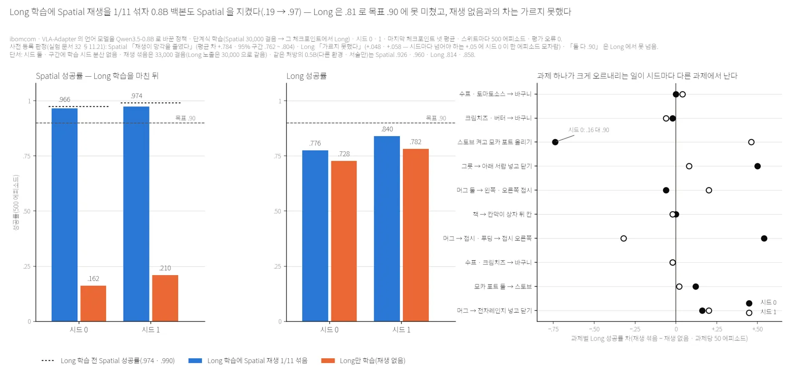
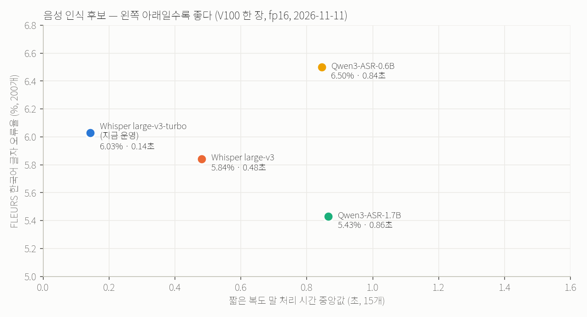
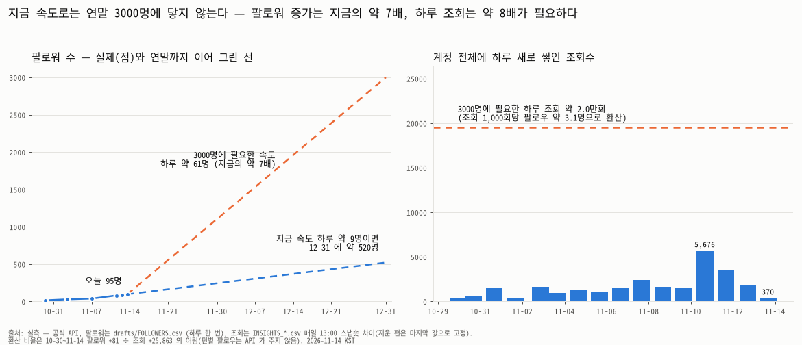
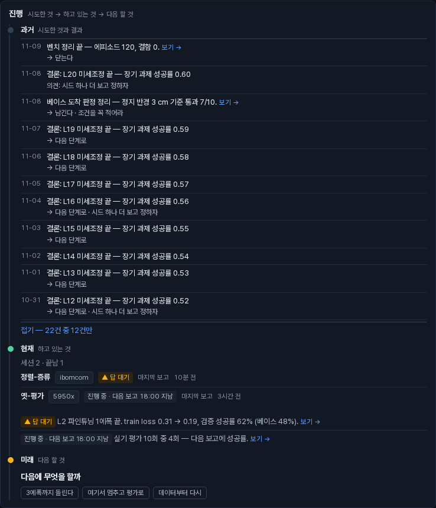
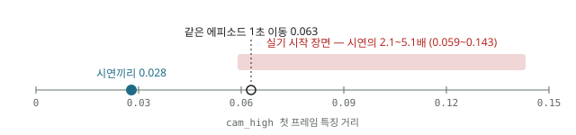
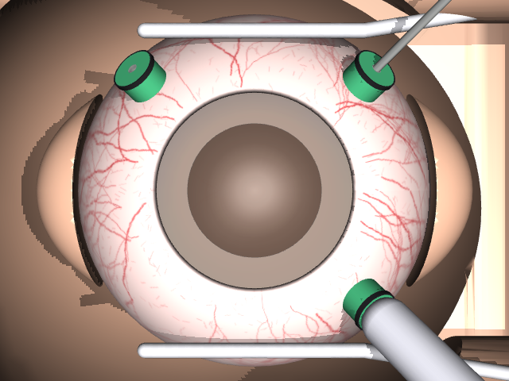

지금 할 일
실험
이번 주 달력 →
비서 보고 비서의 아침 계획 ✎ 고치기 · 일괄 진행 →
밤사이 지난 12시간 · 끝낸 일 · 새 질문
프로젝트
★ 별표 그림
프로젝트 누르면 보고·사진·사례로

Long 학습에 Spatial 재생 1/11 을 섞자 0.8B 백본도 Spatial 을 지켰다(.966 · .974 대 .162 · .210) — Long 은 .776 · .840 으로 .90 못 넘음 · 재생 없음과의 차는 가르지 못함(ibomcom · 시드 둘)
음성 인식 후보 — FLEURS 한국어 글자 오류율(200개) 대 짧은 복도 말 처리 시간(15개), V100 한 장 fp16, 2026-11-11
팔로워 실측과 연말까지의 직선 연장(하루 약 9명 → 약 520명, 필요 약 61명) · 계정 전체 하루 새 조회(필요 약 2만 회), 공식 API 실측, 2026-11-14
작업 연표 — 프로젝트 장 「과거」 칸이 끝난 보고 한 줄씩(날짜 · 무엇을 했나 · 고른 답), 보관함까지 새 것이 위로 선다. 「전부 보기」는 카드 안에서 펼쳐진다 (가짜 데이터로 찍은 화면, 2026-11-10)
시연 첫 프레임 최근접 거리 vs 실기 시작 장면 거리 — OOD 판정의 근거
현미경 시점 — 3포트 안구와 로봇이 쥔 광원(light pipe)이 ST 포트에 들어간 순간 (MuJoCo 시뮬, scene v1.4)일정 비서의 아침 계획 · 달력 — 날짜를 누르면 일정 더하기, 일정을 누르면 고치기
다가오는 일정 오늘부터 2주 · 누르면 고치기
⚙ 관리 토큰·테마는 이 브라우저에만, 나머지는 기기 간 공유(mailbox 의 settings.json)
점검 연결이 끊기거나 기록이 멈추기 전에 — 열 때마다 새로 읽는다
| GitHub 를 연결하면 섭니다 |
서버 상수 읽기 전용 — 값은 코드(tools/src/vaultgraph/inbox.py)에 있다
| 끝남 | 7일 | 마지막 보고가 이보다 오래면 그 세션은 끝남 |
|---|---|---|
| sid 보류 | 2시간 | 답이 적힌 지 이 동안은 올린 세션만 받는다 |
| 만료 | 7일 | 답이 적힌 지 이만큼 아무 세션도 안 받아 가면 expired |
| 색인 캐시 | 60초 | 사이트가 index.json 을 다시 읽는 간격 (`inbox_page.INDEX_TTL`) |
5950x
현황 상세 · 레포별 세션 · 이 머신으로 온 보고손볼 것 8건 · 규칙으로만 뽑는다
- ◆ 위험 / 여유 138.0G (기준 150G)→ 재생성 가능한 산출물부터 정리
- ▲ 주의 현황이 1.2일째 안 올라왔다→ 5950x 에서 vaultgraph status collect --save
- ▲ 주의 DINObotPose3 — 미커밋 1개, 마지막 커밋 134일 전→ 커밋하거나 .gitignore
- ▲ 주의 DIP_ROBOTPOSE — 미커밋 1개, 마지막 커밋 112일 전→ 커밋하거나 .gitignore
- ▲ 주의 VLA-Adapter — 미커밋 8개, 마지막 커밋 232일 전→ 커밋하거나 .gitignore
- ▲ 주의 VLANeXt — 원격보다 3커밋 앞섬 (lerobot)→ push
- ▲ 주의 VLANeXt — 미커밋 2개, 마지막 커밋 17일 전→ 커밋하거나 .gitignore
- ▲ 주의 najy-asset-history — 브랜치 feat/toss-history 가 원격을 추적하지 않는다 (push 안 됐을 수 있다)→ git push -u origin <브랜치>
5950x
✖ ——· 코어 30 · 부하 1.4 · 메모리 여유 123.3/131.8G8GPU 표 — UUID · util · 온도 · 프로세스
| smi | 카드 · UUID | 남은 메모리 | util | 온도 | 프로세스 |
|---|---|---|---|---|---|
| 0 | RTX 3090 GPU-05f84104-40d4-c675-91bf-5427bc0fd5e9 | 24.0 / 24G | 0% | 24° | 비어 있음 |
디스크
학습·평가 프로세스
없음
레포 동기화 22개 · 원격 기준은 마지막으로 받은 시점
| 레포 | 브랜치 | 마지막 커밋 | 상태 |
|---|---|---|---|
| DINObotPose3 | main | 2026-07-03 | 미커밋 1 |
| DINObotPose3/CtRNet-X | main | 2025-03-20 | 미커밋 13 |
| DINObotPose3/DREAM | master | 2023-10-17 | 미커밋 4 |
| DINObotPose3/Holistic-Robot-Pose-Estimation | main | 2025-01-06 | ✔ 동기 |
| DINObotPose3/RoboPEPP | main | 2025-07-31 | 미커밋 7 |
| DINObotPose3/robopose | master | 2021-08-23 | 미커밋 2 |
| DINObotPose3/sam3 | main | 2026-05-23 | ✔ 동기 |
| DIP_ROBOTPOSE | docs/2026-07-24-eval-experiments | 2026-07-25 | 미커밋 1 |
| DIP_ROBOTPOSE/GISR-robot | master | 2025-10-16 | ✔ 동기 |
| Insertion_VLA_Sim2 | main | 2026-03-15 | ✔ 동기 |
| OnLab/Kiosk_pose_OnLab | main | 2026-07-02 | ✔ 동기 |
| Project | main | 2026-09-23 | ✔ 동기 |
| VLA-Adapter | main | 2026-03-27 | 미커밋 8 |
| VLA-Adapter/LIBERO | master | 2025-03-15 | 미커밋 1 |
| VLANeXt | lerobot | 2026-10-28 | ▲ 3 앞섬미커밋 2 |
| VLA_research | main | 2026-11-12 | 23 뒤짐미커밋 28 |
| VLA_research-requests-20261028 | request-l2c-hangang-20261028 | 2026-10-31 | 537 뒤짐 |
| claude-dotfiles | main | 2026-11-12 | 12 뒤짐 |
| najy-asset | main | 2026-10-08 | ✔ 동기 |
| najy-asset-history | feat/toss-history | 2026-10-08 | ▲ 원격 추적 없음 |
| research_vault | main | 2026-11-13 | 미커밋 1 |
| research_vault-work | (detached) | 2026-11-07 | ▲ 원격 추적 없음 |
세션 레포별 · 마지막 보고 · 24시간 넘은 것은 접힌다
DGX_1
현황 상세 · 레포별 세션 · 이 머신으로 온 보고손볼 것 5건 · 규칙으로만 뽑는다
- ◆ 위험 /home/kiro-ai/NAJY 여유 46.8G (기준 150G)→ 재생성 가능한 산출물부터 정리
- ▲ 주의 base_arrival — 원격보다 5커밋 앞섬 (main)→ push
- ▲ 주의 base_arrival — 미커밋 1개, 마지막 커밋 16일 전→ 커밋하거나 .gitignore
- ▲ 주의 lerobot_trossen — 원격보다 317커밋 앞섬 (main)→ push
- ▲ 주의 trossen-ai-simulation — 원격보다 497커밋 앞섬 (feature/foundation-training-pipeline)→ push
DGX_1
✔ ——· 코어 80 · 부하 10.96 · 메모리 여유 299.6/528.2G5GPU 표 — UUID · util · 온도 · 프로세스
| smi | 카드 · UUID | 남은 메모리 | util | 온도 | 프로세스 |
|---|---|---|---|---|---|
| 1 | Tesla V100-SXM2-32GB GPU-dca1ea06-db90-d2df-3db5-40e5dd8f4a91 | 32.0 / 32G | 0% | 43° | 비어 있음 |
| 7 | Tesla V100-SXM2-32GB GPU-6908d0d7-3b3e-1c20-4fc4-ef03458209fe | 32.0 / 32G | 0% | 30° | 비어 있음 |
| 2 | Tesla V100-SXM2-32GB GPU-d967908d-8c2e-f7eb-01f7-cc4e587eace8 | 11.2 / 32G | 100% | 63° | 2770751 20G python scripts_dgx1_nofa2.py |
| 4 | Tesla V100-SXM2-32GB GPU-abfacb29-09e7-bc78-9161-ab2165e3c22c | 11.2 / 32G | 100% | 55° | 2785368 20G python scripts_dgx1_nofa2.py |
| 6 | Tesla V100-SXM2-32GB GPU-b427b26c-f159-20e1-d4f3-ea9b9a3c51f2 | 11.2 / 32G | 100% | 58° | 4154226 20G python scripts_dgx1_nofa2.py |
| 0 | Tesla V100-SXM2-32GB GPU-3878af6f-5468-7888-1e35-3649eeffcbf8 | 10.5 / 32G | 96% | 60° | 2758117 21G python scripts_dgx1_nofa2.py |
| 3 | Tesla V100-SXM2-32GB GPU-ae8bd9a1-2d13-43ad-c51a-1551b823efb6 | 10.5 / 32G | 100% | 53° | 2777739 21G python scripts_dgx1_nofa2.py |
| 5 | Tesla V100-SXM2-32GB GPU-38e04266-131d-44fa-ce68-dfedf8275211 | 10.5 / 32G | 100% | 64° | 4072895 21G python scripts_dgx1_nofa2.py |
디스크
학습·평가 프로세스
| 경과 | 작업 폴더 | 명령 |
|---|---|---|
| 8.6h | VLA_research/exp_vla | python scripts_dgx1_nofa2.py |
| 8.6h | VLA_research/exp_vla | python scripts_dgx1_nofa2.py |
| 8.5h | VLA_research/exp_vla | python scripts_dgx1_nofa2.py |
| 8.5h | VLA_research/exp_vla | python scripts_dgx1_nofa2.py |
| 7.6h | VLA_research/exp_vla | tail |
| 4.3h | VLA_research/exp_vla | python scripts_dgx1_nofa2.py |
| 4.3h | VLA_research/exp_vla | tail |
| 4.1h | VLA_research/exp_vla | python scripts_dgx1_nofa2.py |
레포 동기화 14개 · 원격 기준은 마지막으로 받은 시점
| 레포 | 브랜치 | 마지막 커밋 | 상태 |
|---|---|---|---|
| Albabot | main | 2026-11-11 | 2 뒤짐미커밋 1 |
| Go1 | main | 2026-11-11 | 미커밋 17 |
| Go1/unitree_go1 | main | 2025-06-12 | ✔ 동기 |
| Internet_of_Robot | main | 2026-11-13 | ✔ 동기 |
| VLA_research | main | 2026-11-15 | 4 뒤짐미커밋 391 |
| VLAb | main | 2025-11-19 | ✔ 동기 |
| base_arrival | main | 2026-10-29 | ▲ 5 앞섬미커밋 1 |
| claude-dotfiles | main | 2026-11-15 | 미커밋 6 |
| lerobot_trossen | main | 2026-11-11 | ▲ 317 앞섬 |
| reachy-2019 | main | 2026-11-14 | 미커밋 5 |
| research_vault | session/DGX_1-20261115-0230-mcp | 2026-11-15 | 미커밋 1 |
| robot_insta | main | 2026-11-14 | ✔ 동기 |
| secretary | main | 2026-11-15 | ✔ 동기 |
| trossen-ai-simulation | feature/foundation-training-pipeline | 2026-11-10 | ▲ 497 앞섬미커밋 1 |
세션 레포별 · 마지막 보고 · 24시간 넘은 것은 접힌다
Trossen_PC1
현황 상세 · 레포별 세션 · 이 머신으로 온 보고손볼 것 2건 · 규칙으로만 뽑는다
- ▲ 주의 현황이 16.5일째 안 올라왔다→ Trossen_PC1 에서 vaultgraph status collect --save
- ▲ 주의 lerobot_trossen — 미커밋 1개, 마지막 커밋 17일 전→ 커밋하거나 .gitignore
Trossen_PC1
✖ ——· 코어 24 · 부하 0.56 · 메모리 여유 59.0/65.2G2GPU 표 — UUID · util · 온도 · 프로세스
| smi | 카드 · UUID | 남은 메모리 | util | 온도 | 프로세스 |
|---|---|---|---|---|---|
| 0 | RTX 5090 Laptop GPU GPU-067cc7de-c1e0-9285-85aa-63138adad75c | 23.9 / 24G | 4% | 41° | 비어 있음 |
디스크
학습·평가 프로세스
없음
레포 동기화 5개 · 원격 기준은 마지막으로 받은 시점
| 레포 | 브랜치 | 마지막 커밋 | 상태 |
|---|---|---|---|
| base_arrival | main | 2026-10-29 | ✔ 동기 |
| claude-dotfiles | main | 2026-10-29 | ✔ 동기 |
| lerobot_trossen | main | 2026-10-28 | 미커밋 1 |
| research_vault | main | 2026-10-27 | ✔ 동기 |
| trossen-ai-simulation | main | 2026-10-20 | ✔ 동기 |
세션 레포별 · 마지막 보고 · 24시간 넘은 것은 접힌다
hangang
현황 상세 · 레포별 세션 · 이 머신으로 온 보고손볼 것 2건 · 규칙으로만 뽑는다
- ▲ 주의 TrocarBench-train — 브랜치 train-v1 가 원격을 추적하지 않는다 (push 안 됐을 수 있다)→ git push -u origin <브랜치>
- ▲ 주의 research_vault-work — 브랜치 session/hangang-20261102-2010-trocarbench-c12-resolution-floor 가 원격을 추적하지 않는다 (push 안 됐을 수 있다)→ git push -u origin <브랜치>
hangang
✔ ——· 코어 144 · 부하 1.33 · 메모리 여유 1084.3/1285.5G2GPU 표 — UUID · util · 온도 · 프로세스
| smi | 카드 · UUID | 남은 메모리 | util | 온도 | 프로세스 |
|---|---|---|---|---|---|
| 1 | GH200 144G HBM3e GPU-fa38396b-635d-ebea-9747-47183e747014 | 143.4 / 143G | 0% | 31° | 비어 있음 |
| 0 | GH200 144G HBM3e GPU-e34dad40-a2a3-1462-5af6-41f59f944819 | 143.4 / 143G | 0% | 32° | 비어 있음 |
디스크
학습·평가 프로세스
| 경과 | 작업 폴더 | 명령 |
|---|---|---|
| 154.0h | (작업 루트 밖) | tmux |
레포 동기화 8개 · 원격 기준은 마지막으로 받은 시점
| 레포 | 브랜치 | 마지막 커밋 | 상태 |
|---|---|---|---|
| TrocarBench | master | 2026-11-08 | 미커밋 1 |
| TrocarBench-train | train-v1 | 2026-11-14 | ▲ 원격 추적 없음 |
| VLANeXt2 | main | 2026-10-30 | ✔ 동기 |
| VLA_research | main | 2026-11-15 | 미커밋 10 |
| claude-dotfiles | main | 2026-11-14 | 미커밋 2 |
| lerobot_trossen | main | 2026-10-28 | ✔ 동기 |
| research_vault | main | 2026-11-14 | 미커밋 1 |
| research_vault-work | session/hangang-20261102-2010-trocarbench-c12-resolution-floor | 2026-11-02 | ▲ 원격 추적 없음 |
세션 레포별 · 마지막 보고 · 24시간 넘은 것은 접힌다
ibomcom
현황 상세 · 레포별 세션 · 이 머신으로 온 보고손볼 것 10건 · 규칙으로만 뽑는다
- ◆ 위험 DIP_fr5 — 원격이 없다 (이 디스크가 유일본)→ private 원격을 만들고 push
- ◆ 위험 DIP_realtime — 원격이 없다 (이 디스크가 유일본)→ private 원격을 만들고 push
- ◆ 위험 DIP_task — 원격이 없다 (이 디스크가 유일본)→ private 원격을 만들고 push
- ▲ 주의 DIP — 미커밋 2개, 마지막 커밋 51일 전→ 커밋하거나 .gitignore
- ▲ 주의 DIP_task — 미커밋 6개, 마지막 커밋 53일 전→ 커밋하거나 .gitignore
- ▲ 주의 VLA-Adapter — 미커밋 172개, 마지막 커밋 240일 전→ 커밋하거나 .gitignore
- ▲ 주의 LIBERO-PRO — 미커밋 4개, 마지막 커밋 236일 전→ 커밋하거나 .gitignore
- ▲ 주의 VLA_research-ja3rp — 브랜치 ja3-rp-prep 가 원격을 추적하지 않는다 (push 안 됐을 수 있다)→ git push -u origin <브랜치>
- ▲ 주의 VLA_research-long — 원격보다 6커밋 앞섬 (long-ibom)→ push
- ▲ 주의 knowledge-vault — 원격보다 3커밋 앞섬 (main)→ push
ibomcom
▲ ——· 코어 48 · 부하 4.73 · 메모리 여유 213.7/263.8G10GPU 표 — UUID · util · 온도 · 프로세스
| smi | 카드 · UUID | 남은 메모리 | util | 온도 | 프로세스 |
|---|---|---|---|---|---|
| 3 | RTX A6000 GPU-05b804ff-3b02-39f4-cf62-b848e189ebdd | 31.0 / 48G | 0% | 29° | 961878 16G (다른 사용자) |
| 4 | RTX 3090 GPU-1cdd7bc8-7c5a-dc09-d4fc-5dcfe92e104d | 24.0 / 24G | 0% | 28° | 비어 있음 |
| 2 | RTX 3090 GPU-70a2a406-5d77-3533-e8ba-0c9d338f4a11 | 12.7 / 24G | 27% | 66° | 1849326 11G python train_rp.py |
| 1 | RTX 3090 GPU-c3d180c2-f92c-fe13-b7b8-337247e36a33 | 12.7 / 24G | 26% | 68° | 1848628 11G python train_rp.py |
| 0 | ✖ 읽기 실패 0000:3E:00.0 — nvidia-smi 가 읽지 못했다. 리셋(nvidia-smi -r -i N)이나 재부팅이 필요할 수 있다 | — | — | — | — |
디스크
학습·평가 프로세스
| 경과 | 작업 폴더 | 명령 |
|---|---|---|
| 0.2h | VLA_research/exp_vla | python train_rp.py |
| 0.2h | VLA_research/exp_vla | python train_rp.py |
레포 동기화 32개 · 원격 기준은 마지막으로 받은 시점
| 레포 | 브랜치 | 마지막 커밋 | 상태 |
|---|---|---|---|
| DIP | main | 2026-09-24 | 미커밋 2 |
| DIP/CtRNet-X | main | 2025-03-20 | ✔ 동기 |
| DIP/DREAM | master | 2023-10-17 | 미커밋 4 |
| DIP/Holistic-Robot-Pose-Estimation | main | 2025-01-06 | 미커밋 2 |
| DIP/RoboPEPP | main | 2026-06-11 | 미커밋 8 |
| DIP/robopose | master | 2021-08-23 | 미커밋 1 |
| DIP_fr5 | main | 2026-09-24 | ◆ 원격 없음 |
| DIP_realtime | master | 2026-09-21 | ◆ 원격 없음 |
| DIP_release/dinobotpose | master | 2026-09-23 | ✔ 동기 |
| DIP_task | master | 2026-09-22 | ◆ 원격 없음미커밋 6 |
| GC | main | 2026-09-15 | ✔ 동기 |
| GC/FPI_puncture_detection | main | 2026-09-15 | ✔ 동기 |
| GC/PunctureCurve | main | 2026-09-15 | ✔ 동기 |
| Internet_of_Robot | main | 2026-10-16 | ✔ 동기 |
| Kiosk_pose_OnLab | main | 2026-11-11 | ✔ 동기 |
| Lab_studies | main | 2026-09-15 | ✔ 동기 |
| TrocarBench | master | 2026-10-31 | ✔ 동기 |
| VLA | main | 2026-09-15 | ✔ 동기 |
| VLA-Adapter | main | 2026-03-19 | 미커밋 172 |
| VLA-Adapter/LIBERO | (detached) | 2025-03-15 | ✔ 동기 |
| VLANeXt | lerobot | 2026-07-03 | ✔ 동기 |
| VLANeXt2 | main | 2026-10-30 | ✔ 동기 |
| VLA_ext/LIBERO-PRO | master | 2026-03-23 | 미커밋 4 |
| VLA_ext/LIBERO-plus | main | 2026-01-21 | ✔ 동기 |
| VLA_research | main | 2026-11-14 | 미커밋 2980 |
| VLA_research-ja3rp | ja3-rp-prep | 2026-11-08 | ▲ 원격 추적 없음 |
| VLA_research-long | long-ibom | 2026-10-01 | ▲ 6 앞섬 |
| claude-dotfiles | main | 2026-11-14 | ✔ 동기 |
| knowledge-vault | main | 2026-10-31 | ▲ 3 앞섬2 뒤짐 |
| research_vault | main | 2026-11-14 | ✔ 동기 |
| research_vault-graphify | (detached) | 2026-10-30 | ▲ 원격 추적 없음 |
| research_vault-work | (detached) | 2026-11-10 | ▲ 원격 추적 없음 |
세션 레포별 · 마지막 보고 · 24시간 넘은 것은 접힌다
sandia
현황 상세 · 레포별 세션 · 이 머신으로 온 보고손볼 것 2건 · 규칙으로만 뽑는다
- ◆ 위험 / 여유 72.9G (기준 150G)→ 재생성 가능한 산출물부터 정리
- ▲ 주의 VLA-Adapter — 미커밋 22개, 마지막 커밋 240일 전→ 커밋하거나 .gitignore
sandia
▲ ——· 코어 64 · 부하 16.46 · 메모리 여유 243.6/263.7G2GPU 표 — UUID · util · 온도 · 프로세스
| smi | 카드 · UUID | 남은 메모리 | util | 온도 | 프로세스 |
|---|---|---|---|---|---|
| 0 | RTX 3090 GPU-ee4df9f8-5a33-e0a8-bf90-a9def79b3a7e | 24.0 / 24G | 0% | 24° | 비어 있음 |
| 1 | RTX 3090 GPU-de4ff36f-be17-9d4a-436c-fe9e51ab34a5 | 24.0 / 24G | 0% | 26° | 비어 있음 |
| 2 | RTX 3090 GPU-06ea9f33-2cad-4a90-81fd-d4cd94faa1fa | 24.0 / 24G | 0% | 23° | 비어 있음 |
| 3 | RTX 3090 GPU-9894e672-8a21-90f0-14c6-ebab088266ab | 24.0 / 24G | 0% | 23° | 비어 있음 |
디스크
학습·평가 프로세스
없음
레포 동기화 5개 · 원격 기준은 마지막으로 받은 시점
| 레포 | 브랜치 | 마지막 커밋 | 상태 |
|---|---|---|---|
| VLA-Adapter | (detached) | 2026-03-19 | ▲ 원격 추적 없음미커밋 22 |
| VLA-Adapter/LIBERO | (detached) | 2025-03-15 | 미커밋 1 |
| VLA_research | main | 2026-11-14 | 미커밋 22 |
| claude-dotfiles | main | 2026-11-14 | ✔ 동기 |
| research_vault | main | 2026-11-14 | 미커밋 1 |
세션 레포별 · 마지막 보고 · 24시간 넘은 것은 접힌다
Stage A(측정 가능성) 완료. 평가는 결정적, 작동점 S=30k,
프로젝트 현황판
레포의 STATUS.md 그대로 — 지금 목표·할 일·다음 한 걸음프로젝트 현황판
레포의 STATUS.md 그대로 — 지금 목표·할 일·다음 한 걸음프로젝트 현황판
레포의 STATUS.md 그대로 — 지금 목표·할 일·다음 한 걸음복도 로봇이 잘못 알아들은 말에 마음대로 답한다 — Google 우선 귀와 귀 모델 고르기 — 최신 사례 C17
프로젝트 현황판
레포의 STATUS.md 그대로 — 지금 목표·할 일·다음 한 걸음하루 두 번 자동 게시 중 — 새 편은 만들지 않고 지표를 지켜본다 (소유자 2026-11-10)
프로젝트 현황판
레포의 STATUS.md 그대로 — 지금 목표·할 일·다음 한 걸음오늘 계획 PLAN.md · 목표 시간표 ROADMAP.md(프로젝트마다 이번 주·이번 달·그 뒤) · 날마다 끝난 것 LOG.md · 현황판 STATUS.md.
프로젝트 현황판
레포의 STATUS.md 그대로 — 지금 목표·할 일·다음 한 걸음사이트는 한 파일 앱이다 — 왼쪽 프로젝트 목록 · 가운데 홈/관제실/사례/현황/그래프 · 오른쪽 볼트 규모. 사례집은 색인 한 장이고 사례를 누르면 그 사례만 열린다 (2026-10-31).
프로젝트 현황판
레포의 STATUS.md 그대로 — 지금 목표·할 일·다음 한 걸음프로젝트 현황판
레포의 STATUS.md 그대로 — 지금 목표·할 일·다음 한 걸음프로젝트 현황판
레포의 STATUS.md 그대로 — 지금 목표·할 일·다음 한 걸음trossen-ai-simulation — Trossen 시뮬레이션 학습 (ACT·SmolVLA)
프로젝트 활성Najongs/trossen-ai-simulation[비공개]/trossen-ai-simulationDGX_1Trossen_PC1ibomcomTrossen마지막 활동 —학습은 돌 만큼 돌았고, 아무것도 평가되지 않았다. 다음 한 걸음은 새 런이 아니라 eval이다.
프로젝트 현황판
레포의 STATUS.md 그대로 — 지금 목표·할 일·다음 한 걸음현재 지점이 아직 안 적혔다
프로젝트 현황판
레포의 STATUS.md 그대로 — 지금 목표·할 일·다음 한 걸음현재 지점이 아직 안 적혔다
프로젝트 현황판
레포의 STATUS.md 그대로 — 지금 목표·할 일·다음 한 걸음프로젝트 현황판
레포의 STATUS.md 그대로 — 지금 목표·할 일·다음 한 걸음데이터셋 v1(상태 마스터, render OFF) 2,000 에피소드 생성·계약 검사 완료. 비공개 HF 데이터셋에 같은 폴더 구조로 올라가 있다.
프로젝트 현황판
레포의 STATUS.md 그대로 — 지금 목표·할 일·다음 한 걸음프로젝트 현황판
레포의 STATUS.md 그대로 — 지금 목표·할 일·다음 한 걸음Trossen_Foundation_52DS — trossen-ai-simulation 안의 SmolVLA 파운데이션 학습 (데이터셋 52개)
프로젝트 활성DGX_1Trossen마지막 활동 —1단계(증강 없음) 190,000 step 에서 OOM 으로 멈췄고, 마지막 체크포인트 190,000 에서
프로젝트 현황판
레포의 STATUS.md 그대로 — 지금 목표·할 일·다음 한 걸음프로젝트 현황판
레포의 STATUS.md 그대로 — 지금 목표·할 일·다음 한 걸음프로젝트 현황판
레포의 STATUS.md 그대로 — 지금 목표·할 일·다음 한 걸음프로젝트 현황판
레포의 STATUS.md 그대로 — 지금 목표·할 일·다음 한 걸음프로젝트 현황판
레포의 STATUS.md 그대로 — 지금 목표·할 일·다음 한 걸음프로젝트 현황판
레포의 STATUS.md 그대로 — 지금 목표·할 일·다음 한 걸음현재 지점이 아직 안 적혔다
프로젝트 현황판
레포의 STATUS.md 그대로 — 지금 목표·할 일·다음 한 걸음프로젝트 현황판
레포의 STATUS.md 그대로 — 지금 목표·할 일·다음 한 걸음프로젝트 현황판
레포의 STATUS.md 그대로 — 지금 목표·할 일·다음 한 걸음프로젝트 현황판
레포의 STATUS.md 그대로 — 지금 목표·할 일·다음 한 걸음문제 사례집
증상 → 가설·시도·결과 → 연구 질문과 답 → 실험 설계새 실험 전에 안 풀린 사례의 질문과 ❌ 행(다시 하지 마라)부터 본다 — 위가 안 풀린 것.
| 사례 | 문제 | 상태 | 시도 | 머신 | 그림 | 갱신 | |
|---|---|---|---|---|---|---|---|
| ACT_Trossen 5건 | |||||||
| C04 | 여러 단계를 한 모델로 묶을 것인가, 단계 전용(stage expert) 모델을 둘 것인가✖3✔2 | ✖3✔2 | Trossen_PC1ibomcom | 10-20 | |||
| C02 | 로봇이 몇 cm 어긋나 서 있으면 튜브를 못 잡는다✖2▲1✔1▣ | ✖2▲1✔1 | Trossen_PC1ibomcom | ▣ | 10-19 | ||
| C03 | 정지한 시작 자세에서 첫 동작을 내지 못한다✖3✔2 | ✖3✔2 | Trossen_PC1DGX_1+1 | 10-08 | |||
| C01 | 이동 단계 끝에서 정책이 멈추지 못하고 더 돈다✖4▲2✔2 | ✖4▲2✔2 | Trossen_PC1DGX_1 | 11-11 | |||
| C05 | 다른 현장 데이터를 섞으면 환경 변화에 강해지는가✖3✔2 | ✖3✔2 | Trossen_PC1DGX_1+1 | 10-15 | |||
| VLANeXt2 4건 | |||||||
| C14 | 전문가 시연기가 「되는 자리」만 시연한다✖10▲5✔5 | ✖10▲5✔5 | ibomcom | 10-28 | |||
| C12 | 증류한 정책의 정렬 정밀도가 1.6~2.9mm 에서 더 안 내려간다✖12▲6✔3 | ✖12▲6✔3 | ibomcom | 11-14 | |||
| C13 | 시뮬 평가가 거짓 성공을 센다✖10▲2✔5 | ✖10▲2✔5 | ibomcom5950x | 10-28 | |||
| C11 | 풀태스크 정책이 트로카를 스치고 지나간다✖4▲2✔5 | ✖4▲2✔5 | ibomcom5950x | 07-23 | |||
| robot_insta 1건 | |||||||
| C18 | 로봇 설명 릴스가 팔로워 밖으로 퍼지지 않는다✖1▲2▣ | ✖1▲2 | DGX_1 | ▣ | 11-14 | ||
| VLA_research 6건 | |||||||
| C08 | 이어 학습하면 이전 스위트를 잊는다✖3▲5✔2 | ✖3▲5✔2 | ibomcom5950x | 11-15 | |||
| C10 | 긴 과제가 실패했을 때 어느 구성요소 탓인지 가르지 못한다✖5▲6▣ | ✖5▲6 | ibomcom5950x+1 | ▣ | 11-12 | ||
| C07 | 긴 과제 스위트(LIBERO-Long) 성공률이 .89대 평원에 머문다✖14▲8✔12 | ✖14▲8✔12 | ibomcom5950x+1 | 11-11 | |||
| C09 | 정책이 지시문을 안 쓰고 장면만 보고 행동한다✖9▲1✔1 | ✖9▲1✔1 | ibomcom5950x | 11-03 | |||
| C16 | 완료·위험을 따로 판정하는 감시자(monitor)를 만들 수 있나✖7▲3✔3 | ✖7▲3✔3 | 5950xibomcom | 11-03 | |||
| C06 | 같은 레시피로 8런을 돌리면 일부만 성공률을 올린다✖7▲2✔2 | ✖7▲2✔2 | ibomcom5950x | 10-01 | |||
| TrocarBench 1건 | |||||||
| C15 | 시연 기록이 정책에 답을 흘린다✖6▲3✔5 | ✖6▲3✔5 | ibomcom | 10-20 | |||
| reachy-2019 1건 | |||||||
| C17 | 복도 로봇이 잘못 알아들은 말에 마음대로 답한다✖2▲2✔1▣ | ✖2▲2✔1 | DGX_1 | ▣ | 11-11 | ||
지식 사례에서 — 다시 하지 마라 ❌ 105 · 아직 모르는 것 14 · 그래프 보기 →
다시 하지 마라 ❌ 행 105건 전부 · 최근 사례부터
- C08 · H8 10% 재생의 Long 손해는 재생이 Long 정규화 통계를 바꿔서다원인 아님
- C08 · H7 되살려도 새 스위트는 남는다
- C08 · H1 점수가 낮은 것은 정규화 키가 어긋나서다망각이 실체
- C12 · H22 (TrocarBench) 실패가 나는 입구 근처(3~10 mm)에서 시작하는 짧은 시연을 대량으로 넣으면(입구 10 mm 안 프레임 비중 ≈35 → 60 % [추정]) 마지막 정렬을 배운다 (E1…효과 없음 — 엄격 평균 +1.0 %p(s1 은 대조보다 낮음), 원시는 두 시드 모두 높지만 +3.4 %p 로 기준 5 %p 미만 — 조건: 근처 시연 2,9…
- C12 · H21 (TrocarBench) 정책이 실제로 빠지는 「입구 옆에서 축방향으로 누름」 자세에서 시작한 회복 시연(oracle 이 뒤로 3 mm → 다시 맞춤 → 삽입)을 더하면 정체가 풀린다 (E10,…엄격 성공 효과 없음(+2.5 %p, s0 은 대조보다 낮음) · 원시 +7.3 %p 는 시드 방향이 반대라 레버 아님 — 조건: 회복 1,988(프레임 40…
- C12 · H20 (TrocarBench) 실기에서 살 수 있는 센서 3종이 영상이 못 주는 마지막 정렬 정보를 준다 (E9)센서 3종 효과 없음(등록선 16.5 %) — 조건: 시드 1, GPU 4장 방식. 같은 방식(GPU 4장 56k·같은 흔들기 데이터) 영상만 대조 0.5 %(…
- C12 · H19 (TrocarBench) 0.3 mm 에서 멈추는 것은 학습 목적 때문이다 — 행동을 포트 기준으로 두고 포트 근처 오차를 무겁게 벌점하면 넘는다 (E8)등록 기준(≥ 20 % 부분, a2 − a1 ≥ 10 %p 가중이 레버)에 각각 1 장면·1.4 %p 모자라 「레버 아님」으로 서술 — 조건: 정답 입력 진단…
- C12 · H16 (TrocarBench) 정렬 구간 교정 시연(DART 식 킥+회복)을 섞으면 마지막 정렬을 배운다반증(v2, 두 시드) — 회복 시연을 입구 안까지 넣어도 대조군을 못 넘고 잔차 1.7 mm 그대로. v1 의 17 vs 1 은 시드 분산(대조군 10.5 v…
- C12 · H15 (TrocarBench) 사전학습 VLM 인코더(SmolVLA)면 ACT 가 멈춘 2 mm 를 넘는다반증 — 학습량 5배(1.8 → 8.8 epoch)로 바뀐 것이 없다. 사전학습 VLM 인코더도 같은 2 mm 바닥에서 멈춘다 → 바닥은 백본이 아니라 데이터·…
- C12 · H13 (TrocarBench) 상대 행동(목표 − 현재 끝 자세, 지평선 1)으로 바꾸면 정규화 해상도가 수십 배 올라 바닥이 내려간다재예측만 보고 채택하지 마라 — 정밀하지만 닻이 없다(누적 드리프트). 상대 축 라벨(평균 ≈ 0)의 평균 붕괴는 [추정]. 매 스텝 재계획 + 시간 앙상블 대…
- C12 · H9 입구 배회는 입구-유지 시연이 만든 어트랙터다시연 제거로는 안 풀림 — 원인 기각은 [교락, 미검증]
- C12 · H8 더 학습하면 삽입·각도도 돌아온다단순 연장 기각
- C12 · H6 프레임 균형 다이얼을 맞추면 정밀도 총량이 오른다총량 가설 기각 · 배분 레버는 ✓ 5연속 실증
- C12 · H2 실패는 시작 분포 밖(OOD)에서 출발해서다기각 (공변량 이동 자체는 실재 — 시작의 93.8%가 시연 최대 측면오차 3.57mm 밖)
- C12 · H1 깨끗한 시연으로 바꾸면 궤적이 교정된다저학습률로는 나쁜 분지를 못 벗어난다
- C18 · 2 캐러셀이 저장을 부른다
- C10 · H16 같은 VLM이 장면(첫 화면)을 보고 하위 목표 계획과 잡을 · 놓을 기준점을 함께 낼 수 있다 — 로봇 예산(총합 4B 미만) 안의 모델로이 조건(첫 화면 한 장 · 프롬프트 하나 · 탐욕 1회)에서 예산 안 VLM은 계획 · 기준점 관문을 넘지 못한다. 계획 정확도 · 점 적중은 프록시다(성공률…
- C10 · H13 행동을 이산 어휘(축별 조그 · step마다 주축 하나 × 크기 3단)로 바꿔도 시연을 재현할 수 있다 — 어휘형 행동 헤드의 천장 확인조그 어휘로는 닫힘(등록 규칙상 우선순위 결정) — 조그로 학습한 닫힌 고리 정책이 실패한다는 측정은 아니다. 언제 통하나: 이 조작화(주축 1개 · 3단)에…
- C10 · H12 섭동 스위트 포크(LIBERO-Plus)의 「섭동 없는」 원래 과제는 원본 LIBERO와 같은 평가다 — 섭동 효과를 원본 대비로 읽어도 된다에피소드 단위 항등 — 총합 등가는 ✓(관문 실패 → 사용자 결정으로 결과 전에 관문을 「총합 등가」로 정정 · 하네스 정상 확인으로만 읽는다 → Camera…
- C10 · H4 계획기가 텍스트만으로 하위 목표 열을 내려면 크기를 키우거나 출력 문법을 강제하면 된다예산 안 전 칸 관문 미달(V-e → W-c2) · 문법은 정답률 효과 없음
- C10 · H2 완료를 정답으로 알려 주면 긴 과제가 풀린다지시문 통로의 오라클은 무효 — 정책이 지시문을 안 쓴다(C09) · 완료 고리의 비용은 못 쟀다
- C01 · H10 (회고 2026-11-11) 학습한 정책이면 시작 위치가 달라도 된다검증 없는 전제
- C01 · H6 VLM 동결·쿼리 토큰 부족
- C01 · H5 SmolVLA 는 bf16 갱신 소실로 덜 배웠다
- C01 · H2 베이스 상태 입력(누적 헤딩)이 없어 얼마나 돌았는지 모른다상태 입력으로 못 고침
- C07 · H33 H28의 「원래 평균색에서 멀어지는 쪽이 떨어뜨린다」[추정]이 탁자 밝기에서도 서나 — 공개 하락과 반대쪽으로 멀어져도 떨어지나, 같은 거리면 밝은 쪽 · 어두운 쪽이 같은가, 색상만 돌려도 떨어…「두 과제에 공통인 탁자 밝기 규칙 하나」는 서지 않는다(원인 문장 6줄 「반대쪽으로는 「원래 밝기에서 멀수록」을 확인하지 못했다」 · 판정 묶음 · 한 줄만…
- C07 · H31 원래 LIBERO-Long RLDS를 mujoco 3.1.6 · 원래 재생 순서 · 같은 env 텍스처 교체(H26 · H30)로 다시 그리면 원래 화면과 같은가 — 등록 관문 1′(에피소드 프레…관문 3 (가) · 5 과제 하한 실패 → 렌더 보류 2차(문턱 그대로 · 닫기 / 재등록은 소유자). 함정: 원래 RLDS의 특정 장면 손목 프레임에 렌더 결…
- C07 · H26 원래 LIBERO-Long RLDS(libero_10_no_noops) 시연을 평가 밖 텍스처로 다시 그리려면(bg_lever), 원래 hdf5 행동을 재생해 원래 궤적을 비트 수준으로 되살릴 수…등록 문턱(실패 ≤ 2%)을 못 넘어 렌더 보류 · 재등록 대기. 함정 둘: ① 재생 재현은 mujoco 판과 env 이력 둘 다 맞아야 한다 ② 한 프로세스에…
- C07 · H20 행동 헤드를 L1 회귀에서 flow matching으로 바꾸면 Long이 오른다 — 같은 관측에 갈래 행동(다봉성)을 모델링한다(A4 · Q1·Q2의 손실 꼬리와 다른 가설)이 구현에서 하락 (헤드 종류 판정 아님)
- C07 · H17 LIBERO-Plus 포크는 원래 과제를 실행마다 같게 돈다 — 그래서 새 판(R3 스위트를 더한 포크 · 사본)이 옛 판과 에피소드 단위로 같아야 한다(R3 관문 「옛 판과 성패 불일치 ≤ 2/…부엌 장면에서는 거짓 — 기제는 MSAA 렌더의 GPU 경합(같은 날 확인): 물리(750 step 상태)는 모든 실행에서 같고, EGL 렌더가 MSAA(off…
- C07 · H14 분기 없이 이어서 계단 감쇠해도 분기 꼬리처럼 Long이 오른다(④ E1)이 칸(24k 계단 ×0.1)에서 레버 아님 · 관문 미달. 「감쇠가 Long을 낮춘다」로 읽지 않는다(등록에 하락 판정 없음 · 태스크 묶음 SE .05~.0…
- C07 · H13 평원의 원인이 행동 정규화 통계의 단계 간 드리프트다원인 아님
- C07 · H12 행동 회귀 손실이 L1이라 큰 잔차에 둔하다이 칸에서 레버 아님
- C07 · H11 배치를 키우지 않고 꼬리 길이만 늘려도 같은 데 닿는다이 2시드 화면에서 미충족
- C07 · H8 끝까지 내리지 말고 최고의 1/10까지만 내리면 효율이 좋다가설 기각 (창 평균 규약 아래)
- C07 · H5 실패는 실행 쪽(재추론 주기·시간 상한) 탓이다둘 다 근거 없음
- C07 · H4 Long 노출을 더 주거나 섞어 배우면 오른다
- C07 · H3 그 이득은 Long 성능의 상한을 올린다상한 가설 기각
- C07 · H1 30k 안의 창 평균 추세가 「고원」이니 학습량은 충분하다가설이 틀림
- C17 · A2 Google 이 실패하면 DGX Whisper 로 넘어간다 (10-07 에 순서를 Google → Whisper → Vosk 로 바꿨다)세션의 「예비 길이 죽어 있었다」 진단은 틀렸다 (예비 길은 정상)
- C17 · A1 Vosk 를 Google 실패 때의 예비로 둘 수 있다Vosk 는 예비가 아니라 귀를 잃는 것
- C09 · H11 외부 접지 모듈(물체 이름 → 점)로 우회한다접지기 단계에서 막힘
- C09 · H10 추론 때 지시문 방향을 증폭(CFG)한다잠정 (2시드)
- C09 · H9 옵티마이저 평탄화(SAM)로 고친다잠정 (2시드)
- C09 · H8 지시문 민감도를 키우면 성공이 생긴다민감도는 충분조건 아님
- C09 · H6 같은 장면의 다른 과제를 더 배우면 생긴다재실험금지
- C09 · H5 그 학습률이면 처음 보는 지시문도 따른다
- C09 · H3 학습량이 부족하다재실험금지
- C09 · H2 지시문을 아예 읽지 않는다가설 정정
- C09 · H1 데이터 결함이다(배치 이동 · 누수 · 라벨 오류 · 다봉 · 데모 수 불균형)
- C16 · T5 불안전 실패 라벨은 정책 탓을 가리킨다결과 라벨에 과제 기하 몫이 섞인다 [개연 — 접촉 10건·한 샘플러]
- C16 · T2 설계 문서의 주의·정지 임계를 그대로 쓸 수 있다임계값이 아니라 기하 정의가 판정을 만들고 있었다
- C16 · V8 같은 헤드(V7)는 끝내 완료되지 않는 하위 목표를 완료로 잘못 감지하지 않는다(거짓 완료 ≤ .05)거짓 완료는 약한 고리(규칙 ② > .15) — 언제 안 통하나: 미완료 하위 목표가 끝까지 질의되는 실패 에피소드. 다만 군집 구간이 넓고 두 헤드 시드는 독…
- C16 · V5 문장 인코더·술어 구조 입력·장면 폭이 그 벽을 넘는다「근접 노출」은 가설로만
- C16 · V4 같은 장면의 넓은 술어로 학습하면 처음 보는 과제의 완료 판정으로 넘어간다미달
- C16 · V3 실패 원인 분류는 모델 라벨러에 맡길 수 있다사전 판정 「사용 불가」 — 원인 지표는 시뮬레이터 기록에서 직접
- C16 · V1 확률 보정까지 학습한 작은 범용 VLM 이 완료 감시자가 된다감시자 후보 아님
- C13 · H19 (TrocarBench) 조용한 물리 결함이 성공 게이트와 같은 자릿수로 기록에 섞이지는 않는다가설 틀림 — 한 세대 데이터의 지표 바닥이 결함이었다. v1·v1.1 혼용 금지로 못 박았다
- C13 · H17 (TrocarBench) 기록된 힘 채널은 계약 문서가 적은 대로 그 스텝 동안의 최대다문서가 틀렸다 — 5 시드라 [개연]
- C13 · H15 (TrocarBench) 게이트를 정직하게 만들면 새로 드러나는 실패는 교사·정책의 실력 문제다가설 틀림 — 새 실패의 8/10 이 기하 한계다. 정적 자세 검사라 [개연]이고, 첫 접촉 행만 보던 1차 검사는 판별력이 없어 폐기했다
- C13 · H13 (TrocarBench) 충돌 캡슐이 있으면 물리가 관통을 막아 주므로 성공 게이트가 물리를 대신할 필요가 없다가설 틀림 — 관통한 궤적이 성공으로 셌다
- C13 · H12 평가 파이프라인이 조용히 틀린 것을 재지는 않는다재발방지 항목
- C13 · H10 min-lat 이 캠페인 진척을 대리한다지표 선택이 캠페인을 오도
- C13 · H9 3D 거리 성공 기준이면 정렬 실력을 읽을 수 있다단일 3D 거리 기준 폐기
- C13 · H6 교사(oracle)는 애초에 물리적으로 유효한 시연을 준다
- C13 · H5 최종상태가 정렬이면 궤적도 정렬이다가설 틀림 — n=15·중단 런이라 [개연]
- C13 · H1 조기종료(early-term, ET) 평가로도 조건 간 차이를 읽을 수 있다가설 틀림
- C14 · H20 (TrocarBench) 생성기 쪽 경로·충돌 검사가 통과하면 그 배치는 실제로 쓸 수 있다검사기가 조용히 통과시켰다
- C14 · H18 (TrocarBench) 교사가 못 하는 셀은 표본 분포를 좁혀 없애면 된다분포 축소 기각 · 앞당김만 채택 · 평가 필터는 보류
- C14 · H16 (TrocarBench) 준비 자세 거부는 IK 정식화와 가지(브랜치) 선택으로 풀린다가설 틀림 — 1차 수치 철회, 직선 EE 에서는 정식화도 판정도 절단을 못 푼다
- C14 · H14 (TrocarBench) 기구 길이·거치 자세 같은 하드웨어 손잡이로 도달 영역을 넓힐 수 있다선행 프로젝트와 같은 결론이 3포트 씬에서 재현 (지표가 달라 수치 비교는 안 한다)
- C14 · H10 각도 창 정중앙(최적각)을 조준하는 것이 가장 안전하다각도는 넓히는 쪽이 안전 (학습 띠 48셀 MC 638/640 = 99.7%)
- C14 · H9 트로카 스택 충돌 활성화가 영역을 줄인다영향 없음
- C14 · H7 보증 영역이 좁아 새 엔드이펙터(니들 단축)가 필요하다새 엔드이펙터 불요 확정(데이터셋·벤치마크 용도)
- C14 · H6 그 구멍은 솔버·시작 자세로 풀 수 있다→ 설계 변경
- C14 · H5 남은 구멍도 특이점이다진단이 틀렸다
- C14 · H2 시작 자세(브랜치 선택)·standoff·니들 길이로 영역이 늘어난다영역을 움직인 알고리즘 레버 0
- C04 · H5 실기 집기에서도 묶음이 낫다실기 역전 [개연]
- C04 · H4 외부·다른 현장 데이터를 더 부으면 더 좋다조건 탓
- C04 · H2 묶음이 이동에 손해다60K 멈춤의 오판
- C15 · H9 계약을 고치면 기존 회귀 수치가 바뀐다가설 틀림 — 고치면서 수치를 지킬 수 있다
- C15 · H8 분할과 정규화 통계는 알아서 안전하다안전하지 않음 → 전부 수용·수정
- C15 · H4 같은 seed 면 에피소드 하나를 다시 만들 수 있다단독 재생성·짝 비교 불가
- C15 · H3 같은 장면에 두 포트를 짝으로 넣으면 L2 는 지시문을 쓰게 된다짝만으로는 안 됨 → 짝·L2 평가에서는 기구를 끈다 (소스 대조, 정책 미측정)
- C15 · H2 proprio 에는 실기 로봇이 아는 값만 들어 있다특권 누설 확정 (정책 영향은 미측정 — 예측)
- C15 · H1 관측과 행동이 같은 시점으로 기록돼 있다가설 틀림 · 결함 실재
- C02 · H2 팔 상태 입력을 가끔 지우면 영상을 보게 된다오프라인만 오름
- C02 · H1 모델이 못 잡는다가설 자체가 틀림
- C05 · H6 혼합이 물체 자리를 영상으로 읽게 한다(→ C02)
- C05 · H5 색상 증강이 환경 차이를 메운다닿지 않는 요인
- C05 · H1 외부·다른 현장 데이터를 사전학습(pretrained)에 부으면 좋다조건 탓
- C03 · H4 시간 앙상블(temporal ensembling)이 깬다
- C03 · H2 앞 정지 구간이 「기다림」을 가르치니 잘라 학습한다 (trim_idle)레시피 성질 [개연]
- C03 · H1 원핫·진행도(progress)·장면 분포 같은 레시피 레버가 부족하다
- C06 · 14 CPU 스레드 수가 결정적 레시피의 결과를 바꾼다결과는 안 바뀐다 · 코어 많은 머신은 스레드를 먼저 제한한다
- C06 · 13 결정적 레시피의 산출물은 머신이 달라도 비트 동일하다(1·2호기 25000 step 실측)일반화 안 됨 — 원인 미확정(기울기 미세 수치 차로 추정). 같은 시드도 호기가 다르면 다른 궤적으로 보고 시드 짝지은 호기 간 대조를 하지 않는다
- C06 · 11 마지막 체크포인트 4개의 가중치 평균(W4)이 이륙을 대신한다평균은 요동만 평활화한다
- C06 · 10 수치 잡음만 다르면 이륙은 같다가설 틀림
- C06 · 8 peak lr 을 5e-5 로 낮추면 이륙이 늦어진다사전 가설이 반대 방향으로 반증 · 이륙률은 ✓
- C06 · 2 같은 시드·같은 데이터 순서면 재현된다대응(paired) 설계 폐기
- C06 · 1 같은 레시피면 같은 성능이 나온다가설 틀림
- C11 · H9 1세대 정렬 전용 세대의 레시피(보조 손실 강화·근접 과표집·증강)를 이식하면 정밀도가 오른다 (r5)
- C11 · H7 교사에 정렬 게이트를 걸어 정렬 먼저로 재학습한다 (v4)
- C11 · H5 남은 벽은 툴 카메라 분해능이다순증 아님 — r1 출발·이 데이터 조건 한정. 같은 확대가 뒤에 r13 에서 정밀도 바닥을 깼다 (C12)
- C11 · H1 더 나은 초기화로 푼다0% 모델의 prior 는 자산이 아니라 부채
아직 모르는 것 해결 아닌 사례 15건의 핵심 질문 · 최근 사례부터
- C08 망각은 표현이 지워진 것인가 출력 쪽이 덮인 것인가, 그리고 최소 재생 비율은 얼마인가
- C12 정밀도 바닥은 관측 해상도(비전 토큰) 문제인가 데이터·학습 목표 문제인가
- C10 Long 실패의 몫을 구성요소별로 나눌 수 있나, 어느 구성요소를 고치는 것이 가장 싸게 듣나
- C07 Long이 안 오르는 것은 용량·학습량 문제인가 레시피 문제인가, 그리고 어느 레버가 듣나
- C09 지시문을 안 쓰는 것은 언어 표현 문제인가 학습 신호 문제인가, 외부 접지로 우회되나
- C16 정책과 분리된 판정기가 완료·실패·위험을 믿을 만하게 가르나
- C13 삽입·정렬에서 무엇을 성공이라 불러야 하나, 그 지표가 자기충족이 아님을 어떻게 보이나
- C14 시연이 다양한 배치를 덮지 못하는 원인은 로봇 기구학인가 장면 기하인가 시연기 알고리즘인가, 그리고 데이터 생성의 정확성은 어떻게 검사하나
- C04 묶음의 이득은 어디서 오고 언제 손해인가
- C15 시연 기록의 어떤 결함이 정책에 답을 흘리고, 학습 전에 어떻게 잡나
- C02 ACT 가 몇 cm 를 못 넘기는 것은 OOD 인가, 일반화 부족인가
- C05 「환경 변화」 중 무엇이 혼합으로 강해지고 무엇은 안 강해지나
- C03 시연의 시간 구조(기다림)를 정책이 어떻게 다뤄야 하나
- C06 이륙이 갈리는 것은 비결정성(복권)인가 레시피(warmup·학습률)인가
이동 단계 끝에서 정책이 멈추지 못하고 더 돈다
Trossen Mobile AI (SLATE 캐스터 베이스 + D405)
1. 문제 상황
- 증상: 정책이 목표 방향(시연 76~89°)을 지나 계속 돈다. ACT 청크 100 실기 9/9 실패(끝 θ +97~119°). SmolVLA 4종 0/5(끝 방향 203~339°).
- 어디서 보이나: 실기에서만. 시연 끝 프레임을 넣으면 회전 속도 ±0.001 로 멈추라고 낸다 — 오프라인 채점에는 안 잡힌다.
- 왜 막나: 체인(이동 → 집기)의 첫 단계라 이게 안 닫히면 뒤 단계를 실기에서 못 본다.
2. 가설 → 시도 → 결과
| # | 가설 | 시도 | 결과 | 판정 | 근거 | |
|---|---|---|---|---|---|---|
| ▲ | H1 | 재질의(re-query) 주기가 짧아 폐루프(closed-loop) 오차가 쌓인다 | exec 30 → 60 → 100 (3회씩) | 초과 회전 +15~19° → +5~9° 로 줄지만 남는다 | 부분 | vvze b5zt |
| ✖ | H2 | 베이스 상태 입력(누적 헤딩)이 없어 얼마나 돌았는지 모른다 | 누적 헤딩 0° → 160° 로 바꿔 재예측(re-prediction) | 예측 회전 1~7° 만 변화 | 상태 입력으로 못 고침 | b5zt |
| · | H3 | 베이스 속도가 0 으로 녹화된 180 에피소드가 「제자리」를 가르쳤다 | 그 에피소드 제외 재학습 | 오프라인 차이 없음, 실기 미측정 | 미판정 | 9pvq |
| ▲ | H4 | 실행 층에서 회전 예산으로 막는다 | 명령 적분 105° → 실측 기준 84° | 실측 기준이면 2회 멈춤. 청크 끝 전진 램프는 남음 | 부분 우회 | b5zt |
| ✖ | H5 | SmolVLA 는 bf16 갱신 소실로 덜 배웠다 | fp32 로 재학습 | 실패 꼴 그대로 | h9gs gvbm | |
| ✖ | H6 | VLM 동결·쿼리 토큰 부족 | VLM 언프리즈 · 쿼리 64 변형 | 이동 전부 0/5 | gvbm | |
| ✔ | H7 | 원인은 영상 — 시연에 없는 「더 돈 장면」「도착 장면」 | 모델 없이 재생한 회차의 영상만 넣어 재예측 | +8~14° 초과가 그대로 → 속도가 아니라 영상 | 진단 [개연] | b5zt |
| · | H8 | 도착 장면·회복 장면을 시연에 넣는다 | 「도착 회복 + 끝 3 s 정지」 추가 녹화 | 녹화 안 됨 — 10-21 녹화 계획만 있고 허브에 데이터가 없다(11-10 확인, 앞 판의 「녹화는 했고」는 오기). 11-11 다음 실험으로 다시 잡음(④ E1) | 미착수 | b5zt · 레포 lerobot_trossen/docs/recording_t01_add_1021.md |
행 2개 더
| # | 가설 | 시도 | 결과 | 판정 | 근거 | |
|---|---|---|---|---|---|---|
| ✔ | H9 | 도착은 정책이 아니라 실행기가 닫는다 | 정책 루프 안에서 베이스 두 칸만 목표물 기준 보정기(corrector)로 교체 | 끝 |yaw| 5.80° → 0.55° (1° 안 20/21), 재학습 없이 | 우회 | 6xh2 dqdb |
| ✖ | H10 | (회고 2026-11-11) 학습한 정책이면 시작 위치가 달라도 된다 | 가설로 세우지 않고 전제로 둠 | 흔든 자리 실기 0회 — 고정 자리에서도 실패해 「처음 보는 시작 위치라 못 하나」를 가를 수 없었다. 시연 100개가 같은 자리에서 76~89° 만 돌고, 우리·외부 데이터 모두 자리 편차가 없다 | 검증 없는 전제 | 소유자 11-11 · 레포 lerobot_trossen/docs/research_status_plan_1111.md |
3. 지식화
- 원인 [개연]: 데이터 공백. 시연 100 에피소드는 전부 76~89° 만 돌아 「더 돈 장면」과 「도착해서 멈추는 장면」이 없다. 그래서 조금 더 돈 장면을 보면 남은 회전을 크게 잡고, 도착 장면에서 멈추라는 신호를 못 낸다.
- 모델 무관: ACT 와 SmolVLA 가 같은 꼴로 실패했다 (H5·H6). → 정책을 바꿔도 이 문제는 남는다.
- 실행 설정은 줄일 뿐 못 없앤다 (H1·H4). 상태 입력도 못 고친다 (H2).
- 우회는 실행기 쪽 (H9): 도착 개념이 없는 모방 정책에 도착은 밖에서 준다. 조건: 목표물이 보이는 거리(±45°·수십 cm).
- 덧붙인 논문: DAgger (arXiv:1011.0686) — 정책이 만든 분포에서 이탈 장면을 모아 교정(correction)하는 것이 이 공백의 교과서적 처방. H8 이 그 수동판이다. 본문 §2 미독.
- 소유자 회고 (2026-11-11) — 실패 요인 셋, 소유자 말 그대로: ① 「오프라인 평가는 좋은 방향이 아니었음.」 ② 「이동의 문제도 데이터셋으로 해결이 가능한지 검증이 필요함.」 ③ 「조작을 성공적으로 수행하기 위해서는 실패 상황에서 보정하는 데이터셋이 더 중요한 것이었음.」
- 연구 질문: 시각·언어·행동 모델(VLA)로 이동(도착·정지)까지 풀 수 있나? 답: 아직 반증되지 않았다. ACT·SmolVLA·팀원 파이제로(pi0) 모두 자리 변화가 없는 같은 데이터로 학습했을 뿐이다. 지금 말할 수 있는 것은 「바로잡는 장면(어긋난 출발·지나친 뒤 되돌리기·도착 뒤 정지)이 없는 데이터로는 못 한다」 까지다. 조건: task01, 같은 장면, 시연 자리 편차 없음.
- 양은 충분했다(우리 1,392 + 외부 18,223 에피소드). 빠진 것은 바로잡는 장면이다. 조작 쪽에서는 팀원이 리커버리 데이터를 쌓아 파이제로를 추가 학습해 텍스트 명령 하나로 된다(소유자 11-11, 수치는 레포에 없음).
- 정책의 눈은 방향을 읽는다: 시연 프레임에선 남은 회전을 0.2~2.2° 차이로 맞히고 같은 각도의 실기 프레임에선 7~20° 크게 잡는다. 같은 머리 카메라의 보정기가 방향을 닫았으니(H9) 화면에 정보는 있다. 거리(전진 5 cm)를 읽는지는 근거가 없다 — 보정기도 전진은 못 닫았다.
- 덧붙인 논문 (초록 기준, 2026-11-11 조회): RaC (arXiv:2509.07953) — 사람이 개입해 되감고 교정 구간을 보인 데이터로 미세조정, 양팔 실물 과제에서 데이터 10배 적게 앞섬. 팀원 리커버리 방식과 같은 줄기, 이 사례에는 「바로잡는 장면」 처방의 근거.
CCIL (arXiv:2310.12972) — 시연 근처의 교정 라벨을 학습한 동역학으로 합성(시뮬). 「보정기를 바로잡는 시연의 선생으로」 의 선행. MOMASPLAT (arXiv:2611.08372) — 이동 조작에서 실행 베이스 자세가 시연과 다르면 무너지는 문제를 새 시점 합성으로 완화. 문제 정의가 같고 처방은 조작 시점 쪽이다.
4. 다음 방향 — 정책이 스스로 멈추게 하려면 (실험 설계)
공통 규약: task01 실기, 판정은 같은 날 시연 재생 도착값 기준 끝 |yaw| 오차(≤ 8°)와 도착 뒤 추가 회전량. 보정기(H9)는 끈 채 정책 단독 성능을 잰다. 조건당 10회·시드 2.
| # | 검증 가설 | 실험군 / 대조군 | 지표 | 판정 기준 | 비용 |
|---|---|---|---|---|---|
| E4 | H3 — 베이스 라벨 0 에피소드가 실기에 영향을 주나 (E1 전에 닫는다) | 제외 학습 / 포함 학습 (둘 다 이미 있음) | 추가 회전량 | 차 ≤ 시드폭이면 닫고 데이터는 그대로 둔다 | 실기 10회 |
| E1 | 도착·회복 장면 추가 녹화(H8)로 학습하면 정책이 스스로 멈춘다 — 11-11 판: 어긋난 자리에서도 보정기 없이 도착한다 | 바로잡는 시연 약 60개 포함 / 녹화 전 모델, 같은 날·같은 자리, 어긋남 0·5 cm·5°·10 cm·10° 각 10회 | 방향·거리 따로 · 추가 회전량 | 어긋난 자리에서 5 cm·±5° 안 정지 ≥ 7/10, 녹화 전 모델 +2회 이상 | 녹화 반나절 + 학습 1런 + 실기 약 60회 |
| E2 | 실기 이탈 장면의 사람 교정(DAgger 식)이 E1 의 잔여를 줄인다 | E1 + 이탈 자리 교정 10 에피소드 / E1 | 같음 | +2/10 이상 | 교정 1시간 + 1런 |
| E3 | 목표물 상대 자세(랙 yaw·거리)를 명시 입력으로 주면 도착 장면 없이도 멈춘다 | 기존 데이터 + 상대 자세 입력 / 기존 | 같음 | E1 과 동등 이상 | 입력 배선 + 1런 |
순서 E4 → E1 → (E2 ∥ E3). E1 이 되면 보정기는 안전장치로만 남긴다. E1 이 안 되면 도착은 정책 밖(E3 또는 H9)에서 닫는 것이 구조다.
추가로 검증할 가설
- 과회전 크기가 재질의 주기와 독립인가 — E1 모델에서 e30/e100 비교. 독립이면 H1 은 완전히 닫힌다.
- 도착 장면 정지 길이가 멈춤 학습에 충분한가 — 추가 녹화의 끝 정지 1 s vs 3 s.
- 같은 데이터로 SmolVLA 를 학습하면 멈추나 — 모델 무관 판정의 직접 확인.
로봇이 몇 cm 어긋나 서 있으면 튜브를 못 잡는다
정책이 영상으로 자리를 보정하지 않는다
Trossen Mobile AI 양팔
1. 문제 상황
같은 모델이 어떤 날은 빈손, 어떤 날은 잡는다. 시연 재생으로 맞춘 자리에서는 왼손으로 집었고, 어긋난 자리에서는 빈손. 모델 없이 시연 명령을 그대로 재생해도 어긋난 자리에서는 양손 빈손 → 실패의 큰 몫은 배치였다.
2. 가설 → 시도 → 결과
| # | 가설 | 시도 | 결과 | 판정 | 근거 | |
|---|---|---|---|---|---|---|
| ✖ | H1 | 모델이 못 잡는다 | 레시피 바꿔 재학습 반복 | 자리를 맞추니 같은 모델이 잡음 — 배치 탓 | 가설 자체가 틀림 | hmk3 or7s |
| ✖ | H2 | 팔 상태 입력을 가끔 지우면 영상을 보게 된다 | 팔 상태 드롭아웃 학습 | 오프라인 영상 의존(image reliance) 0.16 → 0.37·0.45 로 오름. 실기는 치우친 자세에서 빈손 | 오프라인만 오름 | hmk3 |
| · | H3 | 관절 대신 손끝 상대 행동(relative action)이면 자리를 따라간다 | 상대 행동 학습 | 오프라인 R² 0.71 → 0.92. 실기 맞춘 자리 2회 양손 0. 옮긴 자리 시험 안 함 | 미판정 | hmk3 |
| · | H4 | 단계 전용 모델이 낫다 | 전용 모델 실기 | 양손 3/4·1/1, 11단계 묶음 0회 — 단 노출량(exposure) 11배 교락(confound) | 관측만 | 74g7 |
| ▲ | H5 | SmolVLA 는 사전학습(pretrained) 시각으로 보정한다 | 쿼리 64 변형 실기 | 양손 2/2 (한 번은 16회 재시도 끝) — 역시 맞춘 자리에서 | 부분 [개연] | gvbm |
| ✔ | H6 | 비교 전에 자리를 맞추면 된다 | 시연 재생으로 자리 찾아 바닥 표시 (3회 반복) | 그날 재생 도착값이 성공 기준이 됨 | 우회 | or7s |
3. 지식화
ACT 가 몇 cm 를 못 넘기는 것은 OOD 인가, 일반화 부족인가
- 답: OOD 다. 일반화를 시험할 재료 자체가 없었다 [개연].
- 시연 100 에피소드의 첫 프레임끼리 최근접 거리는 중앙 0.028 — 같은 에피소드가 1초 움직인 거리(0.063)보다 좁다. 시연은 자리 하나만 덮는다. 실기 시작 장면은 그보다 2.1~5.1배 떨어져 있다 (fw2w 사후 측정).
- 11회 첫 닫힘 손끝 x 가 시연 ±3 cm 안 — 정책은 「시연 자리의 자세」를 정확히 재현한다. 자리 편차를 본 적이 없으니 자리에 따라 행동을 바꿀 이유를 배우지 못했다.
- 그래서 H2(상태 드롭아웃으로 영상 의존을 올림)가 실기에서 안 먹었다: 영상을 더 보게 해도 영상 안에 자리 편차가 없으면 배울 것이 없다. 오프라인 지표만 오른 것이 그 증거다.
- 가르는 법 (다음에 같은 증상이 나면): ① 시연 첫 프레임 최근접 거리 분포 vs 실기 시작 장면 거리 — 실기가 분포 꼬리 밖이면 OOD. ② 시연 안 자리 편차(손끝·물체 위치의 표준편차)가 0 에 가까우면 일반화 부족이 아니라 데이터 설계 문제.
- 우회(H6)는 평가 절차이지 해법이 아니다 — 실기 비교 전에 자리를 맞춘다는 규범은 남기되, 그것으로 이 문제가 닫힌 것은 아니다.
- 「모델이 못 잡는다」(H1)로 읽고 레시피를 바꾸는 학습을 돌린 것이 10월 중순 비용의 큰 몫이었다.
덧붙인 논문 — 자리를 옮기지 않고 풀려면
| 논문 | 무엇을 말하나 | 읽은 범위 | 이 사례에 주는 것 |
|---|---|---|---|
| MimicGen (arXiv:2310.17596) | 사람 시연 ~200개를 물체 자세 기준으로 새 배치에 맞게 변환해 50K 시연을 합성(synthetic). 추가 사람 시연 수집과 맞먹는 효과 | 초록 | 시연 자리 편차를 합성으로 만드는 길 — 우리에게는 랙 자세(C01 의 n2s9 측정법)가 있으니 입력 조건이 갖춰져 있다 |
| R2RGen (arXiv:2510.08547) | 실기 포인트클라우드 관측-행동 쌍을 직접 증강(augmentation)해 공간 일반화 데이터를 만든다. 시뮬·렌더링 없음, 이동 조작에 적용 | 초록 | MimicGen 의 실기판. D405 depth 가 있어 적용 조건이 맞는다 |
| Equivariant Diffusion Policy (arXiv:2407.01812) | SO(2) 대칭을 정책에 넣어 적은 시연으로 공간 일반화. MimicGen 12과제에서 +21.9%p | 초록 | 데이터가 아니라 구조로 푸는 길 — 자리 편차를 「같은 행동의 회전·이동」으로 취급 |
| HG-DAgger (arXiv:1810.02890) | 정책이 가 본 상태에서 사람이 개입해 교정(correction) 라벨을 모은다. 불확실도 문턱으로 개입 시점을 정한다 | 초록 | 어긋난 자리에서 실패 장면 자체를 교정 데이터로 — C01 의 DAgger 방향과 같은 도구 |
4. 다음 방향 — 자리를 맞추지 않아도 잡게 하려면 (실험 설계)
공통 규약: 판정은 전부 옮긴 자리 홀드아웃(shifted-placement holdout) 으로만. 실기는 조건당 10회·시드 2, 자리는 바닥 표시 5곳(편차 범위 안)+3곳(범위 밖 ±8 cm). 오프라인 보조 지표는 「첫 닫힘 손끝 x 와 랙 위치의 상관 r」.
| # | 검증 가설 | 실험군 / 대조군 | 지표 | 판정 기준 | 비용 |
|---|---|---|---|---|---|
| E1 | 자리 편차가 있는 시연이면 옮긴 자리에서도 잡는다 | 랙 ±5 cm·±10° 무작위 30~50 에피소드로 학습 / 기존 단일 자리 데이터, 같은 에피소드 수 | 옮긴 자리 집기 성공률(실기) · r | 실기 ≥ 6/10 (대조군은 0/10 예상) · r > 0.7 | 수집 반나절 + 학습 1런 |
| E2 | 합성 변환(MimicGen 식)이 재수집을 대신한다 | 기존 단일 자리 시연을 랙 자세(C01 n2s9 측정)로 변환 / E1 | E1 과 같음 | E1 과의 차 ≤ 시드폭(seed spread) | 변환 코드 + 학습 1런 |
| E3 | 상대 행동(relative action) + 랙 상대 자세 입력이 편차 범위 밖까지 간다 | E1 데이터 + 상대 행동(±자세 입력) / E1 (관절 행동(joint-space action)) | 범위 안·밖 성공률 따로 | 범위 밖에서 E1 보다 높음 | 학습 2런 |
| E4 | 실패 자리의 사람 교정(HG-DAgger)이 E1 의 잔여 실패를 줄인다 | E1 모델이 실패한 자리에서 교정 10 에피소드 추가 학습 / E1 | 같은 자리 재시험 성공률 | +2/10 이상 | 교정 수집 1시간 + 학습 1런 |
| E5 | 등변 정책(equivariant policy)이 적은 편차 데이터로 같은 일반화를 낸다 | E1 데이터의 1/3 로 등변 정책(equivariant policy) / 같은 1/3 로 ACT | E1 과 같음 | ACT 1/3 보다 높고 E1 에 근접 | 구현 비용 큼 — E1~E4 뒤 |
순서는 E1 → (E2 ∥ E3) → E4 → E5. E1 이 안 되면 (자리 편차를 줘도 못 잡으면) 문제는 데이터가 아니라 표현이고, 그때 E3·E5 가 앞으로 온다.
추가로 검증할 가설
- 자리 편차가 양팔 협응(bimanual coordination)을 깨뜨리나 — 좌·우 손 실패율을 따로 센다.
- 편차 범위가 넓을수록 맞춘 자리 성능이 떨어지나 — E1 vs 대조군을 맞춘 자리에서도 비교.
- 상단·손목 카메라 중 어느 것이 자리 정보를 주나 — 영상 바꾸기 기울기(image-swap gradient)를 카메라별로.
그림: figs/C02-ood-distance.svg — 시연 첫 프레임 최근접 거리 vs 실기 시작 장면 거리. H4 교락 풀기는 C04 로.
정지한 시작 자세에서 첫 동작을 내지 못한다
Trossen Mobile AI 양팔
1. 문제 상황
실기에서 정지한 시작 프레임을 주면 모델이 아무 동작도 내지 않는다(M1·4라운드, t01·t03·t04·t05). 이미 움직이는 장면에서는 시연대로 따라간다. 유일한 실기 출발 성공은 청크 100 전문가(t05, exec 100). 사용자 관찰: 「exec 이 작으면 자세를 못 벗어난다」.
2. 가설 → 시도 → 결과
| # | 가설 | 시도 | 결과 | 판정 | 근거 | |
|---|---|---|---|---|---|---|
| ✖ | H1 | 원핫·진행도(progress)·장면 분포 같은 레시피 레버가 부족하다 | 레버를 바꿔 재학습 (10/08 하루) | 출발 그대로 | 9zm2 | |
| ✖ | H2 | 앞 정지 구간이 「기다림」을 가르치니 잘라 학습한다 (trim_idle) | 출발 10프레임 앞부터만 남김 | 기다림은 사라지나 t06·t11 첫 프레임 출발 붕괴(h100 비 0.05·0.32, 두 시드 같음) | 레시피 성질 [개연] | tzuf |
| ✔ | H3 | 끝 검출용 머물기 감독(hold supervision)이 출발을 깎는다 | boundary_hold·pad_hold 제거 | 시작 직전 p 0.3~0.8 → −0.05~0.26. 감독은 시작을 끝으로 읽게 했다 | 부분 원인 | rs9f |
| ✖ | H4 | 시간 앙상블(temporal ensembling)이 깬다 | 분석 | 매 질의가 같은 기다림을 내므로 못 깬다 | 9zm2 | |
| ✔ | H5 | 청크 30(1.43 s)이 시연의 시작 기다림(2~2.7 s)보다 짧다 | 시연 기다림 측정 + 청크 100 으로 학습 | 시연은 시작 뒤 중앙 39~56틱 정지 후 출발. 청크 100 이면 11단계 모델도 10단계 중 9가 100스텝 안에 시연만큼 간다(두 시드, 60K 중간 측정 같음) | 원인 | |
| · | H6 | 청크 100 의 대가 — 예측 청크 잔떨림 | 팔 12관절 3틱 중심 이동 평균 | 방향 바뀜 시연의 1.8~5배 → 시연 수준, L1·끝 자세 그대로. 실기 체감은 미확인 | 대가 처리 [개연] | q1gr |
3. 지식화
시연의 시간 구조(기다림)를 정책이 어떻게 다뤄야 하나
- 답: 상태만 보는 결정적 정책에는 「기다림」이 상태로 구분되지 않는다. 그 구간이 한 청크 안에 들어야만 배울 수 있다. 청크가 기다림보다 짧으면 정지 프레임의 정답이 「청크 내내 기다림」이고, 실행해도 입력이 안 바뀌어 영원히 멈춘다.
- 레시피 레버(H1)·시간 앙상블(H4)은 이 구조를 못 바꾼다. 잘라 내기(H2)는 기다림 대신 출발 분포를 깨뜨린다.
- 머물기 감독(H3)은 다른 축의 문제를 겹쳐 놓았다 — 「끝 검출」을 정책에 가르치려다 시작을 끝으로 읽게 했다. 끝 검출은 실행기 몫 (→ fw2w).
- 가르는 법: 「단계별 시연 정지 구간(틱) vs 학습 청크 길이(틱)」 표. 정지 > 청크 인 단계가 출발 실패 단계와 일치하면 이 사례다. t01 은 기다림 108틱이라 청크 100 으로도 못 담는다.
- 모델 무관 여부: 청크 정책 일반 [추정]. SmolVLA 청크 50(≈2.4 s)은 39~56틱과 겹친다 — 기다림이 50틱을 넘는 단계에서 같은 실패를 예측한다 (미측정).
덧붙인 논문
| 논문 | 무엇을 말하나 | 읽은 범위 | 이 사례에 주는 것 |
|---|---|---|---|
| ACT (arXiv:2304.13705) | 청크는 「시연 중간의 정지 같은 시간 상관 교란」을 다룬다 — 교란이 한 청크 안에 들 때. 선행 방법은 「어떤 상태에서 무한히 멈춘다」 | §I·§IV-A·§V-C·§VI-A | 같은 원리. 우리 측정이 「한 청크 안」의 조건을 숫자로 준다. k=200·400 에서 성능이 조금 떨어진다 — 청크를 키우는 상한 |
Causal Confusion in IL (arXiv:1905.11979) | 행동 복제는 비인과적이라 「정보가 많을수록 나빠지는」 오식별이 생긴다. 분포 이동이 이를 키운다 | 초록 | 정지 장면의 정답이 입력이 아니라 시간에 달려 있는 것이 이 오식별의 한 꼴. 진행도·단계 번호(task one-hot)를 입력에 더하는 것이 왜 안 통했는지(H1·H3)의 원리 |
4. 다음 방향 — 정지 자세에서 출발하게 하려면 (실험 설계)
공통 규약: 정지 시작 프레임 실기, 단계 t01·t03·t04·t05·t06·t11, 조건당 5회. 지표는 첫 100틱 안 출발 여부와 출발까지 틱 수(시연 중앙 39~56틱과 대조).
| # | 검증 가설 | 실험군 / 대조군 | 지표 | 판정 기준 | 비용 |
|---|---|---|---|---|---|
| E1 | 청크 100 11단계 모델이 실기에서도 출발한다 (오프라인 두 시드의 실기 확인) | 청크 100 11단계 / 청크 30 M1 | 출발률 · 출발 틱 | t01 제외 ≥ 4/5 | 실기만 (모델 있음) |
| E2 | 수집 규약(시작 기다림 ≤ 1 s)이면 청크 30 도 출발한다 | 기다림 짧은 재수집으로 청크 30 / 기존 청크 30 | 같음 | ≥ 4/5 | 수집 + 1런 |
| E3 | t01(기다림 108틱)은 청크로 못 담고 수집으로만 풀린다 | E1 모델의 t01 / E2 데이터의 t01 | 같음 | E1 0/5 · E2 ≥ 4/5 | 위에 포함 |
| E4 | 3틱 평활(H6)이 실기 떨림을 줄이고 출발은 해치지 않는다 | 같은 모델 평활 켬 / 끔 | 방향 바뀜/s · 출발률 | 바뀜 ≤ 시연 × 1.5, 출발률 같음 | 실기 5회 |
순서 E1 → E4 → E2·E3. E1 이 안 되면 오프라인 h100 지표가 실기 출발을 대변하지 않는 것이고, 그때 E3 에서 쓰는 지표를 실기 프레임 재예측으로 바꾼다.
추가로 검증할 가설
- 청크 길이 vs 기다림 관계가 SmolVLA(청크 50)에서도 성립하나 — 기다림 > 50틱 단계만 실패하면 모델 무관이 확정된다.
- 청크 200 이 개루프화로 출발 뒤 성능을 깎나 — ACT 논문의 k=200·400 하락이 우리 과제에서도 나는지.
여러 단계를 한 모델로 묶을 것인가, 단계 전용(stage expert) 모델을 둘 것인가
Trossen Mobile AI 양팔
1. 문제 상황
배포 모델을 단계마다 둘지 하나로 묶을지 정해야 했다. 두 서버가 정반대 결론을 냈고(한쪽 「묶으면 이동이 손해」), 10월 중순 실기에서는 오프라인 판정(묶음 채택)과 반대로 단계 전용 모델만 튜브를 잡았다.
2. 가설 → 시도 → 결과
| # | 가설 | 시도 | 결과 | 판정 | 근거 | |
|---|---|---|---|---|---|---|
| ✔ | H1 | 두 서버의 반대 결론은 환경 차이다 | 네 지점을 자기 에피소드 수로 정렬 | 단조 — 이득은 자기 데이터가 적은 단계에만. 한 단계를 80 에피소드로 자르자 묶음 이득 3.8배 | 원인 | n03r |
| ✖ | H2 | 묶음이 이동에 손해다 | 60K 에서 채점 | 데이터 2.9배라 이동 노출 비중이 줄어 수렴이 늦을 뿐. 120K 에서 뒤집힌 칸 없음 | 60K 멈춤의 오판 | n03r |
| ✔ | H3 | 묶음이 조작에 이득이다 | 조작 세 단계 홀드아웃(holdout) | 팔 오차 27~60% 낮음 | (오프라인) | n03r |
| ✖ | H4 | 외부·다른 현장 데이터를 더 부으면 더 좋다 | 몫 없이 추가 | 단조로 나빠짐 — 우리 몫 20% 로 희석 (→ C05) | 조건 탓 | n03r fn1a |
| ✖ | H5 | 실기 집기에서도 묶음이 낫다 | 맞춘 자리 실기 | 단계 전용 양손 3/4·1/1, 11단계 묶음 0회. 재예측(re-prediction): 묶음은 왼손을 1~4 cm 높게 겨냥 | 실기 역전 [개연] | 74g7 |
| · | H6 | 전용이 나은 것은 구조 때문이다 | 교락 점검 | 단계당 노출량 약 11배·학습량·데이터·단계 번호(task one-hot) 입력이 함께 다름. 노출량 맞춘 3대3 비교는 안 돌림 | 미분리 | 74g7 |
| · | — | 반대 사례 | 다른 팀 이동 단계 전용 모델 | 실기 0/3, 순회전 +96~102° 로 시연 범위 밖 (→ C01) | 전용도 만능 아님 | 74g7 |
3. 지식화
묶음의 이득은 어디서 오고 언제 손해인가
- 답(오프라인): 이득은 자기 데이터 부족분의 대체다. 자기 에피소드가 약 140 을 넘으면 사라진다(회귀 대략치). 손해는 노출 희석 — 데이터가 2.9배라 같은 스텝에서 단계당 노출이 줄어 더 오래 학습해야 한다.
- 실기 역전(H5)은 아직 답이 아니다. 노출량 11배 차이를 빼면 「전용이라서」인지 「그 단계를 11배 더 봐서」인지 모른다. 묶음 모델(pooled model)의 1~4 cm 높은 겨냥은 재예측에서도 보이므로 모델 결함이지 폐루프(closed-loop) 증상은 아니다(E3 기준).
- 정책은 영상에서 그 단계의 타이밍을 읽는다 — 그래서 그 단계 장면 노출량이 레버다 (C03 와 같은 원리).
- 가르는 법: 단계별 자기 에피소드 수 × 묶음/전용 성능 표. 단조면 노출 문제, 아니면 간섭 문제.
덧붙인 논문
| 논문 | 무엇을 말하나 | 읽은 범위 | 이 사례에 주는 것 |
|---|---|---|---|
| Conservative Data Sharing (arXiv:2109.08128) | 다과제 오프라인 학습에서 데이터를 전부 공유하면 오히려 나빠질 수 있다 — 분포 이동이 커진다. 과제별 데이터 대비 「개선되는 데이터만」 골라 공유 | 초록 | 「묶으면 항상 좋다」가 아니라 무엇을 얼마나 섞나가 변수라는 틀. 우리 H1(부족한 단계만 이득)·H4(희석)와 같은 모양. 오프라인 RL 결과라 조건 차이 |
| robomimic (arXiv:2108.03298) | 학습 목표는 성공률의 대리라 체크포인트 선택이 어렵다 | §3 C4·부록 G | H2 — 60K 에서 멈춘 판정이 뒤집힌 것과 같은 함정 |
4. 다음 방향 — 묶음의 이득과 손해를 가르려면 (실험 설계)
공통 규약: 같은 데이터·같은 원핫 조건·같은 서버·같은 채점 하네스. 지표는 단계별 홀드아웃 팔 오차와 맞춘 자리 실기 집기 성공률(10회). 문턱은 시드폭(단독 0.007 · 다단계 0.0101).
| # | 검증 가설 | 실험군 / 대조군 | 지표 | 판정 기준 | 비용 |
|---|---|---|---|---|---|
| E1 | 실기 역전(H5)은 노출량 때문이다 | 묶음 + 집기 단계 몫을 샘플러로 11배 올린 N 스텝 / 전용 N 스텝 | 실기 집기 성공률 | 차 ≤ 2/10 이면 노출량. 전용이 여전히 ≥ 3/10 앞서면 구조(간섭) | 1런 + 실기 20회 |
| E2 | 단계 가중 샘플러가 묶음의 노출 희석을 없앤다 | 가중 묶음 / 균등 묶음, 같은 스텝 | 단계별 홀드아웃 오차 | 적은 단계 ≥ 10% 개선, 많은 단계 악화 ≤ 시드폭 | 1런 |
| E3 | 묶음 이득 소멸점(약 140 에피소드)이 맞다 | 자기 에피소드 60/100/140/200 으로 자른 4점 | 묶음 − 전용 차 | 140 근처에서 문턱 아래 | 4런 (15K 로 싸게) |
| E4 | 묶음 모델의 1~4 cm 높은 겨냥은 단계 간 간섭이다 | E1 모델 재예측 / 기존 묶음 재예측 | 재예측 손끝 z 편차 | E1 에서 사라지면 노출, 남으면 간섭 | 오프라인 |
순서 E4 (오프라인, 싸다) → E1 → E2 → E3. E1 에서 구조로 판정되면 배포는 단계 전용 + 체인 실행기로 바꾸고, 노출량으로 판정되면 11단계 묶음 + 가중 샘플러(E2)로 간다.
추가로 검증할 가설
- 간섭이 비슷한 자세의 조작 단계끼리만 나나 — 단계 쌍별 혼동 행렬.
- 120K 가 포화인가 — 90K·105K 채점 (지금 비어 있다).
- 단계 전용 이동 모델의 과회전(반대 사례)은 C01 과 같은 원인인가 — 재생 영상 재예측으로.
다른 현장 데이터를 섞으면 환경 변화에 강해지는가
Trossen Mobile AI 양팔 (우리 현장 + 다른 현장 같은 과제)
1. 문제 상황
ACT_Trossen 트랙의 뿌리 질문(th8r). 실험실 조작을 ACT 로 학습하는데 현장이 조금만 달라져도(조명·시점·자리) 실기가 무너진다. 다른 현장에서 모은 같은 과제 데이터가 있다 — 섞으면 강해지나, 아니면 우리 과제를 깎나.
2. 가설 → 시도 → 결과
| # | 가설 | 시도 | 결과 | 판정 | 근거 | |
|---|---|---|---|---|---|---|
| ✖ | H1 | 외부·다른 현장 데이터를 사전학습(pretrained)에 부으면 좋다 | 몫 없이 섞음 | 우리 몫 20% 로 희석, 자기 과제 단조 악화 | 조건 탓 | n03r |
| ✔ | H2 | 고정 몫(샘플러(weighted sampler) 비율)으로 섞으면 자기 과제를 안 깎는다 | 3 시드 혼합 vs 단독 | 우리 홀드아웃(holdout) 조작 통과 8·7·7 vs 7·8·7 — 같은 폭. 다른 현장 홀드아웃 8·8·8 vs 3~7 | fn1a | |
| ✔ | H3 | 혼합이 다른 장면의 출발을 연다 | 다른 현장 회전 출발 단계 둘 + 실기 | 단독 출발 0, 혼합은 시연 방향으로 출발. 실기: 단독 모델 이동 출발 실패 2/2 (39 s 동안 +1°) | [개연] | fn1a |
| · | H4 | 정규화(normalization) 통계를 몫 기준으로 | 통계 재집계 | 오프라인 차이 0 | 무관 | fn1a |
| ✖ | H5 | 색상 증강이 환경 차이를 메운다 | ColorJitter 계열 A/B (419 에피소드·30K) | 네 과제 모두 사전 등록 문턱 0.007 미만. SmolVLA 는 두 데이터셋 차이가 색이 아니라 카메라 시점이라 안 켬 | 닿지 않는 요인 | eqbn 9me6 xbod |
| ✖ | H6 | 혼합이 물체 자리를 영상으로 읽게 한다 | 영상 바꾸기 기울기 | 다른 현장 장면 −0.20~−0.48, 우리 장면 0.16 — 안 생김 | (→ C02) | fn1a hmk3 |
| · | — | 뿌리 질문의 원래 설계: 50:50 vs 단독을 같은 프로토콜로 실기 | 대조군 없음 → 미실행 | — | 열림 | th8r |
3. 지식화
「환경 변화」 중 무엇이 혼합으로 강해지고 무엇은 안 강해지나
- 답: 요인마다 다르다. 혼합은 장면 분포를 넓혀 다른 장면에서의 출발을 열었다(H3). 공간 요인(물체 자리)은 열리지 않았다(H6) — 두 현장 시연 모두 자리 편차가 없어서다(C02 와 같은 뿌리). 색상 증강은 시점·자리 요인에 닿지 않는다(H5).
- 「섞으면 나빠진다」(H1)는 틀린 결론이었다 — 몫 통제가 없었을 뿐이다. 섞는 방법(고정 몫)이 섞느냐보다 먼저다.
- 「환경 변화에 강해지나」를 한 질문으로 묻지 않는다. 조명·시점·자리·배경을 따로 홀드아웃으로 만들어야 답이 나온다.
- 가르는 법: 요인별 홀드아웃(우리 현장 / 다른 현장 / 자리 옮김 / 시점 바꿈)에서 단독 vs 혼합. 한 요인만 오르면 그 요인의 분포 문제, 전부 안 오르면 표현 문제.
덧붙인 논문
| 논문 | 무엇을 말하나 | 읽은 범위 | 이 사례에 주는 것 |
|---|---|---|---|
| Decomposing the Generalization Gap in IL (arXiv:2307.03659) | 환경을 조명·카메라 배치 같은 요인으로 나누고 요인마다 일반화 난이도를 쟀다. 난이도 순서가 시뮬과 실기에서 일치 | 초록 | 「환경 변화」를 요인으로 쪼개 묻는 틀. 우리 H3(장면)·H6(자리)·H5(색) 결과를 그 순서에 대 본다 |
Co-training Large Behavior Models (arXiv:2602.01067) | 4,000 시간 데이터·89 정책. 교차 체화 로봇 데이터·시각언어 데이터와의 공동 학습이 분포 이동·미지 과제 일반화를 올린다. 전략(단계·비율)이 결과를 가른다 | 초록 | 「섞는 방법이 먼저」의 대규모 근거. 우리 규모(수백 에피소드)와 조건 차이 큼 |
| Conservative Data Sharing (arXiv:2109.08128) | 전부 공유하면 분포 이동으로 나빠질 수 있다 — 개선되는 데이터만 골라 공유 | 초록 | H1 의 원리. 몫 통제의 다음 단계가 「골라 섞기」 |
4. 다음 방향 — 「환경 변화」를 요인별로 재려면 (실험 설계)
공통 규약: 요인별 홀드아웃 넷 — 우리 현장 / 다른 현장 / 자리 옮김(C02 E1 데이터) / 시점 바꿈. 단독 vs 고정 몫 혼합, 3 시드, 실기 조건당 10회.
| # | 검증 가설 | 실험군 / 대조군 | 지표 | 판정 기준 | 비용 |
|---|---|---|---|---|---|
| E1 | 혼합은 장면 요인(다른 현장)을 열고 자리 요인은 안 연다 | 고정 몫 혼합 / 단독 (둘 다 있음) | 요인별 성공률 | 다른 현장 ≥ +2/10, 자리 옮김 차 ≤ 시드폭 | 실기 40회 |
| E2 | 뿌리 질문 원설계 — 50:50 혼합이 단독보다 완주율이 높다 | 50:50 / 단독, 흔든 시작 장면 포함 | 완주율 | ≥ +2/10 | 실기 20회 |
| E3 | 혼합 몫이 클수록 우리 과제가 깎인다 | 몫 20 / 35 / 50 % | 우리·다른 현장 홀드아웃 | 우리 과제 악화 ≤ 시드폭인 최대 몫 | 3런 |
| E4 | 사전학습 시각(VLA)이 시점·조명 요인을 미리 덮는다 | SmolVLA / ACT, 같은 데이터, 요인별 홀드아웃 | 요인별 | 시점·조명에서만 VLA 가 앞섬 | 모델 있음 |
순서 E1 → E2 → E3 → E4. E1 에서 자리 요인까지 열리면 C02 의 전제가 틀린 것이라 C02 를 다시 본다.
추가로 검증할 가설
- 골라 섞기(CDS 식 — 개선되는 에피소드만)가 고정 몫보다 나은가.
- 색상 증강(augmentation)이 조명 요인 홀드아웃에서는 효과가 있나 — H5 는 조명 홀드아웃 없이 쟀다.
- 시점 요인은 카메라 외부 파라미터 증강으로 닿나 — 색상이 못 닿는 요인의 대체 수단.
같은 레시피로 8런을 돌리면 일부만 성공률을 올린다
처음부터 학습하는 VLA의 이륙 복권
LIBERO 시뮬 (Franka Panda)
1. 문제 상황
레시피와 데이터를 맞추고 시드만 바꿔 8런을 돌리면 어떤 런은 성공률 0.7~0.8까지 이륙(takeoff) 하고 어떤 런은 30k step 끝까지 0 근처에 머문다. 1호기 8런 창평균이 .56 .52 .03 .05 .53 .57 .75 .28 — 런간 표준편차 0.263 의 쌍봉이다. 이것이 막은 것은 성능이 아니라 측정이었다: 창평균을 arm 점수로 쓰면 최소 가분 효과(MDE)가 8런/arm 기준 43%p 로, 어떤 레시피 비교도 설계 단계에서 불능이었다.
2. 가설 → 시도 → 결과
| # | 가설 | 시도 | 결과 | 판정 | 근거 | |
|---|---|---|---|---|---|---|
| ✖ | 1 | 같은 레시피면 같은 성능이 나온다 | A-3 — 8런 × 30k, 창 4점 × 100 ep (1호기) | 창평균 σ_run 0.263 쌍봉 · 이륙 6/8(창평균 0.4 기준으로는 5/8) · MDE 43%p | 가설 틀림 | otwl · 01_설계 §8.1·§8.4 |
| ✖ | 2 | 같은 시드·같은 데이터 순서면 재현된다 | T8REP(같은 시드 동일 런 2쌍)과 같은 시드 재실행의 손실 트레이스 대조 (1호기) | T8REP 2/2 쌍에서 이륙 여부 불일치. 재실행은 손실 131 대응점 중 완전 일치 0 — 무시드 shuffle·전역 RNG 증강이 시드되지 않았다 | 대응(paired) 설계 폐기 | otwl · 6e0s · 노하우 V-N-002 |
| ✔ | 3 | 설정한 학습률 스케줄이 작동하고 있다 | optimizer가 실제로 쓰는 lr 을 격리 재현 | warmup 블록이 매 스텝 lr 을 되돌려 감쇠된 lr 사용 0회. 단 상류 레시피는 마일스톤이 끝 5스텝이라 「고장」이 아니라 미측정이었다 | 한정 필수 | oqpr · 노하우 V-N-001 |
| ▲ | 4 | 비결정성을 없애면 복권도 사라진다 | 결정적 레시피(증강 직렬 + SDPA math 강제 + 카메라 이름 정렬) | 같은 시드가 25000 step 까지 바이트 동일한 체크포인트. 그런데 그 코드의 기준선 B0d(lr 2e-4·warmup 0)도 이륙 3/8 | 부분 — 재현은 되고 복권은 남는다 | arsk · 4ke0 · metrics_h1_B3_vs_B0d.txt |
| ▲ | 5 | 손실 곡선으로 이륙을 감시할 수 있다 | B0 12런, 체크포인트별 손실 대 이륙 (1호기) | 런 안에서는 못 본다(고정효과 −0.0011, 95% [−0.0045, +0.0013]; 손실 0.157~0.165 구간에 성공률 0.58↔0.06). 런 사이의 고정 오프셋은 연관된다(AUC 중앙 0.87, 순열 p≈0.001) | 부분 — 감시 신호가 아니라 선별 신호 | axh1 · 노하우 V-N-003 |
| · | 6 | warmup 500 이 이륙률을 올린다 | B3-w500 8런 대 옛 B0 12런 — 옛 B0 는 1호기·옛 비결정 코드 산출물, 두 호기에서 각각 계산 | 8/8 대 8/12 · Fisher p=0.117 · log-rank 정확 순열 p=0.00052(점근 0.00022) · 중앙 이륙 5000 대 15000 | 미확정 — 코드·머신·시기 교락 | dnay · metrics_h1_ibomcom.txt · 01_설계 §8.3 |
| ✔ | 7 | (같은 가설) 같은 코드·같은 머신 기준선이면 갈린다 | B3-w500 8런 대 B0d 8런 (2호기) | 이륙률 8/8 대 3/8 · Fisher p=0.0256 · log-rank 정확 순열 p=0.00093 · 2연속 기준 8/8 대 2/8 | 확정(범위 한정) | 9zez · metrics_h1_B3_vs_B0d.txt |
| ✖ | 8 | peak lr 을 5e-5 로 낮추면 이륙이 늦어진다 | B2-lr5e-5 8런 대 B0d (2호기) | 이륙률 8/8 대 3/8 · log-rank 정확 순열 p=0.00016 · 5런이 2500, 3런이 5000 에 이륙(「8런 전부 2500」은 09-28 감사 정정) | 사전 가설이 반대 방향으로 반증 · 이륙률은 ✓ | 9zez · metrics_B2-lr5e-5_vs_B0d.txt |
행 9개 더
| # | 가설 | 시도 | 결과 | 판정 | 근거 | |
|---|---|---|---|---|---|---|
| · | 9 | lr 을 더 올리면 앞당겨지거나 붕괴한다 | B2-lr5e-4 8런 (2호기) | 6런이 step 1650~5200 에 평탄한 손실 중 돌발 NaN 후 끝까지 비유한, 남은 2런은 유한하나 미이륙. 1차 판정은 0/8 대 3/8 Fisher p=0.20 | 미판정 — 미분리(B0d 바닥 3/8). NaN 빈도는 잠정 | 9zez · 노하우 V-N-009 |
| ✖ | 10 | 수치 잡음만 다르면 이륙은 같다 | H2 — B3-w500 seed1 을 SDPA backward 경로만 기본(flash)으로 재학습 (2호기) | 주 런 5000 이륙·27.5k 0.96 / 쌍둥이는 30k 미이륙·최고 0.33(평균 ΔSR 절댓값 0.592 = 기준의 4.34배) → 「민감」. 1호기 복제는 쌍둥이 둘 다 이륙(뒤집힘 미복제), H2b 재시도는 5000 이륙 → 「잡음 추첨」 | 가설 틀림 | |
| ✖ | 11 | 마지막 체크포인트 4개의 가중치 평균(W4)이 이륙을 대신한다 | 26런에 W4 적용 (1호기) | 이륙한 22런은 전부 W4 − 창평균 양수(등록 세트 +0.114, 8/8, 순열 p=0.0039). 이륙 못 한 4런은 W4 도 0.02~0.03 | 평균은 요동만 평활화한다 | id6a · 5785 · metrics_h5_avg.txt |
| · | 12 | (중단·보류) 남은 축 | B4-cos(cosine) · B1-b16(배치 16) · A-5 60k 고원 탐색 | B4-cos 는 09-29 정보 가치 하락으로 폐기 · B1-b16 은 스텝 축 재정의 필요로 보류 · A-5 는 머신 정지로 15952/60000 에서 중단 | 보류 | x3s4 · 01_설계 §5.3·§8.4 |
| ✖ | 13 | 결정적 레시피의 산출물은 머신이 달라도 비트 동일하다(1·2호기 25000 step 실측) | 같은 판 환경(env_frozen)·같은 데이터로 5호기 sandia(3090)에서 B3-w500 s0 2500 step sha256 대조 + 1호기 추적 300 step 대조 (11-03) | action_head·proprio·lora 전부 2호기와 다름. 입력 배치 지문 26/26 일치 · step 0 손실 같음 · 첫 옵티마이저 스텝 뒤 파라미터 합부터 다름. AVX2 제한으로 안 바뀜. 공식 Spatial-Pro 500 ep은 497 대 496 · 에피소드 불일치 5 | 일반화 안 됨 — 원인 미확정(기울기 미세 수치 차로 추정). 같은 시드도 호기가 다르면 다른 궤적으로 보고 시드 짝지은 호기 간 대조를 하지 않는다 | metrics_sandia_equiv.txt |
| ✖ | 14 | CPU 스레드 수가 결정적 레시피의 결과를 바꾼다 | 5호기(2소켓 64코어)에서 OMP·MKL·OPENBLAS 1 대 4 대 무제한 학습, 평가는 2 대 무제한 500 ep (11-03) | 학습 sha256 1 = 4, 손실 무제한 = 4(8점). 평가 불일치 0/500. 속도만 다르다 — 무제한은 스레드 441개에 GPU가 놀아 2.5 s/step, 제한하면 1.5 it/s(1호기 수준). 평가 500 ep도 약 57분 대 100분 이상 | 결과는 안 바뀐다 · 코어 많은 머신은 스레드를 먼저 제한한다 | metrics_sandia_equiv.txt |
| · | 15 | 학습 초기 창(500~2000 step)의 런 평균 손실이 30k 이륙을 미리 가린다(④ E3) | 옛 B0 12런(1호기 기록 · 이륙 8/12)과 2호기 B0d 8런(이륙 3/8)을 따로 — 새 학습 없이 기존 손실 기록만, 결과 전 판정기 (2호기 CPU · 11-03) | 런 단위 AUC: 1호기 집합 .562(9/16 · 단측 p .40) · 2호기 집합 .933(14/15 · 단측 p .036). 두 판정이 엇갈린다 | 미정 — 등록 결합 규칙상 「호기마다 다름」이지만 차이는 표본 오차 안이고 경계 라벨 1런에 좌우된다. 호기 차이로 읽지 않는다 · 선별 「후보」·「폐기」 둘 다 적지 않는다 | VLA_research 1_Projects/VLA레시피/35_사례검증_C1C2_사전등록.md §C-1.6 · exp_vla/metrics_c1_lead_ibomcom.txt |
| · | 16 | lr 5e-5 결정적 레시피에도 같은 시드 안 수치 잡음 추첨이 남아 있다(④ E1 · 2시드판) | 5호기 sandia(3090 · torch 2.2)에서 v1(lr 5e-5 · warmup 500) 30k M(SDPA math) 대 T(기본 SDPA 커널) × 시드 0·1 = 4런, 저장점 12 × 100 ep + W4 × 500, 결과 전 판정기 (11-03) | 이륙(.40) M/T s0 2.5k/2.5k · s1 5k/5k → 불일치 0/2 · 12점 평균 |ΔSR| s0 .056 · s1 .036 대 0.5 × 시드 차 .049 · W4 M .964/.976 · T .960/.982. 에피소드 성패 불일치는 M−T .14~.16 대 시드 사이 .23~.26(≈ 0.6배) | 미정 — 등록 규칙 출력 「불명」(rc 0 · evidence-auditor SUPPORTED). 쌍별로 쪼개 읽지 않는다(짝 부트스트랩 구간이 두 쌍 모두 0 포함). 이륙 갈래는 네 런 모두 ≤ 5k에 이륙해 판정력 0 → 「불일치 0/2」는 둔감 근거가 아니다. 다시 물으려면 저장점 500 ep · 촘촘한 이륙 격자 | VLA_research 35 C-7.4 · exp_vla/metrics_c7_twin_sandia.txt · 05d13a53 |
| · | 17 | 저장점 SR 궤적이 같은 시드 수치 잡음(SDPA 경로)에 시드 차의 1/4 이상 민감하다(④ E1 · 판정력 보강판 C-7b) | 16행 4런의 저장점 48개를 500 ep로 재평가(새 학습 없음) — 판정은 저장점에서 처음 보는 init 10~49(400 단위) · 층화 보정 제곱 차 G = Q_tw − .25 Q_sd · 과제 안 init 짝 부트스트랩 2,000 · 결과 전 판정기 · 파일별 재현 관문 (5호기 sandia, 11-08) | 재현 관문 48파일 ≥ 98/100(불일치 5/4800 · 바닥 .001). G −.00046 [−.00108, +.00069] · g_0 +.00144 · g_1 −.00237 · g_0 − g_1 +.0038 [+.0020, +.0057] · ρ = Q_tw/Q_sd .214 [.169, .303](제곱 비 — 진폭 √ρ ≈ .46) · ρ_0 .362 · ρ_1 .066. 뒤집힘 몫 twin .149 대 seed .244(≈ .61배 — 16행과 같은 그림) | 미정 — 판정 1 「불명」 · 판정 2 「쌍 이질」(rc 0 · evidence-auditor SUPPORTED). 쌍 이질은 저장점 2500(s0 이륙점 M .602 대 T .414) 한 점에 실린다 — 빼면 g_0 −.00062. 판정력은 등록 예측대로 올랐다(G 반폭 ≈ .0009) — 평가 해상도만의 문제가 아니었다. 더 물으려면 시드 쌍을 늘리거나(학습 수준 기준이 한 쌍뿐) 이륙 전후(≤ 5k)를 촘촘히 저장한 새 학습 · 「불명」을 「효과 없음」으로 쓰지 않는다 | VLA_research 35 C-7.6 · exp_vla/metrics_c7b_twin_sandia.txt · 3df93f46 · 36e392a0 |
3. 지식화
이륙이 갈리는 것은 비결정성(복권)인가 레시피(warmup·학습률)인가
- 답: 둘 다인데 층이 다르다. 추첨을 흔드는 것은 부동소수 잡음이고, 당첨 확률을 정하는 것은 레시피다.
- 데이터·증강·초기화가 같고 SDPA backward 경로만 다른 쌍둥이가 이륙을 뒤집었다(2호기). 결정적 레시피는 같은 추첨을 재현시킬 뿐 복권을 없애지 않는다 — 그 코드의 B0d 도 3/8 이다.
- warmup 500 또는 peak lr 5e-5 중 하나만 켜도 3/8 → 8/8 이 된다(2호기 · 각각 이륙 시점 정확 순열 p=0.00093·0.00016, 이륙률 Fisher 는 둘 다 0.0256). 네 arm 이 기준선 B0d 하나를 공유하고 α 보정이 없어 확정의 무게는 이륙 시점 검정에 있다. 둘 다 켠 칸도 8/8 이지만 그 이륙 평가는 사전 등록에서 보조(서술)였고 세 칸이 천장이라 상호작용은 판정하지 않았다. 범위 한정: VLA-Adapter Pro 0.5B · LIBERO-Spatial · 30k · batch 4 · 결정적 레시피 · 각 1 머신 · 8시드. 8/8 을 보장으로 읽지 마라 — 비율 95% 하한이 약 0.63 이고, warmup 500 에서도 잡음 쌍둥이 1회차가 미이륙했다. lr 5e-5 에서의 잔여 민감도는 재지 않았다. 기전(초기의 큰 갱신이 궤적을 이륙 못 하는 쪽으로 보낸다)은 [추정] 이다 — 2x2 상호작용도 초기 갱신 크기도 측정하지 않았다.
- 모델 무관 여부: 이 수치는 전부 한 백본·한 스위트에 묶인다. 범위 밖 선행 보고가 같은 모양이라는 점에서 모델 무관일 [개연] 은 있다(SPIRE 부록 F). 옛 레시피(lr 2e-4·warmup 500)로 LIBERO-Long 을 처음부터 학습한 1런은 12점 전부 0.00 으로 이륙 실패했다 — 1호기 단독·서술이고 방향만 일치한다.
- 가르는 법 (다음에 같은 증상이 나면)
- ① 결정성을 먼저 깐다 — 증강 시드 추출 직렬화 + SDPA math 강제 + 카메라 이름 정렬. 이것 없이 비교하면 레시피 효과와 추첨이 섞인다. torch 결정 모드를 켜는 것으로는 안 된다(SDPA 비결정을 경고 0건으로 통과시킨다, u3lj). 결정 모드용 CUBLAS 설정은 약 31% 느려지고 결정성에는 불필요하다(rfgc).
- ② 이륙은 폐루프 평가로만 판정한다 — 손실은 런 안에서 이륙을 못 본다. 런 평균 손실 오프셋은 후보 선별에만 쓰고(AUC 0.87 — 전 구간 사후 계산이라 초기 창 선행성의 근거가 아니다. 초기 창만 쓴 사전 계산은 미정 · ②-15), 선행성·인과는 미확인이다. 손실 곡선 상관계수(r≈0.87)를 「손실이 같다」로 읽은 것이 이 사례의 첫 오독이었다 — 같은 쌍에서 수준 차는 +0.014~+0.036 였다.
- ③ 체크포인트 한 점으로 읽지 말고 W4 로 재되, 이륙 여부는 W4 를 만들기 전에 창 체크포인트 성공률로 따로 판정한다. ④ 지표를 바꾼다 — 창평균은 복권 분산이 실려 MDE 43%p 였다. 이륙률(Fisher) + 이륙 시점(우측 검열 log-rank 정확 순열)으로 바꿔야 8 대 8 에서 판정이 선다(avm5). 복권을 닫으면 지표가 돌아온다 — warmup 500 arm 은 8런 창평균 SD 0.054 로 MDE 가 4런 약 13%p · 8런 약 8%p 라 창평균을 주 지표로 되돌릴 수 있다(1호기 단독, 옛 B0 의 0.263 과는 코드 교락).
- 우회: lr 5e-5 또는 warmup 500 은 복권 확률을 낮추는 우회이고 기전을 설명하지 않는다 — 상태를 「해결」로 바꾸지 않는다. 재발방지로 함께 남길 것: NaN 즉시 중단 게이트가 없어 6런 × 약 25k step 의 학습과 NaN 체크포인트 평가 12건을 헛돌렸다. 경계 — Long 스위트의 레시피·학습량은 C07, 지시문 접지는 C09 가 담당한다.
덧붙인 논문 — 이 현상이 우리만의 것인가
| 논문 | 무엇을 말하나 | 읽은 범위 | 이 사례에 주는 것 |
|---|---|---|---|
SPIRE (arXiv:2410.18065) | 부록 F: robomimic·MimicGen 8과제 × 5시드에서 Coffee 1런 40% 대 나머지 100%, Tool Hang 1런 0%·1런 6% 대 나머지 82% 이상. 본문은 상위 1시드만 보고하고 5시드로는 부족하다고 자인 | 실험절 | 런간 쌍봉·이륙 실패의 선행 보고 — 「아무도 본 적 없다」를 쓸 수 없다는 근거이자 모델 무관 [개연] 의 출처 |
| Empirical Design in RL (arXiv:2304.01315) | 성능 분포가 치우치거나 쌍봉이면 독립 런 열두 개 이상이 필요하고 단순 표본통계는 오도한다. DQN Mountain Car 쌍봉 실측 | 실험절 | 창평균을 버리고 이륙률·이륙 시점으로 간 판정 설계의 방법론 근거 |
SimVLA (arXiv:2602.18224) | LIBERO 에서 배치·총스텝을 고정하고 학습률·warmup·스케줄러를 하나씩 바꾼 표를 공개. 기본 98.6 → lr 5e-4 72.7 · 5e-5 90.6 · warmup 1000 96.8 · cosine 97.5. 본문에 시드 반복 0회 | 실험절 | 우리와 같은 방향(5e-4 는 나쁘다)이지만 시드 1회라 런간 분산 대비 검정이 없다 — 레시피 주장의 좁은 교집합만 인용한다(l48p) |
Output-Level Regularization Eliminates the Seed Lottery in Single-GPU VLA Fine-Tuning (arXiv:2606.13856) | 초록: 13시드 중 12런 91~94% 대 1런 65.2%, 학습률 절반이면 붕괴 소멸. 저자가 2026-08-25 철회했다 — 인용 불가 | 초록 | 우리 lr 낮추기 arm 의 사전 가설 근거였던 문헌이 철회됐다는 기록용. 축도 파인튜닝이라 처음부터 학습에는 범위 밖이다 — 어떤 판정의 근거로도 쓰지 않는다 |
4. 다음 방향 — 복권의 잔여분과 기전을 가른다 (실험 설계)
공통 규약: 전부 2호기 결정적 레시피(증강 직렬 + SDPA math + 카메라 정렬) · LIBERO-Spatial 처음부터 · batch 4×1 · 30k · save 2500. 이륙 = 성공률 0.40 첫 도달(100 ep × 12점, 미도달은 30000 으로 우측 검열), 성능은 W4 × 500 ep. 판정기와 기준은 발사 전에 사전 등록하고 결과를 본 뒤 바꾸지 않는다. 판정 기준의 숫자는 제안값이다.
| # | 검증 가설 | 실험군 / 대조군 | 지표 | 판정 기준 | 비용 |
|---|---|---|---|---|---|
| E1 | lr 5e-5 에도 잔여 추첨이 남아 있다 | v1(lr 5e-5·warmup 500) 시드 0~3 의 잡음 쌍둥이 4런(SDPA 기본만 다름) / 같은 시드의 주 런 | 쌍 안의 이륙 여부 불일치 수 · 12점 평균 ΔSR 절댓값 대 서로 다른 시드 기준 | 불일치 1쌍 이상이면 「잔여 민감」 · 0/4 이고 절댓값이 기준의 0.5배 이하면 「둔감」 | 학습 4런 + 평가 48건 |
| E2 | 학습률 상단은 warmup 이 구한다 | warmup 500 × lr 5e-4 8런 · warmup 500 × lr 1e-4 8런 / 기존 warmup 500 × 2e-4·5e-5 각 8런 | NaN 런 수 · 이륙률 · 이륙 시점 | 5e-4 가 NaN 0/8 이고 이륙 6/8 이상이면 지지 · NaN 3/8 이상이면 상단은 warmup 과 무관 | 학습 16런 |
| E3 | 돌림 → ②-15 미정 런 평균 손실 오프셋이 이륙을 미리 알린다 | 옛 B0 12런(1호기)의 첫 2000 step 손실만 / 전 구간을 쓴 사후 계산. 2호기 B0d 8런에서 따로 반복하고 호기를 합치지 않는다 | 고정 초기 창의 런 평균 손실로 30k 이륙 여부를 가리는 런 단위 AUC (양성 8 · 음성 4) | 0.80 이상이면 선행 지표 후보 · 0.65 이하면 선별 용도도 폐기 · 사이는 미확정 | 학습 0 — 기존 로그 재분석 |
| E4 | 이륙을 가르는 것은 초기 갱신의 크기인가 초기 구간인가 | ① 기울기 노름 클리핑(lr 2e-4·warmup 0) 8런 ② 상승을 2500~3000 으로 미룬 지연 warmup 8런 / B0d·B3-w500 기존 8런 | 이륙률 · 이륙 시점 · 첫 2000 step 기울기 노름(기존 로그에 없어 계측을 새로 넣는다) | ①이 6/8 이상이면 「갱신 크기」 · ②가 3/8 근처면 「초기 구간이 결정적」 · 둘 다 오르면 두 설명 미분리 | 학습 16런 + 로깅 추가 |
E5 | 복권은 이 스위트만의 성질이 아니다 | LIBERO-Object 또는 Goal 에서 lr 2e-4·warmup 0 8런 / 같은 스위트 lr 5e-5 8런 — lr 5e-5 쪽은 Q7 선학습 런(2시드, 10-10)이 이미 있어 일부 재사용 가능하나 시드 수가 달라 대조군으로 쓰려면 보충해야 한다 | 이륙률 · 이륙 시점 | 2e-4 에서 이륙률 6/8 미만이면 복권이 스위트를 넘는다 | 학습 16런 — E1~E4 뒤 |
순서는 E3(학습 0) → E1 → E4 → E2 → E5. E1 이 「둔감」이면 복권은 레시피로 실질적으로 닫힌 것이고 E4·E5 의 우선순위가 내려간다. E1 이 「잔여 민감」이면 레시피는 우회일 뿐이라 E4(기전)가 앞으로 온다. E2 는 NaN 중단 게이트를 러너에 넣은 뒤에만 발사한다. E3 의 이전 탐색판은 「다음 5000 step 안에 이륙」 조건부여서 체크포인트마다 양성이 1~3개뿐이었고 AUC 가 0.00 에서 1.00 까지 튀어 판정 불가였다 — 고정 창·런 단위로 바꾸는 것이 이번 차이다.
추가로 검증할 가설
- 판정 장치가 결론을 만들고 있지 않은가 — 이륙 문턱 0.30·0.50 민감도를 기존 arm 에서 재계산하고(학습 0), 평가 잡음 0 이 단일 머신 측정이므로 중앙처리장치가 다른 머신에서 같은 체크포인트 500 ep 를 에피소드 단위로 대조한다.
- 이륙 뒤에도 남는 정체가 복권과 같은 원인인가 — 어려운 세 태스크는 이륙 후에도 0.4~0.7 에 머물고 W4 는 그 격차의 11~19% 만 메웠다. 배치·스케줄 축은 C07 의 Long 결과와 교락하지 않게 Spatial 에서 따로 잡는다.
긴 과제 스위트(LIBERO-Long) 성공률이 .89대 평원에 머문다
레버 하나로는 「둘 다 .90」을 넘지 못한다
LIBERO 시뮬 (Franka Panda · 2호기)
1. 문제 상황
기준 레시피(학습률 5e-5 · warmup 500 · 상수 · 배치 4)로 Long을 처음부터 30k 배우면 창 평균(W4 — 마지막 체크포인트 4개의 가중치 균등 평균) × 500 에피소드가 .572 · .562다. 같은 평가기로 잰 공식 Long-Pro는 .954다. 지시문은 쓴다(언어 효과 +0.92~+0.98) — 남은 격차는 언어가 아니라 긴 조작이고, 실패가 다단계 과제에 몰린다(30k에서 t4 .20/.06 · t6 .04/.04 · t8 .06/.00). 사용자 관문은 「두 시드 평균 Long ≥ .90 그리고 Spatial ≥ .90 · 낮은 시드 각 ≥ .85」이고, 넘기 전에는 강건성·Plus 축으로 넘어가지 않는다. 아래 수치는 전부 2호기 · W4 × 500 ep · 시드 0·1 탐색이다(호기를 섞어 비교하지 않는다).
2. 가설 → 시도 → 결과
| # | 가설 | 시도 | 결과 | 판정 | 근거 | |
|---|---|---|---|---|---|---|
| ✖ | H1 | 30k 안의 창 평균 추세가 「고원」이니 학습량은 충분하다 | 같은 시드로 60k · 120k까지 연장(30k까지 체크포인트 72/72 파일 동일) | 처음부터 곡선 .567 → .724(60k) → .874(120k). 30k 고원은 착시였다 | 가설이 틀림 | huwp x3s4 · 노하우 V-N-011 |
| ✔ | H2 | 짧은 스위트(Spatial)를 먼저 배운 체크포인트에서 이어 학습하면 오른다 | 단계식 30k+30k 탐색 뒤 새 시드 4 대 4 동시 대조군으로 확증 | 탐색 .870/.898 · 확증 .835 대 처음부터 .518, Δ +0.317 · 정확 순열 p 0.0286 · 완전 분리 | 확증 (총 update 2배 · Spatial은 거의 잃는다) | ms6e lbqq · V-N-012 |
| ✖ | H3 | 그 이득은 Long 성능의 상한을 올린다 | 처음부터 Long 120k(4.73 에폭)와 비교 | .874 대 단계식 .884 — 규칙상 「평균상 따라잡음」. 상한이 아니라 표본 효율(Long 데이터 기준 ≥ 약 4배)이다 | 상한 가설 기각 | tzx4 · V-N-014 |
| ✖ | H4 | Long 노출을 더 주거나 섞어 배우면 오른다 | 단계식 뒤 Long 30k → 60k · 사전·사후 비율 변경 · Spatial+Long 혼합 45k(Long 노출 맞춤) | 연장 .884 → .886(+0.002) · 비율은 20k:40k ≈ 30k:30k로 평평(차 .014) · 10k:50k는 .843으로 .055 낮다(M4 6시드 범위 안 — 15 §10 Q6 · metrics_abl_q6, 11-03 정본 대조로 정정) · 혼합 .728/.650(같은 Long 노출에서 「먼저 Spatial」이 「섞어서」보다 높다 · 소스 스위트는 Object·Goal도 비슷해 Spatial 특이성은 아니다) | ||
| ✖ | H5 | 실패는 실행 쪽(재추론 주기·시간 상한) 탓이다 | 처음부터 30k 파일럿 모델에서 학습 없이 청크 8개 중 앞 4개·2개만 실행 · 상한 520 → 780 | 청크를 짧게 끊어 더 자주 다시 물으면 나빠진다(s1 −0.076). 상한 연장으로 구제된 t8 실패는 4/98 | 둘 다 근거 없음 | rnkn t5u6 |
| ▲ | H6 | 한 update가 보는 표본(유효 배치)이 부족하다 | 재생 10% 칸에 기울기 누적 4(유효 배치 16) · 33k update | .904/.884(평균 .894) — LCRS3 대비 +0.058이나 등록 상승 조건(평균 ≥ +.05 그리고 시드마다 ≥ +.03) 미충족. 표본·계산·warmup 표본이 함께 4배라 배치 효과로 부르지 않는다 | 부분 | m2t3 · 21 §6.8 |
| ✔ | H7 | 상수 학습률로 끝내는 것이 문헌과 가장 어긋난다 | 27,500에서 갈라 5,500 update를 cosine 0까지(CD) 대 상수(CK) | CD − CK Long +0.110 · 끝 체크포인트 단독 .878/.906 대 .466/.588. 상수 끝점은 크게 요동한다 | (분기 프로토콜 안. 현 레시피 대비는 +0.057 서술) | hx76 · V-N-015 |
| ✖ | H8 | 끝까지 내리지 말고 최고의 1/10까지만 내리면 효율이 좋다 | 같은 분기·같은 시드에서 바닥만 5e-6 | 창 평균 기준 −0.073(하락). 다만 끝 체크포인트 단독으로는 차이가 없다(평균 −0.010) — 측정된 것은 「바닥 5e-6에서 창 평균이 끝점보다 나빠진다」다 | 가설 기각 (창 평균 규약 아래) | d6qj · V-N-015 단서 |
행 26개 더
| # | 가설 | 시도 | 결과 | 판정 | 근거 | |
|---|---|---|---|---|---|---|
| ▲ | H9 | 분기 없이 Long 단계 전 구간을 감쇠하면 넘는다 | 33k 전 구간 cosine 5e-5 → 5e-6 | .850/.902(평균 .876) — 상수 대비 +0.040 ± .017, 상승 조건 평균 ≥ +.05에 모자란다(2시드로는 이 선을 가를 수 없다) | 부분 | naox |
| ✔ | H10 | 단독으로는 .89대에서 멈춘 레버들을 합치면 관문을 넘는다 | 재생 10%(단독 .836 · Spatial을 지킨다) + 유효 배치 16(단독 .894) + 끝 5,500 update cosine 0까지(단독 .893) | Long .894/.922(평균 .908) · Spatial .948/.974 — 등록 채택 관문을 규칙상 통과(22 arm 전수 대조 중 처음). 평균 .908은 선 .90에서 1,000 중 8건 위(묶음 표준오차 약 .009) | 규칙상 통과 | |
| ✖ | H11 | 배치를 키우지 않고 꼬리 길이만 늘려도 같은 데 닿는다 | 같은 출발·배치 4에서 꼬리를 5,500 → 22,000 update(꼬리 표본 88,000) | 창 평균 Long +0.004(.897) — 관문 미달. 끝 단독 기준으로는 +0.034이나 같은 규칙에서 미충족이고 등록 판정은 창 평균이다 | 이 2시드 화면에서 미충족 | uge7 |
| ✖ | H12 | 행동 회귀 손실이 L1이라 큰 잔차에 둔하다 | 전 구간 cosine 칸에서 주 손실만 Student-t(ν 3)로 — 상수 σ와 입력 의존 σ(x) | 평균 .881 · .846 — 관문·상승 조건 둘 다 미달. 기준이 이미 L1이라 문헌의 이득이 옮겨질 자리가 없었다. 복합 레시피 위에서는 미측정이고 두 칸의 차는 두 변수가 섞였다 | 이 칸에서 레버 아님 | |
| ✖ | H13 | 평원의 원인이 행동 정규화 통계의 단계 간 드리프트다 | 데이터셋별 분위 폭 대조 (중앙처리장치 측정) | 재생 혼합의 Long 정규화 키는 재생 없는 칸과 완전히 같다 — 원인 후보에서 측정으로 빠진다. 남는 것은 「한 모델 안에 좌표계가 둘」이다 [추정] | 원인 아님 | 24 §4.1 A4 |
| ✖ | H14 | 분기 없이 이어서 계단 감쇠해도 분기 꼬리처럼 Long이 오른다(④ E1) | 재생 10% 33k를 24,000에서 lr ×0.1(5e-5 → 5e-6)로 한 번에 · 상수 끝 LCRS3 · 분기 꼬리 CD와 같은 출발·같은 W4 창 규약 (2호기 · 11-03 · 학습 L1이 상수 런과 24,000까지 비트 단위로 같아 lr만 다름이 실증됐다) | 창 평균 Long .742/.808 대 상수 .814/.858(Δ −.072 · −.050 · 평가 잡음 SE ≈ .02) 대 CD .892/.894. Spatial .932/.922. 끝 단독은 .800/.840로 창 평균보다 높다(상수 런의 끝 단독은 안 쟀다). s0 차이의 대부분은 과제 하나(t6 .12 대 .70) | 이 칸(24k 계단 ×0.1)에서 레버 아님 · 관문 미달. 「감쇠가 Long을 낮춘다」로 읽지 않는다(등록에 하락 판정 없음 · 태스크 묶음 SE .05~.07) · 연속 감쇠 전반의 반증도 아니다 — H9 전 구간 cosine은 +.040. CD가 이긴 원인(분기 · 감쇠 모양 · 시작점 · 창 위치)은 못 가른다 — 무분기 cosine(H9)이 CD와 가까워 감쇠 모양 쪽을 가리킨다[추정] | VLA_research 1_Projects/VLA레시피/35_사례검증_C1C2_사전등록.md §C-4.7 · exp_vla/metrics_c4ms_ibomcom.txt · f3836ad |
| ✔ | H15 | 단계식의 이득(H2)은 카메라 시점이 바뀐 Long 장면에서도 남는다(R2 Q-R2a) · 관문을 넘은 E4b(H10)는 공식 Long-Pro만큼 견딘다(Q-R2b) | LIBERO-Plus 포크 Camera 419 변형 × 1 ep를 7셀(처음부터 2 · 단계식 2 · E4b 2 · 공식 M0)로 · 같은 변형끼리 짝지은 차 · 과제 층화 부트스트랩 · 판정기 결과 전 잠금 · 유지율 분모 = 같은 포크의 원래 과제 500 ep (3호기 V100 · 11-03) | 단계식 − 처음부터 +.086 [.053, .119](시드 짝 +.136 · +.036). 원래 과제에서의 차 +.324가 약 1/4로 준다 · 유지율 단계식 .44 < 처음부터 .55. 구간은 10 과제 × 초기 상태 0 하나 × 시드 2 조건부(과제 군집 구간 [−.008, +.171]은 0 포함). E4b − M0 +.292 — 대부분 M0 붕괴(원래 .952 → Camera .072 · 거리만 바뀐 변형 1/77, 같은 하네스·플래그라 하네스 결함 아님 · 원인 미측정). E4b(.364)는 단계식(.388)·처음부터(.302)와 같은 급 | 등록 규칙상 둘 다(이득 남음 · E4b가 강하다) — 「단계식이 카메라에 더 강건」 · 「E4b가 강건」으로 읽지 않는다(차는 줄고, Q-R2b는 기준점 붕괴 몫) · Robot 축은 관문 실패로 측정 안 함 | VLA_research 1_Projects/VLA레시피/19_강건성축_설계초안.md §9 · exp_vla/evals_v/kiro-dgx1/plus/verdict_Camera.json · cam_result_20261103.png · 6cefbb8 |
| ▲ | H16 | 분기 꼬리 CD가 연속 감쇠 MS를 이긴 것(H14)은 분기 자체(새 옵티마이저 · 새 저차원 어댑터 · warmup · 데이터 스트림 재시작) 때문이다 | 감쇠 모양 · 바닥 · 감쇠 시작 · 창을 MS와 똑같이(22,000에서 갈라 전역 24,000에서 ×0.1 → 5e-6) 두고 분기 유무만 바꾼 BMS × 2시드 + 상수 런 LCRS3의 끝 단독 33k (2호기 · 11-03~04 · lr 계단이 실제로 먹었는지 탐침으로 확인) | 창 평균 Long BMS − MS +.100 · −.020 — 시드마다 반대이고 과제 군집 SE ≈ .07 안 · 각 시드의 차는 과제 하나의 붕괴가 지배(s0 MS t6 .12 · s1 BMS t4 .42). BMS는 두 시드 모두 CD보다 낮다(−.050 · −.106). 끝 단독으로는 연속 감쇠 MS가 상수 LCRS3보다 +.162 · +.166 높다(LCRS3 끝 .638 · .674) — 창 평균 이득이 상수 학습률에서 +.18, 계단 감쇠에서 −.06 · −.03이라 창 평균 지표와 lr 스케줄이 교락된다 | 분기 효과 불명 — 2시드로는 군집 SE .07보다 작은 효과를 못 가른다. H14의 「창 평균 기준 안 듣는다」는 그대로지만 끝점에서는 반대 부호 — 상수 학습률 끝을 감쇠 런과 창 평균으로만 비교하면 감쇠를 과소평가한다(효과 크기로는 쓰지 않는다 — 상수 끝은 시드당 저장점 하나). CD의 이득은 분기만으로 재현되지 않았다 — 남은 것은 감쇠 모양 · 시작점 · 길이 · 창 묶음 | VLA_research 1_Projects/VLA레시피/35_사례검증_C1C2_사전등록.md §C-4.9 · exp_vla/metrics_c4b_ibomcom.txt · exp_vla/evals_v/ibomcom/c4b/c4b_long_20261104.png · 382d59c |
| ✔ | H17 | 상수 학습률 런의 창 평균(W4) 이득은 끝점 하나가 낮게 나온 것이지 평균 자체의 이득이 아니다(H16 서술의 후속) | 상수 LCRS3 · 계단 감쇠 MS 각 2시드의 창 안 단독 저장점 24,750 · 27,500 · 30,250을 Long 500으로(LCRS3는 보관소 복원 · sha 일치) · W4 재생성본의 sha를 원본 삭제 기록과 대조하고 오늘 다시 재서 시점 드리프트 확인 (2호기 · 11-04) | 상수 LCRS3 단독 6점이 모두 W4보다 .14 ~ .36 낮다(.454 ~ .720 대 W4 .814 · .858) · 계단 MS 단독은 step 따라 오르고 W4 근처(W4 − 평균 −.010 · −.001). 세 점 W4 − 단독 평균 = 상수 .283 · .178 대 계단 .007 · .009. 같은 시드 · 같은 step 짝 8개 모두 계단 MS 단독이 높다(+.09 ~ +.22). 상수 단독은 무너지는 과제가 저장점마다 바뀐다(계단은 0건). W4 재생성본 = 원본 비트 일치 · 오늘 재평가 406 · 429 / 500(그때 407 · 429) | 평균 이득(등록 규칙) — 창 평균 지표가 상수 학습률을 크게 구해 준다. 그래서 상수 대 감쇠를 W4로만 견주면 감쇠가 「안 듣는다」로 나온다(H14) — W4 규약 안의 결론으로는 그대로 참이지만 감쇠의 효과 크기가 아니다. 언제 통하나: 이 계보 · 2시드 · 이 창 · 성공률 SD로는 흔들림을 못 보이고 과제 단위로만 보인다 | VLA_research 1_Projects/VLA레시피/35_사례검증_C1C2_사전등록.md §C-4.11 · exp_vla/metrics_c4w_ibomcom.txt · exp_vla/evals_v/ibomcom/c4w/c4w_window_20261104.png · 7fe5f9c · 12d46a0 |
| ✖ | H17 | LIBERO-Plus 포크는 원래 과제를 실행마다 같게 돈다 — 그래서 새 판(R3 스위트를 더한 포크 · 사본)이 옛 판과 에피소드 단위로 같아야 한다(R3 관문 「옛 판과 성패 불일치 ≤ 2/500」) | E4b s0 원래 과제 500 ep를 새 판으로 돌려 옛 판과 에피소드마다 대조 · 궤적(8 step마다 손끝 · 그리퍼, 소수 5자리)까지 비교 · 같은 코드 · 같은 카드 재실행(M0 50 ep)과 R2′(R2와 같은 사본 · 포크)의 ep 0 재현으로 잡음 바닥을 잼 (3호기 V100 · 11-04) | 총합 453 = 453 · 정착 직후 상태 · 첫 화면 픽셀은 전부 같은데 성패 불일치 6 > 2로 관문 실패. 궤적이 어긋난 58 ep가 전부 부엌 장면 과제(10개 중 4개)이고 거실 · 서재 300 ep는 같다. 같은 코드 · 같은 카드 재실행도 부엌 2/20 · 나머지 0/30, R2′ ep 0도 부엌 24/492 · 나머지 0/1163 어긋남 — 어긋남은 첫 화면 뒤 에피소드 중간에서 생긴다. 원본 LIBERO 재평가(부엌 과제 2개 · 두 번)는 성패 불일치 0/100이었다(성패만 · 우연 — 렌더 시험에서는 원본도 흔들린다) | 부엌 장면에서는 거짓 — 기제는 MSAA 렌더의 GPU 경합(같은 날 확인): 물리(750 step 상태)는 모든 실행에서 같고, EGL 렌더가 MSAA( offsamples)에서 렌더 호출마다 픽셀 몇 개를 밝기 1단계 다르게 그린다 — 같은 프로세스에서 같은 상태를 다시 그려도 다르다(부엌 과제 9: 120 상태 중 24). 원본 LIBERO도 같다(포크 · 새 판 탓 아님 · 앞의 「원본 0/100」은 성패만 본 우연). offsamples = 0이면 프로세스 안팎 모두 해시까지 같다 — 대신 첫 화면 픽셀 14~22%가 바뀐다(MAD .004~.008). 반사 · 텍스처 · 조명을 끄는 것으로는 안 된다(리셋마다 모델을 다시 만드는 hard_reset 때문에 토글이 풀린 채 잰 첫 시험은 무효였다). 사용자가 「MSAA 끈 판으로 고쳐 간다」를 골랐다(R3 · 결과 전). 포크 위 에피소드 단위 재현 문턱은 부엌 과제에 걸지 않는다 — 거실 · 서재만 완전 일치를 요구하고 부엌은 같은 코드 재실행의 흔들림을 바닥으로 쓴다. 같은 변형끼리 짝지은 셀 간 비교(H15)에는 치우침이 아니라 잡음으로 들어간다 [추정]. R3는 이 관문에서 멈췄고 R2′의 ep 0 관문(≤ 2)도 같은 이유로 넘친다 — 처리는 1호기 결정 대기 → 사용자 「fix」로 MSAA 끈 판을 만들었다(H18) | VLA_research 1_Projects/VLA레시피/19_강건성축_설계초안.md §10.10 · §11.8 · exp_vla/evals_v/kiro-dgx1/plus_r3/idtest_r3.json · idtest_r3_fail_20261104.png · ecc67ae · 기제 §10.12 · plus_r3/render_det/ · 7c70cf6 |
| ✔ | H18 | MSAA를 끈 판( offsamples = 0)은 서로 다른 카드에서도 에피소드 단위로 같게 돈다 — 그러면 R3 재현 관문을 부엌 예외 없이 걸 수 있다 | E4b s0 원래 과제 500 ep를 서로 다른 V100 2장(PCI 0 · 1)에서 돌려 궤적(8 step마다 손끝 · 그리퍼, 소수 5자리) · 성패 · 첫 화면을 비트 단위로 대조 · 차원 관문(4차원 × 5 ep)을 두 번 · 원래 과제 6셀(카드 2~7)의 첫 화면을 대조 · MSAA 켬 대비 셀별 성공률 차(Δ_MSAA, 같은 과제 · ep 짝 McNemar) (3호기 · 11-04) | a = b 500/500이 궤적까지 같다 · 관문 두 회차 20/20 같다 · 카드 8장의 첫 화면 3,500 ep가 비트 단위로 같다 · 성공 452 대 원래 LIBERO(MSAA 켬) 455(−3 · p .79) · 셀별 Δ_MSAA −.048~+.080(M1 s0 +.080 p < .001 · M4 s0 −.048 p .012 · 나머지 |Δ| ≤ .024) | 결정성은 참이다 — 다만 MSAA를 끄면 셀마다 성공률이 다르게 움직인다(학습 화면은 MSAA 켬 — LIBERO · robosuite 자산에 offsamples 설정이 없다는 코드 근거만 있다). 셀 비교에 민감도 차가 섞일 수 있어 Q 문구에 꼬리표를 단다(R3 Q-a). MSAA 켬 쪽 재실행 잡음(부엌 약 5%)이 Δ에 섞여 있어 전부 MSAA 탓이라고 하지 않는다. 함정: 같은 체크포인트로 평가 4개를 동시에 띄우면 상류 update_auto_map이 config.json을 다시 쓰는 중에 읽어 JSONDecodeError로 죽는다 — 발사를 모델 적재 뒤로 엇갈린다 | VLA_research 1_Projects/VLA레시피/19_강건성축_설계초안.md §10.13~§10.16 · exp_vla/evals_v/kiro-dgx1/plus_r3m/idtest_r3_msaa0.json · delta_msaa.json · narr_det.json · idtest_r3m_pass_20261104.png · 7022a2a · 130a361 · df49492 |
| ▲ | H19 | R2 Camera의 단계식 이득(H15 +.086)은 과제마다 초기 상태 0 하나에서 잰 몫이다 — 초기 상태를 3개로 섞으면 달라지나(R2′) | 같은 7셀 · 사본 · 포크로 Camera 419 변형 × 초기 상태 3(k 0 · 1 · 2) = 셀당 1,257 단위 · 과제 군집 부트스트랩(잠긴 판정기) · LIBERO 초기 상태 2번이 0번과 0.42 cm라 과제 9만 k 2를 3번으로 바꿔 다시 돌림(CPU로 > 1 cm 확인 · 결과 전 규칙) (3호기 V100 · 11-04) | 단계식 − 처음부터 +.060 [−.027, +.145](시드 짝 +.069 · +.050) · E4b − M0 +.278 [+.175, +.402]. k별 +.085 · +.019 · +.075(과제 9 빼면 +.077 · −.008 · +.033). 과제 × k 칸의 분산: 과제 사이 .020 · 과제 안 k 사이 .008 — 과제 9를 빼면 .006으로 칸 잡음 상한(.0064) 안. 과제 9 k 2는 init 3에서 +.475(처음부터 s0 0/40) 대 옛 init 2 +.125 | 초기 상태 0의 몫은 아니다 — 과제 9 밖에서는 초기 상태에 따른 흔들림이 잡음 수준이고 차는 과제 사이에서 난다. 판정은 이득 「불명」 · E4b 「강하다」. 함정: R2의 「이득 남음」은 과제 층화 구간이었다 — 같은 산출을 과제 군집 잣대로 보면 R2도 불명이다(+.086 [−.001, +.172]). 「남음 → 불명으로 바뀌었다」로 읽지 마라 — 잣대가 바뀐 것이다. 판정 보고에 층화 · 군집 구간을 나란히 적는다. 과제 9 init 3 칸은 실행 맥락(새 프로세스 첫 ep · 다른 카드)도 달라 초기 상태 효과로 단정하지 않는다 | VLA_research 1_Projects/VLA레시피/19_강건성축_설계초안.md §11.11~§11.14 · exp_vla/evals_v/kiro-dgx1/plus/verdict_r2k_CameraK.json · r2k_narr.json · r2k_result_20261104.png · 88a6ebb · f0c67d2 |
| ✖ | H20 | 행동 헤드를 L1 회귀에서 flow matching으로 바꾸면 Long이 오른다 — 같은 관측에 갈래 행동(다봉성)을 모델링한다(A4 · Q1·Q2의 손실 꼬리와 다른 가설) | 전 구간 cosine 칸(H9 · CS)과 같은 출발 · 시드 · 스케줄 · W4 창에서 헤드만 FM(24블록 입력마다 x_τ 주입 · 새 층 bf16 · Euler 10)으로 · 2시드 · 혼합 가우시안(MX) 칸은 smoke 관문 미통과로 비교 안 함 (2호기 · 11-05) | Long .374 · .378 대 CS .850 · .902 — FM − CS −.500, 10과제 모두 하락 · Spatial .588 · .660. 단 새 층(x_τ 사영 · τ 임베딩)의 원소 96% · 80%가 초기값 그대로였다(bf16 해상도보다 작은 갱신) — 등록 문구대로 하락을 헤드 종류 탓으로 쓰지 않는다. ε 민감도 .91로 헤드가 x_τ를 쓰긴 하나, 이 지표는 단봉·다봉을 못 가른다. MX는 성분 하나로 붕괴해 다봉성 질문에 답하지 못했다 | 이 구현에서 하락 (헤드 종류 판정 아님) | 25 §8 · a7c48db |
| ▲ | H21 | 단계식 이득(H2)과 E4b의 견딤(H15)이 카메라 밖 섭동 — 조명 · 배경(테이블 텍스처) · 지시문 바꿔 말하기 · 물체 배치 — 에서도 같은가, E4b가 가장 많이 잃는 차원은 어디인가(R3) | LIBERO-Plus 포크 R3 4차원(Light 274 · Background 289 · Language 383 · Layout 312 변형 × 1 ep · 원래 과제 ep 0 초기 상태)을 H15와 같은 7셀로 · MSAA 끈 렌더(H18) · 과제 군집 부트스트랩(잠긴 판정기) · 유지율 분모 = MSAA 끈 원래 과제 500 ep · 섭동 미달 단위가 하나라도 있으면 보류(결과 전 규칙) (3호기 V100 · 11-04~05) | 단계식 − 처음부터: Light +.458 · Background +.111 · Language +.291(셋 다 이득 남음 · 원래 과제 차 +.272와의 차는 셋 다 구간이 0을 넣는다). E4b − M0: Light +.060 · Language −.003(불명) · Background −.394 [−.616, −.160](E4b가 약하다). Background에서는 학습 셀(처음부터 · 단계식 · E4b) 6개가 .13~.42로 전부 무너지고 공식 M0만 .78을 지킨다 — E4b 유지율 Background .42 < Light .74 · Language .93. Layout은 312 중 2 변형이 물체 이동 1 cm 문턱 바로 아래(0.93 · 0.99 cm)라 보류 | 단계식 이득은 섭동 차원을 바꿔도 남지만 원래 실력 차 이상이라고 말할 수 없다. 약한 고리는 배경(테이블 텍스처)이고 우리 레시피 계열 전체의 약점이다 — E4b만의 결함으로 읽지 마라(M0가 왜 버티는지는 재지 않았다). 함정: Light 274 중 75는 problem 이름만 다른 중복 장면이고, MSAA를 꺼도 같은 장면 · 셀 · 카드에서 궤적이 3/63 갈렸다 — 「셀 차에 렌더 잡음이 없다」고 쓰지 마라. 순위는 판정된 3차원 안 잠정(Layout 처분 대기) · 다중 판정 · MSAA 끈 화면 조건부 · Q-a에 MSAA 민감도 꼬리표 | VLA_research 1_Projects/VLA레시피/19_강건성축_설계초안.md §10.16~§10.18 · exp_vla/evals_v/kiro-dgx1/plus_r3m/verdict_r3_{Light,Background,Language,Layout}.json · r3m_narr.json · r3m_summary_20261105.png · audit_r3m_ana.py · 2d3b4e9 · 4681d46 · 8ecfe99 · c696604 · 90f1759 |
| ▲ | H22 | R3의 Background · Light 결과(H21)와 「E4b가 Background에서 Light보다 더 잃는다」 순위는 원래 과제 초기 상태 0 하나에서 잰 몫이다 — 초기 상태를 바꿔도 남나(R3K) | H21과 같은 7셀 · 사본(MSAA 끔) · 포크 · 변형(Background 289 · Light 274)을 초기 상태 3개(c₀ = 0 · c₁ · c₂ = 다음 > 1 cm 번호 · CPU로 결과 전에 고름)로 · 판정은 이미 본 k 0을 빼고 k ∈ {1, 2}만 · 잠긴 판정기를 고치지 않고 감싼 래퍼(결과 전 selftest) · k 0이 R3와 성패 불일치 ≤ 5여야 판정(잡음 바닥 재실행 m = 0에서 정함) (3호기 V100 · 11-05~06 · 28잡) | k 0 성패가 R3와 14셀 전부 같다(10셀은 다른 카드). 단계식 − 처음부터: Background +.103 [+.002, +.209] · Light +.233 [+.039, +.414](R3 +.458의 절반). E4b − M0: Background −.410 [−.560, −.216] · Light +.045(불명). E4b 유지율 Background − Light −.430 [−.634, −.204](.380 대 .810) — 복제됨. Light의 줄어든 몫은 대부분 과제 하나(11장면)가 초기 상태에 따라 뒤집힌 것이다(M4 s0 .97 → .00 → .00 · M0 1.0 → 1.0 → .03) | E4b의 배경 약점은 초기 상태를 바꿔도 남는다(같은 10과제 · 변형 · 체크포인트 · MSAA 끈 화면 조건부 · 「가장 약한 차원」으로 올리지 않는다). 함정: Background 단계식 이득의 「남음」은 부트스트랩 seed 0에 걸렸다 — seed 1~200 중 28.5%만 하한 > 0이라 불명과 경계다. 판정어가 seed에 민감한지 판정 보고에서 seed를 바꿔 한 번 보라. Light 같은 섭동은 한 초기 상태에서 잰 크기를 믿지 마라 — 과제 안 초기 상태 사이 흔들림이 과제 사이만큼 컸다. 탁자 텍스처 계열별 성공률(Bricks02 · GLOSS 맵이 E4b .14 · .10)은 벽 · 바닥 동시 변경 40%(→ H24 정정: 바닥 아님 · 배경 메시) · 계열 × 맵 겹침 · 과제 몰림으로 교란돼 레버 설계 자료로는 아직 부족 | VLA_research 1_Projects/VLA레시피/19_강건성축_설계초안.md §12 · §12.8 · §12.9 · exp_vla/evals_v/kiro-dgx1/plus_r3k/verdict_r3k_{Background,Light,Kc}.json · r3k_narr.json · r3k_summary_20261106.png · exp_vla/metrics_r3k_kiro-dgx1.txt · 534ed14 · 1b0e3a5 · 31c29d7 · 6087d83 · f10e31f |
| ✔ | H23 | LIBERO-Plus의 카메라 잡음(Sensor Noise · 449 변형)을 3호기에서 업스트림과 같은 잡음 코드로 잴 수 있다 — 잡음 라이브러리 wand(ImageMagick)를 평가 프로세스 밖으로 빼면 · 그리고 그 잡음이 셀 사이에 같게 들어가나(R3n 0단계) | wand 자리에 대리 모듈을 두고 실제 ImageMagick 호출만 torch 없는 별도 프로세스에서(새 env 없이) · 포크 잡음 코드 읽기 · 실제 첫 관측 250건을 진짜 wand와 대조 · 공식 체크포인트(M0)로 변형 5개 × ep 0을 다른 카드 · 단독으로 다시 돌려 대조 · E4b s0 원래 과제 500 ep 등가성 (3호기 V100 · 11-06 · 판정 없음 · 잡음 변형 성공률은 보지 않음) | 한 프로세스에서는 torch · cv2가 먼저 올린 시스템 libstdc++ 때문에 ImageMagick이 GLIBCXX_3.4.31 not found로 못 뜬다 → 별도 프로세스로 빼면 진짜 wand와 디코드 픽셀이 250/250 같다. 잡음 난수는 전역 np.random(motion · fog · glass)이거나 결정적(gaussian · zoom)이고, 평가가 변형 env마다 np.random.seed(0)을 부르므로 변형당 1 ep이면 잡음 실현이 (변형, step)으로 정해져 셀 · 샤드 · 카드에 무관하다 — 같은 변형의 둘째 ep부터는 앞 ep 길이(정책)에 달린다. 정책 경로(서드파티 포함)는 np.random을 쓰지 않는다 — 체크포인트 2개로 잰 step 사이 소비가 0이다. M0 대조(다른 카드 · 단독 · 역순)는 전 필드가 같고, 원래 과제 500 ep는 궤적 어긋남 0/500. 잡음은 3인칭 카메라에만 걸리고 손목은 깨끗하다 | 잴 수 있고 원래 과제 분모를 그대로 쓴다(3호기 환경 · 변형당 1 ep 조건부). 함정: ImageMagick(IM7 HDRI 대 업스트림 apt IM6 추정) · scikit-image · scipy 판이 업스트림과 달라 Noise 범주 총합 · 계열별 절대값은 업스트림 수치와 견주지 않는다 · glass 잡음이 프레임당 약 2 s라 셀당 잡음 CPU ≈ 31 h [추정 · 상한 ≈ 40 h] — 샤드로 나눠 돈다 · 정책은 행동 묶음 8개마다 질의해 잡음 프레임 8개 중 1개만 본다 · 초기 상태를 섞는(k ≥ 1) 설계는 ep마다 다시 시드하는 사본이 먼저다 · PNG 바이트는 ImageMagick 시각 청크 때문에 매번 달라 픽셀로 견준다 | exp_vla/evals_v/kiro-dgx1/plus_noise/stage0.md · id_cmp.json · det_cmp.json · wand_selftest.json · VLA_research 19 §13.5 · 커밋 f0138e6~5fa6fad · evidence-auditor [치명] 0 · [중요] 4 반영 |
| ▲ | H24 | R3 Background에서 E4b가 특히 약한 텍스처(Bricks02 탁자 · GLOSS 맵)는 탁자 텍스처 탓인가, 같이 바뀌는 배경 탓인가 — 배경 · 텍스처 증강 레버(bg_lever) 설계 자료 | R3K Background k ∈ {1, 2} 판정 단위(289변형 × 2 · 7셀)에서 원래 과제 장면 대비 실제로 바뀐 텍스처 자리를 장면 XML · 바닥 · 벽 스타일로 실측 · 같은 과제의 나머지 변형 대비 과제 층화 대조 · 계열 × 맵 교차표 · 깨끗한 기준(탁자만 · Bricks02 · GLOSS 아님) 대조 (3호기 · CPU · 11-06 · 서술 · 판정 없음) | 같이 바뀌는 것은 바닥(0)이나 벽(서재 3)이 아니라 배경 메시(부엌 배경 · 거실 벽장 117)다. 그런데 동시 변경 120변형은 탁자 계열 CliffDesert006 85 · Bricks02 35뿐이고 과제마다 한 계열이라, Bricks02 하락(E4b .14 대 .46 · M0 .94 대 .95)은 배경 메시 동시 변경과 갈라지지 않는다. 「동시 변경 대 탁자만」 .36 대 .35도 두 계열의 차가 상쇄된 값이다. 탁자만 바뀐 변형끼리 견줘도 남는 신호는 GLOSS 하나다(E4b .09 대 .27 · 시드 s0 −.08 · s1 −.27) | 배경 메시 효과는 이 평가 집합으로 셀 수 없다(Plus Background 변형 설계가 배경 변경을 탁자 계열 둘에만 붙였다). 가르려면 탁자 고정 · 배경 메시만 바꾼 변형과 탁자만 바꾼 Bricks02 변형을 과제 2 · 6에 넣는 프로브가 필요하다.(→ H25: 재료는 포크에 있다) 함정: 변형 이름의 _bg_를 「벽 · 바닥」으로 읽으면 틀린다(H22 정정) · M0는 두 묶음에서 대조와 거의 같다(학습 셀 쪽 약점) · 탐색 서술 · 구간 없음 | exp_vla/evals_v/kiro-dgx1/plus_r3k/tex_table.{py,json} · tex_table_20261106.png · VLA_research 19 §12.10 · 커밋 81ba3c4 · 31ca28e · 7bb307f · evidence-auditor(정정 · 수치 SUPPORTED · 「두 신호 따로」 해석 NOT-SUPPORTED → 고침) |
| ✔ | H25 | H24의 프로브 재료가 포크에 이미 있나 — 탁자 고정 · 배경 메시만 바뀐 변형, 주방 · 거실 탁자만 Bricks02 변형 | 포크 bddl 16,330 전수 → 문제 클래스 → 장면 XML · 스타일 · 장면 XML 전수 파싱 비교 · 배선 코드 읽기(소스 문자열 assert) · MuJoCo 장면 컴파일(CPU · 런타임 경로 해석과 아레나 스타일 덮기를 흉내)로 텍스처 바이트 대조 (3호기 · CPU · 11-07 · 서술 · 판정 없음 · 평가 없음) | 돌릴 bddl은 0이지만 장면 XML은 있다(배경만 주방 35 · 거실 35 · 탁자만 Bricks02 6 + 6). 변형 bddl은 원래 bddl과 (problem …) 줄만 다르고, 클래스는 scene_xml이 인자로 없을 때만 채운다 → 원래 bddl + scene_xml 인자를 넘기는 평가 사본 하나로 R3K 동시 변경 120변형 전부의 2×2 짝(탁자만 · 배경만)을 돌릴 수 있다(짝 텍스처 바이트 대조 120/120 · 117/117). 크기: Bricks02 과제 2 · 6이면 3셀 168 ep · 동시 변경 전부 7셀 1,708 ep | 재료 있음 · 프로브 = 평가 사본 하나 + 관문 둘(포크 · 텍스처 변경 없음 · 등록은 1호기). 함정: 하위 폴더 장면 XML(kitchenxml · livxml 등 · 평가 274/289)은 ../textures가 scenes/textures의 같은 그림 고해상도 사본으로 풀리고 아레나 스타일 덮기도 그 폴더를 따른다 → 벽 · 바닥/탁자 다리가 최상위 짝과 비트 동일이 아니다(256² 평균 차 ≤ .39/255). 파일 이름만 비교하면 안 보인다 · 렌더 · 픽셀 확인 없음 | exp_vla/evals_v/kiro-dgx1/plus_r3k/probe_scan.{py,json} · probe_scan_20261107.png · VLA_research 19 §12.11 · 커밋 9467863 |
| ✖ | H26 | 원래 LIBERO-Long RLDS( libero_10_no_noops) 시연을 평가 밖 텍스처로 다시 그리려면(bg_lever), 원래 hdf5 행동을 재생해 원래 궤적을 비트 수준으로 되살릴 수 있나 | RLDS 379 ↔ hdf5 demo를 행동열 float32 sha256으로 1:1 대응(379/379 · 재생성 스크립트 is_noop 그대로) → 원래 LIBERO 8f1084e로 물리만 재생(카메라 끔)해 매 step proprio를 RLDS와 대조 · mujoco 판(휠만 --target으로 바꿈 · env 불변)과 재생 순서를 바꿔 봄 (3호기 · CPU · 11-07 · 판정 없음 · 렌더 없음) | 지금 평가 env(mujoco 3.3.0)는 매 step ≤ 1e-4가 22/379뿐이다. 3.0.1~3.1.6 + 원래 스크립트 순서(과제마다 env 하나로 demo 0 → 49를 실패 demo까지 전부)면 256/379가 ≈ 1e-7로 재현되고, 원래 실패 demo도 116/121이 다시 실패한다 → 원래 RLDS는 3.3.0 전 판으로 만든 것으로 보인다[추정]. 같은 env 안 재생 이력이 결과를 바꾼다(부엌 과제에서 같은 demo가 1.2e-7 대 2.2e-2) — RLDS 순서로 대응 demo만 재생하면 틀린 대조다. 과제 사이 전역 난수는 영향 없음(단일 프로세스 판 = 과제별 판 500/500). 남는 123은 원인 미확인 | 등록 문턱(실패 ≤ 2%)을 못 넘어 렌더 보류 · 재등록 대기. 함정 둘: ① 재생 재현은 mujoco 판과 env 이력 둘 다 맞아야 한다 ② 한 프로세스에서 env를 이어 만들 때 앞 env의 렌더 문맥 참조를 변수에 쥐고 있으면 둘째 env부터 첫 관측이 달라진다(손목 MAD 20~70/255) — env.close(); del env로 바로 놓는다 | exp_vla/evals_v/kiro-dgx1/plus_r3m/bg_lever/ · bglever0_20261107.png · VLA_research 19 §14.9 · 커밋 6f41e08 · 2cf1059 |
| ✔ | H27 | H24의 Bricks02 하락은 탁자 그림 탓인가 배경 메시 탓인가 — 같은 E4b 두 체크포인트로 탁자만 · 배경 메시만 · 둘 다를 바꾼 2×2 프로브 | probe2x2 — 과제 2(부엌) · 6(거실) · 최상위 장면 XML 4칸(원래 · 탁자만 · 배경 메시만 · 완전 교차 44) · 초기 상태 c 3~49(가설을 낳은 c 0~2 뺌) · 1,976 ep · 사전 등록 판정기 (3호기 · 11-08) | 탁자만 바꾸면 −.582 [−.630, −.529](두 시드 · 두 과제 모두 음수), 배경 메시만은 +.022 [−.023, +.066], 상호작용은 −.069 [−.129, −.012]로 문턱 −.10에 못 미친다. 배경 메시는 화면 점유가 탁자의 약 1/8이고 손목 화면에는 안 들어온다. 탁자 그림별 효과가 크게 다르다(부엌 NRM −.15 · −.19 대 거실 NRM −.81 · −.85) | 「탁자 쪽이다」(판정 · 구현 해석 1 · 2는 결과 전 커밋 · 1호기 확인은 결과 뒤). 언제 통하나: 이 두 과제 · 이 그림 둘(GLOSS · NRM 맵을 albedo로 쓴 것 — 벽돌 색 그림이 아니다) · MSAA 끈 화면. 배경 메시 쪽 「±.10 밖 배제」는 이 배경 9 · 13개의 평균에 한한다. 함정: 평가 패키지가 적재마다 체크포인트 config 백업을 만들어 「새 백업 0」 같은 보류 조건은 글자 그대로 지킬 수 없다 — 「config와 다른 바이트의 새 백업 0」으로 등록한다 · 고정물(스토브) 위치가 env 리셋 수에 따라 1.4 cm 달라져 단위를 「새 env의 c 번째 리셋」으로 정해야 기존 평가와 맞는다 | VLA_research 1_Projects/VLA레시피/19_강건성축_설계초안.md §16 · §16.8 · §16.9 · exp_vla/metrics_probe2x2_kiro-dgx1.txt · 커밋 55971ed · 0d76ce1 |
| ▲ | H28 | 탁자 그림의 무엇이 떨어뜨리나 — 평균색(밝기 · 색상) 대 무늬, 맵 그림 대 실제 albedo | table_probe — 같은 두 과제 · 같은 체크포인트에 새 칸 9(그 그림의 평균색 단색 · 같은 밝기 회색 · 원래 평균색 · 대비로 맞춘 맵 · 원래 색으로 옮긴 고대비 DISP · 실제 albedo COL_VAR1) · 1,692 ep · 과제별 대비 14 · 원인 문장은 「그 맵 하락의 절반 이상」을 구간으로 따지는 몫 기준 (3호기 · 11-09 · 사전 등록 판정기 · 감사 둘) | 과제 2(부엌 · 탁자 텍스처 L 183): GLOSS 평균색 단색이 원래 평균색 단색보다 −.713, 회색끼리 밝기만 −.723 → 「GLOSS 하락의 절반 이상이 평균색(어두움)」. 원래 색 · 대비로 맞춘 GLOSS · NRM 무늬는 가리지 못했다. COL_VAR1은 원래보다 −.138이지만 GLOSS 맵 하락의 절반도 내지 않는다. 과제 6(거실 · 탁자 텍스처 L 54): 원래 색으로 맞춘 GLOSS · NRM · 고대비 무늬 모두 같은 평균색 단색보다 −.35 · −.38 · −.57이고, 원래 그림을 그 평균색 단색으로 바꾸기만 해도 −.26(주로 한 체크포인트: −.49 대 −.02). COL_VAR1은 .02까지 떨어뜨린다 | 과제마다 다르다 — 부엌은 어두움, 거실은 무늬 · 텍스처 변화 일반(판정 묶음 · 한 줄만 떼어 인용하지 않는다). 언제 통하나: E4b 두 체크포인트의 평균 · 초기 상태 재표본 구간(체크포인트 간 변동 미포함) · 과제 2 문장은 가설을 낳은 칸을 다시 씀(홀드아웃 없음). 거실 무늬 문장은 「텍스처 변화 일반에 민감함」과 가르지 못한다(단색화 짝과 무늬 짝의 입력 차가 같은 크기). 「어두운 탁자에 약하다」는 데이터와 맞지 않는다 — 원래 평균색에서 멀어지는 쪽이 떨어뜨린다[추정 · 서술]. 함정: ① 3D 메시 텍스처는 UV 아틀라스라 전 텍셀 평균이 보이는 면의 색이 아니다(거실 탁자 텍셀 44%가 안 덮임) — 메시 UV가 덮는 텍셀로 재고, v 방향은 덮이지 않은 곳을 마젠타로 칠한 렌더로 정한다(MAD 0은 mipmap 번짐 때문에 안 나온다 · ≤ 1/255 ∧ 반대 방향 ≥ 10배) ② 장면마다 탁자 텍스처 자리 이름이 다르다(거실 tex-living_room_table) — 파일 통계에서 바닥 그림을 탁자로 읽은 일이 있었다 ③ 결과 전에 쓴 원인 문장이 본 칸 때문에 설계상 열리지 않을 수 있다 — 등록 전에 각 문장이 열리는 결과가 있는지 판정력으로 따진다 | VLA_research 1_Projects/VLA레시피/19_강건성축_설계초안.md §17 · §17.11 · §17.12 · exp_vla/metrics_tprobe_kiro-dgx1.txt · table_probe/tprobe_20261109.png · 커밋 8a53851 · 9b7a350 · 98aaa27 |
| ✔ | H29 | 단계식 이득(H2)과 E4b의 견딤이 카메라 잡음(Sensor Noise · 449 변형)에서도 남나 — R3(H21)와 같은 질문을 빠져 있던 차원에 | H23의 0단계 경로 그대로: R3와 같은 7셀 × 449 변형 × 초기 상태 ep 0 · MSAA 끈 사본 · 잡음 라이브러리는 평가 밖 프로세스 · 셀 × 샤드 35잡(카드당 ≤ 3) · 원래 과제 분모 재사용 · 사전 등록 래퍼(잠긴 R3 판정기 import) (3호기 V100 · 11-07 18:00 ~ 11-08 11:52 · 판정) | 449 × 7 · 오류 0 · 재실행 0 · 보류 검사 전부 통과. Q-R3na(M4 짝 − M1 짝) +.139 [+.053, +.217] · 시드 짝 +.067 · +.212 → 이득 남음 †(MSAA 꼬리표). Q-R3nb(E4b 짝 − M0) +.046 [−.030, +.124] → 불명. 서술: E4b 유지율 Noise .439 · Background .426 · Light .743 · Language .933 — Noise는 Background와 구분 안 됨 · Light 대비 상한 −.004(경계) · Language 대비만 0을 뺀다. 계열별 E4b 유지율 zoom .187 · gaussian .345 · glass .348 · motion .652 · fog .663 · 모든 계열이 세기 9~10에서 SR ≤ .10 | 판정(Q-R3na 이득 남음 † · Q-R3nb 불명) — 조건: 과제 10개 × 이 체크포인트 × 잡음 실현 하나 × 초기 상태 ep 0 · MSAA 끈 화면 · 학습 시드 분산 없음. 「남음」 하나를 단독 근거로 인용하지 않는다(다중 판정). 「가장 약한 차원」으로 쓰지 않는다(Layout 보류). 시드 짝 s0 +.067은 최소 검출 크기 +.09 아래 · 정책은 잡음 프레임 8개 중 1개만 본다 | exp_vla/metrics_r3n_kiro-dgx1.txt · exp_vla/evals_v/kiro-dgx1/plus_r3n/(verdict_r3n_Noise.json · narr_r3n.json · r3n_20261108.png) · VLA_research 19 §15.8 · 커밋 2963d74 · 28f44cb · evidence-auditor [치명] 0 · [중요] 1 반영 |
| ✔ | H30 | 재생 이력이 결과를 바꾸니(H26) 에피소드마다 env를 새로 만들지 않고, 같은 env 안에서 텍스처만 바꿔 다시 그려도 물리가 그대로인가(bg_lever 재등록 재료) | mujoco 3.1.6 · 원래 재생 순서 · reset → set_init_state 직후 텍스처 배열(3.1.6 이름 tex_rgb)을 학습 텍스처(원래 자리 크기로 줄여 MuJoCo가 같은 type으로 디코드한 값)로 덮고 mujoco.mjr_uploadTexture로 GPU에 다시 올림 · 물리만 · 카메라 켬 · 켬 + 교체 세 판 proprio 대조 · 카메라 켠 379 전수 재생 (3호기 · 11-07 · 판정 없음 · 원래 RLDS 대비 화면 차는 안 잼) | proprio가 세 판 3/3 비트 같다 · 화면은 바뀐다(첫 프레임 MAD 24/255) · MSAA 표본 4 · 시간은 물리만과 거의 같다. 카메라 켠 전수 재생 = 물리만 판 500/500(3.1.6 256/379 · 3.3.0 22/379). LIBERO env는 hard_reset=True라 reset마다 모델 · 렌더 문맥을 새로 만들어 교체가 다음 demo로 이월되지 않는다. robosuite upload_texture는 래퍼 모델을 넘겨 실패한다 | 같은 env 텍스처 교체는 물리를 안 바꾼다(3.1.6 · 이 env). 함정: 확인 스크립트에서 관측을 강제로 다시 계산( _update_observables(force=True))하면 기록 proprio만 달라져 「카메라를 켜면 물리가 바뀐다」는 거짓 결론이 나온다 — 그 호출을 빼면 비트 같다. 3.1.6에는 tex_nchannel이 없다(RGB 고정) | exp_vla/evals_v/kiro-dgx1/plus_r3m/bg_lever/render_feas.py · render_feas.json · mj_seq/*_render.json · VLA_research 19 §14.10 · §14.11(재등록) · 커밋 3981ca0 |
| ✖ | H31 | 원래 LIBERO-Long RLDS를 mujoco 3.1.6 · 원래 재생 순서 · 같은 env 텍스처 교체(H26 · H30)로 다시 그리면 원래 화면과 같은가 — 등록 관문 1′(에피소드 프레임 MAD 평균 ≤ 2.0 · 두 카메라) · 3 (가)(물리 맞은 대조 11개 최댓값 ≤ 2.0) · 5(통과 전이 몫 ≥ .50 · 과제마다 ≥ .25) | 판 O(원래 텍스처) · S(교체) · F(MSAA 끔) × 과제 10 = 30 프로세스로 500 demo 전부 렌더 → 원래 RLDS 프레임과 tf 디코드 뒤 0~255 MAD · 새 RLDS는 원래 tf.train.Example에서 이미지 bytes_list만 교체 (3호기 V100 · 11-08 · 판정기 · 렌더 스크립트 · manifest를 렌더 전 커밋 · 판정 없음) | 물리 S = F = O 500/500 · 이미지 밖 필드 비트 같음 · 1′ 통과 263/379(전이 몫 .68). 부엌 SCENE3(스토브 켜고 모카포트)만 0/41 — 물리가 맞은 33개 전부 손목 MAD > 2(중앙값 2.96 · 최대 3.94), agentview ≤ .11. 다른 9과제는 물리가 맞으면 손목 ≤ .90 · agentview ≤ .60. SCENE3 차이는 원래 RLDS 손목 프레임의 스토브 둘레 탁자에 있는 검정 · 청회색 사각 얼룩에 몰려 있고, 재렌더에는 없다. MSAA 끈 판은 더 멀다(4.6 · 5.8). 1호기 osmesa 측정(10-25 · 조건 다름)에서도 SCENE3 손목이 10과제 중 가장 튄다(중앙 11.9) | 관문 3 (가) · 5 과제 하한 실패 → 렌더 보류 2차(문턱 그대로 · 닫기 / 재등록은 소유자). 함정: 원래 RLDS의 특정 장면 손목 프레임에 렌더 결함으로 보이는 얼룩이 있다[추정 — 렌더러 둘에서 같은 과제가 튐 · 원래 생성 GPU 미확인] — 「재렌더가 원래와 같다」를 과제 무관하게 가정하는 관문은 그 과제에서 막힌다. 물리 재현과 화면 재현은 따로 본다 | exp_vla/evals_v/kiro-dgx1/plus_r3m/bg_lever/render_gates.json · bglever_gates_20261108.png · VLA_research 19 §14.12 · 커밋 cf7d0c6 · befb924 · 8751aa9 · b283c90 |
| ✔ | H32 | 같은 원래 과제 초기 상태 c를 주면 실행 순서와 상관없이 같은 장면 · 같은 결과가 나오나(probe2x2 평가 사본의 단위 정의) | E4b s0 · MSAA 끔 · 부엌 SCENE3(과제 2): 새 env에서 c 3만 리셋한 첫 관측과, 같은 env에서 c 0 · 1 · 2를 먼저 리셋한 뒤의 c 3을 대조했다. 모델 body_pos · qpos도 대조했다 (3호기 · 11-08 · 판정 없음) | 아니다. 결과는 셋이다. ① flat_stove_1_main의 body_pos가 리셋 수에 따라 1.4 cm 달라진다. 고정물은 set_init_state(qpos)가 덮지 않고, env 난수(seed 0)로 리셋마다 다시 놓인다. ② c 0 · 1 · 2 뒤의 c 3은 R3 첫 관측 sha1과 같고, 새 env의 c 3은 다르며 첫 정책 step부터 궤적이 갈린다(init_pos는 같다). ③ 앞 과제의 env는 영향이 없다. 그래서 단위를 「새 env의 c 번째 리셋」(R3 ep c · R3K k와 같은 뜻)으로 맞추고 빈 리셋으로 c까지 채웠다. 그 뒤 스모크 8/8, 관문 (가) 188/188 · (나) 20/20 · (라) 20/20이다 | 확인(이 env · 부엌 과제 · 고정물 하나). 다른 과제의 고정물은 재지 않았다. H26의 「재생 순서 의존」도 같은 기제로 보이나 [추정] | VLA_research 19 §16.7 · exp_vla/evals_v/kiro-dgx1/probe2x2/smoke_try1/ · gates_probe.json · 커밋 885b651 · f02751f |
| ✖ | H33 | H28의 「원래 평균색에서 멀어지는 쪽이 떨어뜨린다」[추정]이 탁자 밝기에서도 서나 — 공개 하락과 반대쪽으로 멀어져도 떨어지나, 같은 거리면 밝은 쪽 · 어두운 쪽이 같은가, 색상만 돌려도 떨어지나 | tbl_sweep — 같은 두 과제 · 같은 E4b 두 체크포인트에 회색 단색 탁자 6칸(텍스처 L 20 ~ 250) + 같은 거리 거울 1칸 + 색상 ±120° 단색 2칸 · 1,692 ep · 기준 회색 · 평균색 단색은 H28 공개 칸을 다시 씀(다른 카드로 다시 돌려 60/60 같은 궤적 확인) · 홀드아웃은 부엌 밝은 쪽 L 250 하나 (3호기 · 11-11 · 사전 등록 판정기 · 감사) | 부엌(원래 L 183): 밝은 쪽 L 250 − 원래 밝기 회색 +.03 [−.05, +.12] 불명 · 같은 거리 67에서 밝은 회색 − 어두운 회색 +.19 [+.07, +.31] 높인다 · 어두운 쪽은 거리 순으로 비증가(차 23 −.02 → 67 −.16 → 83 −.30 → 123 −.51 → 163 −.81 · 공개 하락 쪽이라 서술). 거실(원래 L 73): 어두운 쪽 L 20 − 원래 밝기 회색 −.16 [−.30, −.01] 낮춘다(사실상 한 체크포인트 −.28 대 −.04) · 같은 거리 53 방향 차 −.14 불명(체크포인트 부호 반대) · 밝은 쪽 네 칸은 SR .26 ~ .30(바닥 근처). 색상만 바꾼 단색은 두 과제 모두 묶음 불명 | 「두 과제에 공통인 탁자 밝기 규칙 하나」는 서지 않는다(원인 문장 6줄 「반대쪽으로는 「원래 밝기에서 멀수록」을 확인하지 못했다」 · 판정 묶음 · 한 줄만 떼어 인용하지 않는다). 언제 통하나: E4b 두 체크포인트 · 과제 2 · 6 · 단색 회색 · 이 거리 · 초기 상태 재표본 구간(체크포인트 간 변동 미포함 — 거실은 두 체크포인트의 곡선 모양이 다르다). 부엌의 「같은 거리면 밝은 쪽이 높다」는 「밝을수록 낫다」와 비(로그) 척도 거리로 본 「멀수록」을 가르지 못한다(어두운 거울이 비 척도로 더 멀다). 이 설계는 「원래에서 멀수록」을 확증할 수 없었다 — 같은 거리 차 「작다」가 서려면 구간 폭이 ≤ .20이어야 하는데 같은 단위 두 칸 대비의 공개 반폭이 이미 .14 ~ .15였다. 함정: ① 반대쪽 칸 하나(홀드아웃)로 가설을 시험하면 「불명」이 흔하다 — 등록 전에 그 칸의 라벨별 확률을 모의로 따진다 ② 시드 부호가 반대인 두 값의 평균이 「작다」(±.10 안)가 될 수 있다(부엌 색상 −120°: +.11 · −.15) — 묶음 라벨로만 읽는다 ③ 실행 중 같은 체크아웃에 문서를 커밋해도 평가가 오염되지 않았음을 보이려면 잡마다 평가 경로 내용 해시를 발사 · 잠금 · 끝에 잰다. 닫힘(11-11 · 소유자 close · 재등록 없음 — 19 §19.12). 인용할 때 붙이는 단서(1호기 확인 §19.11): 부엌 밝은 쪽 「불명」은 「밝을수록 낫다」의 지지가 아니다 · 거실 어두운 쪽 「낮춘다」는 체크포인트에 따라 갈린다(s0만 보면 밝을수록 나쁜 모양) · 거실 「원래 밝기 근처가 가장 높다」는 두 시드 평균의 서술이다(L 60 ~ 73). 다시 물으려면: 거실의 「멀수록」은 어두운 쪽 칸이 이미 공개돼 홀드아웃으로 다시 열 수 없다 — 양쪽이 모두 공개되지 않은 다른 과제 · 기준 SR이 높은 과제를 고르고, 판정력을 먼저 계산하고, 거리 척도(선형 · 비)를 등록에 고정한다 | VLA_research 1_Projects/VLA레시피/19_강건성축_설계초안.md §19 · §19.8 · §19.10 · §19.11 · §19.12 · exp_vla/metrics_tsweep_kiro-dgx1.txt · tbl_sweep/tsweep_20261111.png · 커밋 f9919d7 · 702453f · 0b2bd02 · 4208e84 |
판정은 H2(새 시드 4 대 4 확증)를 빼고 전부 노하우대장 「잠정」이다 — 2시드 · 1 머신 · 서술.
3. 지식화
Long이 안 오르는 것은 용량·학습량 문제인가 레시피 문제인가, 그리고 어느 레버가 듣나
- 답: 국면이 둘이고 둘의 답이 다르다 [개연]. 처음부터 배울 때는 학습량이다 — 30k는 1.18 에폭뿐이고 예산 안의 추세로 「고원」을 판정한 것이 틀렸다(H1). 짧은 스위트를 먼저 배운 뒤에는 학습량을 늘려도 창 평균이 사전 지정 크기(+.05)만큼 오르지 않았다 — Long 2배 +0.002, 꼬리 4배 +0.004(둘 다 2시드 · 창 평균 기준 · 꼬리 4배는 끝 체크포인트 단독으로는 +0.034이고, Long 2배 칸은 재생이 없어 대조군이 아니라 방향 시사다). 그 자리에서 움직인 것은 끝 구간 학습률 감쇠(H7 분기 안 +0.11 · H9 분기 없이 +0.04)와 레버 묶음(H10)이다.
- 용량 문제가 아니다 [개연] — 같은 구조·같은 평가기로 공식 체크포인트가 .954를 낸다. 다른 것은 표본량이고, 공식은 우리 단계식의 약 13~53배를 봤다 [추정, 레포 계산].
- 규칙상 기각·「이 칸에서 레버 아님」 (다시 하지 마라): 재추론 주기 단축·시간 상한 연장(H5 — 파일럿 모델) · 감쇠 바닥 1/10(H8 — 창 평균 규약 · 분기 꼬리 한정) · 손실 형태 Student-t(H12 — 배치 4 전 구간 cosine 칸) · 단계 2의 학습률 2e-4(수렴한 정책을 재가열하면 약 10 step 만에 붕괴 — 01 §1.1 · 0plb) · 어려운 과제 궤적 단순 반복(처음부터·Spatial·1호기에서 규칙상 기각 — 01 §8.6 · 동등성 검정은 아니다).
- 행동 헤드(H20)는 아직 답이 없다 — FM 하락(−.500)은 새로 초기화한 층이 bf16에서 거의 안 움직인 구현의 결과라 「FM이 열세다」·「다봉성은 레버가 아니다」로 쓰지 않는다. 다시 할 때는 새 층을 fp32 마스터 가중치로 두거나 새 층만 큰 학습률로 먼저 맞춘 뒤 같은 규약(W4 × 500 · 2시드)으로 잰다 — 언제 통하나: 새 층의 「안 바뀐 원소 비율」을 먼저 재서 새 층이 실제로 학습됐을 때만 헤드 비교로 읽는다.
- 「이 2시드 화면에서 미충족」 (다시 할 때는 조건을 바꿔라): Long 노출 연장·혼합(H4) · 유효 배치 16 단독(H6) · 꼬리 길이 연장(H11). 미검출은 「레버가 아니다」가 아니다.
- 가르는 법 (다음에 같은 평원을 만나면): ① 끝 체크포인트 단독과 창 평균을 같이 낸다 — 둘이 벌어지면 레시피 효과가 아니라 평가 규약의 문제다(H8·H11이 그 사례). ② 같은 분기 프로토콜의 상수 대조군을 둔다 — 새 옵티마이저·새 저차원 어댑터·데이터 스트림 재시작만으로도 비슷한 크기의 차가 생긴다(H7은 그 대조군 때문에 판정이 가능했다). ③ 과제별로 본다 — 실패는 t6·t8에 몰리고 어려운 과제는 시드마다 바뀐다.
- 아직 가르지 못한 것: 유효 배치 · 잡음 온도 · 총 표본이 H6·H10에 함께 들어 있다. 문헌의 Adam 제곱근 규칙으로 보면 유효 배치 16 · 5e-5 · 33k는 배치 4 · 2.5e-5 · 132k와 같은 확률미분방정식을 따른다 [계산, 가정 의존] — 그 대조군이 없다. H10에는 유효 배치 16 + 상수 꼬리 대조군도 없어 두 효과의 합산·상호작용을 말할 수 없다.
- 섭동 강건성(H21 ~ H28) — E4b의 Background 하락은 배경이 아니라 탁자 그림이었고, 그 탁자 그림에서도 과제마다 원인이 다르다 [개연]. 배경 메시만 바꾸면 ±.10 밖 하락이 배제되고, 탁자 그림만 바꾸면 −.58이다(H27). 부엌에서는 GLOSS 맵의 하락 절반 이상이 그 어두운 평균색에서 나고, 거실에서는 같은 평균색 단색보다 무늬 판들이 낮고 단색화 자체도 한 체크포인트를 떨어뜨린다(H28). 탁자를 회색으로 밝게 · 어둡게 옮겨 보면 두 과제에 공통인 밝기 규칙은 서지 않는다 — 부엌은 어두운 쪽으로만 거리 순으로 떨어지고 같은 거리면 밝은 쪽이 높으며, 거실은 어두운 쪽도 떨어지지만 그것이 한 체크포인트의 하락이다(H33). 언제 통하나: E4b 두 체크포인트 · 과제 2 · 6 · 이 그림들 · MSAA 끈 화면. 배경 · 텍스처 증강 레버(bg_lever)는 이 결과로 정당화되지 않는다 — 하락이 배경이 아니라 탁자 쪽이고 탁자 안에서도 과제마다 원인이 갈린다. 다음에 같은 질문을 하면 장면 하나가 아니라 체크포인트 간 차(거실 단색 .36 대 .83)부터 잰다.
- 인용 규율: H10은 「규칙상 통과」다 — 「.91 레시피」로도, 「처음으로 둘 다 .90을 넘겼다」로도 쓰지 않는다(시드 단위로는 H6의 s0가 먼저 둘 다 .90이었다). H7의 +0.11은 분기 안 대조이고 현 레시피 대비는 +0.057 서술이다. H3의 「따라잡음」은 평균상이며 그 문턱은 단계식 결과를 본 뒤에 정해졌다.
덧붙인 논문 — 레시피 축을 통제한 선행이 비어 있다
| 논문 | 무엇을 말하나 | 읽은 범위 | 이 사례에 주는 것 |
|---|---|---|---|
SimVLA (REF-106) | LIBERO에서 배치·총 step을 고정하고 학습률·warmup·스케줄러를 하나씩 바꾼 표 공개 — 기본 98.6 대 cosine 97.5 · 학습률 5e-5 90.6 · 5e-4 72.7. 시드 반복 없음 | 실험절 (에이전트 보고) | 감쇠의 기대 효과가 작을 수 있다는 반대 신호. 단일 런이라 우리 H7·H9의 2시드 측정과 같은 화면에 놓지 않는다 |
RETAIN (REF-108) | π0·LIBERO에서 warmup·cosine을 고정하고 최고 학습률 4값 × 기울기 step을 바꿔 ID·OOD·사전학습 능력 3축 측정 — 학습률이 크면 셋 다 거의 0 | 실험절 (에이전트 보고) | 단계 2의 2e-4 붕괴와 같은 방향. 다만 수렴한 정책의 재가열은 다루지 않아 우리 붕괴의 심한 정도를 설명하지 않는다 |
| TRI LBM (REF-120) | 「co-training · 대체 학습률 스케줄 · 최적 체크포인트 선택 전략은 후속 연구로 남긴다」 | 본문 (에이전트 보고) | 우리가 재는 축(스케줄 × 체크포인트 평균)이 선행에 비어 있다는 1차 증거 — 이 사례의 기여 위치 |
4. 다음 방향 — 묶음을 쪼개고 평원의 원인을 가른다 (실험 설계)
공통 규약: 판정은 창 평균 × Long 500 ep + Spatial 500 ep로만 하고, 끝 체크포인트 단독도 같은 줄에 적는다. 시드는 최대 2(사용자 10-13)이므로 새 시드 확증은 하지 않고 「통과 칸 + 다른 레버 결합」으로 재현성을 본다. 칸마다 발사 전 사전 등록 · 판정기 자체 시험 · 결과 뒤 감사. 아래 판정 기준의 숫자는 제안값이고 등록 때 확정한다.
| # | 검증 가설 | 실험군 / 대조군 | 지표 | 판정 기준 | 비용 |
|---|---|---|---|---|---|
| E1 | 돌림 → ② H14(계단 ×0.1 판) 분기 없이 이어서 감쇠해도 분기 꼬리와 같다 | 재생 10% 33k를 24,000에서 계단 ×0.1(연속 학습 · 배치 4) / H7 CD(분기 꼬리) · H9(전 구간 cosine) | 창 평균 Long · Spatial · 끝 단독 | 관문 통과, 또는 CD와 차 ≤ .03이면 「분기는 교란이 아니다」 | 약 15 카드-시간 |
E2 | H6의 +0.058은 배치가 아니라 잡음 온도다 | 같은 출발에서 배치 4 · 최고 학습률 2.5e-5 · 22,000 update cosine 꼬리(복합 레시피 꼬리의 확률미분방정식 대응 [계산, 가정 의존]) / H11(같은 길이 · 5e-5) | 같음 | H11보다 ≥ +.05면 온도가 설명한다. 복합 레시피와의 차는 출발이 달라 원인 판정이 아니다 | 약 12 카드-시간 |
| E3 | H10의 통과는 꼬리 감쇠 없이도 난다 | 유효 배치 16 + 상수 꼬리 5,500 update / H10(감쇠 꼬리) | 같음 | H10 − E3 ≥ +.05면 감쇠가 묶음의 핵심 | 약 13 카드-시간 — 배치를 키우는 칸이라 사용자 결정 먼저(10-12 「배치 키우기는 하지 않는다」) |
| E4 | 실패가 몰린 과제를 가중하면 평원이 깨진다 | H10 묶음에 시드별로 정한 어려운 과제의 표본 비율 ×2~3(가중 단위는 과제가 아니라 실패 원자 — s4y4) / H10 | 같음 · 과제별 | 가중 과제 각 +.10 이상이고 나머지 과제 하락 ≤ .02 | 약 10 카드-시간 |
추가로 검증할 가설
- 창 평균이 꼬리 길이에 따라 손해로 바뀌는 지점이 있나 — H8·H11 둘 다 끝 단독이 창 평균보다 높았는데 창 안 저장점의 단독 평가가 없다(끝 하나뿐). 그리고 단계 경계에서 정규화 좌표계가 둘로 갈리는 것이 평원에 기여하나 — 두 단계를 합집합 통계 한 프레임으로 돌린다 [추정, H13에서 남은 후보].
경계: 관문은 학습한 두 스위트 안의 성공률이다 — 처음 보는 지시문·과제는 이 사례가 다루지 않는다(모든 칸에서 거의 0 — szxo g0mt). 처음부터 학습의 이륙 안정성·시드 복권은 C06, 망각과 재생 비율 자체(1% 대 10% · 재습득 곡선)는 C08이 담당한다 — 여기서 재생은 복합 레시피의 구성요소로만 나온다(6b4u · Spatial 망각 r18b). 이 축은 2026-10-17 이후 새 칸이 없다 — 레포는 지시문 접지·계획기 분해로 옮겨 갔고, 위 E1~E4는 전부 미실행이다. 관문을 넘은 E4b는 그 뒤 강건성 축의 셀로 쓰인다 — R1 LIBERO-PRO(19 §7, 10-16) · R2 LIBERO-Plus 카메라·자세(19 §8 사전 등록, 11-03 · 3호기 실행 → Camera 결과 = H15 · Robot 측정 안 함). 미실행 E 중 E1′은 1호기 작업 큐(1_Projects/VLA레시피/33_호기별_작업큐.md)에 올렸다(11-03).
이어 학습하면 이전 스위트를 잊는다
재생 비율이 손잡이다
LIBERO 시뮬 (Franka Panda)
1. 문제 상황
Spatial 을 다 배운 체크포인트에서 Long 을 이어 학습하면 Long 은 오른다(마지막 체크포인트 4개 균등 평균(W4) × 500 에피소드 .870/.898). 그런데 같은 모델을 Spatial 로 다시 재면 .096/.064 — s0 는 t2 .88·t3 .08 외 여덟 태스크가 0, s1 은 t2 .64 외 아홉이 0 이다. 출발은 .962/.976 이었다. 사용자 목표가 「Long·Spatial 둘 다 ≥ .90」이고 단계식(stagewise) 학습이 주 계통이라, 망각(catastrophic forgetting)이 남아 있으면 레시피를 채택할 수 없다.
2. 가설 → 시도 → 결과
| # | 가설 | 시도 | 결과 | 판정 | 근거 | |
|---|---|---|---|---|---|---|
| ✖ | H1 | 점수가 낮은 것은 정규화 키가 어긋나서다 | 2호기 — 이어 학습 체크포인트를 1단계 Spatial 통계로 재평가 | Long 키 .008/.038 → Spatial 키 .096/.064. s0 는 t2 .88·t3 .08 외 0, s1 은 t2 .64 외 0. 그 상태로 Long 을 60k 까지 더 돌리면 .048/.042, 처음부터 Long 120k 는 .000/.000(둘 다 Long 키 · 망각의 바닥선) | 망각이 실체 | r18b · metrics_ibom_spnorm.txt · 60k·120k는 metrics_ibom_spret.txt · evals_v/ibomcom/spret/SP_LB23-w500-lr5e-5-L120k_seed{0,1}_ep500.json |
| ▲ | H2 | 망각 크기는 2단계만의 문제다 | 2호기 — 1단계를 lr 2e-4 로 배운 체크포인트에서 같은 이어 학습 | 같은 Long 키로 .008/.038 대 .384/.450 — 1단계 레시피가 망각 크기를 바꾼다. 단 출발점도 다르다(.856/.904 대 .962/.976) | 부분 [개연] | metrics_ibom_spret.txt |
| ▲ | H3 | 처음부터 섞어 배우면(joint) 둘 다 산다 | 2호기 — VLM 에서 Spatial 34% : Long 66% 를 45k | Spatial .956/.958 로 산다. 그러나 Long .728/.650 으로 순서(.870/.898)보다 낮다 | 부분 — Long 손해 | 노하우 V-N-012 |
| ▲ | H4 | 이전 스위트를 1%만 섞어 재생(replay)하면 된다 | 2호기 — 혼합 비율(mixing ratio) 0.0099, Long 노출 30k + Spatial 0.3k = 30.3k | Spatial .738/.734(출발 대비 −0.224/−0.242) 「부분 보존」 — 하락분의 약 74%를 평균상 회복. 단 s1 t5 .00·t7 .02 전멸 태스크가 남는다. Long .850/.856 | 부분 | 793e · metrics_rprc.txt |
| ✔ | H5 | 10%면 출발 수준으로 보존된다 | 2호기 — 혼합 비율 0.0909, Long 노출 30k + Spatial 3k = 33k | Spatial .926/.960(−0.036/−0.016) 「보존」. Long .814/.858 — 같은 시드 재생 0 대비 −0.056/−0.040 로 「유지(서술 — 동등성 아님)」, 문턱에서 2 에피소드 폭 | 보존 | |
| ▲ | H6 | 잊은 것이 아니라 덮였다 — 재생 없이 짧게 다시 배우면 돌아온다 | 2호기 — 이어 학습 W4 에서 Spatial 만 2k step(0.15 에폭) 재학습. 대조는 로봇 step 이 같은 「VLM → Long 60k」와 VLM | 2k 점 Spatial 100 에피소드 .88/.80 대 .62/.25 대 .37/.08. 사전 등록 1k 점 규칙으로는 「보류」(.47/.73 < .80, 대조 차 +.40/+.70) · s0 는 500 → 1k 에서 .67 → .47 로 꺼진다(s1 은 .36 → .73) | 부분 — 「재습득(reacquisition) 절약」까지 | h2yl · 20 §7.1.1 |
| ✖ | H7 | 되살려도 새 스위트는 남는다 | 같은 2k 체크포인트로 Long 100 에피소드 | .00/.00 — 양방향 망각 | h2yl | |
| ✖ | H8 | 10% 재생의 Long 손해는 재생이 Long 정규화 통계를 바꿔서다 | 2호기 CPU — 데이터셋 행동 통계 대조 | 혼합의 Long 키 통계는 Long 단독과 같은 파일(배수 1.000) → 원인에서 배제. 남은 후보는 한 모델 안에 좌표계가 둘(Spatial 표본은 x 폭 1.20배·rz 0.55배) | 원인 아님 | 24 §4.1 |
행 4개 더
| # | 가설 | 시도 | 결과 | 판정 | 근거 | |
|---|---|---|---|---|---|---|
| ▲ | H9 (E1) | 망각은 출력 쪽 덮임이다 — 행동 머리만 다시 배워도 돌아온다 | 2호기 C-2 — 잊은 W4(Spatial .096/.064)에서 행동 머리 + proprio 투영(218.7M)만 Spatial 2k, vla 비트 고정 / 전체 재학습 / 로봇 step 맞춘 대조(VLM → Long 60k) · 2k 점 500 에피소드 | 머리만 .766/.742 · 전체 .872/.812 · 대조 .586/.254. 덮임 조건(머리 ≥ 0.8 × 전체 · 머리 − 대조 ≥ .20) 중 s0 차 .180 로 미달(10 에피소드) · 지워짐(< .10)도 아님 | 부분 [경계] | VLA_research 35 §C-2.7 · evals_v/ibomcom/c2/ |
| · | H10 (E2) | 재습득 절약은 곡선(250 step 간격 · 500 에피소드)에서도 선다 | 같은 런의 첫 .80 도달 step | 전체 750/1,250 · 대조 > 2000/> 2000 → s1 이 1,000 문턱을 넘어 보류. 단일 저장점 곡선은 인접 점 차 .28~.35 로 흔들리고(평가 잡음 아님 — 같은 저장점 에피소드 불일치 0~1/100), s0 의 750 도 스파이크 | 보류 — 측정 해상도 한계 | 같은 곳 |
| ✔ | H11 | 10% 재생 처방은 백본을 바꿔도(Qwen2.5-0.5B → Qwen3.5-0.8B · 다른 구조) Long 단계의 Spatial 망각을 막는다 — JA3-R | 2호기(ibomcom) — Qwen3.5-0.8B(B) Spatial W4 에서 Long 30k 노출 + Spatial 1/11(w_S .191559) = 33k · 대조는 같은 출발의 재생 없는 Long 30k(JA3-1 B) · 시드 2 · W4 × 500 ep · 사전 등록 판정기(32 §11.21) | Long 학습 뒤 Spatial .966 · .974 대 .162 · .210(평균 차 +.784 · 95% 구간 .762 ~ .804 — 평가 잡음만 · 판정기 꼬리표 「검정력 표 해당 없음(시드 산포 · 범위 밖)」) · 출발 .974 · .990 에서 −.008 · −.016. Long .776 · .840 대 .728 · .782(+.048 · +.058) — 시드 0 이 문턱 +.05 에 한 에피소드 모자라 「불명」 · 구간은 평가 잡음만 담고 과제별 시드 흔들림이 효과와 같은 크기라 이득으로 읽지 않는다. 「둘 다 ≥ .90」은 Long .808 로 못 넘음. 시드 0 Long 에서 과제 하나(스토브 켜고 모카 포트)가 .16(대조 .90) — R 시드 1 은 44/50 · 대조에서도 같은 크기의 시드 간 과제 뒤집힘이 있다(과제 6 5 ↔ 48) — 두 시드로는 재생 탓인지 시드 탓인지 가르지 못함. W4 가 마지막 저장점 하나(.558 · .768)보다 높았다(시드 0 이 대부분) | 보존(백본을 바꿔도) · Long 대가는 「불명」(「대가 없음」 아님). 0.5B 는 재생이 Long −.056 · −.040 쪽(H5), 0.8B 는 +.048 · +.058 쪽 — env 가 달라(torch 2.2 · 2.8) 백본 차로 읽지 않는다 | VLA_research 1_Projects/VLA레시피/32_JA_Jev행동_계획.md §11.21 · §11.24 · exp_vla/evals_v/ibomcom/ja3/rp/verdict_rp.json · a2e1354b |
| · | — | 혼합 비율 3~5% · 1/3 · 단일 프레임 재생 | 전부 미실행 | — | 열림 | 20 §7.3.1 |
재생 10%는 그 뒤 유효 배치 16·끝 감쇠 꼬리와 묶여 채택 관문을 처음 통과했다 — 복합 레시피 전체는 C07 담당이다(f42j · 0gyl).
3. 지식화
망각은 표현이 지워진 것인가 출력 쪽이 덮인 것인가, 그리고 최소 재생 비율은 얼마인가
- 답(기전): 기록은 「재습득이 싸다」까지만 답한다. 재생 없이 잊은 모델을 Spatial 2k step(0.15 에폭)만 다시 배우면 .88/.80 으로, 로봇 step 이 같은 「Long 만 배운」 모델(.62/.25)이나 VLM(.37/.08)보다 훨씬 빠르다. 「덮임」과 일치하는 관측이지만 사전 등록 판정점(1k)에서는 보류였고, codex 검토가 표지를 「잠재 보존」에서 「재습득 절약(잠재 보존과 일치)」로 내렸다 — 「지워진 것이 아니라 덮였다」를 단정하지 마라 [추정].
- 답(비율): 두 점만 쟀다. 1%는 부분 보존, 10%는 보존. 「최소 r」을 특정하지 않는 것이 설계 규율이고, 「10%면 보존 · 1%면 부족」이라는 구간 서술까지만 쓸 수 있다. 1% 칸은 비율과 범위를 섞어 재고 있다 — 셔플 버퍼 100k 에서 1%면 Spatial 이 약 18 에피소드만 흐르고 샤드 교차 읽기라 시드마다 들어온 태스크가 다르다. 그래서 전멸 태스크를 비율 탓으로 돌릴 수 없다.
- 덮임인가 지워짐인가 — 머리만 재학습(H9)의 답은 「부분」이다 (2호기 C-2 · 11-06). vla 를 비트 고정하고 행동 머리 + proprio 투영만 2k 배워도 .766/.742 로 전체 재학습의 .88/.91 배 — 머리가 Spatial 을 다시 쓸 만큼 표현은 남아 있다. 그러나 대조와의 차가 s0 에서 문턱(.20)을 10 에피소드 차로 못 넘었고, 대조(Long 60k 출발)는 출발점과 학습 범위가 같이 달라 「남은 Spatial 기억」과 「처음부터 쓸 만한 표현」을 가르지 못한다 — 가르려면 Long 60k 출발 머리만 칸이 필요하다. 머리 + 투영만 바꿔도 Long 은 .01/.03 으로 사라진다. 읽는 법 함정: 같은 호기 · 결정적 레시피면 「재현」이 비트 재현이다 — C-2 의 전체 · 대조 팔은 옛 RC 런과 손실 201/201 · 에피소드 성패까지 같아 독립 확인이 아니었다(evidence-auditor). 단일 저장점의 「첫 도달 step」은 저장점 사이 변동(.3 수준)에 민감해 2시드로는 절약 판정이 안 선다 — 「연속 2점」 같은 기준을 미리 정하라.
- 망각은 양방향이다(H7). 한 모델로 두 스위트를 다 쓰려면 재생이나 섞기가 선택이 아니라 조건이다.
- 평균이 태스크 전멸을 가린다 — 태스크별 최저값을 함께 보고한다.
- 언제 이 말이 통하나: 로봇 행동 사전학습이 없는 0.5B VLM 기반 VLA · LIBERO 두 스위트 · lr 5e-5 상수 + warmup 500 + 배치 4 · 2호기 2시드. 1단계 레시피가 바뀌면 망각 크기가 바뀐다(H2).
- 가르는 법 (다음에 같은 증상이 나면): ① 이전 묶음 평가는 그 묶음의 정규화 키로 — 키를 틀리면 .008, 맞추면 .096 이다 ② 짧은 재학습 곡선을 로봇 step 맞춘 대조군과 함께 — 대조군보다 빠르면 재습득 절약 ③ 태스크별 최저값 ④ 성능 차를 기전으로 읽기 전에 정규화 통계부터 측정으로 배제한다.
- 모델 무관 여부 — 옮겨지는 것은 구조와 절차다. ① 배포 모델을 새 단계·새 현장 데이터로 이어 학습할 때마다 이전 단계 홀드아웃(holdout)을 다시 재라. 여기서는 한 번의 이어 학습이 이전 묶음 열 태스크 중 여덟~아홉을 0 으로 만들었다. C04 의 단계 전용 모델이 단계마다 독립 학습이면 망각 축이 아니지만, 단계를 순차로 얹는 방식이면 그대로 걸린다. ② C05 의 고정 몫(fixed sampling share)은 재생과 같은 손잡이다 — 「섞는 방법이 섞느냐보다 먼저」(C05 H1 → H2)가 여기서 비율 두 점으로 다시 나왔다. 단 C05 는 처음부터 함께 학습이고 이 사례는 순차라 비율의 뜻이 다르다. ③ C05 H4 는 통계 재집계가 무관했고 여기서는 키를 틀려 망각이 과장됐다 — 둘 다 「통계를 먼저 배제하고 보라」로 모인다. 안 옮겨지는 것은 필요한 비율과 망각 크기다 — 이 차량은 로봇 행동 사전학습이 없고 SmolVLA 는 있다. 사전학습 유무가 다르면 같은 비율이 같은 보존을 주지 않는다 [추정]. 수치는 옮기지 않는다.
덧붙인 논문
| 논문 | 무엇을 말하나 | 읽은 범위 | 이 사례에 주는 것 |
|---|---|---|---|
REF-108 RETAIN (arXiv:2512.08333) | π0·LIBERO 에서 warmup·스케줄을 고정하고 peak LR 네 값 × 기울기 step 을 바꿔 익숙한 과제·OOD·사전학습 능력 세 축을 잰다. LR 이 크면 셋 다 거의 0, 작으면 OOD 가 나빠진다. 사전학습 체크포인트에서 새로 시작하는 미세조정만 다루고, 수렴한 정책을 다시 띄우는 경우는 다루지 않는다 | 실험절 §A.4 — 문헌 에이전트 보고(메인은 번호와 제목만 대조) | 「이어 학습의 학습률이 망각 손잡이」라는 축을 잰 유일한 레퍼런스 노트. 우리는 2단계 lr 을 5e-5 로 고정했고 2e-4 로 이으면 10 step 만에 무너진다(ttd0) — 재생 칸에서 2단계 lr 을 바꿔 본 적은 없다. H2 는 1단계 lr 이라 다른 축이다 |
연속 학습·재생 문헌(연속 사전학습의 재생 비율, 사전학습 VLA 의 망각 저항, 정규화 통계 드리프트)은 레퍼런스 노트에 없다 — 레포의 조사노트에만 있어 이 표에 올리지 않았다.
4. 다음 방향 — 기전을 가르고 비율을 좁힌다 (실험 설계)
공통 규약: 2호기 · lr 5e-5 · warmup 500 · 배치 4 · 출발은 1단계 Spatial W4 · 시드 0·1(사용자 상한) · 평가는 W4 × 500 에피소드를 묶음마다 그 묶음의 정규화 키로 · 판정은 발사 전 사전 등록 + 판정기 종료 코드 0 + 감사. 모든 칸에 태스크별 최저값을 함께 낸다.
| # | 검증 가설 | 실험군 / 대조군 | 지표 | 판정 기준 | 비용 |
|---|---|---|---|---|---|
| E1 | 망각은 출력 쪽이 덮인 것이다 — 행동 머리만 되돌려도 돌아온다 | 잊은 체크포인트에서 행동 머리·투영만 Spatial 재학습(몸통 동결) / 전체 재학습 / 로봇 step 맞춘 대조 | Spatial 500 에피소드 · .80 도달 step | 머리만으로 전체 재학습의 0.8배 이상이면 「출력 쪽」, 대조군 수준이면 「표현도 지워짐」 | 2k step × 2시드 ≈ 2 카드-시간 |
| E2 | 재습득 절약은 곡선 수준에서도 성립한다 | 재습득 곡선 재실행 — 저장점 250 step 간격 × Spatial 500 에피소드 / 로봇 step 맞춘 대조 | 「처음 .80 도달 step」 | 두 시드 모두 도달 step 이 대조의 1/2 이하 | ≈ 4 카드-시간 |
| E3 | 전멸 태스크는 비율이 아니라 범위 문제다 | 1% 재생을 태스크 층화(stratified) 추출로(정규화 통계는 전체 그대로) / 기존 1% 무작위 | Spatial 태스크별 최저값·평균 | 최저 태스크 ≥ .30 이고 평균이 기존 1% 이상 | 2시드 × 30.3k ≈ 12 카드-시간 |
| E4 | Long 손해는 한 모델 안에 좌표계가 둘이기 때문이다 | 단일 프레임 재생(Spatial 재생 표본도 Long 통계로 정규화 · 평가는 둘 다 Long 키) / 10% 재생 | Long·Spatial W4 × 500 | Long 이 10% 재생보다 +0.03 이상이고 Spatial 보존 유지 | ≈ 13 카드-시간 — 24 §4.1 후보, 그 뒤 학습량 칸 우선으로 결정됨 |
| E5 | 복합 레시피에서 비율을 3~5%로 줄여도 둘 다 ≥ .90 이 남는다 | 관문 통과 칸의 비율만 3~5% / 그 칸(10%) | 관문 — 두 시드 평균 Long·Spatial ≥ .90 · 낮은 시드 ≥ .85 | 관문 유지 | ≈ 13 카드-시간 — C07 과 겹친다 |
순서는 E1 → E2 → (E3 ∥ E4) → E5. E1·E2 가 값싸고 연구 질문에 직접 답한다. E1 이 「표현도 지워짐」으로 나오면 재생은 비용이 아니라 필수 조건이고, E3·E4 가 E5 앞으로 온다. 재습득 판정점을 1.5k 로 옮기는 것은 사후 선택이라 하지 않는다 — E2 는 도달 step 으로 등록한다.
추가로 검증할 가설
- 재생 칸에서 step 을 늘리면 보존이 깎이나 — 재생 없는 쪽은 같은 Long 키로 30k .008/.038, 60k .048/.042 라 이미 바닥이어서 답이 안 나온다.
- 끝 구간 감쇠가 망각도 줄이나 — 감쇠 칸들의 Spatial 이 전부 .92~.97 로 보존돼 있어 재생 효과와 분리되지 않았다.
- 하단 층을 동결하면 재생 없이도 1단계가 남나 — 이전 데이터를 못 쓰는 배포 상황의 대안.
정책이 지시문을 안 쓰고 장면만 보고 행동한다
언어 접지(language grounding) 실패
LIBERO 시뮬 (Franka Panda)
1. 문제 상황
LIBERO-Spatial 10과제 중 두 과제만 낮다 — 1호기 당시 레시피(lr 2e-4 · warmup 500) W4 × 500 ep 에서 스토브 위 그릇 .445 · 캐비닛 위 그릇 .590 인데 나머지 8과제 평균 .970 이다. 이 둘은 BDDL 배치가 같은 유일한 쌍이라 차이가 지시문뿐이고, 나머지 8과제는 화면만으로 목표가 정해진다. 지시문을 맞바꿔 넣는 교환 개입에서 8런 중 7런은 그릇 선택이 지시문에 불변이고 두 과제 성공 합이 약 1이다 — 지시문과 무관하게 둘 중 하나를 고른다는 신호다. 막는 것은 성공률이 이 실패를 가린다는 점이다(p729) — 지시문으로만 갈리는 과제가 스위트마다 한 쌍뿐이라 지시문을 안 쓰는 정책도 높은 점수를 받는다. 그리고 처음 보는 지시문은 전부 0 이어서 새 명령·새 조합으로 넓히는 길이 닫혀 있다.
2. 가설 → 시도 → 결과
| # | 가설 | 시도 | 결과 | 판정 | 근거 | |
|---|---|---|---|---|---|---|
| ✖ | H1 | 데이터 결함이다(배치 이동 · 누수 · 라벨 오류 · 다봉 · 데모 수 불균형) | 1호기 데이터셋 감사 6가설 | 전부 기각. 같은 데이터로 공식 체크포인트와 같은 레시피 s1 은 지시문을 따른다. 남은 데이터 몫은 결정 프레임 1.2% 와 시작 자세 우연 상관뿐 | 06 §데이터셋 감사 | |
| ✖ | H2 | 지시문을 아예 읽지 않는다 | 교환 쌍 궤적 비트 대조 (1호기) | 지시문은 궤적을 cm 수준으로 바꾼다(교환 쌍 0/50 동일) — 그릇 선택에만 안 쓴다. 「완전 무시」는 감사에서 정정됐다 | 가설 정정 | metrics_diag_t79.txt |
| ✖ | H3 | 학습량이 부족하다 | 30k → 120k(4배 · 1호기) | 교환 언어 효과 L = 0 유지 · 두 과제 합은 지시문 무관 천장에 머묾 | 재실험금지 | 01_설계 §8.8 · p729 |
| ✔ | H4 | 상류 학습률이 언어 경로를 죽인다 | peak lr 2e-4 → 5e-5 (warmup 500 · 2호기 · 8런 + 8런) | 접지 런 1/8 → 8/8 · ΔL +0.829 · 정확 순열 p 0.0006 · W4 × 500 SR .878 → .966(이득은 거의 전부 그 두 과제) | 확정 (범위 한정) | metrics_h8b.txt · 노하우 V-N-010 · 9zez |
| ✖ | H5 | 그 학습률이면 처음 보는 지시문도 따른다 | 기준 배터리(처음 보는 10 × 50 · 2호기) | 성공 .000/.000 · 학습한 이웃 목표 도달 .924/.938 · 목표만 바꾼 평가의 원래 목표 도달 .528/.536 | metrics_s1.txt · 12w0 yi22 9fuc | |
| ✖ | H6 | 같은 장면의 다른 과제를 더 배우면 생긴다 | 같은 장면 24과제 공동 학습 60k (2호기) | 처음 보는 10 성공 .002/.000 · Long 은 −.071 손해 | 재실험금지 | 12w0 |
| ▲ | H7 | 바뀐 단어가 표현에 안 실린다 | 열린 루프 탐침(선형 복호 · 청크 간격 · 층별 Δ) | 실린다(복호 1.000). 그런데 깊은 층에서 증폭되지 않고(대조 쌍 .5~.8 대 처음 보는 쌍 .3~.4) 행동 청크 반응은 대조의 ¼ 이다 | 부분 | metrics_s1_probe.txt · 26 §7.3(층별 값) |
| ✖ | H8 | 지시문 민감도를 키우면 성공이 생긴다 | 같은 장면 지시문을 더 배운 체크포인트에 같은 탐침 | 세 간극이 모두 닫혔다(층 비 1.1~1.2 · 청크 비 1.6~1.8)는데 처음 보는 성공은 여전히 0 | 민감도는 충분조건 아님 | metrics_s1_probe4.txt |
행 5개 더
| # | 가설 | 시도 | 결과 | 판정 | 근거 | |
|---|---|---|---|---|---|---|
| ✖ | H9 | 옵티마이저 평탄화(SAM)로 고친다 | 2단계 갱신만 SAM(명목 ρ .03 · 2시드) | 판정 ③ 「이 칸에서 레버 아님」 — 원래 목표 도달 −.016 · 처음 보는 성공 0 그대로 · 수행은 두 시드 다 내려감 | 잠정 (2시드) | metrics_s1.txt · 노하우 V-N-018 · tx23 zelp |
| ✖ | H10 | 추론 때 지시문 방향을 증폭(CFG)한다 | 빈 지시문 기준 외삽 w 2·3 (학습 0 · 2시드) | w 2 기각 · w 3 트레이드오프 — 원래 목표 도달 −.162 의 몫이 거의 전부 진척 없음 +.156 으로 가고 Long −.220 · 성공 신호 0 → 이 축 닫음 | 잠정 (2시드) | |
| ✖ | H11 | 외부 접지 모듈(물체 이름 → 점)로 우회한다 | Florence-2 base·large 로 첫 프레임 점 찍기 → 질의 형식 18개 화면 (2호기) | 판정 G-d 「본 물체도 막힘」 .421/.449 → 형식 선별 뒤 H-d .414/.495(관문 .90). 고정물은 화면 폭 전체 띠를 상자로 잡고 작은 식품은 다른 식품을 잡는다 | 접지기 단계에서 막힘 | |
| · | H12 | 지시문 대신 점으로 목표를 주면 따른다 | 4호기 점 조건 정책 A1·A2 — 사전 등록 + 스모크(빌더 · 채점기 · 500 step 학습 · 36 ep 평가) | 설계·관문 통과 → 본 실행 진행(10-31 승인 · P·C0 30k 시드 0 · t4 hold-out 포함 · 4호기 — 레포 00_작업현황_인수인계.md 10-31 요청) — 판정값 아직 없음 | 진행 중 | 30 §5~§7 · C10 |
| · | H12-b | 점 조건 정책이 처음 보는 놓을 자리도 점으로 따른다 | 한강 · 그릇 → 캐비닛 위를 뺀 체크포인트 그대로 · 학습에 없던 스토브 앞 탁자 영역을 놓을 점으로(그릇 · 와인병 열 600 ep + 마커 없는 대조 300 · 사전 등록 30 §12) | 배운 자리 .92 ~ .98 대 처음 보는 자리 0/600(상한 약 .01) · 조작 326 모두 학습 과제 · 274 는 아무 목표도 못 채움 · 평가 쪽 사정(env 우회 · 마커 · 채점) 배제 | 기억 재생 — 파일럿(시드 하나 · 레시피 수준 음성 아님 · 가장 가까운 배운 자리로 쏠림 · 탁상 놓기 동작 부재와 못 가름) | 30 §12.11 · evals_v/hangang/a12n/verdict.json |
3. 지식화
지시문을 안 쓰는 것은 언어 표현 문제인가 학습 신호 문제인가, 외부 접지로 우회되나
- 답은 두 갈래로 갈린다. ⓐ 학습한 지시문 쌍은 최적화 문제였다 — 표현도 데이터도 아니고 상류 학습률이다(H4, ✓). 조건: warmup 500 · 그 한 쌍 · 30k · 2호기. lr 2e-4 도 8런 중 1런은 접지하므로 「높은 학습률이면 접지 불가」가 아니다. ⓑ 처음 보는 지시문은 미해결이다. 표현 문제는 아니다 — 바뀐 단어는 실린다(H7). 원 기록의 해석은 학습 신호 쪽(「같은 장면 · 다른 지시문 → 다른 행동」이 학습 쌍에 없다)이고 [추정] 그대로다. 단 그 해석의 「장면당 지시문을 늘리면 된다」 판본은 H6·H8 에서 반례를 받았고, 처음 보는 10은 성분 공급이 없어 애초에 시험대가 아니다. ⓒ 우회는 아직 없다 — 외부 접지기가 본 물체부터 막혔다(H11).
- 가르는 법 (다음에 같은 증상이 나면)
- ① 배치가 같은 과제 쌍을 찾아 지시문만 맞바꾼 교환 평가를 먼저 돌린다 — 싸고 예민하며 성공률이 가리는 것을 드러낸다. 단일 저장점은 접지한 런을 놓치니 창 평균으로 재라. 학습한 지시문 안과 처음 보는 지시문은 따로 보고한다(전자가 1 이어도 후자는 0 일 수 있다).
- ② 처음 보는 지시문을 레버 시험대로 쓰기 전에 성분 공급표를 만든다 — 그 지시문이 요구하는 물체·동작·목적지가 학습 혼합에 있나. 우리 처음 보는 10은 전부 학습 혼합에 없는 물체·동작을 요구했고, 같은 장면 24과제를 더 배운 셀에서 학습 성분만의 순수 재조합이 된 3과제도 0 이었다 → 그 칸은 선험적으로 해상도가 없다.
- ③ 지표가 내려갔으면 그 몫이 어디로 갔는지 같은 줄에 적는다. SAM · 선학습 스위트 셀(26 §7.6) · CFG 셋 다 「이웃 목표 도달 감소」가 성공이 아니라 진척 없음으로 갔다 — 이것을 접지 개선으로 읽으면 틀린다.
- ④ 목표만 바꾼 평가의 성공은 인공물 과제를 빼고도 낸다 — 바뀐 목표가 원래 목표에 포함돼 원래 행동이 성공으로 세는 과제가 있고, 기준 성공의 57~62% 가 그것이었다.
- 모델 무관 여부: 「정책이 한 입력 채널을 무시한다」는 구조가 C02(실기 양팔 ACT 가 영상으로 자리를 보정하지 않는다)와 같다. 둘 다 ⓐ 학습 데이터 안에서 그 채널이 행동을 가르는 사례가 사실상 없었고 ⓑ 그 채널 의존도 지표를 올린 개입이 지표만 올리고 배포 지표는 안 올렸다(C02 는 팔 상태 드롭아웃, 여기서는 지시문 민감도를 키운 H8·H10). 로봇·구조·채널이 전부 달라도 같은 꼴이다 — 수치는 비교하지 않는다. 다만 원인 판정은 갈린다: C02 는 「데이터에 자리 편차가 없다 = OOD」로 판정했고[개연], 이 사례에서는 그 설명이 H8 에서 반례를 받았다.
덧붙인 논문 — 왜 읽은 지시문이 행동을 통제하지 못하나
| 논문 | 무엇을 말하나 | 읽은 범위 | 이 사례에 주는 것 |
|---|---|---|---|
ECT · When Instructions Retrieve Trajectories (arXiv:2609.39971) | 지시문은 학습된 궤적 묶음을 불러오는 키이고 시각은 실행만 보정한다. 라벨링한 381 롤아웃 중 67% 가 학습 과제 재생 · 4% 만 무의미 붕괴. 데이터 25 → 100% 스윕으로도 안 고쳐진다 | 본문 | 우리 처음 보는 지시문 실패 양상(아는 이웃 목표로 감)과 같은 기작 · 「데이터 양으로는 안 된다」가 H3·H6 과 같은 방향 |
| Encoded but Not in Control (arXiv:2610.06235) | 바뀐 목표는 선형 탐침으로 복원되지만(인코딩됨) 지시문 토큰의 행동 기여가 약하고 표현이 장면 정체성 기준으로 조직된다. 진단 틀만 제시하고 학습 레버는 없다 | 본문 | 우리 H7 과 같은 결론을 다른 모델에서 — 「인코딩 대 통제」를 가르는 이름을 준다 |
| SAM 접지 미세조정 (arXiv:2606.23641) | 평탄화 미세조정이 처음 보는 지시문 벤치 셋을 크게 올린다. 다만 부록의 LoRA 설정 이득은 절대 수준이 낮다 | 수치 발췌 · 시드 미기재 | H9 레버의 출처. 우리 화면의 검출 해상도가 그 LoRA 이득보다 커서 ③ 판정이 「무효」를 뜻하지 않는다 |
AC-VLA (arXiv:2607.15714) | 지시문을 하위 과제로 분해해 구간 라벨을 만들고 전체 데모와 섞어 학습 + 놓기 구간에서 손목 뷰 토큰을 학습 때만 마스킹. 분해만 쓰면 학습 분포 성능이 붕괴한다 | 본문 정독 | 4절 E1·E2 의 출처. 손목 마스킹이 작용할 수 있는 곳은 「어디에 놓나」뿐이라 우리 공정한 표적은 한 과제다 |
4. 다음 방향 — 처음 보는 지시문을 따르게 하려면 (실험 설계)
공통 규약: 지시문 따르기 배터리를 그대로 쓴다 — Long 창평균 × 500 ep(4열: 전체 · 지시문 의존 쌍 · 장면이 정하는 8 · 교환 L) · Spatial 500(바닥 검사) · 처음 보는 지시문 10 × 50(성공 · 이웃 목표 도달) · 목표만 바꾼 평가 10 × 50(성공은 인공물 과제 포함·제외 나란히 · 원래 목표 도달). 시드 최대 2 이므로 결과는 전부 「2시드 화면」이고 확정이 아니다. 감소분이 어느 범주로 갔는지 판정 줄 옆에 같이 적는다.
| # | 검증 가설 | 실험군 / 대조군 | 지표 | 판정 기준 | 비용 |
|---|---|---|---|---|---|
| E1 | 놓기 구간 손목 뷰 마스킹이 시각 편향을 줄인다 | 학습 때만 그리퍼 닫힘 구간 손목 패치 마스킹 / 기준 2단계 셀, 같은 시드 | 주 목적지 맞바꿈 과제(t4) 성공 · 보조 원래 목표 도달 Δ | t4 가 0 에서 떨어짐(50 ep × 2시드라 검출력 낮음 — 음성은 근거가 못 된다) | 학습 2런 + 배터리 |
| E2 | 하위 과제 분해 혼합이 학습 성분의 재조합을 살린다 | 지시문 → 하위 과제 구간 라벨을 전체 데모와 고정 비율 혼합 / 기준 셀 | 목표만 바꾼 평가에서 성분 공급이 있는 재조합 3과제(t0 · t1 · t4) 성공 | 세 과제 평균 ≥ +.10 · 시드마다 ≥ +.05 · 학습 분포 보존 | 데이터 재구축 + 학습 2런 |
| E3 | 어댑터가 아니라 언어 모델 자체를 미세조정해야 깊은 층이 증폭한다(H7 이 가리킨 백본 쪽 레버) | LLM 전체 미세조정(bf16 순수 · lr 5e-5) / 같은 조건 LoRA 기준 셀 | 배터리 전부 + 층별 Δ 탐침 재측정 | 성공 신호 ≥ +.05 또는 깊은 층 비가 대조 수준으로 | 학습 2런 (3090 메모리 여유 ≈ 0.8G — 배치 확대 불가) |
E4 | 점 조건 인터페이스가 지시문 대신 목표를 정한다 (4호기 · 진행 중) | 점 입력 정책 / 같은 재작성 경로의 무점 대조군 | 조작 성공 · 점 따르기(가리킨 목표 · 잡을 점 · 놓을 점 조건부) | 사전 등록 문턱 그대로(조작 .50 · 점 무시 .30 · 점 따름 .70) · 다음 수로 t4 hold-out 또는 학습에 없는 놓을 점 열을 한 칸 추가 — 없으면 「6가지 과제 코드 고르기」와 못 가른다 | 각 arm 학습 1런 + 평가 1,800 ep |
| E5 | 접지기 소량 미세조정이 외부 접지를 쓸 만하게 만든다 (진행 — L2c Florence-2 소량 미세조정, 4호기 hangang · 10-31 이관) | LIBERO 렌더 마스크에서 뽑은 상자 라벨로 미세조정 / 미세조정 전 같은 집합 | 점이 대상 마스크 안 비율(본 · 처음 보는) | 본 ≥ .90 ∧ 처음 보는 ≥ .90 | 학습 1런 |
순서는 E1 ∥ E2 → E3 → (E4 · E5 결과를 보고 외부 접지 축을 살릴지 결정). 헤드 밖 언어 조건(FiLM)과 언어 드롭아웃 + 추론 증폭은 뒤로 민다 — FiLM 은 완주 런이 0 이고, 드롭아웃 칸은 추론 증폭 축이 닫혔으므로(H10) 그 자체로 한 변수를 따로 등록해야 한다. E1·E2 가 둘 다 「레버 아님」이면 이 백본·이 데이터 혼합에서 처음 보는 지시문을 표적으로 두지 않고 점·상자 같은 외부 인터페이스(E4)로 축을 옮긴다.
추가로 검증할 가설
- 교환 L 이 1 인데 처음 보는 지시문이 0 인 간격이 모델 크기에 따라 좁아지나 — 0.5B 밖 측정이 없다.
- 처음 보는 지시문 성공 0 이 「목표를 못 고름」인지 「그 동작을 못 함」인지 — 성분 공급이 있는 과제에서만 따로 센다.
이미 반증된 것은 다시 올리지 않는다: 같은 장면 과제 추가 · 정답 하위 목표 지시문 주입 · 학습량 늘리기 · 바꿔 쓰기 증강 · SAM · 드롭아웃 없는 정책의 CFG · 학습 쌍 사이 반발 손실(짝 공급이 한 쌍뿐이라 폐기) — 12w0 zelp 7yz7. 계층 진단(계획기 · 비전 위치 탐침)은 C10 으로.
긴 과제가 실패했을 때 어느 구성요소 탓인지 가르지 못한다
계층형 구성요소 진단
LIBERO 시뮬 (Franka Panda)
1. 문제 상황
- 증상 · 왜 막나: 긴 과제(LIBERO-Long)가 .89~.90 평원에 멈춰 있는데, 실패가 하위 목표 계획기 · 비전 특징 · 행동 정책 · 완료 판정 중 어느 것 탓인지 모른다. 지금까지 쟀던 것은 끝-끝 성공률뿐이고, 레시피 레버(감쇠 모양 · 학습량 · 손실 형태)를 하나씩 바꿔도 안 올라 「구조를 바꿀 단계」라는 판단까지는 왔다. 어디를 보강할지 · 어느 모듈을 키울지가 근거 없이 정해진다. 구성요소를 따로 재지 않으면 「계획기를 키운다」와 「완료 헤드를 늘린다」 중 무엇이 싼지 말할 수 없다.
2. 가설 → 시도 → 결과
| # | 가설 | 시도 | 결과 | 판정 | 근거 | |
|---|---|---|---|---|---|---|
| ▲ | H1 | 완료·단계 판정 고리가 가장 약하다 — 판단 논리든 지각이든 | 상태를 텍스트로 준 결정 모델 0.6~9B · 정책 비전 백본 + 작은 술어 분류기 (1호기) | 좌표 텍스트면 완료 판단 균형 정확 .48~.59인데 정답 관계 문장을 주면 2~4B가 통과 → 막는 것은 논리가 아니라 지각. 술어 헤드는 본 과제 술어 .96~.98 · 자기 정책 실패 장면 .759 → .866(자기 궤적 추가 · 이득 대부분이 술어 하나) · 학습 없는 작은 VLM은 실패 장면 AUC .50~.54 | 부분 — 배운 상태만 읽는다 | |
| ✖ | H2 | 완료를 정답으로 알려 주면 긴 과제가 풀린다 | 닫힌 고리 — 정답 술어로 만든 하위 목표를 지시문 통로로 재질의마다 주입 (2호기 · 처음부터 학습한 파일럿 · 4과제 × 50) | 성공 /200: 원래 지시문 17 · 늘 주입 16 · 최소 개입 15(McNemar p 1 · .625). 재질의 때 지시문이 5~7번 바뀐 과제에서도 행동이 거의 안 바뀌고, 하위 목표 첫 달성 · 되돌림 분포도 세 조건이 같다 | 지시문 통로의 오라클은 무효 — 정책이 지시문을 안 쓴다(C09) · 완료 고리의 비용은 못 쟀다 | 12w0 · metrics_ibom_d2_ctrl.txt |
| ▲ | H3 | 남은 Long 실패의 몫은 저수준 조작이다 | 사전 명시 규칙 기반 대표 궤적 패턴 분류 — 짧은 스위트 선학습 뒤 이어 학습(C3) 6시드 대 처음부터 6시드 (2호기) | 이어 학습 쪽 남은 실패의 조작 묶음 비중 과반 6/6(.63~.77 · 민감도 .61~.80). 단계식 학습의 이득은 「시도 안 함」 · 「닫힘 명령 없음」 묶음에서 36/36 쌍 분리이고 조작 묶음 차는 평균차뿐 | 부분 | |
| ✖ | H4 | 계획기가 텍스트만으로 하위 목표 열을 내려면 크기를 키우거나 출력 문법을 강제하면 된다 | LLM 사다리 ℓ0~ℓ5 · 세트 결함 수정 재실행 · 같은 탐욕에 토큰 마스크 (1호기 CPU · 주 134항목) | 전 칸 관문(주 ≥ .95 ∧ 표적 ≥ .90) 미달 — 예산 안 최고 ℓ3 .619 · 대상 이름을 뺀 구조 지표도 .776 · 예산 밖 4B .821 · 정확도는 크기에 단조롭지 않다. 문법은 무효 JSON · 목록 밖 이름 · 폭주를 0으로 만들었지만 정오가 바뀐 주 항목은 0 | 예산 안 전 칸 관문 미달(V-e → W-c2) · 문법은 정답률 효과 없음 | metrics_l1b_planner.txt · 27 §7.6 · §8.6 |
| ▲ | H5 | 시험 장면과 분리된 합성 분해 예시로 소량 미세조정하면 오른다 | ℓ3 + LoRA 2시드 · 보류 장면 52항목 판정 (2호기) | 보류 주 .712 → .885(문법 제약 칸 · 두 시드) · 관문 .95 미달. 남은 object 오류 9건은 전부 「white mug」 지시 표현 해소 실패이고 원자 더함 3건은 제각각이다 | 부분 — 문법 제약 칸에서만 성립 | |
| ▲ | H6 | 남은 오류는 생성기의 구(句) 규칙 공백이다 | 색 구 규칙 + 손 속성 사전 + 부분집합 누수 필터로 v2 데이터 재학습 (2호기) | 보류 주 .942 · .923(관문에 1~2항목 부족) · 진단 항목 D는 v1 대비 +2 · +2(문턱 그대로 · 유의하지 않음). 고쳐진 4건 중 3건은 v1의 다른 시드가 이미 맞힌 항목 | 부분 — 「구 공백이 원인」은 근거 부족 | |
| · | H7 | 정책 비전 특징이 물체 위치를 모른다(그래서 점 채널이 필요하다) | 고정 특징 위 키별 선형 탐침 · 옮기는 도중 층 389점 (2호기) | 등록 판정은 「사전 수준」인데 관문 산술로 강제됐다 — 무작위 초기화 백본이 최강 기준선(6.51 px)이 되자 경계가 완벽 판독 하한(5.62 px) 아래로 내려가 어떤 탐침도 그 판정이 된다. 사후: 정답 패치 적중 .751 대 무작위 .626 · 먼 빗나감 .006 대 .103 | 미판정 — 판정 줄에 정보가 없다(관문 산술) · 점 채널 처방의 근거 아님(정정) | |
| · | H8 | 섭동 스위트(PRO)가 지각 강건성을, 손목 시야가 쥠 상태를 새로 잰다 | PRO 장면·목표 대조 + 기존 자료 조회 (2호기 · CPU) | PRO 장면이 원본 Long과 10/10 같고 정책은 바뀐 지시를 무시해 원래 과제를 한다 → 「본 장면」 재표본에 가깝다(자료만 모으고 칸은 멈췄다). 쥠 칸은 음성 자료가 없다 — 실패 궤적(rollout) 수집에 손목 영상·그리퍼 상태가 없고 술어 집합에 쥠·들림이 없다 | 보류 — 두 칸 모두(1호기 결정 대기) |
행 8개 더
| # | 가설 | 시도 | 결과 | 판정 | 근거 | |
|---|---|---|---|---|---|---|
| · | H9 | 칸별 성적표를 모으면 고리별 비용이 나온다 | 오라클 사다리 O0~O3 (설계만 · 27 §2.4) | 아직 안 돌렸다. 지금 있는 칸은 집합 · 호기 · 지표가 서로 달라 Long 성공률 Δ로 환산된 몫이 하나도 없다 | 미판정 | 27 §2.4 · §4 |
| ▲ | H10 | 섭동 스위트(LIBERO-Plus)의 카메라·초기 자세 변형이 실제로 평가에 들어간다 | 섭동 적용 관문 — 카메라 5 · 로봇 5 변형을 공식 Long-Pro로 1 에피소드씩 돌리고 같은 원래 과제와 set_init_state 직후 상태를 대조 (3호기 · 같은 판 2회 · 궤적 동일) | 카메라 변형은 카메라 자세가 6~10° 돌아 5/5 다르다. 로봇 변형은 5/5 관절 위치 차가 0 — 변형이 선언한 초기 자세(0.1 rad)를 평가 루프의 set_init_state가 원래 초기 상태로 덮어써 제어기 목표로만 남고, 손끝 차는 5.8~21.5 mm다. 공개 Plus 평가 코드도 같은 함수를 부른다(코드 읽기). 따로, 포크는 변형 이름 꼬리(view 0 0 100 2 6 initstate 0)를 지시문에 붙인다 → 원래 과제 BDDL 지시문으로 고정 | 부분 — 카메라 ✓ · 로봇 초기 자세 ❌ 소거(과제 1개 · 0.1 rad 구간만 잼) | VLA_research 1_Projects/VLA레시피/19_강건성축_설계초안.md §8.9-3 · exp_vla/evals_v/kiro-dgx1/plus/perturb_check.json · 28dea65 |
| ▲ | H11 | 범용 VLM(OmniJev-0.8B · Qwen3.5-0.8B)의 마지막 층 마지막 토큰 특징을 이 행동 사이드카(30 에폭 상한)에 넣으면, 과제 ID + 고유감각(proprio)보다 오프라인 행동 오차(L1h)가 5% 이상 준다 | 마지막 층 마지막 토큰 특징 → OmniJev 행동 사이드카 · LIBERO-10 보류 71 에피소드 · 2시드 · 과제 one-hot 대조 (3호기 · 사전 등록 JA1) | 보류 L1h(정규화 행동 오차) OmniJev .162 · Qwen3.5 .159 · 과제 one-hot .161 — 특징 이득 .0023(1.4% · 문턱 5%)으로 사전 등록 판정 ③ G 미달(rc 0 · 감사 SUPPORTED, 범위 조건부). 사후: 같은 특징으로 과제는 거의 완벽히, 진행 step은 R² .79~.88로 읽히는데 사이드카 오차는 못 줄인다 | 부분 — 사전 등록 관문 ③ 미달(범위 조건부). 「동결 특징에 행동 정보가 없다」는 이 측정이 말하지 않는다: 양성 대조 칸이 없고 과제 one-hot·Qwen3.5 칸은 30 에폭에서 수렴 전이며, 보조 NLL은 Qwen3.5가 과제 one-hot보다 두 시드 모두 좋았다. 서술: 이미지 토큰 153개 평균 풀로 읽어도 특징 이득 .0034(2.1%)로 문턱 아래 · 행동 오차는 모든 칸에서 ry 축이 가장 크다 | VLA_research 1_Projects/VLA레시피/32_JA_Jev행동_계획.md §9.10 · exp_vla/evals_v/kiro-dgx1/ja1/verdict.json · d7e41e8 |
| ✖ | H12 | 섭동 스위트 포크(LIBERO-Plus)의 「섭동 없는」 원래 과제는 원본 LIBERO와 같은 평가다 — 섭동 효과를 원본 대비로 읽어도 된다 | 항등 시험 — 같은 정책(E4b s0 W4) · 같은 초기 상태 500 에피소드를 원본 LIBERO와 포크(원래 과제 줄인 스위트)로 · 불일치 과제 2·8은 원본으로 2회씩 재실행 (3호기 · 사전 등록 관문 「불일치 ≤ 2」) | 성공 수는 같은 급(455 대 453 · 방향 대칭 20 대 22)인데 에피소드 성패가 42/500 다르다. 원본은 재실행해도 성패 0/50 · 0/50로 같고(궤적은 원본끼리도 15~18/50이 늦게 1e-5로 갈린다 — 결정성은 성패 수준), 원본 대 포크는 100/100이 첫 정책 행동부터 갈린다. 초기 물체·관절·제어기 목표·지시문은 같고 카메라 자세만 다르다 — 포크가 섭동 없는 과제도 카메라를 소수 4자리로 반올림(0.004~0.005°)하고, 자산의 바닥·벽·탁자 텍스처 28/35를 512²로 재표본했다(코드·자산 읽기 · 렌더 직접 대조와 둘의 몫 가르기는 안 함) | 에피소드 단위 항등 — 총합 등가는 ✓(관문 실패 → 사용자 결정으로 결과 전에 관문을 「총합 등가」로 정정 · 하네스 정상 확인으로만 읽는다 → Camera 판정은 같은 포크 안 짝 비교라 영향 없음 = C07 H15) | VLA_research 1_Projects/VLA레시피/19_강건성축_설계초안.md §8.9-6 · exp_vla/evals_v/kiro-dgx1/plus/idtest_compare.json · idtest_fail_20261103.png · bc53922 |
| ✖ | H13 | 행동을 이산 어휘(축별 조그 · step마다 주축 하나 × 크기 3단)로 바꿔도 시연을 재현할 수 있다 — 어휘형 행동 헤드의 천장 확인 | 렌더 없는 열린 고리 재생 — LIBERO-10 시연 500 × 14칸(원 행동 · 조그 H=1·8 · 차원별 균등 양자화 255·15단) (2호기 CPU · 11-03 · 사전 등록 판정기) | 원 행동 재생 .806(403/500 · 같은 재생 두 번 비트 동일). 원 행동이 성공한 시연 위에서 조그(잔차 이월) .241(태스크 0~.74) · 잔차 없는 조그 0 · 255단 양자화 .960 · 15단 .563. 1/255 섭동에도 원 재생 성패가 7.4% 뒤집힌다 — 기준 자체가 흔들린다 | 조그 어휘로는 닫힘(등록 규칙상 우선순위 결정) — 조그로 학습한 닫힌 고리 정책이 실패한다는 측정은 아니다. 언제 통하나: 이 조작화(주축 1개 · 3단)에 한한다. 경로를 보존하는 차원별 양자화는 255단에서 재현된다 | VLA_research 1_Projects/VLA레시피/32_JA_Jev행동_계획.md §8.1 · exp_vla/metrics_ja0_ibomcom.txt · 204606e |
| · | H14 | Qwen3.5-0.8B 통합 VLM(자체 ViT · DeltaNet 18층 + 어텐션 6층)을 레시피 행동 헤드 밑에 그대로 이식할 수 있다 — Jev 초기값 비교(JA3)의 선행 관문 | JA3-0 이식 · 관문 0~6: 같은 env 한 프로세스(데이터 · 시뮬 · 백본) · 병합 검사 · 결정성 · Spatial 7,500 step 학습 가능성 · 평가 사본 항등 (2호기 · 11-05) | 관문 전부 통과. Spatial 7,500 step 50 ep: 기본 Qwen3.5 .34 · OmniJev 병합 .58(관문 .33 · 검은 영상 둘 다 0) · 레시피 0.5B는 같은 step .65 · .66(100 ep). 병합 백본 대 JA1 추출기 출력 코사인 .999993 · 200 step 비트 동일 · 3090 30k ≈ 6.7 h | 관문 통과 — 판정 아님. 두 칸 차는 1시드 · 7,500 step 관문 수치라 Jev 이득 근거가 아니다(JA3-1 등록 전에 보았음을 공개) | VLA_research 1_Projects/VLA레시피/32_JA_Jev행동_계획.md §11.8 · §11.9 · exp_vla/evals_v/ibomcom/ja3/ |
| · | H15 | OmniJev 학습 전체(LIBERO-10 · Spatial 프레임 노출 포함)를 Qwen3.5-0.8B 초기값으로 쓰면 같은 레시피 30k 예산에서 성공률이 오른다 — JA3-1 | J(Qwen3.5-0.8B + OmniJev LoRA 병합) 대 B(Qwen3.5-0.8B 그대로) · Spatial 30k → 그 W4에서 Long 30k(단계식) · 2시드 · W4 × 500 ep (2호기 · 11-06 · 11-08 · 사전 등록 판정기) | Spatial: J .964 · .988 대 B .974 · .990 · J−B −.006 [−.016, +.005] — B가 천장(≥ .94)이라 J가 전부 성공해도 이득 문턱 .03에 못 닿는다. Long: J .858 · .858 대 B .728 · .782 · J−B +.103 [+.075, +.131](평가 잡음만 담은 구간 · 시드 1 구간은 문턱 .05에 걸침) · 순증 103건 중 57건이 과제 하나(t8)에 몰렸다 · 마지막 학습 손실은 네 런이 같다(.118) | Spatial 「천장」(이득 없음의 근거 아님) · Long 「Long 누적 단계에서만 J가 앞섰다」 — 꼬리표 「검정력 표 해당 없음」(B 평균 .755 · B 시드 차 .054) · 평가 카드 실측 기록 항목을 결과를 본 뒤 면제[대리]. Jev 표현의 이득으로 읽지 않는다: Long은 OmniJev가 학습 때 본 스위트이고, 그 치우침을 가를 Spatial은 천장이었다. 선 닫음(11-08) | VLA_research 1_Projects/VLA레시피/32_JA_Jev행동_계획.md §11.12 · §11.16 · §11.17 · §11.19 · exp_vla/evals_v/ibomcom/ja3/verdict_long.json · 651cfed |
| ✖ | H16 | 같은 VLM이 장면(첫 화면)을 보고 하위 목표 계획과 잡을 · 놓을 기준점을 함께 낼 수 있다 — 로봇 예산(총합 4B 미만) 안의 모델로 | Qwen3.5-0.8B · 2B · Qwen3-VL-2B(예산 안) + Qwen3.5-4B(참고) × 계획 호출(글만 · 그림+글 — 정답 물체 · 장소 이름 목록을 줌) · 점 호출(이름 줌 · 자유 — 지시문만) · LIBERO 첫 화면 210항목(예전 점 찍기 시험 첫 화면 150 + LIBERO-Goal 6과제 × init 10) · 탐욕 1회 · 점 호출에 출력 형식 제약 (DGX_1 · 11-12 · 사전 등록 판정기 · evidence-auditor 재계산 일치) | 계획 정확 일치(그림+글, 묶음 A / B · 관문 .95): 0.8B .620 / .667 · 2B .567 / .500 · Qwen3-VL-2B .693 / .783. 점 적중(관문 .90): Qwen3-VL-2B 이름 줌 .700 / .583 · 자유 .265 / .158 — 0.8B · 2B는 빈 바탕의 빨간 점도 제자리를 못 찍어 좌표 규칙을 정할 수 없었다(점 칸 보류). 그림을 더한 계획 이득은 과제 단위로 입증되지 않았다(A: 0.8B 과제 평균 +.12 · 부호 검정 4 대 1 · p .375 / B: 그림 없는 출력이 과제마다 같아 검정력 0). Qwen3-VL-2B 자유 점이 낮은 것은 첫 단계를 「대상 하나」 꼴로 낸 탓(60 중 50) — 그 점 50개 중 39개는 놓을 곳 안이었다 | 이 조건(첫 화면 한 장 · 프롬프트 하나 · 탐욕 1회)에서 예산 안 VLM은 계획 · 기준점 관문을 넘지 못한다. 계획 정확도 · 점 적중은 프록시다(성공률 아님). 계획 · 이름 줌 점은 정답 이름 목록을 준 조건이다. 좌표 규칙 문턱 .10과 「앞 n단계만 채점」은 탐침 · 형식 스모크 원출력을 본 뒤 정했다(적중은 계산하지 않음). 「Qwen3-VL-2B가 점을 못 찍는다」로 읽지 않는다 — 이름을 주면 잡을 42/60 · 놓을 28/60 | VLA_research 1_Projects/VLA레시피/38_VLM계획기_토이검정.md §8 · §9 · exp_vla/metrics_vlmplan.txt · exp_vla/evals_v/kiro-dgx1/vlmplan/ |
3. 지식화
Long 실패의 몫을 구성요소별로 나눌 수 있나, 어느 구성요소를 고치는 것이 가장 싸게 듣나
- 소유자 물음(2026-11-14 15:0x KST · 비서 창 · 말 그대로): 「일단 VLM이 현재 작업 태스크 또는 사물과 현황에 대한 이해도가 추후 VLA를 만들어서 사용할떄 영향이 얼마나 있는지를 연구하고 있는거야.」
- 지금 이 물음을 받는 실험: 사전 지식 VLM 비교(레포 39 — 문답으로 장면 · 로봇 지식을 먼저 넣은 VLM으로 만든 VLA의 Long 성공률, 갈래 넷 × 시드 2, 결과 전). 「작업 태스크」 이해(계획) 쪽은 H16(38 가) — 예산 안 VLM은 첫 화면만으로 계획 관문을 못 넘었다)이 먼저 다뤘다.
- 답: 아직 없음. 39는 갈래 비교라 「얼마나」(정도)에 답하려면 조작 확인의 VLM 문답 정답률을 가로축으로 성공률을 같이 그려야 한다 — 판정 뒤 여기에 「언제 통하나」 조건과 함께 적는다.
- 답(부분): 단독 실력은 나뉘기 시작했지만 몫은 아직 못 나눈다. 「가장 싼 고리」는 지금 비교 불가다 — 칸마다 집합(주 134 · 보류 52 · 389점 · 500 에피소드)과 호기가 달라 공통 축(Long 성공률 Δ)이 없다.
- 상위 결정에서 막는 것은 판단 논리가 아니라 지각이지만(H1), 완료를 정답으로 바꿔 끼운 시험은 정책이 무시하는 지시문 통로로 들어가 그 고리의 비용을 재지 못했다(H2) — 점·원형 인터페이스로 다시 짠 O1 칸이 필요하다. 단독 점수가 가장 낮게 나온 고리는 이름 → 점 접지다(C09). 이어 학습 모델의 남은 실패는 과반이 조작 묶음이고(H3 · 6/6 시드), 단일 라벨 우선순위 분류라 다른 묶음으로 끝난 에피소드는 조작에 걸릴 기회가 없다.
- 계획기 분해는 예산 안 크기로는 관문에 못 닿고 문법 제약은 형식만 고치며(H4) 합성 예시 미세조정이 .88~.94까지 올린다(H5 · H6). 데모 프레임에서 들려 옮겨지는 물체의 위치는 비전 특징에서 패치 단위로 선형 판독된다(H7 · 사후 · 판정 밖) — 아직 안 만진 목표로 접근하는 구간은 이 설계로 가를 수 없다.
- 모델 무관 여부: 「단계·완료 판정」 구조는 실기와 같은 꼴이다 — 실기에서도 정책이 단계 끝을 스스로 알지 못해 이동 단계에서 멈추지 못했고(C01), 단계를 묶을지 전용으로 둘지가 노출량과 교락돼 안 갈렸다(C04). 시뮬에서는 단계 경계를 정답 술어 문장으로 줘도 행동이 거의 안 바뀌었다 — 정답을 어느 통로로 넣는지가 함께 걸린다. 호기·벤치마크가 달라 수치는 비교하지 않는다.
- 가르는 법 (이 사례의 핵심)
- 오라클 교체 사다리: 고리를 하나씩 정답으로 바꿔 가며 칸 사이 하락을 그 고리의 비용으로 읽는다. 정답 정보(시뮬 상태 · 목표 원자)는 라벨·채점에만 두고, 입력 경로에 새지 않는지 러너가 매번 검사한다.
- 탐침 기준선은 층을 맞춰 만들고, 등록 전에 문턱 대 측정 하한을 산술로 검사한다: 전체 학습 점으로 만든 위치 사전은 약해서 옮겨진 점만으로 만든 최빈 패치가 영상 없이 11.5 px로 문턱을 넘었고, 무작위 백본 탐침도 패치를 63% 맞혀 최강 기준선이 되자 비율 문턱이 예측 양자화 하한보다 낮아졌다 — 그러면 완벽한 탐침도 「사전 수준」으로 떨어진다 sjbj avm5.
- 포화된 지표 옆에 꼬리 지표를 둔다: 중앙 오차는 가르지 못했고 정답 패치 적중률 · 먼 빗나감 비율 · p95가 갈랐다. 그리고 읽힌다 ≠ 쓴다 — 특징에서 위치가 읽히는 것은 정책이 그 신호를 쓴다는 뜻이 아니다(점 따르기 시험과 이름 → 점 접지는 C09 담당).
- 시험 오류를 보고 설계한 칸은 진단에 쓴 항목과 나머지를 따로 센다. 누수 필터를 「정답 다중집합 같음」으로만 두면 부족하다 — 시험 문장이 더 긴 학습 문장의 한 절로 들어가 있었다. 탐욕 디코딩에서 문법 마스크는 출력이 이미 문법 안인 칸에서는 아무것도 바꾸지 않으므로, 그 칸의 차이 0은 측정된 무효과가 아니다.
- 자료 자체를 먼저 재라: 점 라벨 v1은 사전 등록 관문을 규칙대로 통과(3인칭 200타일 .980)했지만, 알려진 결함 타일을 일관되게 오류로 세면 .955로 문턱과 1타일 차이고 검수자 간 일치도는 재지 않았다(감사 INSUFFICIENT) — 쓰는 쪽은 제외 목록을 적용한다.
- 섭동 스위트는 섭동이 평가 루프를 통과하는지 먼저 잰다(H10). 변형이 환경 생성자에서 들어가도 평가가 에피소드마다 원래 초기 상태를 다시 넣으면 상태 섭동은 지워진다 — 모델(MJCF)에 박히는 카메라 자세는 남고 초기 관절 자세는 사라진다. 언제 통하나: LIBERO 계열 평가 루프가
set_init_state(원래 상태)를 부를 때. 변형 이름이 지시문으로 새는지도 같이 본다. - 동결 범용 VLM의 마지막 토큰은 과제를 거의 그대로 담지만 행동 오차는 못 줄인다(H11). 언제 통하나: 마지막 층 마지막 토큰 · 행동 사이드카 · 오프라인 L1h · LIBERO-10 · 30 에폭 상한. 이미지 토큰 평균 풀도 같은 사이드카에서 문턱 아래였다(서술). 다른 읽기 · 끝까지 미세조정 · 양성 대조가 있는 관문에 대해서는 말하지 않는다. 학습 시드 분산을 빼먹은 에피소드 부트스트랩은 시드 잡음 크기의 차를 「유의」로 만든다(OmniJev 대 Qwen3.5 차가 스위트마다 부호가 반대였다).
- transformers 5.x 백본을 옛 레시피(tf 2.15 데이터 · robosuite 평가)와 한 프로세스에 세우려면(H14): py3.12 env에는 tf 2.15 휠이 없어 py3.10 새 env에 torch · transformers 판만 맞췄다. torch를 tf보다 먼저 import하고 시스템
LD_LIBRARY_PATH(cuda-12.2)를 지워야 torch cu128 심볼이 깨지지 않는다 · torch ≥ 2.6은 LIBERO 초기 상태 피클을 weights_only로 막는다 · 옛 패키지__init__이 새 transformers에서 깨지면 하위 모듈만 빈 패키지 등록으로 원본 그대로 적재할 수 있다. env를 바꿨으면 같은 입력 텐서로 옛 env 출력과 코사인을 대 본다(.999993). 언제 통하나: 이 이식(2호기 · 3090). 학습 손실은 백본 비교의 대리가 아니다 — 같은 데이터 순서에서 두 백본의 손실 곡선이 거의 겹쳤는데 성공률은 .34 대 .58이었다. - 섭동 스위트 포크의 「원래 과제」를 원본과 같은 평가로 가정하지 마라(H12). 섭동이 0인 경로도 포크 코드(카메라 재계산·반올림)와 자산(텍스처 재표본)을 지나가 렌더가 미세하게 달라지고, 닫힌 고리 정책은 그 차이를 첫 행동부터 증폭한다 — 총합은 같아도 에피소드 성패는 1할 가까이 바뀐다. 언제 통하나: 판정을 같은 포크 안 같은 변형끼리 짝지은 비교로만 하면 이 차이는 짝 안에서 상쇄된다. 원본 성공률 대비 「유지율」처럼 포크 밖 수치와 엮는 순간 깨진다. 항등 관문의 「불일치 0~2」는 성패 수준 결정성(원본 재실행 0/50)이 있어야 의미가 있으니 그것부터 잰다. 자산이 포크
.gitignore밖이면 포크 SHA로는 자산 변경을 못 잡는다 — 트리 해시를 따로 박는다.
- 범용 결정 모델(OmniJev)을 VLA 백본 초기값으로 쓴 이득은 그 모델이 본 스위트에서만 나왔고, 원인은 가르지 못한 채 선을 닫았다(H11 · H13 · H14 · H15 · JA 축). 동결 특징은 행동 오차를 못 줄였고(H11), 이산 조그 어휘는 재현 천장이 낮았고(H13), 끝까지 미세조정하면 Spatial은 천장 · Long은 J가 앞섰다(H15). 언제 통하나: Qwen3.5-0.8B · 같은 레시피 30k · 2시드 · 단계식 Long · 2호기 env. 「본 장면이라 익숙해서」와 「행동을 더 잘 배워서」를 가르려고 LIBERO-Plus 조명 · 배경 · 잡음 섭동에서 J−B를 다시 재는 설계를 썼는데 반증됐다(adversary [치명] 3). 그런 섭동은 물체 · 배치 · 지시문을 그대로 둬 장면 의미 수준의 익숙함이 남고, 섭동에 대한 특징의 원래 약함과 섞이며, 두 셀이 같이 떨어지기만 해도 차가 줄어 보인다(효과 0 모의에서 「줄었다」 39~77% · 계산). 그 질문을 가르려면 보지 않은 스위트에서 다시 학습해야 한다(OmniJev 공개 문서에 이름 없는 LIBERO-Object · Goal — 노출 [미확인]). 섭동 재평가로는 안 된다. 그리고 결과를 본 뒤 등록 항목을 면제하면 그 사실을 문장에 붙여 다닌다 — 이번에는 판정 수량에 안 들어가는 서술 항목(실제 카드 기록)이었다. 다음 러너부터 평가마다 카드 UUID를 산출 옆에 남긴다.
- 우회는 없다. 칸별 성적표는 보강 지점을 고르는 데 쓰이지만 몫 배분을 대신하지 못한다. 성적표만 보고 처방을 고르면 H7처럼 측정이 답하지 않은 질문에 처방이 달린다.
덧붙인 논문
| 논문 | 무엇을 말하나 | 읽은 범위 | 이 사례에 주는 것 |
|---|---|---|---|
| Vision-Language Models as Success Detectors (arXiv:2303.07280) | VLM(Flamingo) 미세조정으로 에피소드 성공을 자동 판정하고, 사람 주석 대비 정확도를 홀드아웃에서 잰다 | 본문 | 완료 판정 고리를 끝-끝 성공률과 떼어 재는 선행 방식 — 우리 술어 헤드·완료 헤드가 서는 자리. 우리 측정은 「배운 상태만 읽는다」로 한정됐다 |
| SIMPLER (arXiv:2405.05941) | 검증 MSE와 실기 성공률의 Pearson r 평균 .308 — 검증 손실은 성능 대리 지표가 아니다 | 실험절 | 구성요소 오프라인 점수가 닫힌 고리 성공으로 환산되지 않는다는 선행. 성적표만으로 몫을 못 나누는 이유 |
| Critical Interval MSE (arXiv:2606.29898) | 체크포인트 27개에서 행동 MSE와 성공률 r −.56이지만 변종 축에 따라 상관 부호가 뒤집힌다(학습량 축 거의 완벽 · 데이터 규모 축 역전) | 실험절 | 오프라인 지표는 좁은 축 안에서만 단조 — 축이 서로 다른 우리 칸들을 하나의 비용 축으로 합치면 안 된다 |
4. 다음 방향 — 고리별 비용을 Long 성공률로 환산하려면 (실험 설계)
공통 규약: 판정은 같은 호기 · 같은 집합 · 같은 체크포인트에서만. 끝-끝 비교는 E4b 기준선과 마지막 넷 평균 × 500 에피소드 표준. 시드 최대 2. 고리 비용은 Long 성공률 Δ로만 적고 오프라인 칸 점수와 섞지 않는다. 정답 정보는 라벨·채점 전용(입력 경로 검사를 러너에 넣는다). 등록 전에 모든 기준선 후보로 문턱 대 측정 하한을 계산한다.
| # | 검증 가설 | 실험군 / 대조군 | 지표 | 판정 기준 | 비용 |
|---|---|---|---|---|---|
| E1 | 완료 판정 고리가 가장 비싸다 | O1(완료만 학습 모델 · 분해·접지는 정답) / O0(셋 다 정답) · 하위 목표는 점·원형 인터페이스로 준다(H2의 지시문 통로가 아니다) | Long 성공률 · 너무 이른 / 늦은 전환 비율 | O0 − O1 하락이 다른 고리 하락보다 큼 | 완료 헤드 학습 + 평가 2칸 [추정] |
| E2 | 분해·접지 고리의 비용을 따로 잰다 | O2(접지는 모델) · O3(분해도 모델) / O1 | 같음 + 고리별 하락 분해 | 칸 사이 하락을 그 고리 비용으로 보고 · 가장 큰 하락이 보강 1순위 | 평가 2칸 |
| E3 | 계획기의 남은 오류는 「같은 낱말을 공유하는 방해물」을 학습에서 못 봐서다 | 학습 쪽 장면 이름만으로 방해물 대비 장면을 넣은 데이터 / 지금 데이터 · 그리고 구 규칙만 바꾼 칸(누수 필터 · 표본 씨를 v1과 같게) | 보류 주 52 · 진단 항목 14 · 나머지 38 · 짝 McNemar | 두 시드 모두 진단 항목 +2 이상이고 나머지 비악화 · 구 규칙 단독 몫이 서는지 따로 적는다 | 학습 4런 |
| E4 | 패치보다 고운 출력이면 위치 판독을 실제로 잴 수 있다 | 부분 픽셀 회귀(또는 확대 격자) 탐침 / 패치 최대값 탐침 · 같은 특징 | 중앙 오차 · 적중률 · p95 · 기준선 전부 재계산 | 측정 하한이 문턱의 절반 아래 | 탐침 8실행 |
| E5 | 쥠·들림 완료 신호를 재려면 음성 자료를 새로 모아야 한다 | 손목 프레임 + 그리퍼 상태를 함께 저장한 실패 궤적 수집 / 지금 자료(3인칭 재생 영상만) | 「쥐고 있음」 분류 AUC · 관절 상태 단독 기준선 | 관절 상태 단독을 넘는가 | 수집 1칸 |
순서는 E1 → E2(사다리)와 E3(계획기)를 병행하고, 그다음 E4 → E5. E1 · E2는 점 조건 정책(C09)이 서야 발사된다 — 그 전에는 O1 칸의 완료 헤드를 붙일 정책이 없다. H8(섭동 스위트)은 보류 상태 그대로 두고, 지각 강건성은 카메라 시점을 바꾸는 칸으로 연다.
추가로 검증할 가설
- 성적표의 오프라인 점수와 Long 성공률 Δ가 같은 순위를 주나 — 고리마다 둘을 같이 적어 축이 어긋나는지 본다.
- 완료 판정 오류의 방향이 실패 꼴을 가르나 — 1호기 측정에서 한 헤드는 참 프레임의 28%를 놓치고(늦게 알아챔) 다른 헤드는 거짓의 54%를 참으로 봤다 — 한 과제의 실패 장면 · 술어 하나이고 제어 결과로는 안 쟀다 [추정].
- 계획기 실력을 오라클 이름 목록 없이(접지 출력으로) 재면 얼마나 떨어지나 — 지금 모든 계획기 수치는 정답 이름 목록 조건이다.
- 11-03 연결: E1의 「완료 판정 고리」는 레포
1_Projects/VLA레시피/34_A3_완료판정_초안.md(A3 — E4b 롤아웃에서 하위 목표 완료의 프레임 AUC와 이른·늦은·거짓 완료, 2호기 확인 대기)로 구체화됐다. E5(손목·그리퍼 실패 궤적)는 A3 롤아웃 수집에 묶는다. 지각 강건성(카메라 시점)은 R2 LIBERO-Plus(19_강건성축_설계초안.md§8 · 3호기)와 큐 S-4 V4. 행동 쪽 새 갈래는 JA(32_JA_Jev행동_계획.md— Jev식 결정 모델로 행동). 전체 큐33_호기별_작업큐.md.
풀태스크 정책이 트로카를 스치고 지나간다
폐루프 정렬을 잡아두지 못한다
MuJoCo 시뮬 (Meca500 + 안구 트로카 팬텀)
1. 문제 상황
보증 영역(100% 풀 수 있는 팬텀 배치) 32리셋 × 8회 = 256 rollout 벤치마크에서 풀태스크 기준 정책(corrected3k, 15k step)의 성공률이 pass@1 0.00%(0/256) · pass@8 0.00%(0/32) 다. 그런데 순간 측면오차 2mm 이내 도달은 9~25% 에서 나고 그 시점이 에피소드 8~18스텝 — 초반이다. 마지막 30스텝의 정착 측면오차는 63~77mm, 깊이 20mm 이상 도달은 68% 인데 그 시점 측면오차 중앙값이 58.9mm 다. 즉 정책은 트로카 근처를 스치고(fly-by) 지나가 축에서 수십 mm 벗어난 채 계속 전진한다. 접근·삽입의 모터 패턴은 있고 폐루프 정렬 교정만 없다. 보어 반경 여유는 41µm 이고 한 스텝 지시 상한이 350µm 다 (ndjo) — 스치는 것으로는 아무 의미가 없다. 막는 것: 모든 수치가 0 이라 레시피를 비교할 축 자체가 없었다.
2. 가설 → 시도 → 결과
| # | 가설 | 시도 | 결과 | 판정 | 근거 | |
|---|---|---|---|---|---|---|
| ✖ | H1 | 더 나은 초기화로 푼다 | 구 세대 정렬·근접 체크포인트를 웜스타트 후보로 조사 | 전부 부적격 — 정렬 평가 성공률 0%(최고 평균 최소거리 21.7mm), 같은 백본 계열 2종이 100% 발산, 니들 177.5mm 구세대·구 씬·사이트 마커가 박힌 영상. 범용 조작 사전학습 ckpt 하나만 조건부 후보(정책 트렁크 612M 호환)이고 발동 안 함 | 0% 모델의 prior 는 자산이 아니라 부채 | WARMSTART_review 결론 1~2 |
| ▲ | H2 | 정렬 보조 손실이 학습에서 빠진 것이 근인이다 | 로더 프로파일 교체(위치 키 방출) + 보조 거리·측면 손실 재활성, 스케일 상수 0.45→0.35 교정 | 「데이터에 위치 키가 없다」는 진단이 틀렸다 — 원 시연에 처음부터 기록돼 있었고 로더가 방출을 안 한 것. 재활성은 r1 에 들어갔으나 교사 시연 투입과 같은 라운드라 몫을 가를 수 없다 | 부분 · 교락 | 로드맵 §1·§5 · RL_TEACHER_SAC §3c |
| ✔ | H3 | 시연 분포의 상한이 스크립트 컨트롤러다 — 상태 교사를 RL 로 키운다 | 트로카 축정렬 프레임 23D 특권 관측 + 자체 SAC. v1 기본 하이퍼 → v2 교정 → v3 넓힌 리셋 분포로 이어 학습 | v1 발산: 온도 0.98→160 폭주 → Q 평균 44만 → 정책 붕괴(성공률 0). v2(400k, 온도 클램프 2.0·기울기 클립 10·절단 전이 수정): 50ep 결정적 성공률 98% · 정착 측면 0.811mm · 각도 2.80°, 교사 게이트 통과. v3 이어 학습 1차는 웜스타트 붕괴(빈 버퍼에 기울기가 돌아 20k 만에 80%→8%, 60k 까지 회복 실패) → 업데이트 동결 40k 로 회피, 최종 90% · 시연 필터 수율 93% | (게이트 95% 에 2%p 미달인 채 진행. v2 의 98% 는 단일 50시드 낙관값 — 다른 시드 세트에서 84%) | RL_TEACHER_SAC §2·§3·§3b |
| ✔ | H4 | 교사 시연을 증류하면 스침이 고쳐진다 | 교사 시연 3,000ep + 원 시연 혼합, 기준 ckpt 웜스타트, 5k step (r1) | 성공률 0 → 2.0%(5/256, 구 게이트), 최종 측면오차 중앙 69.0 → 15.4mm (4.5×)(마지막 30스텝 정착값은 63~77 → 13~16mm), 10mm 이내 정착 0→16%, 정렬 무시 삽입(깊이 20mm+ 도달) 68→39% | 스침 교정 — 픽셀 관측에 10mm대 정렬 정보가 실재한다 | STAGE0 r1 재평가 |
| ✖ | H5 | 남은 벽은 툴 카메라 분해능이다 | 트로카 중심 확대 관측(256→512px, 2.5배 줌), 학습·평가에 동일 적용 (r2) | 측면 15.4→12.1mm · 10mm 이내 16→26% 로 개선. 그러나 정렬 무시 삽입이 39→98% 로 삽입 시점 통제가 붕괴, 3mm 이내 정착 2→0%, 성공률 2.0→0.4% | 순증 아님 — r1 출발·이 데이터 조건 한정. 같은 확대가 뒤에 r13 에서 정밀도 바닥을 깼다 (C12) | STAGE0 r2 재평가 · 같은 이름의 크롭이 둘이다 f9r8 |
| ✔ | H6 | 원인은 교사의 궤적 모양이다 | 교사 시연 400ep 궤적 감사 | 정렬 완료(2mm 이내) 후 진입 22%, 전진이 정렬보다 중앙 12스텝 먼저, 「정렬 먼저」 궤적 42%. 종착은 정상(0.9mm) — 특권 교사는 정렬·전진을 동시에 하는 대각선으로도 성공하지만, 덜 정밀한 픽셀 학생에게서 같은 대각선이 스침으로 증폭된다 | 진단 | RL_TEACHER_SAC §3d |
| ✖ | H7 | 교사에 정렬 게이트를 걸어 정렬 먼저로 재학습한다 (v4) | 목표 삽입깊이를 측면오차에 비례해 깎는 게이트 2.0mm | SAC 붕괴 — 성공률 0% · 휘돌림 1346. 수정판도 스모크 17~25% 로 v3 의 90% 미달. 게이트가 SAC 학습을 불안정화 | 커밋 6592b95 | |
| ✔ | H8 | 교사 재학습을 접고 특권 그리디 깔때기(oracle)를 시연 생성기로 쓴다 | 100ep 진단 후 oracle 채택, 3,000ep 생성 → 증류 (r3 원 시연 혼합 · r4 oracle 단독·2500step 조기중단) | oracle 진단: 정렬 먼저 100%(SAC 42%) · 삽입 국면 미정렬 0%(SAC 40%) · 성공 90%(동일). 증류: 정렬 무시 삽입 39→98→20%(r3)→9%(r4) — 삽입 시점은 시연으로 거의 완전히 제어된다. 측면 11.8(r3)→10.3mm(r4), 3mm 이내 정착 0→9%. 새 병목 = 과잉 보수화(정렬돼도 안 찌름). r3 는 상충 시연(대각선+정렬먼저) 혼합으로 평균화, r4 는 스텝 수와 데이터를 동시에 바꿨다 | 게이팅 제어 증명 / 부분 | STAGE0 r3·r4 재평가 · 커밋 6592b95 |
행 4개 더
| # | 가설 | 시도 | 결과 | 판정 | 근거 | |
|---|---|---|---|---|---|---|
| ✖ | H9 | 1세대 정렬 전용 세대의 레시피(보조 손실 강화·근접 과표집·증강)를 이식하면 정밀도가 오른다 (r5) | 보조 손실 0.5 · 근접 2mm 10배 과표집 · 증강 활성, r4 웜스타트 | 측면 10.3→16.1mm 악화, 3mm 이내 9→6%. 이식해도 안 뚫림 → 그 요소들은 1세대 성과의 드라이버가 아니었다 | STAGE0 r5 · 보조 손실로 천장을 넘는다 efvu · 천장은 시각 표현이 정한다 0xd6 | |
| ▲ | H10 | 시연에 기울인 채 삽입이 섞여 있다 — 생성기 버그와 게이트를 고친다 (r6) | oracle 회전 버그 수정(월드 회전벡터를 오일러 증분으로 그대로 대입 → 자세 합성 뒤 차분) + 게이트 v2(각도 15→5° ∧ 샤프트 입구 2mm) + 클린 시연 재생성, r5 웜스타트 | 생성기: 같은 시드 성공 34/50→50/50, 최종 각도 p90 22.9°→0.04°. 감사에서 구 시연의 39%가 최종 각도 5° 초과·38%가 샤프트 이탈 2mm 초과였다. 학생: 각도 중앙 1.7° — 자세는 해결, 측면 9.1mm. 거리 종속 — 손목 카메라에 가까운 구역은 3mm 이내 20% / 중간 2% / 먼 구역 0%, 3mm 이내 13건 전부 근거리 | 부분 ✓(각도) ❌(측면) | 커밋 198a0fa · 01e1837 · STAGE0 r6 |
| · | H11 | 진짜 드라이버는 근접 지속정렬(hold-rich) 데이터다 | 1세대 honest 표 재독 → 유지 시연 생성기(목표를 진입점 −2mm 로 고정)·근접 3배 과표집·유지 보조 손실로 r7 구성. 생성 검증 20ep 정착 0.02mm | r7 은 실행되지 않았다 — 직후 환경·게이트가 확정되고 옛 시연이 벽을 긁는 것(shear)으로 판정돼 폐기되면서 같은 config 가 r8 로 흡수됐다. 과표집 3.0 은 1세대 미검증 의도치다(검증치 2.0) | 미판정 → C12 | STAGE0 6라운드 최종 결론 · 커밋 4fe14d4 |
| ✔ | H12 | (뒤집힘) 위 라운드들의 성공률이 측정하던 것 | r6 를 궤적 전체 2단 게이트로 재평가 (48 중 15 에서 중단) | PHYSICAL 0/15 · TRAINABLE 0/15 · 최종상태 게이트 2/15, 보어 관통 15/15, 궤적 최대 측면오차 6.8~10.6mm. r3~r6 의 oracle 시연도 궤적 기준으로는 전량 관통이었고 생성기 한 줄 수정으로 통과율이 0→95% 가 됐다 (C13·C14). 최종상태 게이트는 「벽을 뚫고 들어가 끝에서 정렬」을 성공으로 셌다 — r1 의 2.0%, r5 의 4(구 게이트)·r6 의 3(게이트 v2) 은 전부 최종상태 기준이고 뒤의 둘은 단위 미기재다 | 뒤집힘 — 성공률 축 무효 (C13) | ROUND_corrected_oracle_retrain 「왜 재생성인가」 |
전부 [개연] 이다 — 라운드마다 단일 런(시드 1)이고, r1 → r2·r3·r4 와 r4 → r5 → r6 의 웜스타트 사슬이라 라운드 간 차에 앞 라운드가 섞여 있다.
3. 지식화
정렬을 유지하지 못하는 것은 데이터 문제인가 학습 목표 문제인가, 교사 증류가 그것을 고치나
- 답: 데이터다. 단 데이터가 정하는 것은 「언제 찌르나」이고 「얼마나 정밀하게 정렬하나」는 아니다 [개연].
- 시연 궤적 모양만 바꿔 정렬 무시 삽입이 39 → 98 → 20 → 9% 로 움직였다(네 세대 — 레포 표현은 「삽입 게이팅 = 시연으로 완전 제어 가능」). 그런데 같은 라운드들에서 최종 측면오차 중앙값은 15.4 → 12.1 → 11.8 → 10.3 → 16.1 → 9.1mm 로 9~10mm 에서 멈췄다 — 이 라운드들에서는 보조 손실 강화·증강·확대 관측 어느 것도 벽을 못 뚫었다(확대 관측은 12.1mm 까지 움직이기는 했고, 뒤에 r13 에서 바닥을 깬다 — C12).
- 학습 목표(보조 손실) 가설은 이 화면에서 근거가 없다 — 재활성한 r1 은 교사 시연과 교락이고 더 키운 r5 는 악화했다. 남은 후보는 관측 표현이고 r6 의 거리 종속(근거리 20% / 원거리 0%)이 그 방향의 첫 신호다 → C12 가 시각 토큰이 덮는 물리 폭으로 확증한다 (r8e9).
- 교사 증류는 스침을 고쳤고 붙잡음은 못 고쳤다 — 최종 측면오차 중앙 69→15mm 은 증류 첫 라운드의 것이다. 「도달과 유지는 서로 다른 능력」 (mp0z) 의 풀태스크판이다.
- 전이되는 것은 교사의 성공률이 아니라 궤적 모양이다 [개연 — 이 사례의 중심 교훈]. 특권 교사는 자기 정밀도에 기대 정렬·전진을 동시에 해도 성공하지만, 그 경로를 덜 정밀한 학생이 따라 하면 스침이 된다. 교사 게이트(성공률 ≥95% ∧ 휘돌림 없음 ∧ honest 우위)에 궤적 모양 조건이 없었다 — env 성공 게이트(각도 15°·샤프트 무구속)를 통과한 oracle 시연의 4할이 기울인 채 삽입이었다(400ep 감사: 39%가 최종 각도 5° 초과·38%가 샤프트 이탈 2mm 초과). 또 교사 rollout 은 교사 자신의 상태 분포에서만 모였고 학생이 실제로 가는 큰 측면오차 상태의 라벨은 0 이다 — 로드맵이 예비책으로 적어 둔 학생 분포 라벨 재수집은 실행되지 않았고, 그 공백은 뒤에 손으로 만든 회복 시연이 메웠다 (C12). 덧붙여 RL 로 키운 교사가 꼭 쓰이지는 않았다 — SAC 교사가 증류에 쓰인 것은 r1·r2 뿐이고 r3 부터는 스크립트 oracle 이 대체했다. 교사를 「정렬 먼저」로 다시 가르치려 한 시도는 학습을 깨뜨렸고(H7) 같은 성질을 규칙으로 쓴 생성기는 공짜였다 (
l3od). - 가르는 법 (다음에 같은 증상이 나면): ① 게이팅과 정밀도를 같은 줄에 적는다 — 둘은 이 사례 내내 반대로 움직였고 하나만 보면 개선으로 읽힌다. ② 시연을 수치가 아니라 모양으로 감사한다 — 정렬 완료 후 진입 비율·전진과 정렬의 순서차·최종 각도 p90·샤프트 입구 이탈. 교사 성공률만 보면 4할 오염이 안 보인다. ③ 성공 게이트가 궤적 전체를 보는지 먼저 확인한다 — 최종상태 게이트는 관통 후 교정을 성공으로 센다 (C13). ④ 극단값 지표(에피소드 최소 측면오차)를 진척 지표로 쓰지 않는다 (5ip0).
- 모델 무관 여부: 판정 불가 — 한 모델·한 계보뿐이다. 다만 같은 스택의 1세대 정렬 전용 모델은 서브밀리 지속 정렬을 달성했으므로(평가 규약이 달라 수치는 비교하지 않는다) 「이 스택이 못 한다」가 아니고 풀태스크 레시피가 그 조건을 못 만든 것이다. 「목표에 닿고도 거기 머물지 못한다」는 구조는 실기 이동 과제에서 같은 꼴로 나왔다 (C01). 비용: 1세대의 손실·증강 요소를 이식한 r5(라운드당 학습 6.5~13h + 평가)는 측면오차를 오히려 악화시켰고, 그 요소들이 1세대 성과의 드라이버가 아니었음을 honest 표 재독으로 확인한 것은 6라운드 뒤였다.
덧붙인 논문 — 특권 교사 증류 지형 (RL_REFERENCES, 전 항목 초록 원문 검증 ✔)
| 논문 | 무엇을 말하나 | 읽은 범위 | 이 사례에 주는 것 |
|---|---|---|---|
RLDG (arXiv:2412.09858) | 태스크별 RL 전문가 rollout 으로 범용 VLA 를 지도 파인튜닝. 실기 정밀 삽입에서 인간 시연 대비 최대 +40%. 이득 원천 = 최적화된 액션 분포 + 넓은 상태 커버리지 | 초록 | 교사 증류의 직접 선례. 우리 쪽 이득은 「분포」보다 궤적 모양에서 왔다 — 원천 설명이 갈린다 |
| State-to-Visual DAgger (arXiv:2412.13662, AAAI 2025) | 16태스크 체계 비교: 상태 RL → 시각 DAgger 2단 구성은 보편 우위가 아니며 어려운 태스크에서만 명확 우위·일관성 | 초록 | 2단을 고른 논거이자 그 경계 |
| Learning by Cheating (arXiv:1912.12294) | 특권 교사 → 시각 학생 분리의 원조. 교사가 임의 상태에서 질의 가능해 학생에게 밀집 on-policy 감독을 준다 | 초록 | 우리가 한 것은 고정 시연 증류(off-policy)다 — 학생 상태에서 교사를 묻는 쪽은 미시도 |
| AWAC (arXiv:2006.09359) | exp(A/β) 어드밴티지 가중 복제 — 하드 성공 필터 대신 크리틱 점수로 가중한다 | 초록 | 레포가 교사 v3 의 웜스타트 붕괴를 「AWAC 가 다루는 오프라인→온라인 전환 문제」로 귀속한다 (RL_TEACHER_SAC §3b) |
4. 다음 방향 — 교사 쪽에 남은 것을 가른다 (실험 설계)
공통 규약: 판정은 정직 게이트 48격자(PHYSICAL/TRAINABLE)로만 하고 최종상태 게이트는 참고로 병기한다 (C13). 라운드마다 단일 변인, 같은 웜스타트·같은 스텝. 시연은 생성 직후 궤적 모양 감사(정렬 먼저 비율·최종 각도 p90·샤프트 입구 이탈)를 통과한 것만 학습에 넣는다. 아래 판정 기준의 숫자는 제안값이다.
| # | 검증 가설 | 실험군 / 대조군 | 지표 | 판정 기준 | 비용 |
|---|---|---|---|---|---|
| E1 | r1 의 교락을 푼다 — 스침을 고친 것은 보조 손실인가 시연 종류인가 | 보조 손실 on/off × 시연(SAC 대각선 / 수정 oracle 정렬먼저) 2×2, 전부 같은 웜스타트·같은 스텝 | 정착 측면오차 · 정렬 무시 삽입률 | 시연 축의 차가 손실 축의 차보다 크면 연구 질문이 데이터 쪽으로 닫힌다 | 학습 4런 + 시연 재생성(07-23 정리로 옛 시연이 지워졌다 — 재료 존재 확인이 먼저다) |
| E2 | 학생이 실제로 간 상태에 교사 라벨을 붙이면 남은 실패가 줄어든다 | 학생 rollout 실패 상태에서 oracle 라벨 재수집 1,000ep 추가 / 같은 수의 손으로 만든 회복 시연(r9 식 — C12) | 같음 + 통과 격자 수 | PHYSICAL > 0, 또는 정착 측면오차가 대조군보다 좋고 차가 라운드 잡음 폭 이상 | 수집 수 시간 + 학습 1런 |
| E3 | 「정렬 먼저」를 보상이 아니라 행동 제약으로 걸면 SAC 교사가 선다 (H7 붕괴의 대안) | 측면오차가 문턱 이상일 때 전진 성분을 0 으로 사영하는 제약 SAC / oracle 시연 | 교사 성공률·정렬 먼저 비율, 그 시연으로 증류한 학생 | 교사가 v3(90%) 이상 ∧ 정렬 먼저 95% 이상 ∧ 학생이 oracle 증류 이상 | 교사 학습 수 시간 + 학습 1런 |
| E4 | 교사의 특권을 줄여 학생이 배울 수 있는 상한을 잰다 | 교사 관측에서 특권 성분을 단계적으로 제거(마지막은 카메라 관측) / 특권 23D 교사 | 교사 성공률 곡선 vs 증류 학생 | 교사가 떨어지는 지점이 학생의 벽과 겹치면 벽은 관측 쪽이다 | 교사 학습 3런 |
순서는 E1 → (E2 ∥ E3) → E4. E1 에서 시연 축이 이기면 공백이 라벨 분포라는 뜻이므로 E2 가 1순위다. 손실 축이 이기면 E4 가 앞으로 온다. 노이즈 공간 RL(로드맵 ③)은 r1 시점에 「때때로 성공」 조건을 충족했다고 판정했으나 정직 게이트에서는 0/48 이라 조건이 다시 미충족이다 — 맨 뒤에 둔다.
추가로 검증할 가설
- 교사 게이트에 궤적 모양 조건을 처음부터 넣었다면 r3~r6 을 건너뛸 수 있었나 — 보관된 교사 시연을 모양으로 재선별해 같은 config 로 한 라운드 (사후 재현).
- 거리 종속이 트로카의 화면 크기 때문인가 그 구역의 기하·조명 때문인가 — 거리를 고정하고 화면 크기만 바꿔 가른다.
- 교사의 휘돌림(관절 특이점 근처 급변)이 시연 품질을 어디까지 떨어뜨리나 — 시연기 쪽 문제는 C14.
증류한 정책의 정렬 정밀도가 1.6~2.9mm 에서 더 안 내려간다
데이터 조성을 바꾸면 교정·정착·각도 사이에서 배분만 옮겨 간다
MuJoCo 시뮬 (Meca500 + 안구 트로카 팬텀)
1. 문제 상황
수정한 교사(oracle)로 물리적으로 깨끗한 시연을 3000 에피소드 다시 만들고(궤적 PHYSICAL 통과 0 → 95%) 그 위에 재학습했는데, 정직 게이트 48격자에서 PHYSICAL/TRAINABLE 통과가 r8~r15 여덟 라운드 전부 0/48 이다. 캠페인의 대표 수치로 쓴 에피소드 최소 측면오차(min lateral)는 r9~r12 내내 1.6~2.9mm 에 고정됐다 — 데이터 조성을 다섯 번 바꿨고 그때마다 교정·정착·각도 중 어디가 좋아지면 다른 데가 나빠졌다. 물리 한계는 보어 반경 여유 41µm, PHYSICAL 측면 기준 0.40mm 다 (ndjo). 막는 것: 조성 다이얼을 계속 돌릴지, 관측 쪽을 손댈지 결정할 근거가 없었다. 라운드는 서로 독립이 아니다 — r9~r11 은 r6 에서, r12·r13 은 r11@2500 에서, r14 는 r13@5000, r15 는 r14@5000 에서 이어 학습한 한 줄의 파인튠 사슬이고 라운드마다 단일 런(시드 1)이다.
2. 가설 → 시도 → 결과
| # | 가설 | 시도 | 결과 | 판정 | 근거 | |
|---|---|---|---|---|---|---|
| ✖ | H1 | 깨끗한 시연으로 바꾸면 궤적이 교정된다 | 수정 oracle 데이터 3000+hold 1800, r6 웜스타트, 학습률 1e-6 (r8) | PHYS 0/48 · LEGACY 8.3%@2500 · 최소 측면오차 5.31mm 가 step 0 에 — 교정 시도 자체가 없음. @5000 은 더 나쁨 | 저학습률로는 나쁜 분지를 못 벗어난다 | ROUND 종합표 r8 행 · config r8_band |
| ✖ | H2 | 실패는 시작 분포 밖(OOD)에서 출발해서다 | 매칭-시작(측면 3mm, 분포 내) 48격자 공식 평가 | 전 게이트 0/48, LEGACY 까지 0% — 10mm 시작의 8.3% 보다 오히려 악화. 분포 내에서도 2~3mm → 8~14mm 로 능동 발산 | 기각 (공변량 이동 자체는 실재 — 시작의 93.8%가 시연 최대 측면오차 3.57mm 밖) | ROUND 정밀진단 2·최종판정 |
| ✔ | H3 | 정책이 영상을 안 쓰고 관절 상태만 쓴다 (proprio 지름길) | 판별 탐침(probe) 셋 — oracle 액션 왕복 + 이미지를 회색으로 전부 지운 BLANK 대조군 (r8 체크포인트) | 왕복 24/24 교정 방향으로 실행 체인 무죄(상세는 C13), 모델 명령은 같은 상태에서 +0.009mm ≈ 0 (oracle 의 4%) = 반교정이 아니라 무정보. BLANK 로 지워도 자세 유사도 0.815 — 포즈 액션은 proprio 지배. 매끈한 시연은 직전 움직임 연장만으로 적합 가능 | 원인 확정 (r8 1회만 측정) | 82n9 · ROUND 최종판정 |
| ▲ | H4 | 대형 횡오차 회복 시연을 주면 비전 교정을 배운다 | 회복 시연 3000(정지 + 횡오차 0~15mm 시작) 추가, 학습률 1e-5 (r9) | 데이터 속성은 증명됨 — 최근접-proprio 이웃의 액션 방향차 11.7° → 93.3°(지름길 붕괴), 첫 액션 100% 교정 방향. 정책도 6라운드 만에 처음 비전 횡교정: 최소 측면오차 도달이 step 0 → 에피소드 42% 지점, 시작→최소 감소 0.04 → 3.26mm, 1mm 넘게 교정한 에피소드 31% → 75%. 그러나 교정 후 반납(correct-then-lose)이고 각도 1.4~1.7° → 3~9.5° 악화 | 부분 ✓ [개연] | ROUND r9 프로파일 판정 |
| ✔ | H5 | 교정 신호가 프레임 수에서 묻혀 완성 구간을 못 배운다 | 프레임 집계 — 유효 217만 프레임 중 교정 신호(측면 5mm 초과)가 1.653%, near-goal 2배 오버샘플의 46.5%가 유지(hold) 프레임으로 감 | 희석 확인. 대형-측면오차 오버샘플 8배로 재균형(r10): 교정 프레임 0.83% → 8.29%, 최소 측면오차 1.570mm·1mm 미만 도달 39.6% | 희석은 실재 | ROUND r10 구현·결과 |
| ✖ | H6 | 프레임 균형 다이얼을 맞추면 정밀도 총량이 오른다 | r10(near off·측면 8배) → r11(near 2.0 복원·측면 3배) → r12(+종단 dwell 시연 1500) 세 라운드, 변인은 로더 가중치·데이터 한 개씩 | 배분만 옮겨 갔다: 정렬 유지 삽입 깊이 r9 8.0 → r10 2.6 → r11 12.1 → r12 14.3mm, 각도 r10 9.9° → r11 2.61° → r12 6.1°, 최소 측면오차는 1.57~2.86mm 에서 안 움직임. LEGACY 0~4.2%. 네 라운드 연속 @5000 이 @2500 보다 악화(각도 6.3~9.9° 폭주) — 「2500 규칙」은 표현을 고정했을 때만 참이다 (wozt) | 총량 가설 기각 · 배분 레버는 ✓ 5연속 실증 | r8e9 · ROUND ★종합표 |
| ▲ | H7 | 바닥은 시각 토큰이 덮는 물리 폭이다 | 도구뷰 고정 중앙 크롭 256px → 512 업샘플로 토큰 폭 반감, 증강 off, r11@2500 웜스타트 (r13) | @2500 최소 측면오차 2.12mm(=고정대 안), @5000 중앙 1.098mm(2mm 미만 85% · 1mm 미만 48% · 0.5mm 미만 31%) — 4라운드 고정대 아래로 내려갔다. 처음으로 5000>2500. 대가: 최대 깊이 2.91mm 로 삽입 재붕괴, 각도 7.77° | 부분 ✓ [개연] — 단일 런 · n=48 · 크롭과 증강 off 복합 변화 | r8e9 · ROUND r13 결과 |
| ✖ | H8 | 더 학습하면 삽입·각도도 돌아온다 | r13@5000 웜스타트로 5000스텝 연장, 설정 동일 (r14) | 최소 측면오차 0.956mm(1mm 미만 52%)로 계속 하강하나 최대 깊이 3.07mm — 10000스텝 누적으로도 삽입 미복귀 | 단순 연장 기각 | ROUND r14 결과 |
행 14개 더
| # | 가설 | 시도 | 결과 | 판정 | 근거 | |
|---|---|---|---|---|---|---|
| ✖ | H9 | 입구 배회는 입구-유지 시연이 만든 어트랙터다 | hold 시연 1800 제거(깊이 유지는 dwell 꼬리가 담당), r14@5000 웜스타트, 크롭 유지 (r15) | 전 게이트 0/48, 최소 측면오차 1.236mm·2mm 미만 75%·최대깊이 2.58mm — 전 축 소폭 악화. 입구 배회가 안 풀렸다. 단 교락이 남아 있다: 시연만 뺐고 「입구 3.5mm 안에서 예측 액션 크기를 누르는」 보조 손실(aux_hold, 위치 0.3·회전 0.5, 기준거리 = 팁↔입구)은 켜진 채였고, 배회 집단은 깊이 약 2.6mm 로 정확히 그 억제 구간 안이다 | 시연 제거로는 안 풀림 — 원인 기각은 [교락, 미검증] | 커밋 47060b4 · config r15_nohold 150~164행 · VLANeXt.py 1429~1452행 |
| ✔ | H10 | 남은 실패는 한 가지다 | r15 48에피소드 궤적 분해 | 둘로 갈린다: 44/48 은 입구 배회(정밀하게 정렬만 하고 전진 안 함, 깊이 약 2.6mm) · 4/48 은 커밋 후 전단(shear) — 깊이 18.8~21.3mm 는 가는데 삽입 국면 중 최대 측면 2.67~6.37mm(한계 0.40 의 7~16배), 샤프트 26~55배. 궤적 최소 측면오차 0.03mm 인 에피소드도 삽입 중 2.67mm 로 벌어졌다 | 분해 완료, 원인 미검증 | 커밋 47060b4 · 2y1x |
| ▲ | H11 | 1세대 정렬 전용 모델에서도 인코더가 정밀도를 정했다 | 1세대 정렬 과제, 정책 고정·인코더만 교체, 정직 평가 27칸 | 정착 측면오차 ConvNeXtV2 21.90 · DINOv3 22.62 · SigLIP2 동결 6.35 · Qwen3.5 1.99mm. 1세대 수치는 평가 규약이 달라 2세대와 비교하지 않는다. 규모·학습 단계가 통제되지 않은 비교다. 토큰 폭 근거로 읽지 마라 — DINOv3 도 이름대로 패치 16 인데 22.62mm 와 6.35mm 로 갈렸으니 가른 것은 토큰 폭이 아니라 표현이다 | 부분 (표현 천장 근거로만) | |
| ▲ | H12 | (TrocarBench) 셀 하나(entry × light_pipe × SN)로 좁히고 데이터 규모만 올리면 ACT 가 0.1 mm 정렬을 배운다 | hangang GH200 · lerobot 0.6.1 ACT(448²·3캠, 청크(chunk) 20/실행 10, VAE on, lr 1e-5, ≈17 epoch) — 같은 10k 풀의 셀 828 ep 안에서 seed 순 100/300/750 ep nested, 셀 val 148 장면(학습 seed 와 분리) 폐루프. 정책 경로에 abort 가 없어 성공 = run ok ∧ 힘·접촉 RED 없음 ∧ 과제 구간을 떠날 때 10 스텝 전부 결합(측방 < 0.3 mm). 시드 1 | 성공 100 ep 0/24 · 300 ep 0/148 · 750 ep 10/148(6.8 %, Wilson 95 % 3.7~12.0)(112k step; 56k 0/48 → 84k raw 2/48 → 112k 10/148 — n·표집이 달라 CI 가 겹친다. 10 은 현재 하네스 재평가(잡 1187008)의 success 값이고 원 실행의 사후 재채점과 성공 집합·롤아웃이 동일. 시드 1 은 4/148(2.7 %), 같은 750 ep 를 2배(224k step, 35 epoch) 학습한 런은 5/148 — 셋이 시드 잡음 폭 안이라 「더 오래」는 레버가 아니고 끝 측방 중앙만 2.15 → 1.68 mm 로 내려간다. 성공 11건(raw) 모두 결합 뒤 후퇴를 안 함). 세 arm 전부 입구 1~2 mm 까지는 가고(끝 측방 중앙 2.0~2.6 mm, 정지 바닥선 36.7 mm) 거기서 공막·허브를 밀어 RED(300 ep 146/148). 학습 프레임 자체의 첫 행동 오차(eval 모드·24 프레임)는 100 ep 2.76 → 300 ep 1.71 → 750 ep 0.61 mm 로 단조 개선됐지만 성공률은 300 ep(바닥선 1.49 mm 아래)에서도 0 — 정밀도는 필요조건 후보이지 공변이 아니다. 0.61 mm 도 결합 클리어런스 0.1 mm 의 6배 | 부분 — 규모가 학습 프레임 오차는 내리지만 폐루프 성공률은 시드가 지배한다(750: 4~10 · 3k: 5~34/148). 시드 1 로는 어떤 arm 도 판정하지 않는다(C06 과 같은 교훈). 셀 전용 3k 풀(11-01): 750 → 1,500 → 3,000 = 7 → 1 → 34/148(23 %) — 3k 시드 0 은 문턱(> 20)을 넘었지만 시드 1 은 5/148: 같은 데이터·설정에서 23 % 대 3.4 % 로 시드 분산이 모든 regime 차보다 크고 ckpt 간 변동(150k 9/48 → 300k 3/48 → 450k 34/148)도 같은 자릿수다. 「규모가 바닥을 연다」는 지지 안 됨(서술만). 비성공 끝 측방 중앙은 1.76 mm 로 잔차 그대로. 1k 풀의 셀 97 ep(다른 내보내기) 도 0/148 | TrocarBench outputs/32_train_v1/REPORT.md §2·§3 · PREREG 실행 기록(잡 1184546·1186417·1184873·1184634) |
| ✖ | H13 | (TrocarBench) 상대 행동(목표 − 현재 끝 자세, 지평선 1)으로 바꾸면 정규화 해상도가 수십 배 올라 바닥이 내려간다 | 같은 셀 100 ep 를 action = rel_to_state 로 재내보내(action std 15 → 1.0/1.5/0.6 mm), 절대 행동 arm 과 동일 설정으로 학습. 하네스는 예측 + 현재 자세로 복원 | 학습 프레임 재예측 오차 0.10 mm(절대 행동 2.76 mm 의 1/28, 「현재 자세를 그대로 목표로」 바닥선 1.49 mm 아래) — 그러나 폐루프 0/148, 끝 along 중앙 −20 mm(입구에서 멀어짐)·측방 4.6 mm. 궤적(같은 ckpt·장면 ep_100609 를 --trace-dir 로 따로 돌린 120 step 런): 1.04 mm/step 으로 측방 28.8 → 최소 1.19 mm 까지 매끈히 접근하지만 축 오차가 23° → 최소 1.83° → 끝 2.93° 로 결합 조건(< 2°)을 안정적으로 못 채우고 k ≥ 18 부터 회전 명령 ≤ 0.01°, 입구 −2.6 mm 까지 왔다가 −14.3 mm 로 물러난다 | 재예측만 보고 채택하지 마라 — 정밀하지만 닻이 없다(누적 드리프트). 상대 축 라벨(평균 ≈ 0)의 평균 붕괴는 [추정]. 매 스텝 재계획 + 시간 앙상블 대조는 진행 중 | REPORT §3-3 · runs/A10R_100_s0/trace/(잡 1186496) |
| ▲ | H14 | (TrocarBench) ACT 의 VAE 잠재변수가 소량 데이터일수록 train/eval 간극을 만든다 | 같은 학습 프레임 24개에서 train 모드(인코더가 GT 청크를 봄) 대 eval 모드(z = 0) 첫 행동 오차 — tools/train_eval_gap.py, CPU | 97 ep(A0) 1.75 대 1.91(1.09배, kld 4.8e-4) · 100 ep 1.16 대 2.76 mm(2.4배, kld 1.5e-4) · 300 ep 1.13 대 1.71(1.5배) · 750 ep 0.68 대 0.61(0.9배, kld 1e-5). 데이터량과 단조가 아니라 「소량 데이터 → 잠재변수 누출」 기전은 A0 가 반례. 로그의 loss(L1 + 10·KL, 0.06 → 0.03)만 봐서는 안 보인다 | 부분 — 간극은 실측(ckpt 당 1회·24 프레임)이나 원인 미확정, use_vae=false 대조는 미실행 | REPORT §3-2 |
| ✖ | H15 | (TrocarBench) 사전학습 VLM 인코더(SmolVLA)면 ACT 가 멈춘 2 mm 를 넘는다 | smolvla_base 파인튜닝 20k step(927 ep 전체 · 4 과제 멀티태스크 = 1.8 epoch, lr 1e-4 cosine), m_val 300 전수 | 4 과제 전부 0(entry 0/99 · hold 0/63 · aim 0/61 · follow 0/77), 과제 진입 1/300, 297/300 RED, 끝 측방 중앙 1.9~3.2 mm — ACT 와 같은 자리에서 같은 모습으로 멈춘다. loss 0.042. 100k step 재학습(8.8 epoch, cosine 100k, 잡 1194651, 11-02): loss 0.025 까지 내려가도 4 과제 전부 0/300, 진입 2/300, RED 294/300, 끝 측방 중앙 2.08 mm | 반증 — 학습량 5배(1.8 → 8.8 epoch)로 바뀐 것이 없다. 사전학습 VLM 인코더도 같은 2 mm 바닥에서 멈춘다 → 바닥은 백본이 아니라 데이터·행동 표현 쪽(H16 DART v2 로 판정) | REPORT §2(잡 1186349) · PREREG 2차 실행 기록(잡 1194651) · figure media/projects/TrocarBench/20261102-smolvla-20k-vs-100k-step-0-042-mexw-*.png |
| ✖ | H16 | (TrocarBench) 정렬 구간 교정 시연(DART 식 킥+회복)을 섞으면 마지막 정렬을 배운다 | 매 스텝 가우시안은 align 50 µm 게이트와 양립 불가(σ 0.5 mm/1° 에서 0/100)라 단발 킥 + 회복(입구 3.3~8 mm 구간, σ 2 mm·3°, p_kick 0.5, 라벨은 깨끗한 목표, 회복 행 4.5 %)으로 758 ep 생성 → 깨끗한 750 과 합본 1,508 ep, ACT 224k. 대조군은 같은 데이터량의 깨끗한 1,500(데이터량 교락 제거), 셀 val 148, 시드 1 | 실험군 17/148(11.5 %, Wilson 7.3~17.6) 대 대조군 1/148(0.1~3.8) — 성공률은 오르나 비성공의 끝 측방 중앙 1.97 mm 로 잔차는 그대로(기준 < 1 mm 미달). 실험군 ckpt 변동 큼(168k 0/48 → 224k 17/148). 킥을 입구 3 mm 안에 넣으면 oracle 종료 판정이 명령 섭동을 못 봐 충돌 → oracle v1.5(판정에 명령 목표 조건·입구 3 mm 안 반속)로 v2 세대 전환(소유자 결정) v2(oracle v1.5 + 입구 안 DART σ 1 mm, 셀 val 600 전수, 11-02): 합본 750+771 시드 0·1 = 39/600(6.5 %)·34/600(5.7 %) vs 깨끗한 1,500 시드 0·1 = 63/600(10.5 %)·14/600(2.3 %); 비성공 끝 측방 중앙 1.7~2.2 mm | 반증(v2, 두 시드) — 회복 시연을 입구 안까지 넣어도 대조군을 못 넘고 잔차 1.7 mm 그대로. v1 의 17 vs 1 은 시드 분산(대조군 10.5 vs 2.3 %)으로 설명된다. 정책이 회복 동작을 몰라서가 아니라 1.7 mm 편차를 못 가른다(H17) | TrocarBench PREREG 「2차 사전 등록」 E7 판정 · REPORT §2b (잡 1188140·1188602) · PREREG 3차(잡 1195180/83/84·1195711) |
| ▲ | H17 | (TrocarBench) 1.7 mm 바닥은 영상에서 포트 편차를 못 보기 때문(2D 가시성 또는 해상도)이지 제어 때문이 아니다 | ① 실패 분해(1500 s0 224k, 600): 미진입·입구 옆 정체 446(74 %, along +0.9·lateral 1.75·RED 309/400 스텝) · 멀리 멈춤 47 · 진입 후 깊이 유지 실패 31 · 진입 후 측방 0.3 초과 10 · 성공 63 ② 눈먼(평균 포트) 정책 가설: 장면별 포트 편차에서 예측한 잔차 vs 실제 잔차 상관 ③ 정렬 직전 프레임 60 장면에서 카메라 px/mm·시선각·가시성(마스터 cam_pos/cam_mat·fovy) | ① 들어간 장면은 측방 0.1~0.3 mm — 바닥은 삽입 직전 마지막 정렬 하나(전단 2 %) ② r = −0.00~−0.08, 편차 상/하위 1/3 성공률 차 없음 → 장면마다 포트를 찾되 1.7 mm 에서 멈춤 ③ 도구 카메라 시선 16°·화면 안 60/60·3.85 px/mm(0.3 mm 허용치 = 1.2 px, 32 px 셀 8.3 mm) · 현미경 36°·60/60·팁 가시 0.98·14~18 px/mm(32 px 셀 1.8~2.3 mm ≈ 잔차) · 안저는 삽입 전 포트가 카메라 뒤. ResNet18 stride 32 = 14×14. VLANeXt H7 과 같은 방향 | 부분 ✓ — 「2D 라서 불가능」은 기각. 「특징 해상도 바닥」은 정합했으나 H18 의 특권 상한(포트 위치를 정답으로 줘도 10.8 %)으로 해상도 단독 설명은 기각. 해상도 레버 둘 다 등록 기준으로 기각(11-04): resnet50 + dilation(특징맵 28×28, 1-GPU 224k) s0 8.7 %·s1 15.5 %(같은 시드 기준 10.5·2.3 %, 두 시드 모두 높아야 하는데 s0 이 낮음, 합산 145/1200 < 154, 비성공 측방 중앙 2.42·1.63 mm) · 현미경 확대 창 s0(GPU 4장 224k) 2.8 %(측방 1.66 mm; s1 취소, GPU 방식과 섞임). s1 만 크게 오르는 시드 지배가 다시 나왔다 (PREREG 3차·「3·4·5차 결과와 판정」) | PREREG 3차 · figures 아래 |
| · | H18 | (TrocarBench) 포트 위치를 정답으로 주면 들어간다 — 1.7 mm 바닥이 지각(해상도) 때문이면 성공률 ≥ 50 % | 특권 상한(진단 전용): 같은 셀 750편, 상태 = 로봇 12-D + 대상 포트 상대 위치·포트 축(베이스 좌표 6-D). 노드 통째 GPU 4장 × 배치 16(=64/step), 28k → 84k(1-GPU 336k 상당), v2 셀 val 600 전수 + 학습 프레임 열린 고리 점검(포트 5 mm 이내 26 프레임, 입력 평균값 대입·3 mm 이동 탐침) | 28k 1.2 → 56k 5.8 → 84k 65/600 = 10.8 %(Wilson 8.6~13.6) — 정답 없는 1500편 224k 10.5 % 와 같다. 진입은 26 %(기준 18 %)로 늘었지만 진입 뒤 깊이 유지 실패 90(기준 31), 입구 옆 정체 61 %(기준 74 %). 열린 고리 첫 걸음 목표 오차 0.34 mm = 정답 없는 기준 0.29~0.33(정답 유무로 정밀도가 안 변함), 정답을 3 mm 옮기면 출력은 1.0 mm(이득 0.35), 평균값을 넣으면 5.2 mm 이동(입력은 씀) | ❓ 11-04 정정: 미확정 — 같은 레시피(같은 750편·GPU 4장 84k)의 영상만 대조 arm 이 2.2 %(13/600)로 나와, 정답 입력은 같은 레시피 대비 + 8.6 %p 다. 처음 판정(❌)은 다른 레시피(1-GPU 1500편 10.5 %)와 비교한 것이었다. 다만 시드 1 이고 같은 레시피 시드 차(1500 s0/s1 8.2 %p)와 같은 크기라 「지각이 병목」도 「아니다」도 서지 않는다. 열린 고리 정밀도가 정답 유무로 안 변한 것(0.34 vs 0.29~0.33)은 그대로다. 아래는 처음 판정 당시 서술 — 조건: 영상+상태 ACT, 정규화 L1 모방, 시드 1. 남은 설명은 학습 목적(행동 정규화 표준편차 15 mm 에서 0.3 mm = 0.02 라 벌점이 거의 없고, 포트 5 mm 이내 프레임은 18 %·1 mm 이내 3.6 %) ± 제어(깊이 유지). 처음 28k(1.2 %)는 등록 레시피가 기준 학습량의 절반이라 판정 보류했던 것 — 노드 통째 4-GPU 걸음은 샘플 수(걸음 × 배치)로 환산해야 같은 학습량이다(손실 진도 일치 실측) | TrocarBench-train PREREG 「priv s0 84k 결과와 판정」 · priv_s0_84k_20261103.png |
| ✖ | H19 | (TrocarBench) 0.3 mm 에서 멈추는 것은 학습 목적 때문이다 — 행동을 포트 기준으로 두고 포트 근처 오차를 무겁게 벌점하면 넘는다 (E8) | H18 과 같은 데이터·영상·GPU 4장 84k. a1 = 행동만 「목표 − 포트 입구」(포트 위치는 에피소드 안에서 상수라 행동 표준편차는 그대로 15 mm — 닻 효과만), a2 = a1 + 포트 2 mm 근처 L1 가중 w = 1 + 9·exp(−d/2 mm)(d = 포트까지 거리, 학습 때만 씀) | a1 11.2 %(67/600) ≈ H18 10.8 % · a2 19.8 %(119/600, Wilson 16.8~23.2). 보조: 진입 157 → 250 → 362, 입구 옆 정체 365 → 152 → 162, 비성공 측방 중앙 2.31 → 1.07 → 0.55 mm, 진입 뒤 실패(측방 0 → 52 → 89 · 깊이 유지 90 → 123 → 149) | 등록 기준(≥ 20 % 부분, a2 − a1 ≥ 10 %p 가중이 레버)에 각각 1 장면·1.4 %p 모자라 「레버 아님」으로 서술 — 조건: 정답 입력 진단 arm, 시드 1. 등록 후 해석: 가중은 「입구 옆 정체」를 진입으로 바꿨지만 진입 뒤 실패가 같이 늘어 성공은 절반만 올랐다. 포트 기준 표현만(a1)은 효과 없음. 가중 손실은 학습 때만 포트 거리를 쓰므로 영상만 정책에도 붙일 수 있다 — 시드 2 와 함께 다음 후보 | TrocarBench-train PREREG 4차·「3·4·5차 결과와 판정」(a11d727) |
| ✖ | H20 | (TrocarBench) 실기에서 살 수 있는 센서 3종이 영상이 못 주는 마지막 정렬 정보를 준다 (E9) | 센서 = env 가 직접 계산(XML·물리 불변 → v2 원본 재실행으로 aux.sense.* 파생, 관문 0/750): A 끝 축방향 거리 0.2~3 mm · B 끝에서 축 30° 바깥 4 레이 3 mm(측방 ≥ 0.7 mm·기울기만 구분, 0.3 mm 는 못 봄) · C 니들 접촉 + 바인딩·밸브 힘, 기구 프레임 ±250 mN. 거리는 값(무히트 = cutoff) + hit — −1 센티넬은 정규화에서 mm 신호를 뭉갠다. 함정: mj_ray 는 재질 있는 geom 의 가시성을 재질 알파로 봐서 geom 알파 0 으로 숨긴 기구를 맞고, 각막 구 근사의 안쪽 면·관통한 공막/허브 같은 가짜 면도 맞는다(전부 건너뜀). 정본 TrocarBench outputs/34_sensor_track/DESIGN.md 「구현」. 학습: 흔들기 합본(깨끗한 750 + DART 771) + 센서 25-D, GPU 4장 56k(= 1-GPU 224k 샘플 수) | 0.2 %(1/600) vs 흔들기 영상만(1-GPU 224k) 6.5·5.7 %. 진입 85 · 과제는 끝낸 「원시 성공」 56 중 안전 경보(RED) 없는 것 1 — 영상만은 41/40·47/38 이라 센서 arm 만의 현상(RED 스텝 중앙 269 vs 47~51) · 입구 옆 정체 508 | 센서 3종 효과 없음(등록선 16.5 %) — 조건: 시드 1, GPU 4장 방식. 같은 방식(GPU 4장 56k·같은 흔들기 데이터) 영상만 대조 0.5 %(3/600) — 차 −0.3 %p, 방식 차이를 지워도 효과 없음 재확인(11-04 03:13). 해석 단서: 깨끗한 시연에서는 B 측방·접촉력 방향 신호가 변하지 않았고, 누르고 있을 때 비키는 시연은 어느 세트에도 없다 — 「센서가 쓸모없다」가 아니라 「그 신호에 반응하는 시연이 없다」일 수 있다 | TrocarBench-train PREREG 5차·「3·4·5차 결과와 판정」, TrocarBench outputs/34_sensor_track/DESIGN.md |
| ✖ | H21 | (TrocarBench) 정책이 실제로 빠지는 「입구 옆에서 축방향으로 누름」 자세에서 시작한 회복 시연(oracle 이 뒤로 3 mm → 다시 맞춤 → 삽입)을 더하면 정체가 풀린다 (E10, DAgger 꼴) | 수집: 흔들기 영상만 E7 224k 두 시드로 학습 분할 새 셀 600 장면(train seed 35,900~36,499 — 600 평가 장면과 분리)을 돌려 장면마다 재생 로그(env.step 입력·직전 sim 상태) 저장, 같은 seed 재생이 비트 동일(6/6). 생성: 같은 seed 로 행동을 k 스텝 재생해 그 자세를 만들고 oracle backoff → align → insert, 전환 시점에 안전 감시자 재시작, 정책 접두는 valid 0 이라 내보내기에서 잘린다. 깨끗한 회복 1,988 = RED 앞(RED−10·−3·정체) 1,074 + RED 뒤(+3·+10·+30) 914. 함정: 엄격 성공은 에피소드 어디서든 RED 가 없어야 하는데 RED 는 정체 시작과 같은 스텝에 켜진다 — RED 뒤 회복은 원시 성공만 올릴 수 있다 → 엄격·원시 둘 다 판정. 같은 레시피 대조 = 같은 장면 oracle 596 추가(새 장면 효과를 뗀다), GPU 1장 224k 시드 2 | 600 장면 엄격 성공 rec 3.2 · 13.0 % vs new 7.2 · 4.0 % vs E7 6.5 · 5.7 %, 원시 성공 rec 5.5 · 21.5 % vs new 7.5 · 4.8 %. 두 시드가 함께 성공한 장면 3 개뿐(s0 만 16 · s1 만 75), rec s1 은 112k·168k 에서 2/150 이었다가 224k 에서 뛴 ckpt 하나짜리 수치. 두 시드 공통 행동 변화: 입구 옆에서 누르는 정체 499·522(new) → 240·180, 대신 입구 2~5 mm 위에서 머묾 0·12 → 117·212(결과 뒤 구분 — 물러난 뒤 다시 정렬하지 못한다), RED 가 있었던 원시 성공 1~9 → 13·50(등록 때 짚은 함정대로 「누르고 → 물러나 → 넣기」를 배웠지만 엄격 성공으로 못 센다), RED 없이 끝난 장면 95·60 → 145·127 | 엄격 성공 효과 없음(+2.5 %p, s0 은 대조보다 낮음) · 원시 +7.3 %p 는 시드 방향이 반대라 레버 아님 — 조건: 회복 1,988(프레임 40 %)·GPU 1장 224k·시드 2. 회복 시연은 「정체를 머묾으로 바꾼다」까지는 두 시드 모두 재현됐다 — 머묾 자세에서 다시 회복 시연을 모으는 2회차(DAgger 반복)는 미시험 | TrocarBench-train PREREG 「6차 결과와 판정」(4007d53), TrocarBench outputs/36_recovery_demos/REPORT.md |
| ✖ | H22 | (TrocarBench) 실패가 나는 입구 근처(3~10 mm)에서 시작하는 짧은 시연을 대량으로 넣으면(입구 10 mm 안 프레임 비중 ≈35 → 60 % [추정]) 마지막 정렬을 배운다 (E11) | 새 train 셀 장면 3,000 → 내보낼 때 장면마다 D~U[3,10] mm 안에 처음 든 행부터 후퇴 10 mm 까지만 자름(2,984 편 · 편당 45 프레임). 대조 = 같은 장면 통째(「근처 강조」와 「장면 3,000 추가」를 가른다). 이미 만든 내보내기를 다시 렌더하지 않고 export_sharded --merge-only 로 E7 과 합침(phases 는 앞부분이 같은 긴 판으로, cameras 의 zoom: null 키 차이 무시) | 600 장면 엄격 성공 near 12.0 · 3.3 % vs full 8.7 · 4.7 % vs E7 6.5 · 5.7 %, 원시 성공 near 13.3 · 8.5 % vs full 9.5 · 5.5 %. 입구 옆 정체는 그대로다 — near 435·413 · full 412·504 · E7 459·481 장면, 비성공 측방 중앙 near 1.62·1.57 mm · full 1.70·2.75 · E7 1.78·2.20. 시드 차(near 안에서 8.7 %p)가 효과보다 크고, 성공이 224k ckpt 하나에 걸려 있다(near s0 112k 4 → 168k 13(150 장면) → 224k 72(600 장면)). 같은 장면을 통째로 3,000 더한 것도 E7 대비 +0.6 %p. 잡 여섯 중 첫 full 제출 둘은 디코더 스레드 ENOMEM 으로 실패(결과 없음), 재제출까지 넷 완료(평가는 11-10 에 끝남, 11-14 정리) | 효과 없음 — 엄격 평균 +1.0 %p(s1 은 대조보다 낮음), 원시는 두 시드 모두 높지만 +3.4 %p 로 기준 5 %p 미만 — 조건: 근처 시연 2,984 편(합본 프레임의 39 %)·GPU 1장 224k·시드 2·ACT 448²·3캠. 「데이터를 입구 근처에 더 넣는」 처방은 H21 에 이어 두 번째 기각. 입구 근처 손실 가중(학습 목적 쪽)을 영상만 정책에 붙이는 것은 미시험 | TrocarBench-train PREREG 「7차 결과와 판정」(b0a0b0f) · 평가 원본 outputs/32_train_v1/eval_archive/runs_eval_20261114.tar.gz · TrocarBench outputs/37_near_demos/REPORT.md |
3. 지식화
정밀도 바닥은 관측 해상도(비전 토큰) 문제인가 데이터·학습 목표 문제인가
- 답: 구간마다 다르고, 이 바닥은 관측 해상도였다 [개연]. 1.6~2.9mm 고정대는 토큰 폭을 반으로 줄이는 개입(H7) 하나로 1.098mm 로 내려갔고, 조성을 다섯 번 바꾼 것으로는 안 내려갔다. 예측(정체 지점 1~3mm) → 4라운드 관측 → 개입 → 하강이 한 방향으로 맞았다. 다만 단일 런·n=48·크롭과 증강 off 복합 변화이고 @2500 은 아직 고정대 안(2.12mm)이라, 「확증」이 아니라 「가장 잘 맞는 설명」이다.
- 그 아래는 모달리티 문제다. 감지 분석: 카메라가 팁 뒤 114.7mm 에 강체 고정돼 119mm 에서 180.8 µm/px. 10mm → 1mm 는 55px → 5.5px 로 정책 문제, 0.4mm → 41µm 는 2.0px → 0.23px 로 감지 문제다. 즉 PHYSICAL 측면 0.40mm 는 이 카메라로 정책을 완벽히 풀어도 못 닿는다 — 힘·접촉 시팅, 고배율 동축뷰, 기계적 RCM 구속 중 하나가 필요하다.
- 다음 병목은 데이터 가설이고 미검증이다. 수정 oracle 은 sub-mm 정렬을 끝낸 뒤에만 전진하므로 시연에 「약간 어긋난 채 전진하며 교정」 프레임이 사실상 없다. 정책은 「전진 중엔 교정하지 않는다」를 배웠다 — H10 의 4/48 전단이 그 서명이다. 이것은 레포의 r15 다음 가설이고 아직 안 돌렸다.
- 「SigLIP2 토큰 바닥」이라는 이름은 쓰지 마라 [추정]. 토큰 1개 = 2.71mm(크롭 시 1.45mm)는 EVAL_ENV_SPEC §4 가 SigLIP2 patch16 / 512² 로 계산한 값인데, r8~r15 설정의 백본은 전부 Qwen3.5-2B 동결이고 설정·소스에 SigLIP2 도 패치 크기·병합 설정도 없다. 기전(크롭이 토큰 폭을 반으로 줄이면 바닥이 내려간다)은 관측으로 서지만 2.71mm 를 이 모델의 실측으로 인용하지 마라.
- 진척 지표가 틀렸다 — 이 캠페인의 가장 비싼 교훈이다. 헤드라인 게이트는 삽입 국면 전 구간의 최대 측면오차가 0.40mm 미만일 것을 요구하는데, 최소 측면오차는 분포의 반대쪽 끝을 잰다. H10 이 그 증거다 — 궤적 최소 0.03mm 인 에피소드가 삽입 중 2.67mm 로 벌어졌다. 실제로 @5000 같은 설정에서 최종 측면오차 분포는 r13 이 r14 보다 최소·평균·중앙 세 통계 모두 나았다(0.191/4.797/2.604 대 0.583/6.723/3.036) — 대표 수치 순위와 반대이고 집계 정의가 아직 확정되지 않았다 (alce, @2500 행은 평균이 뒤집히지 않는다). 여덟 라운드가 분포의 틀린 쪽을 보며 밀었다.
- 가르는 법 (다음에 같은 정체를 만나면): ① 한 숫자로 줄이지 말고 게이트별 통과율 3종 + 동시 통과율 + 중앙값·분포를 같이 낸다(5ip0 ia1i). ② 「표현 문제냐 데이터 문제냐」는 토큰이 덮는 물리 폭을 구간별 픽셀로 환산해 정책 구간과 감지 구간의 경계를 먼저 그린다 — 그 경계 위에 있으면 데이터, 아래면 관측이다. ③ 입력 채널 무시는 데이터 속성이 아니라 정책에 탐침을 다시 걸어 확인한다 — H3 의 BLANK 대조군은 r8 에만 걸었고 r9 이후 한 번도 다시 재지 않았다(C02 H2 와 같은 구멍이다). ④ 라운드 간 차이에는 파인튠 사슬과 시드 분산이 섞여 있다.
- 같은 이름의 크롭 둘을 묶지 마라 — 1세대가 반증한 것은 목표 화면좌표를 따라가는 추종형 크롭이고, r13 이 쓴 것은 고정 중앙 크롭이다. 어느 쪽도 상대를 뒤집지 않는다 (f9r8).
- 다시 하지 마라: 저학습률 파인튠으로 분지 탈출(H1) · 시작 OOD 로 설명하기(H2) · 실행 체인 의심(H3) · near-goal 오버샘플 off(H5 의 r10 — 정착을 굶긴다) · 측면 오버샘플 8배(각도 탈규율 9.9°) · 단순 스텝 연장으로 삽입 복귀(H8) · hold 시연 제거(H9). 표현을 바꾼 계열에서는 「2500 규칙」을 적용하지 마라(wozt).
- (TrocarBench 10-31) 「못 배운 것」과 「폐루프 누적」은 학습 프레임 재예측으로 먼저 가른다 — 같은 체크포인트를 자기 학습 프레임에 되돌려 첫 행동 오차(mm)를 재고 「현재 자세를 그대로 목표로」 바닥선과 비교한다. 바닥선보다 나쁘면 폐루프를 볼 필요가 없다(H12 의 100 ep). ACT 는 train 모드 forward 가 아니라 eval 모드(z = 0) 로 재야 추론 경로와 같다(H14). 재예측은 좋은데 폐루프가 0 이면 그때부터 드리프트·닻 문제다(H13). 같은 벤치의 세 모델 계열(ACT 절대·ACT 상대·SmolVLA)이 전부 입구 앞 1~2 mm 에서 멈춘 것은 이 사례의 VLANeXt2 고정대(1.6~2.9 mm)와 같은 자리다 — 로봇·지표가 달라 수치는 비교하지 않는다.
- (TrocarBench 11-03) 지각이 병목인지는 「정답을 입력으로 준」 진단 학습으로 먼저 가른다 — 정답(포트 위치)을 상태에 넣고도 성공률과 학습 프레임 열린 고리 정밀도가 둘 다 정답 없는 기준과 같으면 병목은 관측이 아니라 학습 목적·행동 표현 쪽이다(H18). 언제 통하나: 비교 arm 과 같은 데이터·같은 샘플 수(GPU 수가 다르면 걸음 × 배치로 환산)일 때. 입력 활용도는 정답을 평균값으로 바꾸기(쓰는가)와 몇 mm 옮기기(믿는가, 이득 1 이 이상) 두 탐침으로 잰다. H17 의 「특징 해상도 바닥」은 이것으로 단독 설명에서 내려왔다 — VLANeXt2 의 H7(크롭으로 하강)과 모순이 아니라 조건이 다르다(그쪽은 토큰 폭 2.7 mm 급, 여기는 현미경 14~18 px/mm 에서 이미 정답을 줘도 0.3 mm 에서 멈춤).
- (TrocarBench 11-04) 진단 arm 의 대조는 「같은 레시피의 정답 없는 arm」을 같이 돌려야 한다 — H18 은 다른 레시피(1-GPU·1500편)와 견줘 「지각 아님」이라 판정했다가, 같은 레시피(GPU 4장·750편) 영상만 arm 이 2.2 % 로 나와 하루 만에 미확정으로 내려왔다. 언제 통하나: 진단 arm 과 대조 arm 이 데이터·GPU 방식·학습량까지 같을 때만. 「걸음 × 배치가 같으면 같은 학습량」이라는 환산은 손실 진도로는 맞았지만 닫힌 고리 성공률에서는 안 맞을 수 있다 — GPU 4장 영상만 arm 이 전부 1-GPU 기준보다 낮았다(2.2·2.8·0.2 % vs 2.3~15.5 %). 확인(11-04 03:13): 같은 흔들기 데이터·같은 영상만이 GPU 4장 56k 0.5 % vs GPU 1장 224k 6.5·5.7 % — 등록선 5 %p 를 넘어 「노드 통째 방식이 낮다」. 원인이 걸음 1/4(lr 그대로) 인지 배치 64 인지는 가르지 않았다 [추정: 걸음]. 그래서 GPU 4장 arm 끼리 비교는 유효하지만 절대 수치는 1-GPU 기준선과 나란히 놓지 않는다. 바꿔 쓰려면 lr 을 키우거나 걸음을 같게 하고 짧게 대조부터.
- (TrocarBench 11-04) 같은 레시피 시드 2개의 차가 8~13 %p 다 — 1500편 s0/s1 10.5/2.3 %, resnet50 s0/s1 8.7/15.5 %. 시드 1 의 10 %p 판정선은 이 폭과 같아 「효과 없음」·「효과 있음」 어느 쪽도 한 시드로는 못 세운다. 레버 후보는 처음부터 시드 2 개로 낸다.
덧붙인 논문 — 이 바닥을 다루는 주류 레버는 우리가 못 쓰는 것이다
| 논문 | 무엇을 말하나 | 읽은 범위 | 이 사례에 주는 것 |
|---|---|---|---|
TacDiffusion (arXiv:2409.11047) | 힘 영역(6D wrench) 확산 정책, 데모 1개로 처음 보는 sub-mm 구멍맞춤(peg-in-hole)에서 영샷(zero-shot) 95.7% | 초록 (레포 WebFetch 검증) | sub-mm 삽입 모방학습의 주류 레버가 힘·촉각이라는 확인. 트로카 정렬은 접촉 전 자유공간이라 힘 신호가 없다 — 0.4mm 아래가 모달리티 문제라는 §3 두 번째 항의 외부 근거 |
Pitfalls of Imitation Learning when Actions are Continuous (arXiv:2503.09722) | 지수적으로 안정한 동역학에서도 매끄러운 결정론적 모방 정책은 실행 오차가 지평선에 지수적으로 쌓인다. 완화책으로 비매끄러운 정책·상태의존 확률성·액션 청크(chunk)·확산을 지목 | 초록 (레포 WebFetch 검증) | 교정 후 반납(H4)·종단 반납(H6)·커밋 후 전단(H10)의 이론 배경. 우리는 이미 청크+확산을 쓰는데도 났으므로 완화책만으로는 안 된다는 쪽 신호다 |
4. 다음 방향 — 지표를 고치고, 복합 변인을 쪼개고, 삽입 중 교정을 가르친다 (실험 설계)
공통 규약: 판정은 48격자 정직 게이트의 게이트별 통과율 3종 + 동시 통과율 + 최종 측면오차 중앙값·사분위로 하고 최소 측면오차는 보조로만 적는다. 라운드마다 @2500·@5000 둘 다 평가한다. 아래 판정 기준 숫자는 제안값이고 발사 전 확정한다.
| # | 검증 가설 | 실험군 / 대조군 | 지표 | 판정 기준 | 비용 |
|---|---|---|---|---|---|
| E1 | 비전 무시는 r9 이후 실제로 풀렸다 | r9·r14·r15 체크포인트에 BLANK(회색) 대조군 재탐침 / r8 의 0.815 | 같은 체크포인트의 정상 입력 대 BLANK 자세 유사도 격차 (r8 의 0.815 는 절대 비교용이 아니다) | 격차가 r8 보다 유의하게 커지면 ✓. 안 커지면 크롭이 정밀도를 움직인 것도 비전 접지로 읽지 않는다 | 학습 0 · 평가만 — 가장 싸고 먼저 할 것 |
E2 | r13 의 하강은 크롭 때문이고 증강 off 때문이 아니다 | 크롭 + 무작위 재크롭만 off(색 증강 유지) · 증강 off 만(크롭 없음) 두 칸 / r12·r13. 재크롭을 켜면 중앙 크롭과 이중 크롭이 된다(r2_crop 전례) | 공통 규약 | 크롭 칸이 r13 과 차 0.3mm 이내면 크롭 단독 효과 확정 | 학습 2런 |
| E3 | 삽입 국면 교정 감독이 커밋 후 전단을 없앤다 | 삽입 스트로크를 잔여 횡오차 0.3~1.5mm 에서 시작시키는 시연(writer 옵션) 추가, r14@5000 웜스타트 / r14 | 삽입 국면 중 최대 측면·샤프트 · 깊이 20mm 도달률 | 깊이 도달분의 최대 측면 2.67~6.37mm 대역이 1mm 아래로 · 도달률 하락 없음 | 시연 수집 + 학습 1런 — 레포 r15 다음 가설, 미실행 |
| E4 | 라운드 간 차이가 시드 분산보다 크다 | r14 설정을 시드만 바꿔 1런 더 / r14 | 공통 규약 | 두 시드 차가 r13 대 r14 차보다 작아야 캠페인 비교가 성립 | 학습 1런 — E2·E3 판정의 전제 |
| E5 | 입구 배회를 만드는 것은 시연이 아니라 보조 손실이다 | r15 설정에서 aux_hold 가중치만 0 (위치 0.3·회전 0.5 → 0), 나머지 동일 / r15 | 최대 깊이 중앙값 · 20mm 도달률 · 최소 측면오차 유지 여부 | 최대 깊이가 2.58mm 에서 유의하게 오르고 sub-mm 정렬이 유지되면 ✓ — H9 의 기각이 교락이었다는 뜻 | 설정 한 줄 + 학습 1런 — 레포가 검토한 기록이 없다 (ockw) |
E6 | (TrocarBench) 셀 데이터를 3,000~5,000 ep 으로 올리면 성공률이 6.8 % 에서 유의하게 오른다 | 셀 전용 마스터 추가 생성(entry·light_pipe·SN, seed 12000~; 생성기에 기구·포트 필터가 없어 entry 장면의 1/4 만 셀 — 12k 장면 ≈ 16 분, 필터 옵션을 넣으면 4 분) → 같은 설정 학습 / 750 ep arm | 셀 val 148 성공 · 학습 프레임 첫 행동 오차 | 148 중 > 20(10/148 의 Wilson 95 % 상한 12 % 밖)·시드 2 에서 재현 | 내보내기 GPU 3장 2.7~4.5 h + 학습 ≈ 10 h + 평가 1.5 h |
E7 | (TrocarBench) 입구 앞 1~2 mm 어긋난 상태 → 교정 시연(DART 식 잡음)이 마지막 정렬을 가르친다 — H12 의 세 arm 이 멈춘 자리를 깨끗한 oracle 궤적은 한 번도 보여 주지 않았다 | 정렬 구간에 「실행은 잡음·라벨은 깨끗한 목표」를 거는 DART 데이터를 섞은 750 ep / 깨끗한 750 ep. 주의: 기존 --noise-m 은 접근 단계(목표 3 mm 밖)의 위치 스텝만 흔들고 라벨도 흔들린 실행값이라 이 자리를 덮지 않는다(생성 세션 10-31) — 기록 계약 변경 20~30 줄이 먼저다 | 같은 + 끝 측방 중앙 | 성공이 750 기준을 넘고 비성공의 끝 측방 중앙 < 1 mm | 생성기 변경 + 생성 수 분 + 내보내기 ≈ 1 h + 학습 1런 6.5 h |
E8 | (TrocarBench) 0.3 mm 에서 멈추는 것은 학습 목적 때문이다 — 행동을 포트 기준으로 두고 포트 근처 오차를 무겁게 벌점하면 넘는다 | 특권 상한과 같은 데이터·영상·학습량에서 행동만 「목표 − 포트 입구」(a1), 거기에 포트 2 mm 근처 L1 가중 최대 10배(a2) / H18 의 84k 10.8 % | 600 장면 성공률 · 열린 고리 포트 근처 오차 · 진입 뒤 깊이 유지 실패 수 | ≥ 50 % 면 학습 목적 바닥 확정 · 20~50 % 부분(시드 추가) · < 20 % 효과 없음. a2 − a1 ≥ 10 %p 면 가중 손실이 레버 | 노드 통째 2잡(PREREG 4차) |
행 3개 더
| # | 검증 가설 | 실험군 / 대조군 | 지표 | 판정 기준 | 비용 |
|---|---|---|---|---|---|
| E9 | (TrocarBench) 실기에서 살 수 있는 센서(끝 축방향 거리·끝 둘레 4방향 거리·기구 힘)가 영상이 못 주는 마지막 정렬 정보를 준다 | 같은 750편에서 영상 + 센서 3종(상태 25-D) / 영상만(12-D) | 600 장면 성공률 · 비성공 끝 측방 잔차 중앙 | 차 ≥ 10 %p 면 채널별·시드 추가. 정답 입력 상한이 10.8 % 라 큰 효과는 기대하지 않는다 | 노드 통째 2잡(PREREG 5차) |
E10 | (TrocarBench) 입구 옆 누름 자세에서 시작한 회복 시연이 1.7 mm 정체를 푼다 | E7 데이터 + 깨끗한 회복 1,988(rec) / E7 데이터 + 같은 장면 oracle 596(new, 같은 레시피 대조) — 둘 다 GPU 1장 224k 시드 2 | 600 장면 엄격 성공 · 원시 성공 · 입구 옆 정체 수 · 멀리 멈춤 수 | 두 시드 모두 rec > new 이고 평균 차 ≥ 10 %p 면 레버(엄격·원시 각각), 5~10 가능성, < 5 효과 없음 | GPU 1장 잡 4개 + 노드 통째 내보내기 2 (PREREG 6차) → 결과 H21 |
E11 | (TrocarBench) 입구 3~10 mm 에서 시작하는 짧은 시연 2,984 편이 1.7 mm 정체를 푼다 | E7 데이터 + 근처 시연 2,984(near, 349,004 프레임) / E7 데이터 + 같은 장면 통째 2,984(full, 625,793) — 둘 다 GPU 1장 224k 시드 2 | 600 장면 엄격 성공 · 원시 성공 · 입구 옆 정체 · 입구 위 머묾(−5 < along ≤ −2) · 멀리 멈춤 | 두 시드 모두 near > full 이고 평균 차 ≥ 10 %p 면 레버, 두 시드 같은 방향 5~10 가능성, 평균 ≥ 5 인데 시드가 갈리면 판정 보류(시드 추가), 그 밖 효과 없음 | 합치기 2 + GPU 1장 학습 4 (PREREG 7차) → 결과 H22 |
순서는 E1 → E5 → E4 → (E2 ∥ E3). E1 에서 비전 무시가 남아 있으면 정밀도 하강의 해석이 바뀌고, E5 가 ✓ 면 E3 의 전제(시연 공백)가 바뀌므로 둘이 앞이다. 크롭 창을 더 줄이는 용량-반응 실험은 먼저 가능성을 확인해야 한다 — 크롭 안전 시작자세 범위가 XY±6/Z±4 인데 현행 band 프로파일은 XY±12/Z±8 이고, 유지·근접 프로파일에서는 이미 8.5%의 에피소드가 트로카를 크롭 밖으로 내보낸다.
추가로 검증할 가설
- 토큰 폭 2.71mm 가 이 백본(Qwen3.5-2B 동결)에서도 맞나 — 패치 크기·토큰 병합을 설정·소스에서 직접 확인한다. 안 맞으면 바닥 예측값 전체가 다른 숫자다.
- 입력 해상도 상향은 크롭과 다른 조작이다 — 창을 키우는 것이 아니라 전체 화면 해상도를 올리는 것이고 데이터 재생성부터다 (
b0yq). - 지시문이 전 에피소드 고정 문자열이라 언어부가 장식인 상태에서 측정한 결과다 — 유지·삽입 결정을 지시문이 가르는 데이터로 바꾸면 입구 배회가 「지시 미이해」인지 가를 수 있다 (C09 와 같은 구조).
경계: r1~r7 과 RL 교사(SAC) 학습·대각선 궤적·oracle 회전 버그는 C11. 평가 게이트 정직화·조기 종료 함정·실행 체인 무죄 입증·pass@N 보증 영역 벤치는 C13. 전문가 시연기의 특이점·도달 불가와 데이터 분포는 C14. 입력 채널 무시 구조는 C02(영상으로 자리를 보정하지 않음)·C09(지시문을 무시)와 같은 계열의 세 번째 사례다 — 세 사례 모두 오프라인 지표나 데이터 속성이 올라간 것을 정책이 그 채널을 쓰게 됐다는 증거로 읽었다가 틀렸다.
시뮬 평가가 거짓 성공을 센다
종료 조건·게이트·지표가 정렬·삽입 실력을 부풀리거나 가린다
MuJoCo 시뮬 (Meca500 + 안구 트로카 팬텀 · TrocarBench 3포트 안구 씬)
1. 문제 상황
「성공률」이라는 한 낱말이 이 프로젝트에서 서로 다른 자로 재졌다. 벤치마크가 둘 — 1세대 정렬은 27칸 격자(1칸이 3.7%p 라 그것이 읽기 바닥, 7n0v), 2세대는 보증 영역 32리셋 × pass@8 = 256 궤적(rollout)과 그 뒤의 48격자. 게이트도 세 판 — 구 게이트 → 게이트 v2(각도 5° ∧ 샤프트 < 3mm, 커밋 01e1837) → 물리 유도 2단 게이트 PHYSICAL·TRAINABLE + 구 기준 LEGACY(EVAL_ENV_SPEC §1.1). 구 게이트의 각도 한계만 해도 세 숫자였다 — 환경 15° · 평가 10° · 로드맵이 1차 오라클로 적은 판정기 30°. 니들에 충돌 geom 이 없어 물리가 관통을 막지 않으므로(meca_add 86행 contype·conaffinity = 0) 성공 게이트가 물리 제약을 그대로 대신한다 — 게이트가 헐거우면 벽을 뚫은 궤적이 성공으로 센다. TrocarBench(같은 팔의 3포트 유리체절제술 씬, MuJoCo 3.8)는 니들 충돌을 안내 구간에서 너무 넓게 꺼서 같은 일을 다시 겪었다(H13~H19). 막는 것: 어느 수치를 진척으로 읽어야 할지 모르면 라운드 간 비교와 논문 기여 주장이 함께 무효가 된다.
2. 가설 → 시도 → 결과
| # | 가설 | 시도 | 결과 | 판정 | 근거 | |
|---|---|---|---|---|---|---|
| ✖ | H1 | 조기종료(early-term, ET) 평가로도 조건 간 차이를 읽을 수 있다 | ablation 8표를 ET 평가로 집계 (1세대 · 27칸 · 단일 시드) | ET 가 약 145 step 에서 끊어 모든 조건이 3.4mm 로 붕괴 — 표 전체 사용 불가. no-ET 재집계로 폐기 | 가설 틀림 | FINAL 머리말 |
| · | H2 | ET 는 성공 직후의 드리프트를 숨긴다 (기여 C1 의 핵심 주장) | ET·no-ET 쌍 비교를 1세대 비교표에서 찾기 (단일 시드) | 주장 수치는 SigLIP2 정착 1.80 → 5.95mm. 그런데 접근 가능한 궤적 135개를 전수 스캔하니 구 판정기가 걸릴 에피소드는 2건이고 그 2건의 드리프트도 거의 0(2.79→3.00 · 2.58→2.48) | 미판정 — 결정적 쌍이 champion 궤적에만 있고 재평가 경로는 삭제됐다 tj8v, 체크포인트는 다른 머신 단독 xj9q | E3 결과 2 · fine_align Table 1 |
| ▲ | H3 | honest 지표는 우리 정책에 맞춘 자기충족이 아니라 임의 정책에 이식된다 | 저장 궤적에 지표를 CPU 로 일괄 재계산 — 1세대 5정책 × 각 27칸 · 단일 시드 | 5개 전부 같은 식으로 계산되고 정착 15.8~25.9mm 로 서열까지 났다. 단 5개는 한 계열의 변종이고 전부 거의 전면 실패(5mm 도달이 각 1~3/27). 표 수치가 06-10 표와 칸마다 같다 — 같은 궤적의 재계산이라 독립 증거가 아니다 | 부분 — 계산 이식성만 | E3 결과 1 · EVAL_RESULTS 06-10 표 |
| ✔ | H4 | 구 게이트는 기울인 채 삽입하는 것을 성공으로 센다 | 2세대 oracle 시연 400 에피소드 감사 | 39% 가 최종 각도 > 5° · 38% 가 입구 샤프트 이탈 > 2mm 인데 성공 처리 = 시연 4할 오염 → 게이트 v2 가 tip·샤프트 양단 정렬을 요구 | 확정 | 커밋 01e1837 |
| ✖ | H5 | 최종상태가 정렬이면 궤적도 정렬이다 | 2세대 r6 를 궤적 2단 게이트로 재평가 (15 에피소드 · 단일 시드 · 외부 중단) | PHYSICAL 0/15 · TRAINABLE 0/15 · LEGACY 2/15, 보어 축 기준 관통 15/15. LEGACY 통과 2건은 전부 끝에서만 교정(궤적 최대 lateral 6.8~10.6mm = 물리 한계 0.40 의 약 20배) | 가설 틀림 — n=15·중단 런이라 [개연] | ROUND 「왜 재생성인가」 · 풀태스크 메모리 100~106행 |
| ✖ | H6 | 교사(oracle)는 애초에 물리적으로 유효한 시연을 준다 | 같은 궤적 게이트로 교사 248 에피소드 감사 (2세대 · 단일 시드) | PHYSICAL 궤적 통과 0.0% · 최종상태 94.5% · 끝에서 교정 94.5% — 게이트를 바꾸자 교사부터 탈락했다. 수정 내용·효과는 C11·C14 | EVAL_ENV_SPEC §5 | |
| ▲ | H7 | 지표 축이 자기참조다 — 컨트롤러가 0 으로 만드는 바로 그 축에서 재고 있다 | 씬 조준점 감사 + 진짜 보어 축 기준 지표 병기 (2세대) | 지표 축이 보어 축과 0.456° 어긋나 보어 끝에서 클리어런스 예산의 70% 를 먹는다. 진짜 보어 축으로 재면 수정 교사가 중앙 0.031 · p90 0.035 · 최대 0.084mm 로 클리어런스 0.041 초과. 같은 날 프로젝트 메모리는 「합격·불합격을 왜곡하지는 않았다」(114/115 = 99.1%)로 적었고 정본 문서 §6 은 그대로다 — 선후 불명 · 메모리 단독 [개연] | 부분 — 지표 병기 완료, 조준점 이동은 연기 | EVAL_ENV_SPEC §6 · 물리스케일 메모리 결함 2 |
| ✔ | H8 | 보증 영역 pass@N 이면 정직한 성능이 나온다 | PhantomSampler 100% 보증 영역 32리셋 × pass@8 = 256 궤적, 시드 42, no-ET (2세대 · 커밋 d42294e) | SR_pass1·SR_pass8 둘 다 0.00% 인데 순간 최소 거리 기준 5mm 도달은 샤드별 24~64% — 스침을 도달로 세는 지표만 보면 0% 가 안 보인다. 정착은 63~77mm. 설계는 200리셋 × 8 이었고 실행은 32리셋으로 축소 | 프로토콜 성립 (결과 해석은 C11) | STAGE0 결과표 · RL_ROADMAP §3 |
행 11개 더
| # | 가설 | 시도 | 결과 | 판정 | 근거 | |
|---|---|---|---|---|---|---|
| ✖ | H9 | 3D 거리 성공 기준이면 정렬 실력을 읽을 수 있다 | 실행 개수 ablation (exec 1·2·4·8, 1세대 27칸 · 단일 시드) | exec 4·8 의 3D 거리 성공률 37%·41% 인데 lateral 도달은 100% — 깊이축 과진(overshoot)을 정렬 실패로 센다. 거짓 성공의 반대 방향 결함 | 단일 3D 거리 기준 폐기 | FINAL 표 8 각주 |
| ✖ | H10 | min-lat 이 캠페인 진척을 대리한다 | 2세대 r8~r15 를 min-lat 으로 추적 (각 48격자 단발 · 단일 시드) | 성공은 게이트 셋의 동시 유지인데 min-lat 은 하나의 극단값만 본다. r14 의 축방향 삽입 깊이 중앙 0.55mm · 48개 중 23개가 음수 — 막힌 것은 전진인데 8라운드 동안 lateral 을 밀었다. r13 대 r14 는 min-lat 순위와 최종 lateral 분포 순위가 반대. 정밀도 바닥 자체의 수치는 C12 | 지표 선택이 캠페인을 오도 | |
| ✔ | H11 | 평가 실행 체인(디코드·IK)이 성능을 깎고 있다 | 판별 프로브 — oracle 액션을 평가의 정확한 디코드 체인에 통과 + 인코딩·디코딩 감사 (2세대 r8 · 24 사례) | 24/24 교정 방향(+0.23mm) · 역방향 0% · 인코딩 = 디코딩 완전 일치 → 실행 체인 무죄. 부수 위생 2건(평가는 이미지 3장·학습은 2장 · 평가만 마커 렌더)은 비인과 | 무죄 입증 | ROUND 최종 판정 · 풀태스크 메모리 91행 |
| ✖ | H12 | 평가 파이프라인이 조용히 틀린 것을 재지는 않는다 | 산출물 경로·기본값 점검 (1세대 06-10 · 2세대 r8·r9·r15) | 1세대: 첫 공식 실행이 틀린 기본 격자로 돌아 따로 치워졌고 병합기는 exec1 폴더를 찾고 있었다. 2세대: 체크포인트를 직접 지정하면 태그가 충돌해 두 라운드 결과가 같은 폴더에 교차 기록(r8·r9 반복) → 심링크 별명 필수, 영상은 설정 기본이 꺼져 있어 명령행만으로는 안 켜진다. 데이터 생성 쪽의 조용한 스킵은 C14 | 재발방지 항목 | EVAL_RESULTS 06-10 「Script Fix」 · ROUND r9·r15 절 |
| ✖ | H13 | (TrocarBench) 충돌 캡슐이 있으면 물리가 관통을 막아 주므로 성공 게이트가 물리를 대신할 필요가 없다 | 파일럿 200(seed 0~199 · scene v1.3 · oracle v1.3) 전수 기하 검사 — 안내(bound) 구간 니들 캡슐의 부호 거리 + v1.4 소량 50(실패 쪽 치우친 표본) | 「bound = 니들 충돌 OFF」는 문서화된 단순화인데 구현이 contype·conaffinity 를 통째로 0 으로 둬(env.py:507) 안구·허브만이 아니라 얼굴·개검기·infusion 충돌까지 껐다 — 이 부작용은 어디에도 없었다. 샤프트가 눈썹·개검기를 무음 관통한 에피소드 9(follow 8 · aim 1), 관통 행도 valid=1 이고 그중 성공 4 가 관통 행까지 LeRobot 학습 데이터에 들어 있다(깊이 0.49~1.06 mm) | 가설 틀림 — 관통한 궤적이 성공으로 셌다 | 27_health_check REPORT §6 F1 · fx0b |
| ✔ | H14 | (TrocarBench) 충돌을 켜 두고 접촉을 실패로 처리하면 성공 수가 정직해진다 | scene v1.4 + oracle v1.4(한 커밋 9362bec)로 같은 seed 200 재생성. 먼저 회귀 7 케이스 비트 동일 · 접촉 없는 entry·aim·hold 150/150 이 구판과 비트 동일을 확인한 뒤 비교 | 성공 188 → 182. 분해하면 oracle v1.4 로 follow +3(41·89·140) · 충돌 재활성으로 success→unsafe 9(entry 1 · aim 3 · follow 5). 장애물 접촉 에피소드 14(geom 기준 내역 개검기 8 · 눈썹 4 · 외과의 기구 3). 교차 검토가 EE 홀더·카메라도 충돌 0 임을 짚어 함께 켜자 seed 155 가 EE 판으로 핸드피스를 8.1 mm 관통한 채 성공이던 것이 드러났다 | 확정 (단일 시드 집합 n=200) | |
| ✖ | H15 | (TrocarBench) 게이트를 정직하게 만들면 새로 드러나는 실패는 교사·정책의 실력 문제다 | scene v1.4 의 follow 46 을 외과의 회전이 시작되는 스텝까지 재실행해 실제 회전 목표를 읽고, 목표 진폭의 0.25·0.5·0.75·1 배에서 니들을 캐뉼라 축에 정확히 정렬시킨 정적 자세로 최소 부호 거리 측정 | unsafe 10 중 8 은 기하적 불가피 — 안구가 목표 진폭까지 돌면 완벽히 정렬한 니들도 개검기·눈썹에 0.7~3.6 mm 박힌다. 2 건(54·84)만 +0.07·+0.01 mm 경계고, success 33 은 전부 비켜 가(검사 정상 동작 확인). 즉 새 실패의 대부분은 실력이 아니라 씬 기하의 한계다 | 가설 틀림 — 새 실패의 8/10 이 기하 한계다. 정적 자세 검사라 [개연]이고, 첫 접촉 행만 보던 1차 검사는 판별력이 없어 폐기했다 | 27_health_check REPORT §10.5 · 62i6 |
| ✔ | H16 | (TrocarBench) 최대 접촉력을 안전 평가 지표로 쓸 수 있다 | 1 kHz 재생으로 접촉 상대 geom·관통 깊이 추적(v1.4 코드) → 평가 지표를 에피소드 첫 RED 스텝까지(pre_red)로 좁혀 seed 200 재집계 | 관통이 풀리는 순간 솔버가 박힌 깊이를 한 번에 밀어내 38~74 N 이 난다(서보 kp 3000 · 토크 상한 없음) — 실패 에피소드 힘 피크의 정체이고 크기가 비물리적이다. 전 구간 → pre_red 로 바꾸면 120 mN 초과 시간 평균 0.54 → 0.45 s, 200 mN 초과 적분 0.021 → 0.012 N·s(CVaR 0.210 → 0.116) = 판정 뒤 몫이 적분의 약 절반 | 지표 정의 변경 채택 | 27_health_check REPORT §6 F2·§10.3 |
| ✖ | H17 | (TrocarBench) 기록된 힘 채널은 계약 문서가 적은 대로 그 스텝 동안의 최대다 | 계약 문서 대조 + 10 Hz 기록과 1 kHz 재생 비교 — 파일럿 v1.3 의 5 시드(0·157·170·54·43), 재실행이 원본과 비트 동일 5/5 임을 먼저 확인 | 문서의 「힘 채널 = 스텝 최대」가 실제로 참인 것은 두 채널뿐이고 axial·valve·bind_lateral·bind_moment 는 제어주기 끝 순간값이다 — bind_lateral 은 피크를 최대 31 % 낮게 기록(133 대 175 mN). 설계상 집계에서 빠지는 결합 직후 350 ms 안에 120 mN 초과가 172 ms 숨어 있었다 | 문서가 틀렸다 — 5 시드라 [개연] | 27_health_check REPORT §5·§6 F3 |
| · | H18 | (TrocarBench) 볼트가 적어 둔 「NaN 조용한 리셋 → 거짓 성공」 함정을 가드로 선등록해 두면 거짓 성공이 데이터에 안 들어간다 | 함정을 측정 전에 코드 가드로 등록 — MuJoCo 의 BADQACC·BADQVEL 경고를 보면 그 에피소드를 무효(unstable)로 찍고 성공 판정과 내보내기에서 항상 제외(env.py:820·857, DATA_FORMAT 의 unstable 행, scene v1.2 부터) | 측정된 모든 집합에서 unstable 0 — 파일럿 200 · v1.4 50 · 특이점 여유·거치 회귀 스윕·준비 자세 동역학 검증. 즉 가드가 한 번도 발동하지 않았다: 함정이 이 레포에서 안 났다는 것은 보였지만 가드가 실제로 잡는다는 것은 안 보였다(인위 주입 양성 시험 기록이 없다 — abort 경로에는 그런 시험이 있다) | 미판정 — 가드 미발동, 양성 대조 없음 | bo8i · 27_health_check REPORT §3 |
| ✖ | H19 | (TrocarBench) 조용한 물리 결함이 성공 게이트와 같은 자릿수로 기록에 섞이지는 않는다 | 런타임 중력보상 대입이 무시되는 함정(XML 에 gravcomp 항목이 하나도 없으면 무시)을 scene v1.1 반영 중 정적 오차로 추적 | scene v0~v1 의 서보 정적 측방 오차 0.03~0.07 mm 는 전부 보상되지 않은 중력이었고 이는 결합 공차 0.1 mm 와 같은 자릿수다 — 그 세대 h5 의 hold 측방 0.03~0.07 은 실력이 아니라 이 결함의 수치였다. XML 쪽으로 고친 뒤 0.000~0.002. 같은 조사에서 infusion 튜브가 개검기에 걸려 안구를 1.5~3° 돌리고 접촉이 들락거려 같은 설정이 프로세스마다 다른 궤적을 낸 것도 잡혔다(v1 h5 의 hold 안구 회전 2~4° 중 일부) | 가설 틀림 — 한 세대 데이터의 지표 바닥이 결함이었다. v1·v1.1 혼용 금지로 못 박았다 |
3. 지식화
삽입·정렬에서 무엇을 성공이라 불러야 하나, 그 지표가 자기충족이 아님을 어떻게 보이나
- 답(부분): 성공은 「궤적 전 구간에서 물리적으로 유효」여야 한다 — 최종 깊이 ≥ 20mm ∧ 삽입 국면의 모든 스텝에서 lateral · 입구 샤프트 이탈 · 각도가 문턱 아래. 순간 최소 거리는 성공이 아니라 스침이고(H8·H10), 정착 거리는 유지만 보며, 최종상태는 관통을 통과시킨다(H5·H6). 문턱은 정책이 아니라 기하에서 나온다 — 보어 반경 0.450 − 니들 반경 0.409 = 클리어런스 41µm → 각도 1.30° · 샤프트 0.10 · lateral 0.40mm.
- 자기충족이 아님을 보이는 법 — 「임의 정책에서도 계산된다」로는 안 된다. 그것은 이식성(H3)일 뿐이고 셋이 더 필요하다. ① 결과를 보기 전에 기하로 고정한 문턱, ② 컨트롤러가 0 으로 만들지 않는 축의 양성 대조 — 수정 교사를 진짜 보어 축으로 재면 중앙 0.031 · 최대 0.084 대 클리어런스 0.041 로 겨우 걸치고 최대는 넘는다(메모리는 114/115 통과 [개연]). 교사 컨트롤러가 겨냥하는 씬 축에서 잰 190/200 은 동어반복에 가까워 대조군으로 쓸 수 없다 — H7 이 지적한 함정 그대로다. ③ 음성 대조 — 같은 궤적에서 씬 축 PHYSICAL 0/15 와 보어 축 관통 15/15 가 서로 다른 축에서 함께 나왔다(H5).
- 언제 통하나 (조건): 니들 반경 0.409 는 데시메이트된 메시의 하한(0.36~0.44 브래킷)이라 클리어런스 41µm 자체가 하한 추정이고 강체 가정이다 — 실제 수술은 캐뉼라·공막 변형으로 성립한다. 감지 한계와도 묶인다: 0.4mm 아래는 툴 카메라에서 0.23px 라 측정 범위 밖이고 시각 토큰 한 칸이 2.71mm(크롭 1.45mm)다 r8e9. PHYSICAL 문턱은 현 관측으로 잴 수는 있어도 닫을 수는 없는 기준이다. 평가 이미지 256² 와 학습 640×480 의 충실도 차이는 아직 열린 질문이다 lld2.
- 기여 주장과 측정은 어긋나 있다. 포지셔닝 문서는 C1(정직 평가)을 ★5 「데이터 이미 있음」으로 적었는데 E3 는 결정적 ET↔honest 쌍이 미이관으로 차단됐다고 적었고, 1세대 비교표에는 조기종료 경고가 붙은 베이스라인 두 행이 재평가 없이 실렸다 zc07. 「문제를 발견했다」와 「우리 데이터로 그 크기를 보였다」를 한 문장에 두지 마라. 1mm 도달은 SigLIP2 가 우세한데 정착을 차별성으로 읽은 것이 사후 프레이밍일 수 있다 [추정] — 지표를 언제 골랐는지에 대한 사전 등록 기록이 레포에 없다.
- 모델 무관 여부: 구조는 모델과 무관하다 — 「판정 장치가 결론을 만든다」. 볼트 C06 은 마지막 체크포인트 평균 한 점으로 이륙을 대신하려 한 것이, C10 은 관문 산술이 어떤 탐침(probe)도 같은 판정으로 떨어뜨린 것이 같은 꼴이다(수치는 비교하지 않는다). 도달 ≠ 유지 mp0z, 셋을 한 숫자로 합치면 개입을 못 고른다 ia1i, 「스텝을 늘리지 마라」류 규칙도 지표를 고정했을 때만 참이다 wozt. VLA_research 의 평가 사본은 에피소드 도중 예외를 성공 0 으로 적어 정책 실패가 아닌 것을 실패로 센다 — 같은 구조의 부호 반대 사례다.
- TrocarBench 에서 다시 본 것: TrocarBench 가 같은 구조를 다른 경로로 다시 보였다 — 이쪽은 니들에 충돌 캡슐이 있었는데도 안내 구간에서 너무 넓게 껐고, 결과는 같다: 벽을 통과한 궤적이 성공으로 세고 그 행까지 학습 데이터로 나갔다(평가 규약이 달라 수치는 비교하지 않는다). 새로 얻은 가르는 법 하나 — MuJoCo 의 충돌 BVH 는 컴파일 때 정해지고, 그 뒤 런타임에 바꾼 것은 조용히 반영되지 않는다. 이 레포에서 두 꼴로 각각 났다: ① 충돌이 0 으로 컴파일된 geom 은 몸체 BVH 에서 빠져 런타임에 켜도 무시된다(외과의 기구) ② 컴파일 뒤 옮긴 정적 geom 은 상자가 갱신되지 않아 관통을 놓친다(EE 후보 비교 · 배치 경로 검사). 「충돌을 켰다」는 설정 값이 아니라 실제 접촉 수로 역검증해야 문서와 코드가 조용히 갈리지 않는다.
- 경계: 라운드별 정책 개선 결과는 C11·C12, 시연기 IK·도달 불가·조용한 스킵은 C14 가 담당한다.
덧붙인 논문 — 평가 축을 어디에 둘 것인가
| 논문 | 무엇을 말하나 | 읽은 범위 | 이 사례에 주는 것 |
|---|---|---|---|
Pitfalls of Imitation Learning when Actions are Continuous (arXiv:2503.09722) | 지수적으로 안정한 동역학에서도 매끄러운 결정론적 모방 정책은 실행 오차가 지평선에 지수적으로 커진다. 완화책으로 비매끄러운 정책 · 행동 청크(chunk) · 확산을 지목 | 레포 RELATED_WORK 축 E | 도달은 되고 유지가 붕괴하는 모양이 예측된 것이라는 이론 배경 — 유지를 따로 재야 하는 이유 |
| Score the Steps, Not Just the Goal (arXiv:2509.19524) | 이진 성공률이 어디서 성공·실패했는지를 가린다고 비판하고 단계 수준 평가를 제안 | 레포 RELATED_WORK 축 E | 이진 성공률 비판이 이미 시류라는 좌표 — 우리 쪽은 그 도메인 특화 인스턴스로만 주장할 수 있다 |
| SurgVLA-Bench (arXiv:2606.29247) | SurRoL 시뮬 복강경 VLA 평가 벤치마크. 자기회귀는 의미 이해 · flow-matching 은 과제 정밀도에서 우수하나 최상위도 임상 수준 미달 | 레포 RELATED_WORK 축 C | 이웃 벤치마크의 평가 축 — 우리 게이트를 견줄 외부 좌표. 내 결과의 확신도를 올리지는 않는다 |
4. 다음 방향 — 지표가 결론을 만들고 있지 않은지 먼저 깬다 (실험 설계)
공통 규약: E1~E4 는 이미 저장된 궤적 npz 의 사후 재집계로만 하고 새 학습·GPU 평가를 쓰지 않는다. 문턱과 판정기는 재집계 전에 적어 두고 결과를 본 뒤 바꾸지 않는다. 분모를 먼저 센다 — 깊이에 도달한 에피소드가 5개 미만인 라운드는 그 라운드를 미판정으로 둔다(r14·r15 는 최대 깊이가 약 3mm 라 구 판정기 0건이 기본 기댓값이고, 그 0 은 「함정이 없다」가 아니라 「도달하지 못했다」다). 라운드 비교는 같은 게이트 판·같은 격자 안에서만. 판정 기준의 숫자는 제안값이다.
| # | 검증 가설 | 실험군 / 대조군 | 지표 | 판정 기준 | 비용 |
|---|---|---|---|---|---|
E1 | 2세대에서도 조기종료가 거짓 성공을 만든다 | 깊이에 도달한 라운드의 궤적에 구 판정기를 사후 적용 — r8@2500(LEGACY 8.3%) · r11 · r12(정렬 유지 삽입 12~14mm) · r15 의 커밋 후 전단 4편 / 같은 궤적의 PHYSICAL·LEGACY 판정 | 구 판정기 「성공」 수 · 그중 궤적 게이트 탈락 수 · 판정 시점 값 대 최종 값의 차 | 깊이 도달 분모 ≥ 5 에서 구 판정기 성공이 1건 이상이고 전부 궤적 탈락이면 2세대판 C1 증거 확보 · 분모 미달이면 미판정으로 적는다 | CPU 수 시간 |
| E2 | 한 숫자 진척 지표가 캠페인을 오도했다 | r8~r15 를 게이트별 통과율 3종 + 동시 통과율 + 중앙값으로 재집계 / 기존 min-lat 추이 | 축별 통과율 궤적 · 라운드 순위 역전 수 | 순위가 min-lat 기준과 2회 이상 갈리면 5ip0 규범을 확정으로 올린다 | CPU 1일 |
E3 | 판정 문턱이 결론을 만들고 있지 않다 | 같은 궤적을 축별 연속 여유 분포(각도·샤프트·lateral 각각의 최악값)로 보고 LEGACY·TRAINABLE 문턱을 ±50% 흔든다 / 현행 문턱 (PHYSICAL 은 전 라운드 0/48 이라 순위가 정의되지 않으므로 통과율 대신 여유 분포로 본다) | 라운드 순위의 순위상관 · 문턱별 통과 수 변화 | 순위가 문턱에 따라 뒤집히면 헤드라인 게이트 하나로 보고하지 않고 셋을 병기한다 | CPU 반일 |
| E4 | 조준점을 보어 축 위로 옮기면 여유가 돌아온다 | 기록된 보어 축 이탈 값으로 (b) 안을 사후 판정 / 현행 조준점 | 여유 분포 · 위험대 에피소드 수 | 위험대가 유의하게 줄면 지도 재생성·시연 재수집 비용을 사용자에게 올린다 | CPU 반일 + 사용자 결정 |
| E5 | 결정적 ET↔honest 쌍은 아직 만들 수 있다 | 1세대 champion 체크포인트를 가진 머신에서 같은 체크포인트를 ET·no-ET 두 모드로 27칸 평가 | 정착·유지율의 쌍 차 | 쌍 차가 ±1mm 를 넘으면 C1 을 자기 데이터로 세울 수 있다 · 체크포인트를 못 찾으면 C1 을 영구 미판정으로 논문에 적는다 | 다른 머신 GPU — xj9q 때문에 이 머신에서는 불가 |
E6 | 집계에서 설계상 빠지는 결합 직후 창에 안전 임계 초과가 숨어 있다 | scene v1.4 마스터(재생성 파일럿 200 또는 데이터셋 v1 의 train)의 결합 직후 350 ms 를 1 kHz 로 재생 / 같은 구간의 10 Hz 기록값 | 창 안 120·200 mN 초과 서브스텝 수·시간 비율 · 그런 에피소드 비율 | 초과 에피소드가 5 % 를 넘으면 해당 채널을 주기 내 최대 기록으로 올린다(형식 변경 절차) · 아니면 문서 한정으로 닫는다 | CPU 재생 수 시간, 학습 0 |
| E7 | 런타임에 geom 을 옮기는 축에서는 충돌 상자가 낡아 접촉을 놓친다 | 가려짐 축을 켜 기구를 런타임 이동시킨 장면 / 같은 장면 정지 | 이동된 geom 이 몸체 상자를 벗어나는지 · 접촉 누락 수 | 이탈이 한 장면이라도 나오면 geom 이전을 작업으로 올린다 · 0 이면 문서 한계로 닫는다 | 헤드리스 수십 분 |
순서는 E1 → E2 → E3 → E4 → E5. E1 의 분모가 어느 라운드에서도 5에 못 미치면 2세대에서는 ET 함정을 측정할 재료 자체가 없다는 뜻이고, 그때 「ET 가 드리프트를 숨긴다」는 1세대 한정 주장으로 좁혀 논문의 C1 문장을 고친다. E5 는 체크포인트 소재 확인이 선행 조건이다.
추가로 검증할 가설
- 평가 이미지 256² 와 학습 640×480 의 충실도 차이가 게이트 통과를 깎나 lld2 — 같은 체크포인트를 두 해상도로 재평가.
- 48격자 단발 측정의 잡음 폭은 얼마인가 — 같은 체크포인트·다른 지터 시드로 48격자를 2회 더 돌려 1칸(2.1%p) 아래 차이를 읽지 않도록 바닥을 정한다.
- 유지의 정의가 문서마다 셋이다(정착 평균 기준 · 2.5mm 20스텝 · 유지율) — 어느 정의가 실기 안전과 맞는지 먼저 고르고 그 하나로 전 라운드를 다시 읽는다.
전문가 시연기가 「되는 자리」만 시연한다
특이점 오진·도달 불가·조용한 설정 누락이 데이터 분포를 좁힌다
MuJoCo 시뮬 (Meca500 + 안구 트로카 팬텀 · TrocarBench 3포트 안구 씬)
1. 문제 상황
팬텀(안구 모형) 배치를 랜덤화하면 상당 영역에서 전문가 시연기의 IK 가 발산(관절 증분 최댓값 수십만~백만, 「튕겨나감」)하거나 특이점을 지나며 삽입이 실패한다. 구 규칙의 랜덤 배치 삽입 성공률은 76.5% (MC 200샘플, 단일 시드)였다. 막는 것은 성공률만이 아니다 — 시연 데이터는 이 프로젝트의 정본 감독 신호이므로, 여기서 분포가 좁아지거나 좌표계가 틀어지면 하류의 학습·평가가 전부 그 위에 선다. TrocarBench(같은 팔의 3포트 유리체절제술 씬)에서도 같은 일이 다른 모양으로 났다 — 3포트 동시 도달 0/16 에서 시작해 EE 형상·안구 회전 추종·증강까지(H14~H20). 그리고 틀어지는 경로가 에러를 내지 않는다: 이중 변환·조용한 스킵·기본값 설정 누락은 수집이 끝난 뒤에야 드러났다.
2. 가설 → 시도 → 결과
| # | 가설 | 시도 | 결과 | 판정 | 근거 | |
|---|---|---|---|---|---|---|
| ▲ | H1 | 범인은 J5가 0인 손목 특이점이다 | 단일 6x6 완전구속 + 한 번의 SVD + Chiaverini 선택적 가변댐핑(robust) 대 구 3-스택 pinv, 샌드박스 yaw 2종 | 궤적은 크게 바뀐다: 우회율 1.0~1.05 대 37~68 · 관절 총이동 30배 감소 · whirl(손목 휘돌림) 프레임 0 대 184~225. 그런데 삽입 가능 영역은 73.3% 그대로 | 부분 — 궤적 품질만 | IK_SINGULARITY · TROCAR_WORKSPACE_SWEEP §2 · 메모리 ik-singularity-robust |
| ✖ | H2 | 시작 자세(브랜치 선택)·standoff·니들 길이로 영역이 늘어난다 | 레버 스윕 — x 3값 × y 5값 = 15셀 (y −0.4~0, 구 씬 z=0.027), 각도는 공식 정중앙 고정 조준 | 니들 팁 z 3값·standoff 범위·솔버 교체·브랜치 선택 전부 73.3%(11/15) 불변 — 한 셀도 안 움직였다 | 영역을 움직인 알고리즘 레버 0 | §2 · Sim/sweep_trocar_workspace.py |
| ✔ | H3 | 지배 레버는 트로카 높이다 | 같은 15셀 그리드에서 높이 스윕 | 0.027 → 73.3% · 0.06 → 93.3% · 0.07~0.09 → 93~100% 고원 · 0.11 → 80.0% · 0.14 → 73.3%. 고원 상단 z=0.09 채택(실물 약 63mm 라이저 필요) | 한 그리드·단일 시드 | 커밋 3ca1b9b · §2 |
| ✔ | H4 | 남은 실패는 각도 규칙의 근사 오차다 | 위치별 가능 각도 창을 전수 측정하고 기하 공식으로 규칙 v2 작성 | 창 중심이 y에 따라 연속 회전(y=0 → +5°, −0.15 → −47°, −0.30 → −75°, −0.45 → −100°). 2단 계단 규칙은 경계 위 구간이 통째로 어긋났다. MC 200샘플: 76.5 → 98.5%(고정 시작자세) · 69.5 → 98.5%(랜덤) | 단일 시드 MC | §3-2·§4·§5 |
| ✖ | H5 | 남은 구멍도 특이점이다 | 각도 창 정중앙의 불가 조합 단일 케이스 추적 | J1이 −1.85rad까지 감기는 브랜치로 빠져 J5가 관절 상한 +2.007rad에 포화 → 팁 오차 발산. J5가 0인 특이점이 아니라 관절 한계 포화형 발산 | 진단이 틀렸다 | §3-3 · 메모리 datagen-diverse-position-singularity |
| ✖ | H6 | 그 구멍은 솔버·시작 자세로 풀 수 있다 | 시작 자세 6종 + 전역 IK 실현성 검사 | 6/6 실패 · 0/20 수렴 (정렬 자세가 J5 한계 밖) → 운동학적 실현 불가. 어떤 정책으로도 불가이므로 샘플 공간 자체를 실현 가능 집합으로 제한하는 설계로 전환 | → 설계 변경 | §8 · 커밋 48a8f02 |
| ✖ | H7 | 보증 영역이 좁아 새 엔드이펙터(니들 단축)가 필요하다 | 지도 해상도를 7.5°/2.5cm 로 재맵 (4,560셀) | 침식 648셀 14.2% · 위치 95/95 전부 보증 영역 포함 · 위치당 평균 창 51° · MC 300/300. 1차(15°/5cm)의 40/50 은 해상도 침식 손실이었다 | 새 엔드이펙터 불요 확정(데이터셋·벤치마크 용도) | 커밋 305f9df · 403cd63 |
| ▲ | H8 | 니들 단축이 IK 실패를 완화한다 | 별도 분기에서 플랜지→팁 167.5 → 120mm, 구 씬(z=0.027) 데이터 생성 진단 | 폐기율 50% → 20% · 가운데 J3 여유 8% → 13% · 수렴 전부 2mm 미만. 표본 수 미기재 · 미병합 · 실기 엔드이펙터 구조 문제로 167.5mm 유지 결정 | 부분 — H2의 영역 불변과 지표가 다르다 | 분기 커밋 b29c07d · PROGRESS_2026_07_07 머리말 |
행 12개 더
| # | 가설 | 시도 | 결과 | 판정 | 근거 | |
|---|---|---|---|---|---|---|
| ✖ | H9 | 트로카 스택 충돌 활성화가 영역을 줄인다 | MC n=60 + 그리드 25셀 + 각도 180셀 전수 재실행(충돌 ON/OFF) | 98.3%(유일 실패는 OFF에서도 실패한 동일 샘플) · 전 셀 가능·불가 패턴 동일 · 영역 80.0% 동일 | 영향 없음 | §7 · 커밋 e74d115 |
| ✖ | H10 | 각도 창 정중앙(최적각)을 조준하는 것이 가장 안전하다 | 각도축만 침식한 띠 샘플러로 재분석 (2026-07-22 환경 확정) | 실패의 각도 이탈 절댓값 중앙 2.0° 대 성공 14.2° · 이탈 7.5° 미만을 빼면 100% · 띠를 ±22.5°로 좁히면 오히려 악화. 최적각이 정의상 J1 감김·J5 포화 조건이라 최적각이 곧 특이각 | 각도는 넓히는 쪽이 안전 (학습 띠 48셀 MC 638/640 = 99.7%) | EVAL_ENV_SPEC §2 · Sim/phantom_band.py |
| ✔ | H11 | 데이터 생성이 틀리면 에러가 난다 | 사후 발견 5건 추적 | ① 이중 tip 변환 — 수집이 이미 팁 포즈를 기록하는데 변환을 또 먹여 167.5mm 가상점 프레임이 됨(기록 포즈 ≡ GT 니들팁 0.0mm 로 확증, 역변환 복원 4.5e-5mm) ② 장면에 trocar_assembly body 가 없어 neargoal 팬텀 랜덤화가 조용히 스킵 → 레시피 8종을 전부 uniform 범위로 대체 ③ 학습 설정의 카메라 매핑이 기본값이면 전 에피소드가 조용히 스킵 ④ 섭동 z 추첨의 균형기 카운터 키가 이산 각도 두 개뿐이라 연속 각도에서는 항상 0 대 0 비교 → 음의 절반만 사용 ⑤ 이상치 필터 10기준을 통과한 1,008ep 중 30ep가 유지 구간 IK 발산(최종 거리 30~436mm)이어서 최종 거리 기준 별도 격리로만 잡혔다 | 전부 실재. 발견 시점은 셋 — ①②④는 데이터가 만들어진 뒤, ③은 수집 전 사전 점검, ⑤는 QA | |
| ✔ | H12 | 되는 자리를 찾을 때까지 재시도하면 데이터가 늘어난다 | 무한 재시도 진단 후 총 시도 상한(에피소드 수 x 3) 도입 | 도달 불가 지점(y −300mm)에서 6회 후 중단. 상한 전에는 어려운 배치가 성공할 때까지 돌아 폐기 편향 + 무한 대기 | 생성기가 실현 불가를 에러가 아니라 분포 축소로 바꾼다 | 커밋 c1e216c · DATAGEN_RULES §6 |
| ✔ | H13 | 보증 영역 설계가 실제 시연 생성에 들어갔다 | 2026-07-22 환경 확정 커밋에서 띠 샘플러를 생성기에 배선 — 이후 완주·유지·회복 시연 세 세대를 전부 띠 옵션으로 수집 | ✓ 배선·채택. 그 전 생성기는 손으로 짠 좁은 박스였고(2026-07-22 조사), 167 세대 레시피(팬텀 ±12mm/±29mm)는 「학습 범위가 평가 격자를 덮는다」는 자체 원칙보다 좁았다 | 단 oracle 수정과 동시에 바뀌어 효과는 미분리 (C11) | 커밋 2f17686 · ROUND_corrected_oracle_retrain §3 · DATAGEN_RULES §4 |
| ✖ | H14 | (TrocarBench) 기구 길이·거치 자세 같은 하드웨어 손잡이로 도달 영역을 넓힐 수 있다 | 선행 프로젝트의 트로카 배치를 그대로 옮긴 3포트 씬에서 도달 스윕 — scene v0 · 기구학 전용 — 기본 16 cfg, 플랜지에서 팁까지 167.5·120·80 mm 각 1,008 cfg(멀티스타트 2), roll 자유 전체 6,720 cfg, 베이스 높이 3 × 피치 3 = 9 종 각 168 cfg | 현행 배치 3포트 동시 도달 0/16(roll 해제·팁 120 도 0/16). 길이별 3포트 47 / 76 / 92 지만 안구 수평(tilt 0)에서는 세 길이 모두 0 → 길이는 레버가 아니고 진범은 리치 벽 + J5 상한. roll 자유 전체 스윕도 103/6,720(1.5 %)에 성공 yaw 는 0·315 뿐. 기울인 거치 9 종은 전부 0/168(포트별 최대 IT 57 · ST 9 · SN 46)이라 거치대를 기각하고 직립 팔 + 안구 각도 홀더로 갔다 | — 선행 프로젝트와 같은 결론이 3포트 씬에서 재현 (지표가 달라 수치 비교는 안 한다) | outputs README 01_v0_prototype·02_placement_v1 절 |
| ▲ | H15 | (TrocarBench) 도달 경계를 옮기는 것은 소프트웨어가 아니라 EE 형상이다 | 2026-10-17 조사 세션 · 스윕 전용 씬(버전 미기재) — 툴 축 꺾임각 스윕(운동학 전용, 사이트 포즈만 회전, 격자 3,024 배치 × 8 변형, roll 자유) + 꺾인 실형상 5 종 비교(같은 격자, 도구 내부 5행 IK·최종 자세 판정) | 직선 3포트 86 → 꺾임 −60° 182, ST+SN 364 → 562, 안구 수평 셀이 처음 열렸다. 다만 꺾임은 J5 충돌을 1,021 → 276 으로 줄이는 대신 J2(어깨)를 1,083 → 1,549 로 늘린다 = 손목 문제를 어깨·리치 문제로 바꾼다. 그리고 꺾임 후보를 현 배치에 그대로 끼우면 준비 자세가 후보마다 갈리고(C1 단일 시드 73.5 · 다중 시작 92.8 % · C3 43.2 %) 안구 수평 최적 배치는 거치 구조 자체와 충돌한다 → 꺾임은 배치 재최적화와 한 묶음 | 부분 — 운동학 전용이라 하한이고 동역학·드레이프·손은 미검사 | ROBOT_KINEMATICS §2.2·§2.3·§4.1 · §10 해석 3 |
| ✖ | H16 | (TrocarBench) 준비 자세 거부는 IK 정식화와 가지(브랜치) 선택으로 풀린다 | 2026-10-17 · scene v1.3 전후(REPORT 에 버전 미기재) — env 와 같은 분포로 뽑은 장면 600 개에 정식화 2 × 시작 자세 2, 기본 배치 두 판, 경로점 판정을 완화·엄격 두 가지로 | 1차 결과(5행 + 다중 시작 95.7~97.8 %, 고자오선 통과 91 %)는 철회됐다 — 경로점까지 최종 자세로 판정한 몫이었고 교차 검토가 치명으로 짚었다(경로점 반복은 서보가 지나갈 궤적의 근사라 도중 특이점 스침을 무시하면 과거 손목 뒤집기 사고를 다시 연다). 엄격 판정으로 다시 재면 5행의 몫은 +5~6 %p 이고 고자오선 절단은 안 풀린다(66 %). 같은 특이점 여유로 맞추면 5행과 현행이 같은 장면을 받아들이고(가지 일치 99.0 %) 이득은 전부 두 정식화의 특이값 차 산물이었다 | 가설 틀림 — 1차 수치 철회, 직선 EE 에서는 정식화도 판정도 절단을 못 푼다 | ROBOT_KINEMATICS §10 정정 절 · OR_REALISM §6.3 ⑤·⑥·⑧ |
| ▲ | H17 | (TrocarBench) 준비 자세 거부 샘플링은 도메인 랜덤화 분포를 그대로 남긴다 | 2026-10-17~18 · scene v1.3 — 같은 시드 150 에피소드로 배치별·자오선 구간별 통과율 집계 + 특이점 여유(준비 자세 판정 문턱) 0.02 → 0.014 로 낮춘 1 kHz 회귀(과거 손목 뒤집기 사고 시드 포함) | 기본 배치에서 자오선 22~30° 구간 통과율 48 / 52 %(참조 배치 89 / 81 %) — 고자오선 캐뉼라 장면이 약 40 % 과소표집되고 채택 분포가 저자오선으로 기운다. 분포를 자른 것은 생성기 자신의 안전 문턱이었다 — 과보수였다는 것까지는 [추정]이고 보인 것은 「낮춰도 사고 시드 포함 회귀가 같았다」다: 진입 구간 검사가 더해져 기준선이 40 / 38 % 로 바뀐 뒤 0.014 로 낮추자 통과율 63 / 49 %, 준비 자세 폴백 20.6 / 19.4 → 11.2 / 14.3 %, 회귀는 그대로(follow 20/24 · 나머지 전부 통과 · unstable 0). 논문에는 명세 분포가 아니라 채택 분포를 적기로 했다 | 부분 — 절단이 줄었을 뿐 남아 있다 | OR_REALISM §6.3 ③·⑨ |
| ✖ | H18 | (TrocarBench) 교사가 못 하는 셀은 표본 분포를 좁혀 없애면 된다 | follow 통제 격자 진폭 4 × 각속도 5 × 8 시드 = 160(변형 6 종) + 실제 표본기 300 · 운동 ON 48 쌍 · 파일럿 비성공 12 시드 재실행, oracle v1.3 → v1.4 | 파일럿 n=200 에서 follow 35/46(76 %)이고 실패 11 건의 첫 원인이 전부 측방력 abort. 원인은 둘이다 — 추종 지연(램프 시작 0.4~0.5 s abort)과 도달 한계(팔이 펴져 팔꿈치 특이점 J3 약 −72°, IK 최소 특이값 0.15 → 0.01) [추정: 각도는 링크 오프셋 계산]. 포트 외삽 앞당김 1.5 로 격자 104 → 120/160 · 표본기 85.7 %, 대가는 unsafe 5 → 9/160(전부 진폭 30° 셀 — 더 오래 따라가다 깊은 곳에서 더 세게 실패). 기각: 램프 smooth 85 · min-jerk 69 · 앞당김 2.0 101 · roll 2순위 121(1.5 와 같음). 진폭 상한을 15° 로 낮춰도 93.4 %, 각속도까지 묶어도 93.1 % 에서 멈춘다 → 분포 축소로는 100 % 가 안 되고 임상 범위만 잃는다. 대안으로 「평가 초기 상태에도 학습과 같은 oracle 성공 필터」를 권고했고 사용자 보류 상태다(필터는 도달 한계 쪽 방향·장면을 덜 뽑는 편향을 남긴다 — follow 의 약 7 % 가 도달 실패다) | 분포 축소 기각 · 앞당김만 채택 · 평가 필터는 보류 | 24_pilot200 REPORT §3 · 25_oracle_fix REPORT §2.1~§2.6 · 28_pilot200_v14 REPORT §4 |
| ▲ | H19 | (TrocarBench) 시연 증강(MimicGen 식)이 좁은 교사 분포를 넓혀 준다 | 원본 패키지는 의존성 고정으로 기각하고 알고리즘을 약 150 줄로 재구현 — 소스 = 파일럿 oracle 성공 시연, self 30 · entry 80 · hold 36 · follow 30 · 운동 ON 96 · 포트 바꿈 40 시도. 이후 파이프라인 통합판으로 새 장면 24 × 소스 3 = 72, 데이터셋 v1 에서 900 | 소스가 oracle 이면 새 정보가 없다 — 생성물은 oracle 궤적의 강체 변환 + 보간이다. 얻는 것은 같은 장면 안의 접근 경로 다양성뿐(oracle 대비 최대 거리 중앙 16.9 mm · 소스끼리 13.8 mm)이고 학습 이득은 미측정. 서브태스크 안에서 포트가 움직이면 깨진다 — follow 0/30(open-loop, 공막 측방력 중앙 4.08 N 대 oracle 0.21 N), 운동 ON entry 53/60 · hold 28/36(같은 시드 oracle 30/30 · 18/18). 수율은 규모에 따라 다르다 — 통합 파일럿 66/72(92 %)지만 소스 후보를 600 개로 늘린 데이터셋 v1 에서는 888/900(98.7 %) 이다(차이는 소스 풀 크기로 보인다 [추정]). 실패는 두 규모 모두 접근 중 외과의 손 접촉 — 변환된 경로가 대상 장면의 기구 위치를 모른다. 포트 바꿈은 31/36 에 눈썹 접촉 3 건이라 옵션으로 뒀다 | 부분 — 정지 과제만 성립, 잡음 없는 재구현이라 상한값 | 26_mimicgen_check REPORT §3·§8 · 29_mimicgen_integration REPORT §3·§7 · 30_dataset_v1 REPORT §2 · jt1x |
| ✖ | H20 | (TrocarBench) 생성기 쪽 경로·충돌 검사가 통과하면 그 배치는 실제로 쓸 수 있다 | 2026-10-17 · scene v1.2 전후(버전 미기재) — 배치 후보(안구 수평 · 후보 A)의 「연속 경로 OK」를 실제 배치로 컴파일해 재판정 | 거짓 통과였다 — 모델을 기본 배치로 컴파일한 뒤 팬텀만 옮기면 정적 geom 의 충돌 BVH 가 갱신되지 않아 거치 드롭 링크가 로봇 몸체를 관통하는 것을 놓쳤다. 재판정 결과 안구 수평 FAIL · 후보 A FAIL. 같은 뿌리(컴파일 때 정해지는 충돌 BVH)가 EE 후보 비교에서도 거짓 통과를, 외과의 기구에서는 반대로 거짓 무충돌을 냈다 → 전 도구·env 를 실제 배치로 컴파일하게 고쳤다 | 검사기가 조용히 통과시켰다 | OR_REALISM §6.2 · ROBOT_KINEMATICS §4.1 정정 · 9kjx |
3. 지식화
시연이 다양한 배치를 덮지 못하는 원인은 로봇 기구학인가 장면 기하인가 시연기 알고리즘인가, 그리고 데이터 생성의 정확성은 어떻게 검사하나
- 답: 층이 셋이고 레버가 서로 다르다 [개연 — 15셀 거친 그리드(셀 하나가 약 6.7%p)와 단일 시드 MC].
- 덮을 수 있는 배치 집합을 정한 것은 장면 기하였다 — 트로카 높이 하나가 73.3%에서 93~100%로, 각도 규칙 v2 가 76.5%에서 98.5%로 올렸다. 시연기 알고리즘은 이 그리드에서 한 셀도 못 움직였다(H2) — 대신 궤적 품질(우회율·관절 이동·whirl)을 30배 바꿨다. 기구학은 하드 바운드다 — 리치 벽(y 약 −0.46 이하)과 J5 한계 구멍은 전역 IK 0/20 으로 실현 불가라서, 고치는 대상이 솔버가 아니라 샘플 공간이 됐다.
- 「특이점」은 오진이었다. 실제 범인은 J1 감김 뒤의 J5 상한 포화이고(H5), 그래서 최적각을 조준하는 것이 가장 위험하다(H10). J5가 0인 특이점을 겨냥한 레버(가변 댐핑·브랜치 선택)는 영역 이득 0이었고, 니들 roll 개방은 툴 카메라가 돌아 학습 이미지를 오염시키므로 측정 전에 기각됐다 — 궤적 품질 이득은 실측으로 남지만 커버리지의 답은 아니었다.
- 지표가 판정을 갈랐다. 니들 단축은 영역 지표로는 불변(H2), 데이터 생성 폐기율로는 50%에서 20%(H8). 같은 레버에 두 답이 나온다 — 어느 지표가 배포 기준인지 먼저 정하지 않으면 레버 판정이 뒤집힌다.
- 데이터가 조용히 틀리는 경로를 가르는 법: ① 요청 분포 대 실현 분포 — 배치 메타데이터의 고유 위치 수가 에피소드 수와 같고 요청 범위를 덮는지(전부 0이면 랜덤화 미적용) ② 프레임 자기 대조 — 같은 h5 안의 기록 포즈와 GT 니들팁 좌표의 차가 0인지. 차가 팁 오프셋과 정확히 같으면 이중 변환이다 ③ 이름 조회에 음수 가드 —
mj_name2id는 없는 이름에 −1 을 돌려주고 numpy 인덱싱이 조용히 받는다. 대상이 없으면 즉시 중단(fail-closed)이 정답이다(pp2e) ④ 수율을 수가 아니라 분포로 본다 — 재시도 상한이 없으면 어려운 셀만 폐기돼 분포가 조용히 좁아진다 ⑤ 필터 통과가 정상을 뜻하지 않는다 — 최종 거리처럼 다른 축의 격리 기준을 따로 둔다 ⑥ 정규화 상수 포화율 — 축별 p99 대 상수 비가 1.05를 넘거나 포화율 1% 초과면 재계산(2026-07-03 wide 데이터에서 1.08·1.19배 실측). - 모델 무관 여부: 「시연 분포가 좁으면 정책은 그 밖에서 실패한다」는 구조는 C02(시연이 자리 하나만 덮어 OOD)·C01(데이터 공백)과 같다 [개연] — 플랫폼·지표가 달라 수치는 비교하지 않는다. 플랫폼 독립인 것은 교훈 쪽이다: 성공할 때까지 재시도하는 생성기는 실현 불가를 에러가 아니라 분포 축소로 바꾼다. 반대로 「트로카 높이가 지배 레버」·「최적각이 특이각」은 이 씬·이 팔 전용이고, 보증 지도 자체도 시뮬 기하 기준이라 실물 라이저가 어긋나면 다시 만들어야 한다.
- TrocarBench 에서 다시 본 것: 선행 프로젝트가 관측 오염을 이유로 측정 전에 기각했던 「니들 roll 개방」에 대해, TrocarBench 는 도달 쪽 몫만 측정으로 닫았다 — 기구 끝이 마지막 관절 축 위에 있는(동축) EE 에서 roll 은 그 관절 하나에 갇혀 도달 레버가 아니고(목표 roll 을 바꿔도 앞 관절과 특이값이 그대로), 바뀌는 것은 툴 카메라 영상 분포뿐이다. 선행 EE 가 동축이었는지는 확인하지 않았으니 조건을 붙여 읽는다. 두 프로젝트에서 같은 꼴로 반복된 것 셋: ① 「특이점」진단이 실은 판정·정식화의 산물이었다 ② 생성기가 실현 불가를 에러가 아니라 분포 축소로 바꾼다 ③ 커버리지를 움직인 레버는 알고리즘이 아니라 장면 기하·EE 형상이었다. TrocarBench 에서 새로운 것은 절단을 숨기지 않고 필터 전 수율과 필터 후 집합을 병기하기로 한 것, 그리고 분포를 자른 범인이 생성기 자신의 과보수 안전 문턱이었다는 점이다.
- 공학 쪽은 솔직히 적는다: ①~⑥과 수집 후 QA 게이트 8항은 연구 질문이 아니라 체크리스트다. 그런데 레포의 함정 문서가 낡았다 — 장면에
trocar_assemblybody 가 추가된 뒤(커밋 5e19c4e)에도 레포 규약 문서는 여전히 「없어서 조용히 스킵된다」로 남아 있다. 체크리스트가 사람 손에만 있으면 또 샌다는 증거다. - 경계: 좁은 시연 분포가 r8 이후 정책 실패를 얼마나 설명하는지(대형 횡오차 회복 감독의 공백·회복 시연·oracle 회전 버그)는 C11·C12 몫이고, 평가 팬텀 격자(a0mv)는 C13 몫이다. 여기서는 생성기 쪽만 다룬다.
덧붙인 논문 — 시연 「커버리지」를 다룬 선행은 교사-학생 쪽에만 있다
| 논문 | 무엇을 말하나 | 읽은 범위 | 이 사례에 주는 것 |
|---|---|---|---|
RLDG (arXiv:2412.09858) | 태스크별 RL 전문가 rollout 으로 범용 VLA 를 지도학습. 실기 정밀 삽입에서 사람 시연 대비 최대 +40%. 이득의 원천을 「최적화된 액션 분포 + 넓은 상태 커버리지」로 지목 | 레포 노트 요약(초록 검증 ✔) | 시연기의 가치를 성공률이 아니라 분포 폭으로 재라는 근거. 우리 스크립트 시연기는 그 폭을 좁히는 쪽으로 작동했다 |
| DAgger (arXiv:1011.0686) | 증류·모방의 형식적 엔진 — 지평선에 선형 오차 보장 | 레포 노트 요약(초록 검증 ✔) | 보증 영역 안에서 균일하게 뽑아도 정책이 실제로 가는 상태는 따로 모아야 한다는 한계선 |
| The Pitfalls of Imitation Learning when Actions are Continuous (arXiv:2503.09722) | 안정한 동역학에서도 매끄러운 결정론적 모방 정책은 실행 오차가 지평선에 지수적으로 증가 | 레포 노트 요약(초록 검증 ✔) | 스크립트 IK 시연의 「매끈함」 자체가 비용일 수 있다 — 같은 방향의 사내 진단은 C11 |
4. 다음 방향 — 생성기가 좁히는 폭을 재고 막는다 (실험 설계)
공통 규약: 판정은 헤드리스 스윕·MC 로 한다(GPU 불요·셀당 수 초). 씬 세대 z=0.09 · 니들 167.5mm · 지도는 7.5°/2.5cm 정본으로 고정하고, 수집을 거치는 칸은 같은 생성 도구·같은 시드 규약(워커 i는 시드+i)을 쓴다. 기하를 바꾸는 칸은 지도 재생성(약 40분)이 선행이다. 아래 판정 기준의 숫자는 제안값이다.
| # | 검증 가설 | 실험군 / 대조군 | 지표 | 판정 기준 | 비용 |
|---|---|---|---|---|---|
| E1 | 「각도는 넓히는 쪽이 안전」(H10)이 ±30°를 넘어서도 유지된다 | 띠 반폭 ±45°·±60° MC / 현행 ±30°(638/640) | 셀별 성공률 · 실패의 각도 이탈 절댓값 분포 | ±45°가 99% 이상이면 띠를 넓힌다 · 97% 미만이면 ±30°가 상한 | 스윕 수 시간, 학습 0 |
| E2 | 폐기가 분포를 좁힌다(H12)를 실제 수집물에서 잰다 | 기존 세대 h5 의 배치 메타데이터 분포 / 보증 영역 균일 기대 분포 | 셀 커버리지 · 최대 대 최소 셀 수 비 | 셀 수 비가 3배를 넘으면 폐기 편향 확정 | 재분석만, 학습 0 |
| E3 | 섭동 z 가 음의 절반만 쓰였다(H11-④ — 코드로는 확인, 수집물 미측정) | 구 세대 h5 의 섭동 z 전수 집계 / 설계 범위 | z 양수 프레임 비율 | 5% 미만이면 편향 확정 → 영향받은 데이터 세대 목록을 문서에 박는다 | 재분석만 |
| E4 | robust IK 를 실제로 배선하면 데이터가 달라진다 (지금은 샌드박스 전용 — 프로덕션 호출부 0으로 확인) | IK 모드 플래그 A/B 수집 각 200ep / 현행 스택 pinv | 수율 · whirl 프레임 비율 · 이상치 격리율 · 궤적 관절 총이동 | 격리율이 절반 이하로 줄면 배선 채택 · 수율이 5%p 넘게 떨어지면 수렴 step 예산 문제로 판정 | 배선 + 수집 2회 (step 예산 상향 선행) |
| E5 | 띠 전환(H13)의 몫을 oracle 수정과 분리한다 — 띠 자체는 이미 채택됐다 | 같은 생성 도구·같은 oracle 로 띠 수집 / 좁은 박스 수집, 에피소드 수 동일 | 평가 격자 안·밖 성공률을 따로 · 배치 분포 커버리지 | 밖에서 높고 안에서 하락 2%p 이하면 띠의 몫으로 귀속 | 수집 2회 + 학습 2런 — E1~E4 뒤 |
E6 | oracle 성공 필터는 특정 회전 방향·장면을 체계적으로 버린다 | 이미 만들어진 데이터셋 v1 의 train 1,000(follow 211)의 oracle 결과로 사후 집계 — 성공 집합 대 표본기 전체. 방향 의존은 통제 격자에서 일부 재졌으니 여기서는 실제 표본기 분포에서 다시 잰다 | 회전 방향·진폭·자오선 구간별 채택률 · 두 분포의 거리 | 어느 방향 구간의 채택률이 전체의 절반 이하면 편향 크기를 논문에 수치로 적는다 · 고르면 필터 결정을 다시 올린다 | 재분석만, 학습 0 |
E7 | 소스를 보간 거리로 고르면 증강의 장애물 접촉이 줄어든다 | 같은 장면 집합에 소스 선택만 교체 — 보간 거리 최소 소스 / 무작위 소스(현행), 각 24 장면 × 3 | 결과 라벨 수율 · 첫 접촉 geom 분포 · 접근 경로 증가분 | 현행 기준선은 규모 수율 888/900(손 접촉 12 건)이다 — 접촉이 절반 이하로 줄면 선택 규칙을 기본으로 · 접근 경로 다양성이 절반 이하로 줄면 이득을 포기한다 | 생성 2 회(CPU), 학습 0 |
순서는 E2·E3(학습 0) → E1 → E4 → E5. E2·E3 이 편향을 못 찾으면 생성기 쪽은 이미 닫힌 것이고 E5 의 대조군 정의가 「분포 폭」에서 「범위 넓이」로 바뀐다.
추가로 검증할 가설
- 중심 가중(가우시안) y 배치가 수집물 분포에 무엇을 하나 — 2026-07-04 에 배선됐지만 분포 효과는 미측정이다.
- 수집 후 QA 게이트 8항을 자동 검사로 올리면 H11의 다섯 중 몇 개가 ①~⑥에 걸리나 — 과거 데이터로 역검증한다(학습 0).
시연 기록이 정책에 답을 흘린다
관측과 행동의 한 스텝 어긋남 · 특권 정보 누설 · 에피소드 단독 재생성 불가
MuJoCo 시뮬 (Meca500 + 3포트 안구 트로카, OR 환경) · 교차 행은 VLANeXt2 (Meca500 트로카) 와 VLA_research (LIBERO Franka)
1. 문제 상황
약 3,400 에피소드 양산 직전에 기록 코드를 실측·소스 대조하니 학습에 그대로 쓰면 결과가 틀어지는 결함이 여덟 개 있었다. 관측과 행동이 한 스텝 어긋나 정책이 「방금 한 동작」을 예측하게 되고, 관절 상태(proprio) 안에 대상 포트까지의 상대 위치가 들어 있어 상태만 쓰는 모방학습이 사실상 oracle 이 되며, 지시문으로 포트를 고르는 과제(L2)에서는 외과의 기구가 항상 비대상 포트에 놓여 영상만 보고 정답을 맞힐 수 있다. 공통점은 전부 에러를 내지 않는다는 것이다 — 신호 위생 검사(NaN · 시간축 · 관절 한계 · 재계산 일치)는 깨끗하게 통과한다. 막는 것: 이 데이터로 학습하면 벤치마크가 측정하려는 것(언어 인과 · 시각 정렬)을 정책이 아니라 기록이 대신 풀어 버리고, 숫자가 나와도 그 숫자가 무엇의 값인지 말할 수 없다.
2. 가설 → 시도 → 결과
| # | 가설 | 시도 | 결과 | 판정 | 근거 | |
|---|---|---|---|---|---|---|
| ✖ | H1 | 관측과 행동이 같은 시점으로 기록돼 있다 | 탐침으로 행동과 관측 행 차를 양쪽 정렬로 재기 (entry 146 스텝) | 행동을 직전 관측 차와 맞추면 최대 9.4e-8 m, 다음 관측 차와 맞추면 4.4e-4 m — 기록은 (o_{t+1}, a_t) 였다. reset 관측은 버려지고 phase 라벨도 경계에서 한 칸 밀린다 | 가설 틀림 · 결함 실재 | 17 §1 F1·F9 · probe.log · p9ow |
| ✖ | H2 | proprio 에는 실기 로봇이 아는 값만 들어 있다 | 16-D 구성 소스 대조 | 뒤 4 개가 끝 − 대상 포트 진입점(3) + 포트 축 성분(1) 이고 관측 dict 에 target_port 도 있다. 상태 기반 모방학습이 oracle 이 된다 | 특권 누설 확정 (정책 영향은 미측정 — 예측) | 17 §1 F2 · codex 대조 env.py:626,632 |
| ✖ | H3 | 같은 장면에 두 포트를 짝으로 넣으면 L2 는 지시문을 쓰게 된다 | 장면 구성 소스 대조 | 외과의 기구가 항상 비대상 포트에 놓인다 — 짝을 만들어도 영상이 답을 알려 준다. 「기구 없는 포트로 가라」만 배워도 풀린다 | 짝만으로는 안 됨 → 짝·L2 평가에서는 기구를 끈다 (소스 대조, 정책 미측정) | 17 §1 F10·§5 D7 · codex 대조 env.py:205-209 |
| ✖ | H4 | 같은 seed 면 에피소드 하나를 다시 만들 수 있다 | 속성 키 목록 실측 + RNG 소비 경로 추적 | seed 가 아예 기록되지 않고, 한 환경의 RNG 를 리셋·지시문·목표·외란이 이어 쓴다. 가려짐은 (seed, ep, 7919) 별도 RNG, 시퀀스는 도구 쪽 또 다른 RNG | 단독 재생성·짝 비교 불가 | 17 §1 F3 · env.py:122 · occlusion.py:37 |
| ✔ | H5 | 기록이 틀리면 어디선가 에러가 난다 | 나머지 결함 추적 | 전부 무음이다 — 가변 fps(hold 솎기), 첫 세그먼트 지시문만 저장, 교환 구간이 관절 명령이라 Cartesian 정책으로 재현 불가, 관측 지연 시 영상과 상태의 시점 혼합, IK 모드가 프로세스 전역, 그리고 문서가 좌표계를 틀리게 적고 있었다(월드 델타를 「tip-frame」으로) | 무음 실패가 기본값 | 17 §1 F5·F6·F7·F8·F11·F12 |
| ▲ | H6 | 이 함정은 우리 코드만의 문제다 | 코드·형식 소스 7 개 + 논문 17 편 대조 | 표준은 반대쪽에 있다 — RLDS 는 수집이 (o_{t+1}, a_t) 로 나온다는 것을 인정하고 로드 시 재정렬을 포맷의 책임으로 명시, ManiSkill3 은 재생성 인자를 「궤적 재현에 필수」로 두고 단언으로 강제한다. 그런데 lerobot 자신의 환경 기반 기록 경로도 같은 어긋남이고 o_0 를 버린다(로컬 0.5.2) | 부분 — 계약은 주류와 같고, 함정은 환경 기반 수집기에 흔하다 | 18 §0·§2 표 |
| ▲ | H7 | 특권 분리는 proprio 만 빼면 끝난다 | 입력 화이트리스트 후보 재검토 | robot/ctrl(관절 명령)은 직전 명령 목표의 정확한 사본이라 라벨이 명령 절대 목표면 「입력 ≈ 라벨 − 한 스텝」이 된다. 저장은 하되 기본 입력에서 뺐다 | 부분 [추정] — 넣고 뺀 비교는 미실시 | 18 §3.3 |
| ✖ | H8 | 분할과 정규화 통계는 알아서 안전하다 | 내보내기 코드 교차 검토 | 누수 경로 셋 — 평가 분할이 자기 분할로 통계를 내고, 상대 행동 통계가 실제로 내보낸 구간이 아니라 원본 마스터 전체에서 계산되고, 청크가 valid 0 경계를 넘는다. 장면 짝·회복 파생본·코덱 변형은 seed 범위 분리만으로 못 막아 장면 그룹 분할이 필요하다 | 안전하지 않음 → 전부 수용·수정 | 19 §4 C3+C4·C5 · 17 §2-A |
행 7개 더
| # | 가설 | 시도 | 결과 | 판정 | 근거 | |
|---|---|---|---|---|---|---|
| ✖ | H9 | 계약을 고치면 기존 회귀 수치가 바뀐다 | v0.2 구현 뒤 기본 경로 7 케이스를 수정 전 코드와 매 스텝 대조 | 관절 위치·명령·시각이 비트 단위로 같다. phase 라벨만 별도 경로로 분리해 제어 흐름을 안 건드렸다 | 가설 틀림 — 고치면서 수치를 지킬 수 있다 | 19 §0-2·§3 · traj_cmp |
| ✔ | H10 | 고친 정렬·분리·재생성이 실제로 섰다 | 계약 검사 + 센티넬 + 재실행 관문 | 정렬 오차 0(한 칸 밀면 0.38~23.5 mm) · phase 라벨이 oracle 분절과 전부 일치 · 센티넬 위반 0(특권·라벨·속성을 엉터리 값으로 바꿔도 정책 입력 불변) · 같은 episode_seed 면 새 환경이든 이어 쓴 환경이든 render ON·OFF 든 궤적·데이터셋 비트 동일(4 케이스) · 관문이 영상 뺀 전 데이터셋 + XML·에셋 해시를 비교 | 실측 | 19 §2 검증표 |
| ✔ | H11 | 같은 장면의 짝이면 시작 상태는 당연히 같다 | 대상만 다른 두 에피소드의 첫 행 비교 | 끝 위치 최대 124 µm · 축 0.06° 차이. 원인은 준비 자세 IK 의 초기 추정이 대상 포트의 해였기 때문 — 초기 추정 포트를 고정해 첫 행 시뮬 상태가 비트 동일해졌다 | 미세 누설도 실재 (학습 가능한 신호인지는 미측정) | 19 §0-6 · pair_check |
| ✔ | H12 | 신호가 깨끗하면 기록이 맞다 | 파일럿 200 + v1.4 50 의 신호 위생 · 재계산 · 모델 재구성 | 위생은 깨끗한데(시간축 0.1 s ± 4.8e-13, 재계산 차 ≤ 7.6e-6) 계약 수준이 어긋났다 — 기록된 위치량이 1 서브스텝(1 ms) 늦어 같은 행 안에서 관절값과 팁·포트·영상의 시점이 다르고(차 ≤ 0.19 mm), 저장 XML 은 런타임 모델이 아니다(서보 이득 500/50 → 3000/150 으로 덮어씀) | 위생 검사는 계약 위반을 못 잡는다 | 27 §3·§4 |
| ✔ | H13 | 계약 검사가 양산 규모에서도 돈다 | 데이터셋 v1 2,000 마스터 전수 검사 | 1,999 통과 · 1 실패이고 그 1 건은 검사기의 경계 문제(후퇴 종료 표지를 한 칸 덜 찾는다)로 판정, 해당 에피소드는 불안정 판정이라 학습에서 빠진다. 호환 키 단일 · 전 파일 커밋 해시 역검증 | 규모에서 성립 | 30 §3 check.log |
| · | H14 | 교차 — 이 어긋남은 TrocarBench 만의 것이다 | VLANeXt2 기록·로더·평가 세 곳 대조 (17 조사 중 발견) | VLANeXt2 도 같다 — 기록은 도착까지의 이동인데 로더의 미래 청크가 현재 프레임부터 시작하고, 평가는 청크 0 번부터 실행한다. 궤적이 매끈하면 한 스텝(67 ms) 지연이지만 정렬 끝 감속 구간에서는 차이가 난다 | 미판정 [추정] — 영향 크기 미측정, 평가 실패 원인 후보로만 | 17 §5 「덤으로 찾은 것」 |
| ▲ | H15 | 교차 — 통계·재현 누설은 다른 프로젝트에도 있다 | VLA_research 노하우 대장 대조 | 관측 누설·행동 정렬 항목은 없다(그 레포의 축이 아니다). 가까운 둘 — 정규화 키를 짝 맞추지 않으면 같은 모델이 .096 과 .008 로 읽히고(V-N-013 적용지침 ③), 시드를 고정해도 데이터 파이프라인이 시드되지 않아 같은 설정 두 학습이 첫 비교점부터 갈렸다(일치 0/131, V-N-002) | 부분 — 축이 다르지만 「통계 출처」·「전 계층 시드」는 같은 교훈 | 노하우 V-N-013 · V-N-002 |
3. 지식화
시연 기록의 어떤 결함이 정책에 답을 흘리고, 학습 전에 어떻게 잡나
- 답: 누설 채널은 네 갈래이고 전부 무음이다. 잡는 방법은 검토가 아니라 대조 측정 다섯 가지다 [실측 — 단 「정책 점수를 얼마나 부풀리나」는 이 레포에서 미측정].
- 네 갈래: ① 시간 어긋남 — 관측·행동 한 스텝(H1), phase 라벨 한 칸(H1), 위치량 1 ms(H12). ② 특권 채널 — proprio 의 목표 상대 위치와 target_port(H2), 직전 명령의 사본(H7), 특권 힘·충돌이 촉발한 응급 후퇴가 정상 후퇴와 같은 라벨로 섞이던 것(19 수용 C2+C13). ③ 장면 지름길 — 비대상 포트에만 놓인 기구(H3), 짝 에피소드의 시작 자세 124 µm(H11). ④ 분할·통계 누수 — 평가 분할의 자기 통계, 내보내지 않은 구간이 섞인 상대 통계, 장면 그룹 미분리(H8).
- 잡는 법: ① 자기 대조 — 행동을 양쪽 정렬로 다 재서 두 값의 크기 차를 본다(0 대 0.38~23.5 mm). 한쪽만 재면 「작으니 맞다」로 읽힌다. ② 센티넬 — 특권·라벨·속성·과제 색인을 엉터리 값으로 바꿔도 정책 입력·출력이 같은지. 이름 검사로는 안 된다(접두사만 보면 명령 사본이 통과한다). ③ 재생성 비트 관문 — 같은 episode_seed 로 다시 돌려 영상 뺀 전 데이터셋과 XML·에셋 해시를 비교. 네 키만 비교하면 다른 영상을 옛 메타데이터에 붙일 수 있다. ④ 짝 대조 — 같은 장면·다른 대상 두 에피소드의 첫 행 시뮬 상태가 비트 동일한지. ⑤ 통계 출처 추적 — 통계를 낸 프레임 집합이 실제로 내보낸 구간과 같은지(5h28 과 같은 규율).
- 모델 무관 여부: 네 갈래 전부 플랫폼 독립이다 — (o_{t+1}, a_t) 는 환경 기반 수집기의 흔한 함정이고 lerobot 자신의 코드(로컬 0.5.2)와 VLANeXt2 에도 있다(H6·H14). 반면 수치(9.4e-8 m · 124 µm · 0.19 mm)와 「어느 채널이 지배적인가」는 이 씬·이 기록기 전용이다. 특권 상태가 점수를 부풀린 직접 증거는 우리 것이 아니라 문헌(State-free)과 사내 간접 증거뿐이다 — VLANeXt2 에서 영상을 전부 회색으로 지워도 자세 유사도가 0.815 로 남았다(82n9, C12 H3).
- 우회는 없다. 계약 v0.2 는 채널을 끊은 것이고 비트 단위로 검증됐다. 다만 두 개는 우회로 막았다 — 짝 데이터에서 외과의 기구를 끄는 것(H3)은 데이터 설계 쪽 회피이고, 영상·지시문 속 단서는 센티넬이 구조적으로 못 본다.
- 문서를 정본으로 믿지 마라 — 두 번 났다: 좌표계 표기 오류(H5)와 힘 채널의 의미 불일치(문서는 스텝 중 최대인데 세 채널은 스텝 끝 순간값, C13 과 경계). 반대로 저장 XML ≠ 런타임 모델은 문서에 이미 적혀 있었고 점검 초판이 「문서화 필요」로 틀리게 적었다 — 감사하는 쪽도 틀린다. C14 H11 의 이중 tip 변환(03rm)과 같은 종류이고, 이름 조회가 음수를 돌려줄 때 즉시 중단하는 규율(pp2e)도 같은 자리다.
- 경계: 성공 게이트·종료 조건·관통·힘 채널의 평가 쪽 영향은 C13, 시연 분포 폭과 생성기 폐기 편향은 C14, 비전 무시와 정밀도 바닥은 C12, 지시문 접지는 C09 몫이다. 여기서는 기록이 답을 흘리는 경로만 다룬다.
덧붙인 논문 — 특권 상태와 언어 바닥을 실제로 잰 것들
| 논문 | 무엇을 말하나 | 읽은 범위 | 이 사례에 주는 것 |
|---|---|---|---|
State-free (arXiv:2509.18644) | 상태 입력을 넣으면 테이블 높이가 바뀔 때 30/30 → 0/30 으로 무너지고, 상태 값을 높이만큼 손으로 옮기면 30/30 회복. 상태를 빼면 높이 일반화 0 → 85 % | 논문 본문 §III-B Table I | 특권·지름길 상태가 점수를 만든다는 직접 증거. 가르는 탐침까지 준다 — 값을 손으로 옮겨 보면 그 축을 썼는지 드러난다 |
| LIBERO-Plus (arXiv:2510.13626) | 지시문을 비워도 물체 스위트 성능이 거의 그대로다. 같은 장면에서 목표와 지시문을 함께 바꾸면 거의 0. 섭동 혼합 미세조정의 언어 축 개선은 +4.8 로 작다 | 논문 본문 §4 | 짝 시연이 없으면 L2 는 학습 가능성이 아니라 바닥을 잰다 → 짝 데이터를 공개 학습 분량에 반드시 넣는다 (12w0 와 같은 방향) |
| OpenVLA-OFT (arXiv:2502.19645) | 선행 모델의 「proprio 과의존」 실패를 보고한다. 반대 증거인 Long +3.8 %p 는 손목 영상과 동시에 추가한 수치라 교란돼 있다 | 논문 본문 §VI-C | proprio 축의 반대 증거를 교란 때문에 근거로 쓸 수 없다는 선 |
| RTC (arXiv:2506.07339) | 형식 정의에서 「o_t 는 a_{t-1} 이 소비되는 순간 주어진다」로 정렬을 못 박는다. 추론 때 앞부분을 고정하고 메우면 +200 ms 지연에서도 열화가 없다 | 논문 본문 §3 | 정렬을 코드 관례가 아니라 계약 문장으로 쓰는 본보기 |
4. 다음 방향 — 누설이 점수를 얼마나 부풀리나 (실험 설계)
공통 규약: 학습이 들어가는 칸은 렌더 복구 → LeRobot 내보내기가 선행이다(2026-10-28 부터 EGL 장애로 내보내기 보류 중). 데이터는 같은 마스터 풀·같은 호환 키·같은 장면 그룹 분할에서 내보내기만 바꾸고, 평가는 고정 초기상태 val 격자(봉인 test 는 모델 선택에 쓰지 않는다)로 한다. 모든 칸에 센티넬 검사를 걸고, 조건당 시드 2. 판정 기준의 숫자는 제안값이다.
| # | 검증 가설 | 실험군 / 대조군 | 지표 | 판정 기준 | 비용 |
|---|---|---|---|---|---|
| E1 | 짝 시작 자세 124 µm 가 학습 가능한 신호다 (H11 — 차단은 했고 크기는 미측정) | 초기 추정 포트 고정 짝 / 비고정 짝 | 첫 행만 주고 대상 포트를 맞히는 탐침 분류기 정확도 | 비고정에서 50 % 를 유의하게 넘으면 누설 확정 | 탐침만 · 학습 0 — 먼저 한다 |
| E2 | 재실행 결정성이 환경을 바꾸면 깨진다 (17 §6 잔여) | 다른 GPU · 스레드 수 · 운동 ON · 가려짐 ON | 재실행 비트 관문 통과율 | 1 건이라도 실패하면 상태 재주입 렌더러가 보험이 아니라 필수 | 재실행만 · 학습 0 |
| E3 | 특권 proprio 가 점수를 부풀린다 | v0.1 16-D proprio / v0.2 12-D 로봇 전용, 같은 데이터·같은 예산 | val 성공률 · 학습 분포 밖 포트 위치 분할 성공률 · State-free 식 「값 옮기기」 탐침 | 특권 쪽이 분포 안에서 높고 밖에서 급락하면 누설 확정 | 학습 2 런 |
| E4 | 짝 데이터에서 기구를 끄는 것이 L2 언어 인과의 필요조건이다 (H3) | 기구 ON 짝 / 기구 OFF 짝 / 비짝, 셋 다 같은 에피소드 수 | 지시문 제거·교환 시 낙폭 | OFF 짝에서만 낙폭이 크면 D7 은 필요조건, 세 칸 모두 낙폭이 작으면 바닥 효과 | 수집 2 회 + 학습 3 런 |
| E5 | 한 스텝 어긋남은 정밀 구간에서만 아프다 (H14 의 [추정] 검정) | v0.2 정렬 / 로더에서 일부러 한 칸 밀린 라벨 | 구간별 측면오차 · 성공률 | 정렬 끝 감속 구간에서만 차이가 나면 「매끈하면 무해」가 조건부로 성립 | 학습 2 런 — 데이터 재생성 불요 |
| E6 | 직전 명령 사본을 넣으면 사본 의존이 생긴다 (H7 [추정]) | robot/ctrl 포함 / 제외 | E3 지표 + 예측이 직전 행동에 얼마나 가까운가 | 포함 쪽의 직전 행동 재현도가 높고 분포 밖 성능이 낮으면 제외 확정 | 학습 2 런 |
순서는 E1 · E2(학습 0) → E3 → E6 · E5 → E4. E3 이 차이를 못 내면 특권 분리의 가치는 점수가 아니라 「주장 가능성」에 있는 것이고, 그때 E4 가 앞으로 온다 — 벤치마크의 기여 주장이 L2 쪽에 걸려 있기 때문이다.
추가로 검증할 가설
- 위치량 1 ms 지연(≤ 0.19 mm)이 클리어런스 41 µm 과제에서 라벨 잡음이 되나 — 기존 마스터 재분석만.
- 초기 추정 포트 고정이 비대상 포트 준비 자세 분포·거부율을 바꾸나 (19 가 보류로 남긴 것) — 재분석만.
- 생성 증강 마스터가 원본 마스터를 해시로 참조하는 구조에서 원본이 사라지면 내보내기가 멈추는데, 그 재현 의존성을 계약에 넣을 것인가 — C16 과 경계.
완료·위험을 따로 판정하는 감시자(monitor)를 만들 수 있나
정책과 분리된 판정기의 신뢰도
LIBERO 시뮬 (Franka Panda) · MuJoCo 시뮬 (Meca500 + 3포트 안구 트로카)
1. 문제 상황
- 증상 · 왜 막나: 두 프로젝트 모두 정책에서 나오는 숫자가 끝-끝 성공률 하나뿐이다. 그래서 정책과 분리된 판정기가 필요하다 — 하나는 「지금 하위 목표가 끝났나 · 이 에피소드는 왜 실패했나」를 보는 완료·원인 감시자(VLA_research), 다른 하나는 「지금 위험한가 · 멈췄어야 했나」를 보는 위험 감시자(TrocarBench)다. 둘 다 같은 질문에 걸려 있다: 정책과 떼어 놓은 판정기를 믿을 수 있나. 못 믿으면 두 가지가 같이 무너진다 — 감시자로 개입(재질의·후퇴)을 걸 수 없고, 그 판정을 평가 게이트로 쓰면 게이트 자체가 오염된다(C13). TrocarBench 쪽은 더 급했다: 중단 규칙이 시연기(oracle) 안에만 있어 학습 정책 평가에는 위험 판정이 아예 없었고, 결과가 성공·실패 둘뿐이라 「안전하게 멈춤」과 「위험하게 실패」가 같은 칸이었다.
2. 가설 → 시도 → 결과
| # | 가설 | 시도 | 결과 | 판정 | 근거 | |
|---|---|---|---|---|---|---|
| ✖ | V1 | 확률 보정까지 학습한 작은 범용 VLM 이 완료 감시자가 된다 | OmniJev 0.8B·2B 사전 등록 v2 — 본 과제 질의 4,100 · 공개 목록상 비등재 Goal 롤아웃(rollout) 8,712 (VLA_research · 1호기 CPU · 판정을 한 번도 보기 전에 규칙 교체) | 본 과제 Long-Pro AUC .546 / .791(통과 하한 .95 · 학습 헤드 .993) · 그 Goal 롤아웃의 자기 목표 달성 판별 .587 / .732 로 같은 입력 기본 Qwen3.5(.669 / .772)보다 낮다 · 문턱 0.5 에서 2B 는 거짓양성률 .435 대 .037. 파일럿 실패 장면에서만 2B .721 대 .538 로 높다 | 감시자 후보 아님 | metrics_j1_v2.txt · 16 §2.10 |
| ▲ | V2 | 큰 범용 VLM 을 정답 없는 질문의 참조 정답으로 쓸 수 있다 | CLD — 본 과제·Goal 35단위 + 정책이 처음 보는 H 10 과제 1,000 호출 (1호기). 자격(균형 정확도·AUC 구간 하한·보정오차 ECE)을 결과 전에 고정 (VLA_research) | v1 에서 참조 정답 자격 2/35 · H 10 에서는 43단위 전부 0 — 순위·문턱은 높은데 보정오차 .14~.23 에서 걸린다. 문턱 0.5 에서 양성을 놓치는 쪽으로 치우친다(H 목표 판정 참양성률 .33~1.00 · 거짓양성률 ≤ .14). 쥠 여부는 BA .820 이고 「안 쥐었는데 쥐었다」가 .258 | 부분 — 보조 라벨·순위 신호까지 | metrics_cld_v1.txt · metrics_cld_h1.txt · 17 §9·§10.1 |
| ✖ | V3 | 실패 원인 분류는 모델 라벨러에 맡길 수 있다 | 블라인드 대조 — Opus low 대 Fable max 40건, 그다음 분류표를 2단으로 고쳐 전량 245 재라벨 (VLA_research · 1호기) | 주 원인 일치 κ .362 [.153, .582] → 사전 표지 「낮음」. 분류표를 고쳐도 2단 양상 κ .585 < .60 이고, 끝 장면 만족 집합을 시뮬레이터와 정확히 맞힌 비율은 Fable .555 · Opus .664 다 — effort max 가 low 보다 낫지 않았다 | 사전 판정 「사용 불가」 — 원인 지표는 시뮬레이터 기록에서 직접 | 17 §11.1·§12.1 |
| ✖ | V4 | 같은 장면의 넓은 술어로 학습하면 처음 보는 과제의 완료 판정으로 넘어간다 | J3 — 같은 장면 재생 데이터(35 과제 38,876장) 중 학습 24 과제(20,527장)로 술어 헤드 12개 학습 · 정책·헤드 모두 학습에 없던 10 과제의 술어로 판정 (VLA_research · 1호기) | 전체 프레임 BA .589 인데, 같은 장면 다른 과제의 끝 프레임을 음성으로 둔 대조에서 BA .509 · AUROC .461(순위 실패). 시간만으로 전체 프레임 AUROC .94~1.00 — 전체 프레임 라벨이 「끝났나」와 섞여 있다. 지각 조건을 넘은 술어 0개 | 미달 | |
| ✖ | V5 | 문장 인코더·술어 구조 입력·장면 폭이 그 벽을 넘는다 | J4 — 9칸 66헤드(prism·SigLIP·mpnet × 문장·슬롯 × 장면 24/79) (VLA_research · 1호기) | 9칸 모두 미달(최고 .576 [.564, .588] · AUROC .562) · 사전 대비 5개 모두 차이 미검출. 슬롯 표현만 네 쌍에서 같은 방향(+.03~+.06)이다. 크게 오른 술어 둘은 같은 물체나 거의 같은 술어를 다른 장면에서 본 경우다 | · 「근접 노출」은 가설로만 | |
| ▲ | V6 | 감시자를 실제로 쓸 자리에서도 같은 성적이 난다 | D1d Q3 — 같은 술어·같은 헤드·같은 백본으로 우리 파일럿의 실패 211 에피소드 프레임을 판정 (VLA_research · 궤적은 2호기 체크포인트를 1호기에서 다시 수집 · 성공 289/500) | 균형 정확도가 0.98 → 0.76~0.79 로 내려간다. 고정 문턱 좌표 규칙도 Long-Pro 시험 .950 대 파일럿 .867 로 낮다(다른 축이다) — 떨어진 물체·어중간한 배치는 고정 문턱에도 어렵다 | 부분 — 실패 집합은 정책이 만든 사후 선택 집단 | 12_D1d §11 · metrics_decision_d1d_pilot_percep.txt |
| ✔ | V7 | 정책 비전 백본 특징 위 작은 헤드가 자기 롤아웃에서 하위 목표(잡기 · 놓기) 완료를 프레임 단위로 가른다 | A3 — 정책(E4b W4) 롤아웃 500 ep를 시뮬 상태로 라벨(잡기 = 파지 검사 ∧ 2 cm 들림 · 놓기 = 목표 원자 ∧ 파지 풂) · 3인칭 4×4 격자 + 손목 특징 · 물체별 헤드 · 같은 과제의 다른 초기 상태로 시험 · 연속 두 질의로 감지 (2호기 · 11-03 · 사전 등록 34 §10 · 시연 라벨 일치율 .479 < .80이라 롤아웃만으로 재등록) | 프레임 AUC .992 [.985, .997](잡기 .998 · 놓기 .986) · 이른 감지 .012 · 늦은 감지+놓침 .010 · 완료 −8~+24 step 창 안 감지 97.8% · 실패 에피소드 하위군 AUC .978. 감지는 규칙상 +8~+15 step 늦다. 거짓 완료는 미완료 17건(< 30)이라 측정 불가 — 그중 7건은 라벨 결함: 손잡이 물체(머그 · 모카포트)에 파지 검사가 거짓 음성(머그 15/49 ep) · 책-캐디 원자는 성공 직후 약 8 step만 참 | 3항목(AUC · 이른 · 늦은+놓침) 충분 — 언제 통하나: 같은 과제 안 일반화 · 오라클 전환 · 정책 1개. 시연 라벨 칸 · 롤아웃 효과 · 거짓 완료는 답하지 않았다(후속 등록 요청 중) | VLA_research 1_Projects/VLA레시피/34_A3_완료판정_초안.md §12 · §13 · exp_vla/metrics_a3_ibomcom.txt · a52fe0a · 74ec2d6 |
| ✖ | V8 | 같은 헤드(V7)는 끝내 완료되지 않는 하위 목표를 완료로 잘못 감지하지 않는다(거짓 완료 ≤ .05) | 같은 정책 · 같은 헤드 · τ 고정(재학습 없음) · 새 초기 상태(시드로 배치 샘플러를 다시 돌린 장면 · 고정 초기 상태와 모든 물체가 1 cm 안이면 뺌 — 193/1,000 제외) 1,000 ep · 분모 = 실패 에피소드의 미완료 하위 목표만 (2호기 · 11-03 · 사전 등록 34 §14 · 첫 500 ep 분모 21 < 30이라 등록대로 둘째 묶음 합산) | 거짓 완료 .360 · .280(헤드 시드 0 · 1 · 분모 50) · 라벨 v2 .320 · .220 · 실제로 들어 올렸는데 파지 검사가 놓친 4건을 빼도 .304 · .217. 과제 t0 · t4에 몰림(18건 중 13) · 과제 군집 95% 하한 .10 · .05. 남은 14건 = 목표 술어 경계 1 cm 안 근접 실패 7 · 뚜렷한 헤드 오류 6 · 놓지 않음 1. 완료된 사례 쪽은 새 초기 상태에서도 AUC .993 | 거짓 완료는 약한 고리(규칙 ② > .15) — 언제 안 통하나: 미완료 하위 목표가 끝까지 질의되는 실패 에피소드. 다만 군집 구간이 넓고 두 헤드 시드는 독립 반복이 아니며, 원인(표현 · 극단 τ · 술어가 1 cm 단위로 빡빡함)은 이 측정으로 안 갈린다 — 「완료 판정 고리가 약하다」를 범위 없이 쓰지 않는다 · 「새 배치로 일반화」도 쓰지 않는다(재표본은 고정 배치에서 1~3 cm) | VLA_research 1_Projects/VLA레시피/34_A3_완료판정_초안.md §15(1호기 정본) · §16(2호기 보충) · exp_vla/metrics_a3_fc_ibomcom.txt · exp_vla/evals_v/ibomcom/a3/a3_fc_20261103.png · 735554d · 47ee703 |
행 6개 더
| # | 가설 | 시도 | 결과 | 판정 | 근거 | |
|---|---|---|---|---|---|---|
| ✔ | T1 | 위험 판정을 시연기 밖 env 로 올려야 모든 정책에 같게 붙는다 | 11신호 4등급 감시자를 env 에 상주시키고 결과 라벨 5종(성공 · 안전 중단 · 불안전 실패 · 과제 실패 · 시뮬 무효)을 붙였다. 사용자 결정으로 기록 전용 — 제어 개입 없음 (TrocarBench) | 구조는 섰다. NaN 에서 조용히 리셋되는 에피소드는 시뮬 무효로 분모에서 뺀다. 집행(감독) 모드와 「누가 멈췄나」 집계는 설계만 하고 보류했다 | 구조 · 개입 미검증 | RISK_MONITOR_FAILURE_DESIGN §9 · bo8i |
| ✖ | T2 | 설계 문서의 주의·정지 임계를 그대로 쓸 수 있다 | 시연기 회귀 154 에피소드(씬 v1.3)에 걸어 신호별 체류 시간 분포를 보고, 셋을 고쳐 같은 154 에피소드를 재집계 (TrocarBench) | 팁–망막 2 mm 경보가 108/154 에피소드에서 평균 8.6 s — 거리를 반경으로 재서 정상 깊이에서도 옆 벽이 들어왔다. 힘 기울기 예측 경보는 62 에피소드 평균 0.38 s 로 잡음이었다. 안구 변위 1 mm 는 출처가 말한 양(캐뉼라가 공막에서 빠져나온 길이)과 다른 양이었다. 거리를 기구 축 방향 광선으로 바꾸고, 힘 기울기는 기록 전용으로 내리고 안구 변위는 후퇴 등급·손상 판정에서만 빼자(주의·정지 단계로는 남는다) 불안전 실패 1 → 0 · 성공 149 → 150 | 임계값이 아니라 기하 정의가 판정을 만들고 있었다 | outputs/12_safety_monitor · safety.py:202 · 62i6 |
| ▲ | T3 | 고친 감시자의 분포가 임계를 정할 근거가 된다 | 같은 154 에피소드 최종 집계 (TrocarBench · 씬 v1.3 · 시연기) | 성공 150 · 안전 중단 4 · 불안전 0(성공률 97.4% · 후퇴 등급 없음 97.4%). 최고 등급 green 75 · yellow 53 · orange 22 · red 4. 체류: 샤프트–수정체 2 mm 45 ep 평균 15.3 s · 작업공간 7 ep 17.6 s · 안구 변위 0.3 mm 24 ep 3.9 s · 측방력 120 mN 33 ep 2.3 s. 120 mN 초과 시간 평균 0.61 s · CVaR 4.39 s [3.27, 5.16] | 부분 — 분포는 섰고 주의·정지 임계는 아직 [추정] | regression_v13_vplate_safety.json |
| ✔ | T4 | 감시자가 보고 있는 접촉이 전부다 | 씬 v1.4 — 로봇 링크·EE·니들의 충돌 geom 을 켜고 환경 접촉을 손상 이벤트로 (TrocarBench · 씬 v1.4 + oracle v1.4 · 같은 seed 200개) | v1.3 까지 EE 홀더·카메라 충돌이 꺼져 있어 핸드피스를 관통한 채 성공으로 셌다 — 감시자는 켜진 접촉만 본다. 수치는 C13 H14 | 감시 사각이 있었다 | 27_health_check §10.1·§10.3 |
| ✖ | T5 | 불안전 실패 라벨은 정책 탓을 가리킨다 | follow 46 에피소드를 목표 진폭까지 돌린 정적 자세에서 캐뉼라 축에 정확히 정렬시켜 최소 부호 거리를 쟀다 (TrocarBench · 씬 v1.4 + oracle v1.4 · n 46) | 새 unsafe 대부분이 정렬 니들로도 피할 수 없는 기하 접촉이었다 — 라벨이 정책 탓과 과제 기하 몫을 섞는다. 수치는 C13 H15 | 결과 라벨에 과제 기하 몫이 섞인다 [개연 — 접촉 10건·한 샘플러] | 27_health_check §10.5 · 62i6 |
| · | T6 | 지금 수치가 학습 정책의 위험을 말해 준다 | — | 아직 없다. 154 에피소드도 seed 200개도 전부 스크립트 시연기다. 중단 선언 지연 t1 의 중앙 0 s 는 감시자의 후퇴 등급 임계를 시연기 중단 규칙과 같은 값으로 맞춰 둔 결과라 감지 지연 측정이 아니다 | 미판정 | safety.py 머리말 · outputs/12_safety_monitor |
3. 지식화
정책과 분리된 판정기가 완료·실패·위험을 믿을 만하게 가르나
- 답(부분): 완료 판정기는 자기가 본 범위 안에서만 서고, 위험 감시자는 아직 「구조가 섰다」까지다. 네 갈래가 무너졌다 — 정책·헤드 모두 학습에 없던 과제의 완료 판정(V4·V5), 큰 범용 모델의 참조 정답 자격(V2), 모델 라벨러의 원인 분류(V3), 설계 그대로의 위험 신호 정의(T2). 본 과제 안에서는 작은 학습 판정기가 가장 낫고 더 큰 범용 모델이 따라오지 못한다(V1·V2 · 본 과제 수치는 C10).
- 두 쪽 판정기는 채점 상대가 다르다 — 이것이 이 사례의 축이다. 완료 판정기는 시뮬레이터 술어라는 정답과 겨룰 수 있어 「미달」을 숫자로 받았다. 위험 감시자는 그 자체가 「위험」의 정의라서 겨룰 정답이 없다 — 그래서 TrocarBench 쪽 신뢰도 검사는 정확도가 아니라 기하 감사 둘이었다: 거리 정의를 바로잡은 것(T2)과 불가피성 검사(T5). 중단 선언 지연이 0 인 것도 측정이 아니라 정의다(T6).
- 모델 무관 여부: 구조는 모델·로봇과 무관하다 — 판정기는 자기가 본 분포 안에서만 판정한다. 실패 궤적에서 완료 판정 성적이 0.2 떨어지는 것(V6)과 위험 경보가 정상 깊이에서 울린 것(T2)은 같은 꼴이다. 학습 과정의 감시자도 같다 — 액션 손실로는 폐루프 이륙(takeoff)을 못 본다(C06 · axh1). 과제·지표·판정 규약이 달라 두 프로젝트 사이 수치는 비교하지 않는다.
- 가르는 법 (이 사례의 핵심)
- 감시자 자격을 결과 전에 적는다. 참조 정답 · 보조 라벨 · 참조 불가 셋을 구간 하한과 보정오차로 미리 걸어 두었기 때문에 「순위는 높은데 보정이 나쁘다」가 판정으로 남았다. AUC 만으로 감시자 자격을 주지 마라 — 문턱 0.5 에서 쓸 수 없는 모델도 통과한다(J1 v2 교차검토 치명).
- 음성 대조를 같은 장면에 둔다. 「과제가 끝났나」 신호가 라벨과 섞이면 그 점수는 지각이 아니다 — 시간만으로 AUROC .94~1.00 이 나오고, 같은 장면 다른 과제의 끝 프레임을 음성으로 두면 .46 까지 내려간다 el5x p729.
- 입력과 분모를 먼저 맞춘다. OmniJev 가 기본 모델보다 나아 보였던 축은 좌우 반전 규약이 서로 다른 축이었고 같은 입력으로 다시 채점하니 더 낮았다. 집계 전에는 오류 에피소드를 전수 검사한다 — 평가 사본이 에피소드 도중 예외를 성공 0 으로 적으면 정책 실패가 아닌 것이 판정기로 들어간다 vzlz d1g8.
- 라벨러를 둘 쓰고 일치도를 먼저 본다. 분류표를 고치는 것이 라벨러를 키우는 것보다 먼저다 — 같은 경계(「못 잡음」 대 「잡고 맴돎」)가 분류표를 2단으로 고친 뒤에도 남았고, 더 강한 모델·더 큰 effort 는 도움이 되지 않았다. 같은 회사 두 모델의 일치도는 사람 대비 상한이 아니다.
- 위험 감시자는 신호별 체류 시간 분포를 먼저 본다. 어느 신호가 몇 에피소드에서 몇 초 울렸는지를 보면 정의 결함이 드러난다. 샤프트–수정체 2 mm 가 45 에피소드에서 평균 15.3 s 인 것은 오탐이 아니라 「조준 피벗이 원래 그렇다」는 사실이고, 그래서 이 값은 임계가 아니라 판정용 거리 값으로 남겨 두었다.
- 판정 시점 뒤의 값을 지표에 넣지 마라 — 후퇴·관통 해소 과도라 크기가 비물리적이다. 첫 후퇴 등급까지로 자르면 200 mN 초과 적분 평균이 0.021 → 0.012 N·s(CVaR 0.210 → 0.116)로, 판정 뒤 몫이 적분의 약 절반이었다.
- 우회 — 양쪽 다 지금 우회 중이고, 우회가 상태를 「해결」로 바꾸지 않는다. VLA_research 는 감시자를 본 술어로 한정하고(완료 판정은 학습 헤드만) 실패 원인은 시뮬레이터 기록에서 직접 뽑는다. TrocarBench 는 감시자를 기록 전용으로 두고 제어 개입을 보류했다(사용자 2026-10-18 「값만 확인할 수 있도록」). 두 우회 모두 개입 효과를 재지 않는다 — 닫힌 고리로 묶었을 때 성공·안전이 오르는지는 양쪽 모두 미측정이다. 경계: 판정이 곧 평가 게이트가 될 때의 위험은 C13, 구성요소별 몫 배분과 오라클 사다리는 C10, 지시문 접지는 C09 가 담당한다.
덧붙인 논문 — 감시자를 어디에 두고 무엇으로 셀 것인가
| 논문 | 무엇을 말하나 | 읽은 범위 | 이 사례에 주는 것 |
|---|---|---|---|
| SSP (arXiv:2603.07032) | 학습 정책의 명목 행동을 안전 필터로 최소 수정하고, 성공률을 「위반 포함 / 위반 없음」 두 줄로 보고한다 | 레포 survey_O 축 3(본문 확인) | 감시자를 정책 밖 필터로 두는 구조와 성공률 두 줄 보고의 선행 — T1·T3 의 두 줄이 여기서 왔다 |
| Yasar & Alemzadeh (arXiv:2005.03611) | 문맥을 주면 이상 검출 AUC .81 ± .14, 반응시간 −57 ± 1030 ms · 조기 감지 43.75% | 레포 survey_O 축 3(본문 확인) | 감지기는 늦고 분산이 크다 — 감지 지연 자체를 지표로 둬야 한다는 근거. 우리 t1 은 아직 그 측정이 아니다(T6) |
| LapGym (arXiv:2302.09606) | 위반에서 조기 종료하면 학습이 더 실패하고 보상 해킹이 쉬워진다 | 레포 survey_O 축 4(본문 확인) | 위험에서 에피소드를 끊지 말고 비용으로 적분하라 — 기록 전용 감시자의 설계 근거 |
| STAR (Saeidi 2022 · arXiv:2107.01288) | 조직이 3 mm 넘게 움직이면 재계획을 통보하고, 사람 개입 횟수를 실패가 아닌 별도 지표로 센다 | 레포 survey_O 축 5(프리프린트) | 「안전 중단」을 과제 실패로 세지 않는 근거. 감독 모드에서는 개입 수를 따로 세야 한다 |
4. 다음 방향 — 판정기를 쓸 자리에서 먼저 재고, 그다음 개입을 건다 (실험 설계)
공통 규약: 문턱·판정 규칙은 결과를 보기 전에 적고 뒤에 바꾸지 않는다. 판정기 성적은 그것을 쓸 분포(실패 궤적 · 주입 이벤트 · 학습 정책 궤적)에서 재고 본 범위 성적과 따로 적는다. 판정 시점 뒤의 값은 지표에서 뺀다. 집행 칸에서는 「누가 멈췄나」를 함께 기록한다. 두 프로젝트 수치는 섞지 않는다. 판정 기준의 숫자는 제안값이다.
| # | 검증 가설 | 실험군 / 대조군 | 지표 | 판정 기준 | 비용 |
|---|---|---|---|---|---|
| E1 | 본 술어 감시자의 문턱·거짓 경보율·감지 지연을 개입 전에 고정할 수 있다 | 학습 헤드의 문턱을 학습 분할에서 고정한 뒤 파일럿 실패 궤적 프레임에 적용 / 같은 헤드·다른 문턱 (VLA_research) | 거짓 경보율 · 참양성률 · 완료 감지 지연(step) | 거짓 경보율 ≤ .05 에서 감지 지연 중앙이 재질의 주기(8 step) 안 · 못 맞추면 개입 칸을 발사하지 않는다 | CPU 1칸 |
| E2 | 학습에 없던 과제의 완료 판정은 「근접 술어·물체 노출」로 오른다 4c9s | 같은 장면·다른 물체로 근접 노출을 설계상 통제한 학습 집합 / J4 최고 칸 그대로. 시험은 J4 에 쓴 술어가 아닌 새 과제·술어로 (VLA_research) | 끝 장면 대조 BA·AUROC · 짝 술어 정확도 | 노출 있는 술어와 없는 술어의 차가 시드 범위를 넘어 갈림 · 아니면 감시자를 본 술어로 영구 한정 | 학습 11칸 규모 |
| E3 | 감시자 분포가 학습 정책에서도 시연기와 같다 | 같은 감시자를 학습 정책 궤적에 / 지금의 시연기 154 ep·seed 200 (TrocarBench) | 결과 라벨 5종 분포 · 신호별 체류 · t1·t2 | 라벨 분포가 시연기와 크게 다르면 시연기 분포로 정한 임계를 쓰지 않는다 | 정책 학습 뒤 평가 1칸 |
| E4 | 주의·정지 임계가 결론을 만들고 있지 않다 | 저장 궤적에 임계를 ±50% 흔들어 사후 재집계 / 현행 값 (TrocarBench) | 등급 체류 · 결과 라벨 변화 · 신호별 발동 에피소드 수 | 라벨이 뒤집히면 헤드라인 하나로 보고하지 않고 민감도를 병기한다(벤치마크 명세가 이미 요구하는 것) | CPU 반일 |
| E5 | 불안전 실패를 정책 몫과 과제 기하 몫으로 가를 수 있다 | 불가피성 검사(축 정렬 최소 부호 거리)를 전 과제·전 seed 로 확장 / follow 46 만 본 지금 (TrocarBench) | 불가피 비율 · 경계 사례 수 · 과제·조건별 분해 | 불가피 비율이 높은 조건은 결과 라벨에서 분리하거나 초기 상태 샘플러를 고친다 | CPU 반일 |
| E6 | 집행(감독) 모드가 정책 비교를 깨끗하게 만든다 | 정지·후퇴 등급에서 전진을 차단하는 감독 모드 / 기록 전용 — 둘 다 보고 (TrocarBench · 사용자 결정 선행) | 위반 포함·없음 성공률 두 줄 · 감시자 개입 수 · 복구 성공률 · 오중단률 | 개입 수를 실패로 세지 않고 따로 적었을 때 정책 서열이 두 모드에서 같은가 | 사용자 결정 대기(지금 보류) |
순서는 사후 재집계로 싼 E4 · E5 를 먼저, 그다음 E1 → E3 → E2, E6 은 사용자 결정 뒤. 닫힌 고리 감시자 칸은 「관문 미충족 · 미발사」다 — 막고 있는 관문은 정답 하위 목표가 성공을 올리지 못한 쪽(❌)이고, 범용 VLM 미달은 지각기를 학습 헤드로 정했을 뿐이다. 개입 통로를 다시 짜는 일은 C10 E1 과 C09 가 서야 발사된다.
추가로 검증할 가설
- 감시자 판정이 평가 게이트가 되는 순간 그 게이트는 자기충족이 된다(C13) — 감시자 학습·설계에 쓴 궤적과 평가 궤적이 분리됐는지 먼저 센다.
- 소프트웨어 렌더로 만든 판정 학습 데이터와 GPU 렌더 시험 프레임의 픽셀 차이가 완료 판정 성적을 깎나 — 두 방식 대조가 아직 없다.
- 반대 상태 술어(열림·닫힘 · 켜짐·꺼짐)에서 판정기가 거꾸로 가는 것이 문장 붕괴인가 — 반대 문장으로 같은 프레임에 질의한 측정이 없어 [추정]으로 남아 있다.
- 11-03 연결: E1(문턱·거짓 경보·감지 지연을 개입 전에 고정)은 레포 A3 초안(
1_Projects/VLA레시피/34_A3_완료판정_초안.md§6 — 검증 몫에서 τ 고정 · 거짓 완료율 · 이른/늦은 감지)으로 흡수한다. 정책 자신의 확신도로 실패를 예고하는 갈래는 JA2(32_JA_Jev행동_계획.md§10 — 처음 10회 재질의 확신도의 실패 예측 AUC).
복도 로봇이 잘못 알아들은 말에 마음대로 답한다
Google 우선 귀와 귀 모델 고르기
Reachy 2019 (라즈베리파이 4 · Python 3.7) + DGX V100 브로커
1. 문제 상황
- 증상: 주간 평가 첫 주(2026-11-02 ~ 11-08)에 소유자가 실대화 10개를 직접 매겼더니 잘 대답함 3 · 아쉬움 6 · 잘못 0 이었다. 틀린 답보다 엇나간 답이 많았고, 소유자 판단은 「LLM 이 아니라 음성 인식이 문제 — 못 알아듣고 마음대로 답한다」였다.
- 어디서 보이나: 로봇(Pi)은 Google 무료 웹 음성 인식을 1순위로 쓰고, DGX 의 Whisper 는 Google 에 못 닿을 때만 쓰는 예비였다. 대화 방문 11번이 전부 한 마디 주고받고 끝나 되묻기·고쳐 말하기 같은 회복 신호가 0번이었다 — 잘못 들은 말에 대한 대답이 곧 대화의 끝이다.
- 왜 막나: 말투(persona)를 고치는 주간 개선 고리가 귀에서 생긴 잘못을 머리 탓으로 세게 된다.
2. 가설 → 시도 → 결과
| # | 가설 | 시도 | 결과 | 판정 | 근거 | |
|---|---|---|---|---|---|---|
| ✖ | A1 | Vosk 를 Google 실패 때의 예비로 둘 수 있다 | 10-07 로봇 대화 기록 전수 · 같은 녹음 16개로 Vosk 대 Whisper | Google 이 실패한 날 Vosk 가 74% 를 처리했고 잡음 판정 34% · 글자 오류율 Vosk 21.4% 대 Whisper 1.4% | Vosk 는 예비가 아니라 귀를 잃는 것 | reachy2019@cae0c3d |
| ✖ | A2 | Google 이 실패하면 DGX Whisper 로 넘어간다 (10-07 에 순서를 Google → Whisper → Vosk 로 바꿨다) | 11-11 오전 세션이 브로커 로그의 502 와 직접 시험(언어 「ko-KR」 → 502, 「ko」 → 200)을 보고 「로봇이 ko-KR 을 보내 예비 길이 죽어 있었다」고 판단했다 · 같은 날 17시 로봇 코드를 다시 보니 llm_client 가 10-07 부터 언어를 「ko」로 잘라 보낸다(Pi 배포본 139줄) | 그날의 502 는 세션 자신의 시험 요청이었고, 10-22 의 실패 20건은 귀 서버가 꺼진 연결 거부였다. 10-19 ~ 10-27 브로커 음성 인식 200 이 150건 — 예비 길은 살아 있었다 | 세션의 「예비 길이 죽어 있었다」 진단은 틀렸다 (예비 길은 정상) | reachy2019 01-Projects/reachy-interactive/robot/llm_client.py:139 · weekly.md 「❌ 고침(11-11 17시)」 |
| ▲ | A3 | Google 과 Whisper 는 같은 녹음을 비슷하게 듣는다 | 11-02 ~ 11-10 대화 29턴 중 녹음이 남은 15턴을 DGX Whisper 에 다시 넣음 (녹음은 하루 일부 시간만 남아 있다) | 글자까지 같음 4/15 · 글자 차이 중앙값 0.08 · Whisper 가 「말이 아니다」로 거른 3개를 Google 은 글자로 만들었다 — 그중 1개가 소유자 평가 「아쉬움」 | 부분 — 정답 받아쓰기가 없어 누가 맞는지는 모른다 | weekly.md 「음성 인식 비교」 |
| ✔ | A4 | Google 을 빼고 DGX Whisper 하나만 쓰면 로봇이 잘 돈다 | 11-11 10:53 Pi 재시작 (auto = Whisper 만 · 못 닿으면 Vosk 대신 「인터넷이 불안정」 안내) | 재시작 뒤 18분 브로커 음성 인식 요청 105건 전부 200 · 502 0 · 대화 기록 engine=whisper | 반영 — 대화 품질 효과는 미측정 | reachy2019@e71ffed |
| ▲ | A5 | 최근 공개 한국어 인식 모델이 turbo 보다 낫다 | FLEURS 한국어 시험 앞 200개 글자 오류율 · 짧은 복도 말 15개 처리 시간 · V100 한 장 fp16 · 별도 환경(transformers 5.22) | turbo 6.03% · 0.14초 / large-v3 5.84% · 0.48초(차이 없음, 95% 구간 -0.5 ~ +0.2%p) / Qwen3-ASR-1.7B 5.43% · 0.86초 최대 4.49초(조금 낫다, -1.1 ~ -0.1%p) / Qwen3-ASR-0.6B 6.50%(나쁘다) | 부분 — 1.7B 만 상대 10% 낫고 느리다. FLEURS 는 깨끗한 낭독이다 | reachy2019@aaf4fa1 tools/stt_bench.py |
| · | A6 | 실제 복도에서 한 주씩 써 보면 갈린다 | Qwen3-ASR-1.7B 11-12 ~ 11-18 · turbo 11-19 ~ 11-25 · 주 10개를 소유자가 매김 | — | 진행 중 | reachy2019@2529976 ops/dgx/reachy-stt.qwen-week.conf |
3. 지식화
- 연구 질문: 복도 로봇의 엇나간 대답은 머리(LLM) 탓인가 귀(음성 인식) 탓인가, 그리고 귀는 무엇으로 바꿔야 하나. 답(부분): 첫 주 평가와 같은 녹음 비교로는 귀 쪽이 크다 — Google 은 잡음도 글자로 만들어 LLM 에 넘겼고(15개 중 3개), 대화가 한 마디로 끝나 그 실수를 되돌릴 기회가 없다. 언제 통하나: 되묻기가 거의 없는 짧은 복도 대화에서 — 이때는 몇 %p 의 받아쓰기 정확도보다 「말이 아닌 것을 거르는 귀」가 더 크다 [추정, A6 결과 전].
- 모델 무관 교훈 — 로그 속 실패를 근거로 쓰기 전에 그 요청을 누가 보냈는지 가른다: 같은 날 세션이 같은 서버에 보낸 시험 요청이 운영 로그에 그대로 섞인다. 이 사례에서는 세션이 직접 보낸 「ko-KR」 시험 요청의 502 를 「로봇이 보낸 요청」으로 읽고 없는 고장을 진단해 소유자에게 보고했다. 가르는 법: 그 시각에 세션이 보낸 요청과 겹치는지, 그리고 클라이언트 코드가 실제로 무엇을 보내는지(배포본 기준)를 먼저 본다. 같은 꼴: 설정은 「줬다」가 아니라 「먹었다」를 산출물에서 확인한다 [[CLM-20260915-verify-config-took-effect-5ott]] — 여기서는 거꾸로, 「실패했다」도 누가 무엇을 보낸 실패인지 확인한다.
- 예비 길이 도는지 보는 법: 로봇 대화 기록의 엔진 이름(engine) 분포와 브로커의 음성 인식 응답 코드(200·502) 집계를 날짜별로 본다. 세션이 시험한 시각은 빼고 센다.
- 최신이면 낫다가 아니다: 공개 한국어 비교(Handy, FLEURS, Q8_0 — 2차 출처)도 large-v3 4.89 · turbo 5.24 · Qwen3-ASR-0.6B 5.82 로 우리 측정(A5)과 순위가 같다. 1.7B 의 이득은 상대 10% 이고, V100 에서 짧은 말 처리가 0.7초 늘어난다 — 말 주고받기 지연이 이미 문제인 로봇에는 그 값이 크다.
- 모델을 바꾸면 거르기 문턱도 다시 본다: Qwen3-ASR 은 평균 로그확률이 대체로 0 근처(15개 중 최저 -0.77)라 Whisper 기준의 「확신 낮으면 버리기」(-1.0)가 거의 안 걸린다. turbo 가 「반복」으로 거른 1개를 Qwen 은 글자로 냈다.
- 우회 아님: Google 을 뺀 것은 소유자 결정(2026-11-11)이고, 대화 품질이 좋아졌다는 증거는 아직 없다(A6 대기).
| 자료 | 무엇을 말하나 | 읽은 범위 | 이 사례에 주는 것 |
|---|---|---|---|
| Qwen3-ASR-1.7B 모델 카드 (Hugging Face) | 52개 언어, transformers 5.13 부터 지원, 어휘 힌트(prompt) | 사용법 절 | 별도 환경 필요 · 어휘 힌트를 system prompt 로 넣을 수 있다 |
| Handy 언어별 모델 비교 (한국어, FLEURS) | large-v3 4.89 · turbo 5.24 · Qwen3-ASR-0.6B 5.82 | 표 한 장 | 우리 측정과 순위가 같다 — 내 결과의 확신도는 올리지 않는다 |
4. 다음 방향
| 검증 가설 | 실험군 / 대조군 | 지표 | 판정 기준 | 비용 |
|---|---|---|---|---|
| 실제 복도에서 Qwen3-ASR-1.7B 가 turbo 보다 잘 대답하게 한다 | Qwen 주(11-12 ~ 11-18) / turbo 주(11-19 ~ 11-25), 같은 평가 방식 | 소유자가 매긴 10개의 잘 대답한 비율 · 아쉬움 메모 | 10개 중 3개 넘게 차이 날 때만 판정, 아니면 미판정 | 소유자 평가 20개 · 귀 서버 drop-in 넣고 빼기 |
| 복도 받아쓰기 정답이 있으면 실제 오류율이 갈린다 | 같은 복도 녹음 20 ~ 30개에 turbo · Qwen | 사람이 받아적은 정답 대비 글자 오류율 | 차이의 95% 구간이 0 을 넘지 않을 때 | 받아쓰기 사람 시간 · 녹음은 서버 밖으로 내지 않는다 |
| Qwen 에 맞는 거르기 문턱이 잡음 오인식을 줄인다 | Qwen 주 기록에서 거름 사유 분포 / turbo 주 | 「말이 아니다」 거름 수 · 소유자 평가의 잡음 칸 | A6 결과를 보고 정한다 | 기록 집계만 |
로봇 설명 릴스가 팔로워 밖으로 퍼지지 않는다
무엇이 팔로우를 부르나
바퀴 로봇 · 네발 로봇 · 대화 로봇의 실측 기록(영상 소재 — 로봇을 움직이지 않는다)
1. 문제 상황
- 증상: 팔로워 95명(2026-11-14 13:00), 최근 6.5일 하루 약 9명. 큰 목표(연말 3000명, 소유자 2026-11-12)에는 하루 약 61명이 필요하다 — 이 속도면 12-31 에 약 520명.
- 어디서 보이나: 편마다 첫 1~2일 조회가 1,200 이상 무리와 150~270 무리로 갈린다(편 23개, 중앙 1,281). 조회 1,000회당 팔로우는 약 3.1명(10-30~11-14 팔로워 +81 ÷ 조회 +25,863, 어림) — 3000명에는 하루 조회 약 2만 회가 필요한데 최근 7일은 하루 약 2,450회다.
- 왜 막나: 공식 API 가 릴스에는 편별
follows·profile_visits를 주지 않는다(#100 「does not support … for this media product type」, 2026-11-14 실측) — 어느 편이 팔로우를 불렀는지 직접 못 잰다.
2. 가설 → 시도 → 결과
| # | 가설 | 시도 | 결과 | 판정 | 근거 | |
|---|---|---|---|---|---|---|
| · | 1 | 조회 500 미만 편은 꼴이 문제 — 지우고 꼴을 바꿔 다시 만들면 오른다 | 12편 지우고 네 주제를 다시 만듦(2026-11-10) | 다시 만든 대화 로봇 「감사합니다」 151(25시간, 건너뜀 79.5 %) · 라운지 여덟 번 152(1시간) | 미판정 — 3일치는 2026-11-17 | robot_insta drafts/CULL_REMAKE_20261110.md · INSIGHTS_20261114.csv |
| ✖ | 2 | 캐러셀이 저장을 부른다 | 캐러셀 3편 게시 | 셋 다 계정 조회 중앙의 0.3배 이하 → 지움, 같은 꼴 4편 보류 | drafts/CULL_REMAKE_20261110.md | |
| ▲ | 3 | 데이터에서 그린 첫 화면(데이터 아트)이 퍼진다 | 네발 로봇 점군 투어 · 바퀴 로봇 방 깊이 그림 | 2,326 · 1,782 (중앙 1,281) | 부분 — 로봇 종류 효과와 섞임, 바퀴 로봇끼리 비교 진행 중 | INSIGHTS_20261114.csv |
| ▲ | 4 | 수수께끼 훅이 끝까지 보게 한다 | 「같은 복도가 두 개가 된 지도」 | 3,878 (1위), 건너뜀 35.6 % (중앙 49.5 %) | 부분 — 한 편 | INSIGHTS_20261114.csv |
| · | 5 | 팔로워 밖 시험 릴스(trial reels)로 꼴을 먼저 시험한다 | API trial_params 를 2026-11-08 부터 붙여 게시 | 오류 2207081(자격 없음)로 보통 릴스로 나감 | 미판정 — 자격 대기 | robot_insta docs/instagram_algorithm.md §5 |
3. 지식화
연구 질문: 로봇 실측 릴스에서 무엇이 팔로워 밖 도달과 팔로우를 부르나? 답(부분 답, 2026-11-14): 조회는 꼴(수수께끼 훅 · 데이터 아트 첫 화면)과 첫 2~3초에 크게 갈리는 경향이다 [추정, 편 23개]. 팔로우는 편별로 못 재 「조회 × 전환」으로만 어림한다. 언제 통하나: 한국어 · 팔로워 100명 미만 · 하루 두 편 자동 게시 계정.
소유자 생각 (말 그대로, 2026-11-14 저녁 비서 창)
- 「인스타에서 우리 좋아요나 조회수를 위주로 보는데 공유 수나 리포스트 수가 중요한거 같기도 해 그건 나름 정보의 유용성이나 고퀄을 의미하는게 아닐까?」
- 답(부분): 인스타그램 책임자가 2025-01 에 순위 신호 셋을 시청 시간 · 좋아요 · 보내기(DM 공유)로 들고, 팔로워 밖에는 보내기가 조금 더 중요하며 도달 대비 비율로 보라고 했다(2차 보도로만 확인). 매일 받는 지표에 리포스트를 더했다(
robot_insta@16b384c). 2026-11-17 점검에서 도달 1,000당 공유 · 리포스트 · 저장이 높은 편이 팔로우를 더 불렀는지 본다 — 편별 팔로우는 못 재므로 다음 날 증가로 어림하고, 표본이 작으면 결론을 내지 않는다.
- 답(부분): 인스타그램 책임자가 2025-01 에 순위 신호 셋을 시청 시간 · 좋아요 · 보내기(DM 공유)로 들고, 팔로워 밖에는 보내기가 조금 더 중요하며 도달 대비 비율로 보라고 했다(2차 보도로만 확인). 매일 받는 지표에 리포스트를 더했다(
- 「그리고 재구성해서 올려도 조회수가 낮은건 알고리즘을 못탄다는건데 내용이 재미가 없나 아니면 해시태그를 좀 더 늘려야하나?」
- 답(부분): 해시태그는 5개가 한도이고 이미 5개다. 우리 실측은 건너뜀 비율 중앙 49.5 %(35.6~80.2 %), 평균 시청 7.3초(길이 대비 0.12) — 내용 전체보다 첫 2~3초에서 넘기는 것이 먼저 보인다 [추정]. 2026-11-17 점검에서 다시 만든 편 대 원래 편을 건너뜀 · 평균 시청과 같이 놓고, 첫 2초가 글자 · 설명인 편과 그림 · 움직임인 편으로 나눠 본다.
- 모델 무관 여부: 계정 규모 · 언어에 묶인 관찰이다. 다른 계정으로 옮겨 갈 것은 가르는 법뿐이다.
- 가르는 법: 편 비교는 같은 경과 시간으로 한다 — 18시간 265 → 42시간 1,150 처럼 늦게 오르는 편이 있다. 수가 아니라 도달 대비 비율(공유 · 저장 · 좋아요 per 1,000 도달)로 본다.
4. 다음 방향
| 검증 가설 | 실험군 / 대조군 | 지표 | 판정 기준 | 비용 |
|---|---|---|---|---|
| 데이터 아트는 바퀴 로봇이어도 설명 편보다 잘 된다 | 방 깊이 그림 · 라운지 여덟 번 / 바퀴 로봇 설명 편 7 | 게시 3일 뒤 조회 | 대조 중앙의 2배 이상 | 없음(큐 그대로) |
| 영어판이 보는 사람을 넓힌다 | 영어 쌍둥이(2026-11-15) / 원판 같은 날수 | 조회 · 도달 | 원판의 절반 이상이면 영어판을 매일 같이 | 낮음(같은 그림, 목소리만) |
| 사람들의 질문에서 시작한 편이 퍼진다 | 「로봇청소기 지도는 왜 비뚤어질까」(2026-11-17) / 같은 나이 중앙 | 3일째 조회 · 공유 | 중앙 이상 | 없음 |
| 0~2초를 그림으로 붙잡으면 덜 넘긴다 | 첫 2초 그림 · 움직임 / 글자 · 설명 | 건너뜀 비율 · 조회 | 편별 중앙보다 낮음 | 중(다시 렌더) — 데이터 아트 가설 결론 뒤 |
| 도달 대비 공유가 높은 편이 팔로우를 부른다 | 공유 비율 상위 / 하위 | 다음 날 팔로워 증가(어림) | 표본이 차면 판정 | 없음(지표만) |
VLA 연구 지도
확정✖ 안 됨 1✔ 답 나옴 0실험 중● 진행 중 1● 현황판 · 실험 큐 0확정 전◆ 가설 3▲ 부분 답 21○ 모름 9◌ 기록 0 8VLA_research
데이터
같은 모델 · 같은 학습 설정에서 학습에 넣는 에피소드를 바꾼다.
- 토이 검정 레포 후보(전부 등록 전): trossen-ai-simulation(DGX_1 · 시뮬 먼저) · lerobot_trossen(DGX_1 학습 · 로봇 PC 실기 · 1단계 보류) · VLA_research(섞는 몫 · 재생)
조작을 바로잡기
〔실패 요인 3〕 실패 상황을 바로잡는 데이터가 있어야 조작이 되는가?
▲ 부분 답 확정 전 질문 ①
데이터 › 바로잡는(리커버리) 시연 › 조작을 바로잡기
- 중요도
중 — 소유자 질문 ①이지만 VLM 계획 사슬 밖이다
- 난이도
상 — 바로잡는 시연을 새로 만들어야 하고(사람 대신 모델로 만드는 법 미정) 판정이 실기다
- 아는 것
팀원은 파이제로를 리커버리 데이터 병합본으로 더 학습해 텍스트 명령 하나로 조작이 된다고 한다.
추정더 보기
- 팀원은 파이제로(pi0)를 리커버리 데이터 병합본으로 더 학습해 텍스트 명령 하나로 조작이 된다고 한다. 성공률과 조건은 레포에 없고, 병합본 크기 2,094 에피소드는 데이터셋 이름에서 읽은 값이다 추정
- 우리 ACT 는 바로잡는 장면 없이 학습했다. 같은 모델이 로봇 자리만 어긋나면 빈손이었고, 시연 재생으로 자리를 맞추면 왼손으로 집었다 실측
근거
- 추정 — 소유자 말 11-11, lerobot_trossen docs/research_status_plan_1111.md 2절 「사」 · docs/najy_synthesis_1110.md 8절
- 실측 — 실기, research_vault cases/C02 ②-H1·H6
- 안 된 것
니들 삽입 시뮬에서 정렬 구간 교정 시연은 첫 판에서 성공 17/148 대 1/148 이었지만, 두 시드로 다시 한 판에서는 6.5·5.7% 대 깨끗한 시연 10.5·2.3% 로 대조군을 넘지 못했고 잔차 1.7 mm 도 그대로였다.
더 보기
- 니들 삽입 시뮬에서 정렬 구간 교정 시연(일부러 흔든 뒤 회복하는 DART 식)은 첫 판에서 성공 17/148 대 1/148 이었지만, 두 시드로 다시 한 판에서는 6.5·5.7% 대 깨끗한 시연 10.5·2.3% 로 대조군을 넘지 못했고 잔차 1.7 mm 도 그대로였다. 첫 판의 차이는 시드 분산으로 설명된다
- 같은 벤치에서 정책이 실제로 빠지는 「입구 옆 누름」 자세에서 시작한 회복 시연은 엄격 성공을 올리지 못했다. 다만 「누르며 정체」 를 「입구 위에서 머묾」 으로 바꾸는 데까지는 두 시드 모두 재현됐고, 머문 자세에서 회복 시연을 다시 모으는 2회차(DAgger 반복)는 시험하지 않았다. 플랫폼이 달라 Trossen 조작으로 옮겨 읽지 않는다
- 다음 실험
자리를 흩뜨린 시연으로 학습을 먼저 하고, 그 모델이 실패한 자리에서 사람 교정 10 에피소드를 더해 다시 잰다
시험할 레포 lerobot_trossen · TrocarBench · VLANeXt2
이동을 바로잡기(꼬리표 이동)
〔실패 요인 2·소유자 가설〕 이동(도착·정지) 문제도 바로잡는 데이터셋으로 해결되는가?
◆ 가설(검증 전) 확정 전 질문 ② 이동
데이터 › 바로잡는(리커버리) 시연 › 이동을 바로잡기(꼬리표 이동)
- 중요도
중 — 소유자 질문 ②
- 난이도
상 — 바로잡는 시연 약 60개를 새로 만들고 실기로 비교한다(만드는 법 미정 · 보류)
- 아는 것
지금까지 바꾼 것은 실행 설정·입력·모델 종류뿐이고 데이터는 같았다.
실측더 보기
- 지금까지 바꾼 것은 실행 설정·입력·모델 종류뿐이고 데이터는 같았다. 1단계 시연 100개가 같은 자리에서 76~89° 만 돌아 「더 돈 장면」 과 「도착해서 멈추는 장면」 이 없다. 그래서 「VLA 로 이동을 푼다」 는 반증되지 않았다 실측
- 처방인 바로잡는 시연 녹화(10-21 계획)는 하지 않았다. 볼트의 「녹화는 했다」 는 오기로 정정됐다 실측
- 안 된 것
누적 헤딩 입력
- 다음 실험
바로잡는 시연 약 60개로 학습해, 어긋남 0 · 5 cm·5° · 10 cm·10° 에서 정책 단독 10회씩 넣기 전 모델과 같은 날 비교한다.
더 보기
- 바로잡는 시연 약 60개(흔든 출발 30 · 회전 중간 출발 9 · 지나친 뒤 되돌리기 12 · 천천히 10~15, 끝마다 3 s 정지)로 학습해, 어긋남 0 · 5 cm·5° · 10 cm·10° 에서 정책 단독 10회씩 넣기 전 모델과 같은 날 비교한다. 판정은 어긋난 자리 10회 중 7회 이상 정지, 넣기 전 모델보다 2회 이상. 11-11 소유자가 사람 녹화 대신 모델로 데이터를 만들기로 해 만드는 법은 미정이고, 전체가 보류다
근거
- C01 ④-E1 = lerobot_trossen docs/research_status_plan_1111.md 5절
시험할 레포 lerobot_trossen · trossen-ai-simulation
사람 대신 만들기
바로잡는 시연은 사람 대신 보정기나 특권 교사가 만들어 줄 수 있는가?
◆ 가설(검증 전) 확정 전
데이터 › 바로잡는(리커버리) 시연 › 사람 대신 만들기
- 중요도
중 — 질문 ① ②가 이 만드는 법에 기댄다(11-11 「사람 녹화 대신 모델로」)
- 난이도
상 — 녹화 루프부터 고쳐야 하고 보정기로 약 70회 실기 수집이 든다
- 아는 것
지금 코드로 보정기를 켜고 녹화하면 보정이 라벨에 남지 않는다.
실측더 보기
- 지금 코드로 보정기를 켜고 녹화하면 보정이 라벨에 남지 않는다. lerobot 0.4.4 녹화 루프는 정책 출력을 저장하고 실제로 보낸 명령은 버린다. 그래서 10-29 보정기 회차 데이터는 학습에 쓰지 않는다 실측
- 니들 삽입 시뮬의 교사 증류에서 학생에게 옮겨 간 것은 교사의 성공률이 아니라 궤적 모양이었다. 정렬과 전진을 동시에 하는 교사를 따라 하면 학생은 스치고 지나갔다 [개연] 실측
근거
- 실측 — 코드 읽기, lerobot_trossen docs/teacher_data_t01_1111.md 0절
- 실측 — 시뮬, research_vault cases/C11 ②-H6·H8
- 안 된 것
강화학습 교사에 「정렬 먼저」 를 보상 게이트로 걸었더니 교사 학습이 무너졌다
더 보기
- 강화학습(SAC) 교사에 「정렬 먼저」 를 보상 게이트로 걸었더니 교사 학습이 무너졌다
근거
- C11 ②-H7 ❌
- 다음 실험
실제로 보낸 베이스 명령을 저장하도록 먼저 고치고, 보정기를 선생으로 약 70회 모은 뒤 넣기 전·후 모델을 같은 날 같은 자리에서 잰다.
더 보기
- 실제로 보낸 베이스 명령을 저장하도록 먼저 고치고, 보정기를 선생으로 약 70회 모은 뒤 넣기 전·후 모델을 같은 날 같은 자리에서 잰다. 이 선생은 도착 뒤 정지와 랙 근처 되돌리기만 가르치고, 옆 어긋남과 어긋난 출발은 못 가르친다고 코드에서 읽었다. 11-11 보류
근거
- 같은 문서 1절
- lerobot_trossen docs/teacher_data_t01_1111.md 3절
시험할 레포 lerobot_trossen · VLANeXt2 · TrocarBench
양 · 자리 · 장면 다양성
〔회의〕 데이터셋은 어떻게 쌓아야 하는가 — 양인가, 자리·장면 다양성인가?
▲ 부분 답 확정 전 질문 ③
데이터 › 양과 다양성 › 양 · 자리 · 장면 다양성
- 중요도
중 — 소유자 질문 ③
- 난이도
상 — 자리를 흩뜨린 시연 30~50개를 새로 녹화하고 실기로 판정한다
- 아는 것
양은 있었다.
실측더 보기
- 양은 있었다(우리 녹화 1,392 + 외부 기관 18,223 에피소드). 빠진 것은 자리 편차다. 시연 첫 프레임끼리의 최근접 거리 중앙값 0.028 이 같은 에피소드가 1초 움직인 거리(0.063)보다 좁고, 실기 시작 장면은 그보다 2.1~5.1배 떨어져 있다. 정책은 분포 밖(OOD) 자리에서 시연 자세를 그대로 재현했다 [개연] 실측
- 주행 과제 홀드아웃(학습에 안 쓴 에피소드)에서 합본 데이터를 100.6K → 638.5K 프레임으로 6배 늘려도 오차가 줄지 않았고(22→25%, 30→31%), 관측을 쓰지 않는 기준선(29%)과 비슷했다 실측
근거
- 실측 — 오프라인 사후 측정, research_vault cases/C02 3절 · lerobot_trossen docs/najy_synthesis_1110.md 0절
- 실측 — 오프라인 홀드아웃, trossen-ai-simulation docs/mobile_base_investigation.md §48
- 안 된 것
「상태 다양성 지표가 정책 성능과 상관이 있다」
더 보기
- 「상태 다양성 지표가 정책 성능과 상관이 있다」
- 팔 상태 입력을 가끔 지워 영상을 더 보게 하기 — 오프라인 영상 의존만 올랐고 실기는 빈손이었다
근거
- rules.md [비공개] ❌ 재실험금지
- C02 ②-H2 ❌
- 다음 실험
랙 ±5 cm·±10° 무작위 30~50 에피소드와 기존 단일 자리 데이터를 같은 에피소드 수로 비교해, 옮긴 자리 실기 10회로 판정한다.
시험할 레포 lerobot_trossen · trossen-ai-simulation
– 합성으로 늘리기(MimicGen 식)
다른 현장·외부 데이터는 섞어야 하는가, 섞는다면 얼마나 섞는가?
▲ 부분 답 확정 전
데이터 › 다른 현장 데이터를 섞는 몫 › 몫 · 섞는 법
- 중요도
하 — 「몫을 고정하면 된다」는 부분 답이 있고 지금 목표와 거리가 있다
- 난이도
상 — 남은 판정이 요인별 실기 40회다
- 아는 것
몫을 정하지 않고 섞으면 우리 데이터 몫이 20% 로 묽어져 자기 과제가 단조롭게 나빠졌다.
실측더 보기
- 몫을 정하지 않고 섞으면 우리 데이터 몫이 20% 로 묽어져 자기 과제가 단조롭게 나빠졌다. 샘플러로 몫을 고정하면 자기 과제는 그대로였고 다른 현장 장면에서의 출발이 열렸다. 물체 자리 보정은 섞어도 생기지 않았다 실측
- 외부 데이터를 30% 고정 가중으로 섞으면 득이라는 판정은 오프라인 것이고, 실기는 보조 근거뿐이다 실측
근거
- 실측 — 오프라인 홀드아웃 + 실기 일부, research_vault cases/C05 ②-H1·H2·H3·H6
- 실측 — 오프라인, lerobot_trossen docs/najy_synthesis_1110.md 10절 인사이트 7
- 안 된 것
몫 없이 붓기
- 다음 실험
요인별 홀드아웃 넷에서 단독과 고정 몫 혼합을 실기 40회로 비교한다.
시험할 레포 lerobot_trossen · trossen-ai-simulation
시연 기록이 정책에 답을 흘리거나 틀린 라벨을 남기지 않는가?
▲ 부분 답 확정 전
데이터 › 기록 품질 › 시점 · 새는 정보 · 틀린 라벨
- 중요도
중 — 데이터 잎 전부가 기록이 맞다는 데 기댄다
- 난이도
중 — 기존 녹화 재집계는 하루지만 영향을 재려면 실기 10회 비교가 든다
- 아는 것
기록 결함은 에러 없이 조용히 났다.
실측더 보기
- 기록 결함은 에러 없이 조용히 났다. 니들 삽입 벤치에서는 관측과 행동이 한 칸 어긋나 있었고(행동이 다음 관측과 맞음), 상태 입력에 목표 포트 좌표가 새어 있었다. 기록 계약을 고쳐 막았지만 점수를 얼마나 부풀렸는지는 재지 않았다 실측
- Trossen 녹화에는 영상에서는 로봇이 움직이는데 베이스 속도가 처음부터 끝까지 0 으로 기록된 에피소드가 180개 있었다. 베이스 행동 칸은 명령이 아니라 바퀴 실측 속도를 그대로 적은 것이다(48,781 프레임에서 행동 = 상태 100%) 실측
- 안 된 것
「관측과 행동이 같은 시점으로 기록돼 있다」 · 「상태 입력에는 실기 로봇이 아는 값만 있다」 · 「같은 시드면 에피소드를 다시 만들 수 있다」 — 셋 다 가설이 틀렸다
더 보기
- 「관측과 행동이 같은 시점으로 기록돼 있다」 · 「상태 입력에는 실기 로봇이 아는 값만 있다」 · 「같은 시드면 에피소드를 다시 만들 수 있다」 — 셋 다 가설이 틀렸다(결함이 실재했다)
근거
- C15 ②-H1·H2·H4 ❌
- 다음 실험
베이스 속도 0 에피소드를 뺀 모델과 넣은 모델의 도착 뒤 추가 회전량을 실기 10회로 비교한다.
시험할 레포 lerobot_trossen · trossen-ai-simulation · TrocarBench · VLANeXt2
기본 구성요소
모델의 뼈대와 출력, 그리고 나누는 방식을 바꾼다.
- 토이 검정 레포 후보(전부 등록 전): VLA_research(LIBERO · 백본 교체 줄 JA3) · VLANeXt2(ibomcom · 논문 원 코드 계보) · trossen-ai-simulation · lerobot_trossen(ACT 대 SmolVLA)
〔회의〕 모델 구조는 어떤 것이 좋은가 — ACT·SmolVLA·파이제로 중 무엇으로 가는가?
▲ 부분 답 확정 전 질문 ⑥ 지각 행동 모델링에 걸침
기본 구성요소 › 모델 종류(질문 ⑥ 자리) › ACT · SmolVLA · 파이제로
- 중요도
중 — 소유자 질문 ⑥
- 난이도
상 — 파이제로 전체 미세조정이 우리 카드에 안 올라가고 판정이 실기다
- 아는 것
이동에서는 모델 종류가 답을 바꾸지 않았다.
실측더 보기
- 이동(도착·정지)에서는 모델 종류가 답을 바꾸지 않았다. ACT 청크 100 은 실기 9/9 실패(끝 방향 +97~119°), SmolVLA 네 종류는 0/5 로 둘 다 목표 방향을 지나 계속 도는 같은 꼴이었다 실측
- 팀원 파이제로도 이동은 실패했다고 한다. 우리 쪽에서는 파이제로 전체 미세조정이 V100 32 GB·RTX 3090 24 GB 에 올라가지 않아 같은 조건으로 비교하지 못했다 추정
근거
- 실측 — 실기, research_vault cases/C01 1절·3절 「모델 무관」
- 추정 — 소유자 말 11-11 기록 미확인, 자원 제약은 lerobot_trossen docs/najy_synthesis_1110.md 1절
- 안 된 것
SmolVLA 를 fp32 로 다시 학습
- 다음 실험
같은 바로잡는 데이터로 SmolVLA 도 학습해 멈추는지.
더 보기
- 같은 바로잡는 데이터로 SmolVLA 도 학습해 멈추는지(모델 무관을 직접 확인). 가능하면 ACT 와 파이제로를 같은 데이터·조건으로(팀원 계산 자원 필요)
근거
- C01 4절 「추가로 검증할 가설」
- lerobot_trossen docs/research_status_plan_1111.md 5절
시험할 레포 lerobot_trossen · trossen-ai-simulation · VLA_research
백본 종류 · 사전학습
사전학습된 시각·언어 백본이 일반화나 정밀도를 사 주는가?
▲ 부분 답 확정 전
기본 구성요소 › 뼈대 › 백본 종류 · 사전학습
- 중요도
중 — 「VLM의 앎이 행동에 쓰이나」와 이어진다
- 난이도
중 — 같은 데이터로 두 모델을 시뮬 학습 · 평가한다(며칠)
- 아는 것
니들 삽입 벤치에서 사전학습 VLM 인코더도 ACT 가 멈춘 약 2 mm 를 넘지 못했다 — 네 과제 전부 0
- 안 된 것
더 나은 초기화로 풀기 — 0% 모델에서 가져온 사전 지식은 자산이 아니라 부채였다
- 다음 실험
SmolVLA 와 ACT 를 같은 데이터·요인별 홀드아웃으로 재서, 사전학습 시각이 시점·조명 요인에서만 앞서는지
근거
- C05 ④-E4
시험할 레포 VLA_research · TrocarBench · VLANeXt2 · lerobot_trossen
백본 크기 · 교체
백본을 바꾸거나 키우면 언제 듣는가 — 지금 기록은 Qwen3.5-0.8B 두 종
▲ 부분 답 확정 전 새
기본 구성요소 › 뼈대 › 백본 크기 · 교체
그림 1 오래된 것부터 — 진행 순서 · 누르면 크게
- 중요도
중 — 계획기 · 백본 크기가 로봇 예산(4B 미만) 안에서 갈리는 자리다
- 난이도
중 — 이식 코드는 있지만 env가 ibomcom 계보이고 학습이 며칠이다
- 아는 것
32번 JA3: Qwen3.5-0.8B 두 종 — Spatial은 천장, Long 누적 단계에서만 J가 앞섰다.
더 보기
- 32번 JA3: Qwen3.5-0.8B 두 종(OmniJev 어댑터 J · base B) — Spatial은 천장(B .982), Long 누적 단계에서만 J가 앞섰다.
- JA3-R(11-15 · ibomcom · 시드 둘 · 사전 등록 판정): 0.5B 에서 Long 단계의 Spatial 망각을 막은 처방(Long 학습에 Spatial 재생 1/11)이 0.8B base 에서도 들었다 — Long 학습 뒤 Spatial .966 · .974 대 재생 없이 .162 · .210(판정 「재생이 B의 Spatial 망각을 줄였다」). Long 은 .776 · .840 대 .728 · .782(판정 「Long 차를 가르지 못했다」 — 시드 0 차 +.048 이 시드마다 넘어야 하는 +.05 에 한 에피소드 모자람. 구간은 평가 잡음만 담고 과제별 시드 흔들림이 효과와 같은 크기라 이득으로도 읽지 않는다 · 「대가 없음」으로도 읽지 않는다). 「Spatial · Long 둘 다 ≥ .90」은 Long(평균 .808)에서 못 넘었다.
- 0.8B 로 바꾼 것만으로 Long 이 .90 에 닿지 않았다: 같은 처방에서 0.5B Long .814 · .858 · 0.8B .776 · .840 — env 가 달라(torch 2.2 · 2.8) 판정하지 않은 서술이다. 0.5B 대 0.8B를 판정한 비교는 아직 없다.
- 논문: Qwen3.5-0.8B 평균 96.7, 4B · 8B는 중간 크기보다 낮았다(비단조). 로봇에 올릴 총합은 4B 미만(소유자 10-05)
근거
- 32 §11.17 · 닫힘 §11.19
- 32 §11.24
- 논문 보고값 — VLANeXt Family, arXiv 2602.18532; 「논문:」 앞은 우리 기록
- 안 된 것
백본을 0.8B 로 바꾸는 것만으로 Long ≥ .90 에 닿지 않았다 — 단서: 시드 둘 · 같은 env 안의 0.5B 기준이 없다
더 보기
- 백본을 0.8B 로 바꾸는 것만으로 Long ≥ .90 에 닿지 않았다(JA3-1 B .728 · .782 · JA3-R .776 · .840) — 단서: 시드 둘 · 같은 env 안의 0.5B 기준이 없다
- 다음 실험
지금 열린 것 없음 — 후보는 Long 쪽 지렛대를 0.8B 에 얹어 Long ≥ .90 에 닿는지 · 또는 같은 env 에서 0.5B 와 0.8B 를 나란히 재는 판정 비교
더 보기
- 지금 열린 것 없음 — 후보는 Long 쪽 지렛대를 0.8B 에 얹어 Long ≥ .90 에 닿는지 · 또는 같은 env 에서 0.5B 와 0.8B 를 나란히 재는 판정 비교(소유자가 고를 때)
근거
- 유효 배치 16 · 끝 감쇠 — 볼트 C07 H10
덧말 더 보기
- 그림: 미디어 「Long 학습에 Spatial 재생을 1/11 섞자 0.8B 백본도 Spatial 을 지켰다」(미디어 20261115-long-spatial-1-11-0-8b-spatial-d0rk)
시험할 레포 VLA_research
- 볼트 C08 H11
- C10 H14
- H15
정책 모듈
행동 헤드(정책 모듈)를 키우면 오르나 — 따로 둔 작은 헤드 대 큰 정책 모듈
○ 모름 확정 전 새
기본 구성요소 › 뼈대 › 정책 모듈
- 중요도
하 — 논문이 이미 큰 차를 보고했고 이 답에 기대는 잎이 없다
- 난이도
중 — 모델 코드를 고치고 시뮬 학습을 한다
- 아는 것
헤드 크기를 바꾼 기록이 없다.
더 보기
- 헤드 크기를 바꾼 기록이 없다(이 레포 러너 · 01 설계 · 노하우대장 · 볼트 사례를 낱말로 찾음). 논문: 토큰 16개 · 12층으로 키우자 LIBERO 30.2 → 64.4(LIBERO-plus 합계 16.6 → 34.0) — 표 I에서 가장 큰 뜀 중 하나
근거
- 논문 보고값 — VLANeXt Family, arXiv 2602.18532; 「논문:」 앞은 우리 기록
- 37 §10 한 줄 그대로 — 잎 본문 없음
- 안 된 것
본문 없음
- 다음 실험
비워 둔다 — 고르는 것은 소유자 검토 뒤
근거
- 37 §10 읽는 법
시험할 레포 갈래 머리의 토이 후보
VLM과 정책의 연결
VLM의 표현을 정책에 어떻게 넘기나 — 느슨 · 촘촘 · 부드러운(학습되는 질의 완충) 연결
○ 모름 확정 전 새
기본 구성요소 › 뼈대 › VLM과 정책의 연결
- 중요도
중 — 「이해를 정책으로 넘기는 통로」의 VLA 안쪽 판이다 · 논문 차는 작다(53.7 · 55.4 · 56.2)
- 난이도
중 — 모델 코드를 고치고 시뮬 학습을 한다
- 아는 것
기록 없음.
더 보기
- 기록 없음(같은 범위를 찾음). 논문: 부드러운 연결이 조금 낫다(LIBERO-plus 합계 53.7 · 55.4 · 56.2)
근거
- 논문 보고값 — VLANeXt Family, arXiv 2602.18532; 「논문:」 앞은 우리 기록
- 37 §10 한 줄 그대로 — 잎 본문 없음
- 안 된 것
본문 없음
- 다음 실험
비워 둔다 — 고르는 것은 소유자 검토 뒤
근거
- 37 §10 읽는 법
시험할 레포 갈래 머리의 토이 후보
행동은 어떻게 표현하는가 — 청크 길이·관절 대 상대 행동·회귀 대 생성 헤드?
▲ 부분 답 확정 전
기본 구성요소 › 행동 출력 › 청크 길이 · 학습 목적 · 관절 대 상대 행동 · 행동 어휘
- 중요도
중 — 실행 설정 · 출발 실패 잎이 여기에 기댄다
- 난이도
중 — 시뮬 학습으로 되고 Trossen 출발 확인만 실기다
- 아는 것
청크가 시연의 시작 기다림보다 짧으면 정지 자세에서 출발하지 못한다.
실측더 보기
- 청크(chunk, 한 번에 예측하는 틱 수)가 시연의 시작 기다림보다 짧으면 정지 자세에서 출발하지 못한다. 청크 30(1.43 s)이 기다림 2~2.7 s 보다 짧았고, 청크 100 으로 대부분 풀렸다(오프라인 10단계 중 9, 실기는 일부). 1단계 기다림 108틱은 청크 100 으로도 못 담는다 실측
- 상대 행동은 재예측 오차만 크게 줄였다. 니들 삽입에서 학습 프레임 재예측 0.10 mm(절대 행동 2.76 mm)인데 폐루프 성공 0/148 이었고, Trossen 에서는 오프라인 설명력(R²) 0.71 → 0.92 이지만 옮긴 자리 실기는 하지 않았다 실측
- 안 된 것
행동 헤드를 L1 회귀에서 흐름 맞춤으로 바꾸기 — 이 구현에서 −.500. 새 층이 거의 갱신되지 않아 헤드 종류의 판정은 아니다
- 다음 실험
상대 행동 + 랙 상대 자세 입력이 편차 범위 밖까지 가는가.
시험할 레포 lerobot_trossen · VLA_research · TrocarBench
묶음 대 단계 전용
여러 단계를 한 모델로 묶는가, 단계마다 전용 모델을 두는가?
▲ 부분 답 확정 전
기본 구성요소 › 부품 나누기(논문 밖) › 묶음 대 단계 전용
- 중요도
중 — 계층형과 같은 「부품 나누기」 줄기다
- 난이도
상 — 노출량을 맞춘 재학습과 실기 20회가 든다
- 아는 것
오프라인에서는 묶음의 이득이 자기 데이터가 적은 단계에만 있었고, 자기 에피소드가 약 140 을 넘으면 사라졌다
- 안 된 것
「묶으면 이동이 손해」 — 60K 에서 멈춰 내린 오판이었다
- 다음 실험
묶음 모델이 1~4 cm 높게 겨냥하는 것을 재예측으로 보기, 오프라인 → 묶음에서 집기 단계 몫을 11배로 올려 전용 모델과 실기 20회 비교
시험할 레포 lerobot_trossen · trossen-ai-simulation
정책 밖 보정기
도착은 정책 안에서 닫아야 하는가, 정책 밖의 측정 기반 보정기로 닫아도 되는가?
▲ 부분 답 확정 전
기본 구성요소 › 부품 나누기(논문 밖) › 정책 밖 보정기
- 중요도
하 — 소유자가 보정기를 대조군으로만 둔다
- 난이도
상 — 실기와 독립 측정(바닥 표시 · 줄자)이 든다
- 아는 것
정책 루프 안에서 베이스 두 칸만 목표물 기준 보정기로 바꾸자 재학습 없이 끝 방향 오차가 5.80° → 0.55°가 됐다.
실측더 보기
- 정책 루프 안에서 베이스 두 칸만 목표물 기준 보정기로 바꾸자 재학습 없이 끝 방향 오차가 5.80° → 0.55°(1° 안 20/21)가 됐다. 전진은 정책이 0~22 cm 모자란 채 남았고, 방향 오차는 보정에 쓴 센서 자신의 값이다 실측
- 이동 조작 실패를 진단하고 베이스 조정 등으로 개입해 줄인 선행 연구가 있다 — 시뮬 19 → 47%, 실기 5/20 → 13/20 논문
근거
- 실측 — 실기, research_vault cases/C01 ②-H9 · lerobot_trossen docs/research_status_plan_1111.md 4절
- 논문 보고값 — 초록 기준, arXiv:2610.19600, lerobot_trossen docs/paper_plan_1111.md 후보 나
- 안 된 것
(아직 없음)
- 다음 실험
보정기 전진 축 코드를 넣고 흔든 자리 10회씩, 정책 단독과 보정기 포함을 따로 세며 보정 센서가 아닌 독립 측정으로 잰다.
더 보기
- 보정기 전진 축 코드를 넣고 흔든 자리 10회씩, 정책 단독과 보정기 포함을 따로 세며 보정 센서가 아닌 독립 측정(바닥 표시·줄자)으로 잰다. 목표물 상대 자세(랙 방향·거리)를 입력으로 주면 도착 장면 없이도 멈추는가. 소유자는 보정기를 「VLA 하는 입장에서 치팅」 으로 봐서 지금은 대조군으로만 둔다
근거
- lerobot_trossen docs/goal_direction_1111.md 방향 3
- C01 ④-E3
시험할 레포 lerobot_trossen
감시자 · 구성요소 진단
긴 과제가 실패했을 때 어느 단계·구성요소 탓인지 가를 수 있는가?
▲ 부분 답 확정 전
기본 구성요소 › 부품 나누기(논문 밖) › 감시자 · 구성요소 진단
- 중요도
상 — 첫 가지 사슬의 끝(성공률)을 고리별로 나누는 자다(오라클 사다리)
- 난이도
중 — 시뮬 평가로 되지만 몫을 성공률로 환산하려면 새 런이 든다
- 아는 것
LIBERO 긴 과제에서 남은 실패의 과반이 저수준 조작 묶음이었고, 완료를 정답으로 알려 줘도 성공이 안 바뀌었다 — 정책이 지시문 통로를 안 쓰기 때문이다.
실측더 보기
- LIBERO 긴 과제에서 남은 실패의 과반(.63~.77)이 저수준 조작 묶음이었고, 완료를 정답으로 알려 줘도 성공이 안 바뀌었다(17 · 16 · 15 /200) — 정책이 지시문 통로를 안 쓰기 때문이다. 칸마다 집합·머신이 달라 몫을 성공률 차이로 환산한 것은 아직 하나도 없다 실측
- 정책과 따로 완료를 판정하는 감시자는 자기가 본 과제 안에서만 선다. 같은 과제·정책 하나의 자기 궤적에서는 하위 목표(잡기·놓기) 완료를 프레임 단위 판별 면적(AUC) .992 로 갈랐다. 그러나 새 초기 상태의 실패 에피소드에서 끝내 완료되지 않는 하위 목표를 완료로 잘못 감지한 비율이 .36 · .28(헤드 시드 둘, 분모 50)이었다 실측
- 안 된 것
지시문 통로로 완료 정답 주입
- 다음 실험
완료 판정 고리가 가장 비싼가 · 감시자의 문턱·거짓 경보율·감지 지연을 개입 전에 고정할 수 있는가
시험할 레포 VLA_research · TrocarBench · lerobot_trossen
계층형(계획기 → 점 → 정책)
목표를 지시문 대신 점으로 주면 정책이 그 목표로 가는가 — 계층형의 아랫단
▲ 부분 답 확정 전 새
기본 구성요소 › 부품 나누기(논문 밖) › 계층형(계획기 → 점 → 정책)
그림 2 오래된 것부터 — 진행 순서 · 누르면 크게
- 중요도
상 — 계층형 사슬(이해 → 행동 → 성공률)의 정책 고리다
- 난이도
중 — 레포 코드로 DGX_1에서 재현한다 · 라벨 재생과 시뮬 학습 2~3일
- 아는 것
번 문서.
더 보기
- 번 문서(hangang · 학습한 5과제 안 점 따르기 .960 · 새 조합 0/300). 10-25 한 달 방향(계층형 · 구성요소 진단)의 줄기. 11-14 갱신: 계층형 첫 걸음 — 예산 안 계획기 VLM(0.8 ~ 2B)은 첫 화면만으로 계획 · 기준점 관문 미달. 둘째 걸음(점 오차 → 성공률)은 멈춤 11-14 한강 점 따르기: 배운 자리에는 마커대로 놓지만(.92 ~ .98) 학습에 없던 탁자 자리를 놓을 점으로 주면 0/600 — 움직이면 배운 과제를 하고(326) 아니면 아무 목표도 못 채운다(274). 판정 「기억 재생」(감사 조건부 지지 · 평가 쪽 사정 배제). 단서: 가장 가까운 배운 자리(스토브)로 쏠린 것 · 탁상에 내려놓는 동작이 학습에 없는 것과 가르지 못함 · 시드 하나 파일럿
- 안 된 것
계층형 첫 걸음 — 예산 안 계획기 VLM은 첫 화면만으로 계획 · 기준점 관문을 못 넘었다 · 처음 보는 놓을 자리로 점 따르기 0/600
더 보기
- 계층형 첫 걸음 — 예산 안 계획기 VLM(Qwen3.5-0.8B · 2B · Qwen3-VL-2B)은 첫 화면만으로 계획 · 기준점 관문(.95 · .90)을 못 넘었다 · 처음 보는 놓을 자리로 점 따르기 0/600
근거
- 38 §9 · 11-12
- 계획 .50 ~ .78 · 점 .16 ~ .70 · 대리 지표 — 성공률 아님 · 볼트 C10 H16
- 30 §12.11 · 시드 하나 · 레시피 수준 음성 아님
- 다음 실험
한강 점 찍기 미세조정. 정책이 처음 보는 자리를 따르게 하려면 놓을 자리를 다양화한 학습이 따로 필요하다.
더 보기
- 한강 점 찍기 미세조정. 정책이 처음 보는 자리를 따르게 하려면 놓을 자리를 다양화한 학습이 따로 필요하다(설계 전). 둘째 걸음(점 오차 단계별 성공률)은 멈춤
근거
- 36 §18 · 점을 만드는 쪽 · 소유자 손 한 줄 · 기한 11-22
- 소유자 방향 바꿈 11-13 · 38 §10
덧말 더 보기
소유자 관심(11-11 20시) — 「VLM이 현황을 파악하고 동작 계획·기준점을 세우는가」의 자리가 이 작은 갈래다. 세부는 VLA_research 27번 문서 §2(구성요소별 진단 배터리: 비전 V · 언어·계획 L · 행동 A)와 37 §10.9 표(고리마다 결과 · 전부 LIBERO 시뮬, Trossen 실기 0)에 있다 — 잎 이름을 새로 만들지 않는다.
아직 한 번도 안 잰 것: VLM 하나가 첫 화면을 보고 하위 목표 열과 기준점을 함께 내는 것(37 §10.9).
시험할 레포 갈래 머리의 토이 후보
이어 하기
이동과 조작 11단계를 한 번에 이어 하려면 무엇이 필요한가?
○ 모름 확정 전
기본 구성요소 › 부품 나누기(논문 밖) › 이어 하기
- 중요도
중 — 소유자 로봇의 최종 과제다
- 난이도
상 — 실기이고 4~11단계는 0회, 끝 조건부터 없다
- 아는 것
청크 100 세대로 4~11단계 실기는 0회이고, 1→11단계 이어 하기는 시도한 적이 없다
실측더 보기
- 청크 100 세대로 4~11단계 실기는 0회이고, 1→11단계 이어 하기는 시도한 적이 없다 실측
- 팀원 체인은 이동을 시연 재생 + 카메라 정렬로, 조작을 파이제로로 잇는다. 정렬도 정확한 자리에는 못 선다고 하고, 성공률은 레포에 없다 추정
근거
- 실측 — 실기 기록, lerobot_trossen docs/najy_synthesis_1110.md 8절
- 추정 — 소유자 말 11-11, lerobot_trossen docs/research_status_plan_1111.md 4절 · configs/chain_all11_recovery_20261030.yaml
- 안 된 것
(아직 없음)
- 다음 실험
1단계 바로잡는 시연 → 2단계 손 자리 → 1~3단계 이어서 → 11단계. 이어 하기의 끝 조건은 기록에 없다
더 보기
- 1단계 바로잡는 시연 → 2단계 손 자리 → 1~3단계 이어서 → 11단계. 이어 하기의 끝 조건은 기록에 없다(소유자 확인 필요)
근거
- lerobot_trossen docs/goal_direction_1111.md 방향 1 의 순서
시험할 레포 lerobot_trossen
지각
모델이 무엇을 보고 무엇을 입력으로 받는지를 바꾼다.
- 토이 검정 레포 후보(전부 등록 전): VLA_research(LIBERO — 손목 카메라 · 관절 상태 자리) · VLANeXt2(ibomcom)
카메라·센서가 과제에 필요한 정보를 주는가?
▲ 부분 답 확정 전 센서 달기는 로봇 실행
지각 › 카메라 흐름 › 어느 카메라 · 해상도
- 중요도
중 — VLM이 「현황을 파악」하는 입력이다
- 난이도
중 — 카메라별 오프라인 재예측은 하루지만 결론은 시뮬 학습이 든다
- 아는 것
Trossen 머리 카메라에는 도착 방향 정보가 있다.
실측더 보기
- Trossen 머리 카메라에는 도착 방향 정보가 있다. 정책은 시연 프레임에서 남은 회전을 0.2~2.2° 차이로 맞혔고, 같은 카메라를 쓰는 보정기가 방향을 닫았다. 거리(전진 5 cm)를 읽는지는 근거가 없다 실측
- 니들 삽입에서는 관측 해상도가 바닥을 정했다. 시각 토큰 폭을 반으로 줄이자 정렬 바닥이 1.6~2.9 mm 에서 중앙 1.098 mm 로 내려갔고(단일 런, 크롭과 증강 끔이 함께 바뀜), 0.4 mm 아래는 툴 카메라에서 0.23 픽셀이라 감지 문제다 [개연] 실측
- 안 된 것
실기에서 살 수 있는 센서 3종을 더하기 — 효과 없음.
더 보기
- 실기에서 살 수 있는 센서 3종(끝 축방향 거리 · 둘레 4방향 거리 · 기구 힘)을 더하기 — 효과 없음(시드 1, 같은 방식의 영상만 대조와도 차 −0.3%p). 사례는 「센서가 쓸모없다」 가 아니라 「그 신호에 반응하는 시연이 없다」 일 수 있다고 적었다
근거
- C12 ②-H20 ❌
- 다음 실험
상단·손목 카메라 중 어느 것이 자리 정보를 주는지 카메라별로 본다.
시험할 레포 lerobot_trossen · VLANeXt2 · TrocarBench
과거 프레임을 함께 넣으면 오르나
○ 모름 확정 전 새
지각 › 과거 프레임 › 현재만 대 과거 여럿
- 중요도
하 — 논문은 오히려 낮았고 이 답에 기대는 잎이 없다
- 난이도
중 — 입력 코드를 고치고 시뮬 학습을 한다
- 아는 것
기록 없음.
더 보기
- 기록 없음(같은 범위를 찾음). 논문: 오히려 낮아졌다(LIBERO-plus 합계 56.2 → 50.2)
근거
- 논문 보고값 — VLANeXt Family, arXiv 2602.18532; 「논문:」 앞은 우리 기록
- 37 §10 한 줄 그대로 — 잎 본문 없음
- 안 된 것
본문 없음
- 다음 실험
비워 둔다 — 고르는 것은 소유자 검토 뒤
근거
- 37 §10 읽는 법
시험할 레포 갈래 머리의 토이 후보
상태 입력에 무엇을, 어디(VLM 쪽 · 정책 쪽)에 넣나
▲ 부분 답 확정 전 새
지각 › 고유수용(관절 상태) › 넣는 내용 · 넣는 자리
- 중요도
하 — 넣는 내용은 기록이 섰고 넣는 자리는 사슬과 거리가 있다
- 난이도
중 — 시뮬 학습이 든다
- 아는 것
넣는 내용은 기록이 있다 — 바퀴 속도를 넣으면 그 칸을 베꼈고, 누적 헤딩 ❌ · 팔 상태 드롭아웃 ❌. 넣는 자리는 비교한 적이 없다.
- 안 된 것
본문 없음
- 다음 실험
비워 둔다 — 고르는 것은 소유자 검토 뒤
근거
- 37 §10 읽는 법
시험할 레포 갈래 머리의 토이 후보
지시문을 바꾸면 정책이 다른 목표로 가는가 (언어 접지)?
▲ 부분 답 확정 전
지각 › 지시문(언어 접지) › 학습한 지시문 · 처음 보는 지시문
- 중요도
상 — 「언어 통로로는 이해가 안 넘어간다」는 판단이 여기에 기대고, 계획 카드가 점 통로를 고른 근거다
- 난이도
중 — 시뮬 학습 · 평가가 들지만 기존 축이 많아 재료가 있다
- 아는 것
학습한 지시문 쌍은 학습률 문제였다.
- 안 된 것
학습량 늘리기
- 다음 실험
지시문 대신 점으로 목표를 주는 정책 · 접지기 소량 미세조정 · 어댑터가 아니라 언어 모델 자체를 미세조정
더 보기
- 지시문 대신 점으로 목표를 주는 정책(진행 중, 10-31 승인) · 접지기 소량 미세조정(진행, 10-31 이관) · 어댑터가 아니라 언어 모델 자체를 미세조정
근거
- C09 ④-E4
- ④-E5
- ④-E3
시험할 레포 VLA_research · TrocarBench
행동 모델링
행동 말고 더 배우게 하는 목적과, 밖에서 가져오는 사전 지식을 바꾼다.
- 토이 검정 레포 후보(전부 등록 전): VLA_research(LIBERO — 주파수 영역 보조 손실이 가장 싸다 [추정]) · VLANeXt2(ibomcom)
- 경계는 37 §8.3 그대로다 — 보조 목적은 학습 설정으로도, 잠재 행동 사전학습은 데이터 · 학습 설정으로도 볼 수 있다.
미래 프레임 예측(세계 모델링)
미래 프레임을 함께 예측하게 하면 오르나
○ 모름 확정 전 새
행동 모델링 › 보조 목적 › 미래 프레임 예측(세계 모델링)
- 중요도
하 — 첫 가지 사슬 밖이고 기대는 잎이 없다
- 난이도
중 — 시뮬 학습이고 학습 비용이 약 3배다(논문)
- 아는 것
LIBERO-plus 합계 87.7 → 90.3, 학습 비용 약 3배
논문근거
- 논문 보고값 — VLANeXt Family, arXiv 2602.18532
- 37 §10 한 줄 그대로 — 잎 본문 없음
- 안 된 것
본문 없음
- 다음 실험
비워 둔다 — 고르는 것은 소유자 검토 뒤
근거
- 37 §10 읽는 법
시험할 레포 갈래 머리의 토이 후보
주파수 영역 손실
행동열에 주파수 영역 손실을 더하면 오르나
○ 모름 확정 전 새
행동 모델링 › 보조 목적 › 주파수 영역 손실
- 중요도
하 — 첫 가지 사슬 밖이다
- 난이도
중 — 코드는 작지만 시뮬 학습이 든다(V100 30k 약 19시간)
- 아는 것
87.7 → 93.1, 비용이 거의 없다.
논문더 보기
- 87.7 → 93.1, 비용이 거의 없다. VLA_research 토이가 가장 싸다고 본 곳 [추정 · 등록 전] 논문
근거
- 논문 보고값 — VLANeXt Family, arXiv 2602.18532
- 37 §10 한 줄 그대로 — 잎 본문 없음
- §9.2에서
- 안 된 것
본문 없음
- 다음 실험
비워 둔다 — 고르는 것은 소유자 검토 뒤
근거
- 37 §10 읽는 법
시험할 레포 갈래 머리의 토이 후보
잠재 행동 사전학습
라벨 없는 영상에서 잠재 행동을 먼저 배우면 오르나
○ 모름 확정 전 새
행동 모델링 › 사전 지식 가져오기 › 잠재 행동 사전학습
- 중요도
하 — 논문 차가 천장 근처라 작다(+0.2 ~ +0.8)
- 난이도
상 — 영상 데이터와 두 단계 학습이 드는 큰 공사다
- 아는 것
떠오르는 패러다임 셋 모두 평균 97.4 대비 +0.2 ~ +0.8 · 같은 시간 더 학습한 기준선은 97.0
논문더 보기
- 떠오르는 패러다임 셋 모두 평균 97.4 대비 +0.2 ~ +0.8(천장 근처) · 같은 시간 더 학습한 기준선(10k → 30k)은 97.0 논문
근거
- 논문 보고값 — VLANeXt Family, arXiv 2602.18532
- 37 §10 한 줄 그대로 — 잎 본문 없음
- 안 된 것
본문 없음
- 다음 실험
비워 둔다 — 고르는 것은 소유자 검토 뒤
근거
- 37 §10 읽는 법
시험할 레포 갈래 머리의 토이 후보
예측 표현(JEPA)
예측 표현(JEPA)식 학습을 더하면 오르나
○ 모름 확정 전 새
행동 모델링 › 사전 지식 가져오기 › 예측 표현(JEPA)
- 중요도
하 — 논문 차가 천장 근처라 작다
- 난이도
상 — 새 학습 목적과 사전학습이 드는 큰 공사다
- 아는 것
위와 같은 줄
논문근거
- 논문 보고값 — VLANeXt Family, arXiv 2602.18532
- 37 §10 한 줄 그대로 — 잎 본문 없음
- 안 된 것
본문 없음
- 다음 실험
비워 둔다 — 고르는 것은 소유자 검토 뒤
근거
- 37 §10 읽는 법
시험할 레포 갈래 머리의 토이 후보
세계-행동 모델
비디오 생성 백본(세계-행동 모델)으로 바꾸면 오르나
○ 모름 확정 전 새
행동 모델링 › 사전 지식 가져오기 › 세계-행동 모델
- 중요도
하 — 논문 차가 천장 근처라 작다
- 난이도
상 — 백본을 바꾸고 로봇 예산(4B 미만)을 넘길 수 있다
- 아는 것
위와 같은 줄
논문근거
- 논문 보고값 — VLANeXt Family, arXiv 2602.18532
- 37 §10 한 줄 그대로 — 잎 본문 없음
- 안 된 것
본문 없음
- 다음 실험
비워 둔다 — 고르는 것은 소유자 검토 뒤
근거
- 37 §10 읽는 법
시험할 레포 갈래 머리의 토이 후보
임바디드 문답 미세조정
VLM을 장면 · 로봇 · 움직임 문답으로 먼저 다듬으면 VLA가 더 잘하나 — 사전 지식 VLM 대 그대로 VLM
● 진행 중 실험 중 새
행동 모델링 › 사전 지식 가져오기 › 임바디드 문답 미세조정
그림 5 오래된 것부터 — 진행 순서 · 누르면 크게
- 중요도
상 — 소유자의 지금 질문(11-13) 그 자체이고, 첫 가지(VLM이 알면 더 잘하나)의 VLA 안쪽 판이다
- 난이도
중 — 문답 생성은 학습 없이 하루, VLA 시뮬 학습 16런이 약 2.5일(DGX_1 · 실기 없음)
- 아는 것
OmniJev 백본 VLA가 Long +.103 — 학습 때 LIBERO 화면을 봐 「지식」과 「본 화면」이 교락
더 보기
- OmniJev(로봇 움직임 문답으로 다듬은 Qwen3.5-0.8B) 백본 VLA가 Long +.103(두 시드) — 학습 때 LIBERO 화면을 봐 「지식」과 「본 화면」이 교락
근거
- 32 §11.17 · 볼트 C10 H15
- 안 된 것
(아직 없음)
- 다음 실험
39번 — VLM 미세조정 세 갈래 · 지식이 먹었나 확인은 11-14 끝 → VLA 16런 진행 중 → Long W4 × 500 판정. 소유자 물음: 「일단 VLM이 현재 작업 태스크 또는 사물과 현황에 대한 이해도가 추후 VLA를 만들어서 사용할떄 영향이 얼마나 있는지를 연구하고 있는거야.」 — 「얼마나」에 답하려 판정 뒤 VLM 문답 정답률을 가로축으로 성공률을 함께 그린다 · DGX_1: 같은 비교 넷 + 진짜 답 25% 만 섞은 VLM 두 줄로 「지식 정도에 따른 VLA 성공률 곡선」
더 보기
- 39번 — VLM 미세조정 세 갈래 · 지식이 먹었나 확인은 11-14 끝 → VLA 16런 진행 중 → Long W4 × 500 판정. 소유자 물음(11-14 말 그대로): 「일단 VLM이 현재 작업 태스크 또는 사물과 현황에 대한 이해도가 추후 VLA를 만들어서 사용할떄 영향이 얼마나 있는지를 연구하고 있는거야.」 — 「얼마나」에 답하려 판정 뒤 VLM 문답 정답률을 가로축으로 성공률을 함께 그린다 · DGX_1: 같은 비교 넷(장면+로봇 지식 · 대조 × 시드 0 · 1) + 진짜 답 25% 만 섞은 VLM(지식 .626) 두 줄로 「지식 정도에 따른 VLA 성공률 곡선」
근거
- sandia 시드 0 · 1 · 단계식 Spatial → Long · DGX_1에서 만든 VLM을 ibomcom이 중계 · 11-14 15시부터 · 39 §5.8
- 39 §5.4
- C10 ③
- 소유자 고름 11-14 · 39 §5.10 · 11-16 저녁쯤 끝 [추정]
덧말 더 보기
- 설계 — 왜 답을 섞은 VLM 도 만드나(소유자 11-14 물음): 문답으로 다듬은 VLM 은 LIBERO 장면 화면을 많이 보고 학습도 더 받는다. 그래서 그대로 VLM 보다 나아져도 「맞는 답(지식)」 덕인지 「화면을 더 보고 더 학습한 것」 덕인지 가를 수 없다(OmniJev 때 겪은 교락). 그래서 비교 상대로 대조 VLM 을 만들었다 — 장면+로봇 지식 VLM 과 화면 · 질문 · 문답 수 · 학습 걸음을 똑같이 두고, 답만 같은 꼴 질문끼리 서로 바꿔 끼웠다. 말투와 답 빈도는 남고 그 화면에 대한 정보만 빠진다(우연히 같은 답 38%). 지식 확인 정답률: 대조 .457 ≈ 늘 가장 흔한 답만 대는 기준선 .435 · 장면+로봇 지식 .950 · 원래 VLM .007(DGX_1 실측). 그러니 두 VLM 으로 만든 VLA 의 성공률 차이가 「지식」만의 효과다(39 §1 · §6).
시험할 레포 VLA_research
학습 설정
- 토이 검정 레포 후보(전부 등록 전): VLA_research · trossen-ai-simulation
〔회의〕 학습률은 어떻게 잡는 것이 좋은가?
▲ 부분 답 확정 전 질문 ④
학습 설정 › 학습률 › 최고값 · warmup · 감쇠
- 중요도
중 — 소유자 질문 ④이고 모든 학습 잎의 기반이다
- 난이도
중 — LIBERO는 시뮬로 답이 섰고, Trossen 비교만 실기가 든다
- 아는 것
LIBERO 시뮬의 작은 VLA를 처음부터 학습할 때는 답이 서 있다.
실측더 보기
- LIBERO 시뮬의 작은 VLA(VLA-Adapter 0.5B)를 처음부터 학습할 때는 답이 서 있다. 같은 코드·같은 머신 기준선(학습률 2e-4·warmup 0, 이륙 3/8) 대비 warmup 500 이 이륙 8/8, 최고 학습률 5e-5 도 이륙 8/8 이었다. 학습률을 2e-4 → 5e-5 로 내리자 지시문을 따르는 런이 1/8 → 8/8, 끝 구간을 cosine 으로 0 까지 내리면 상수 대비 긴 과제 +0.110 이었다(범위 한정, 일부 2시드) 실측
- 소유자 로봇(Trossen ACT)에서는 실기 학습률 비교가 0회다. 지금 쓰는 3e-5(백본 1e-5)는 학습에 쓴 에피소드로 채점해 고른 값이다. 홀드아웃으로 다시 재니 회전 오차 43% 대 1e-5 49% 로 차이가 작았고 둘 다 홀드아웃 격차가 +34%p 였다. 「1e-4 실패」 판정은 뒤에 전면 철회된 절에 있고, cosine 감쇠도 오프라인 차이가 없었다 실측
- 안 된 것
수렴한 정책을 학습률 2e-4 로 다시 데우기 — 약 10 step 만에 무너진다
- 다음 실험
학습률 5e-5 에도 같은 시드 안의 수치 잡음 추첨이 남는가 · 학습률 상단은 warmup 이 구하는가 · 이륙을 가르는 것은 초기 갱신의 크기인가 구간인가.
더 보기
- 학습률 5e-5 에도 같은 시드 안의 수치 잡음 추첨이 남는가 · 학습률 상단은 warmup 이 구하는가 · 이륙을 가르는 것은 초기 갱신의 크기인가 구간인가. Trossen 실기 쪽은 (아직 없음)
근거
- C06 ④-E1
- ④-E2
- ④-E4
시험할 레포 VLA_research · lerobot_trossen · trossen-ai-simulation
학습량·배치·학습 순서는 언제 충분한가 — 긴 과제와 이어 학습의 망각까지?
▲ 부분 답 확정 전
학습 설정 › 학습량 · 배치 · 순서 › 학습량 · 유효 배치 · 단계식 · 재생
- 중요도
중 — 다른 학습 잎이 이 레시피 위에 선다
- 난이도
중 — 시뮬 학습 며칠이다
- 아는 것
LIBERO 긴 과제에서 30k 안의 「고원」은 착시였다.
실측더 보기
- LIBERO 긴 과제에서 30k 안의 「고원」은 착시였다(.567 → 60k .724 → 120k .874). 짧은 과제를 먼저 배우면 표본 효율이 약 4배였고, 이전 과제를 10% 섞어 다시 보여 주면(재생) 이전 과제를 잊지 않았다. 레버 하나로는 .89대에 머물렀고, 재생 10% · 유효 배치 16 · 끝 cosine 감쇠를 묶어야 두 과제 모두 .90 관문을 규칙상 넘었다(2시드) 실측
- Trossen ACT 오프라인에서는 120K 가 60K 보다 나았고, 가장 큰 레버는 그 단계 자신의 에피소드 수(30 → 93 에서 오차 −0.026)였다. 실기 확인은 없다 실측
- 안 된 것
예산 안의 추세로 학습량 판정하기
- 다음 실험
실패가 몰린 과제를 가중하면 평원이 깨지는가 · 묶음 레시피에서 재생을 3~5% 로 줄여도 두 과제 모두 .90 이 남는가
시험할 레포 VLA_research · lerobot_trossen
– 마지막 넷 평균(W4)
로봇·실행
모델은 그대로 두고 로봇 몸과 돌리는 방법을 바꾼다.
- 토이 검정 레포 후보(전부 등록 전): lerobot_trossen · trossen-ai-simulation
보조바퀴
〔소유자 가설〕 보조바퀴(캐스터)가 이동 실패에 얼마나 몫이 있는가?
◆ 가설(검증 전) 확정 전 질문 ⑤
로봇·실행 › 로봇 몸 › 보조바퀴
- 중요도
중 — 소유자 질문 ⑤
- 난이도
상 — 몫을 가르는 실험이 아직 없고 실기가 든다(기존 녹화로 바퀴 몫만 따로 보는 첫 걸음은 하루 [추정])
- 아는 것
바퀴 쪽 오차는 실재한다.
실측더 보기
- 바퀴 쪽 오차는 실재한다. 회전 실측/명령이 0.84~0.93 이고, 직진 직후 첫 회전은 명령의 10~70% 만 나오며, 2° 미만 회전은 자주 0 이었다(캐스터 정렬·유격) 실측
- 그런데 과회전의 원인 진단은 장면 쪽이었다. 모델 없이 시연 명령을 재생한 회차의 영상만 넣어 재예측해도 +8~14° 를 더 돌라고 했다 [개연]. 보조바퀴가 도착 뒤 과회전에 얼마나 몫이 있는지, 출발 때 바퀴 방향이 시연과 다른지는 잰 적이 없다 실측
근거
- 실측 — 실기, lerobot_trossen STATUS.md 「지금 가설」 · docs/najy_synthesis_1110.md 6절, 볼트
0a7y - 실측 — 오프라인 재예측, research_vault cases/C01 ②-H7 · lerobot_trossen STATUS.md 「모르는 것」
- 안 된 것
베이스 상태 입력으로 얼마나 돌았는지 알려 주기 — 예측 회전이 1~7° 만 변했다
- 다음 실험
(아직 없음) — 재료에 보조바퀴 몫을 가르는 실험이 없다.
더 보기
- (아직 없음) — 재료에 보조바퀴 몫을 가르는 실험이 없다. 문서 끝 「갈래에 대한 제안」에 추정으로만 적었다
시험할 레포 lerobot_trossen · trossen-ai-simulation
– 센서 달기
실행 설정(재질의 주기·앙상블·블렌딩)으로 얼마나 고칠 수 있는가?
▲ 부분 답 확정 전
로봇·실행 › 돌리는 방법 › 다시 예측하는 주기(exec) · 블렌딩 · 앙상블
- 중요도
하 — 「줄일 뿐 못 고친다」는 답이 있다
- 난이도
상 — 판정이 실기 10회씩이다
- 아는 것
줄일 뿐 못 고친다.
실측더 보기
- 줄일 뿐 못 고친다. 다시 예측하는 주기(exec)를 30 → 60 → 100 으로 늘리자 초과 회전이 +15~19° → +5~9° 로 줄었지만 남았고, exec 100 도 1단계 9/9 가 도착 뒤 더 돌았다 실측
- 청크 경계 블렌딩은 튐을 18배 → 0.8배로 줄였고, 짧은 exec 는 이동·조작 모두 나빴다(회차 적음) 실측
근거
- 실측 — 실기, research_vault cases/C01 ②-H1 · lerobot_trossen docs/research_status_plan_1111.md 2절 「라」
- 실측 — 실기, lerobot_trossen docs/research_status_plan_1111.md 4절 · docs/najy_synthesis_1110.md 10절 인사이트 6
- 안 된 것
시간 앙상블 — 루프가 20% 느려지고 과회전이 1.29배였다
더 보기
- 시간 앙상블 — 루프가 20% 느려지고 과회전이 1.29배였다
- LIBERO 에서도 청크를 짧게 끊어 더 자주 묻자 나빠졌다(한 시드 −0.076)
근거
- lerobot_trossen docs/najy_synthesis_1110.md 1·9절, 철회
- C07 ②-H5 ❌
- 다음 실험
DGX1 에서 오프라인 재예측 뒤 실기 10회씩. 바로잡는 데이터가 되면 이 문제 자체가 작아진다고 적혀 있다
근거
- lerobot_trossen docs/najy_synthesis_1110.md 11절 후보 4
시험할 레포 lerobot_trossen · VLA_research
평가
결론을 받치는 자를 바꾼다.
- 토이 검정 레포 후보(전부 등록 전): VLA_research · lerobot_trossen · TrocarBench(ibomcom)
〔실패 요인 1〕 오프라인 평가로 실기 후보와 실행 설정을 고를 수 있는가?
✖ 안 됨(❌) 확정 질문 ⑦
평가 › 오프라인 대 실기 › 녹화 재생 채점 · 홀드아웃
- 중요도
중 — 소유자 질문 ⑦이고 규칙은 이미 섰다
- 난이도
상 — 남은 확인(오프라인 출발 지표가 실기 출발을 대변하나)이 실기다
- 아는 것
홀드아웃이 정상인 모델이 실기 1~5단계 9회 전부 실패했다.
실측더 보기
- 홀드아웃이 정상인 모델이 실기 1~5단계 9회 전부 실패했다. 오프라인 녹화 재생 채점이 고른 실행 틱 수(exec — 다시 예측하기 전까지 실행하는 틱 수) 5 는 실기에서 팔이 거의 안 움직였다(0/2). 「외부 데이터를 섞으면 나빠진다」 도 오프라인 결론이었다가 뒤집혔다 실측
- 다른 플랫폼에서도 같았다. 니들 삽입에서 재예측 오차 0.10 mm 인 모델이 폐루프 0/148 이었고, Trossen 주행 과제에서 학습에 쓴 에피소드로 잰 오차는 홀드아웃에서 +34%p 나빠졌다 실측
근거
- 실측 — 실기, lerobot_trossen docs/research_status_plan_1111.md 2절 「가」 · docs/najy_synthesis_1110.md 1·2·9절
- 실측 — 시뮬·오프라인, research_vault cases/C12 ②-H13 · trossen-ai-simulation docs/mobile_base_investigation.md §42
- 안 된 것
오프라인 지표로 실기 후보 고르기
더 보기
- 오프라인 지표로 실기 후보 고르기
- 팔 상태 드롭아웃으로 오른 오프라인 영상 의존
- 「짧게 자주 재질의」 배포 규칙 — 청크 30 녹화 재생 채점에서 나왔고 실기에서 뒤집혔다
근거
- lerobot_trossen docs/research_status_plan_1111.md 2절 가정 「가」 — 틀림
- C02 ②-H2 ❌
- rules.md ACT_Trossen 함정
- 다음 실험
규칙으로 정했다 — 판정은 실기만 하고, 오프라인은 원인 진단에만 쓴다.
더 보기
- 규칙으로 정했다 — 판정은 실기만 하고, 오프라인은 원인 진단(실기 프레임 재예측 등)에만 쓴다. 오프라인 출발 지표가 실기 출발을 대변하는가
근거
- lerobot_trossen docs/research_status_plan_1111.md 3.1절
- 남은 확인은 볼트 C03 ④-E1
시험할 레포 lerobot_trossen · trossen-ai-simulation · TrocarBench
몇 런·몇 회·어떤 자리로 재야 결론이 나는가?
▲ 부분 답 확정 전
평가 › 몇 런 · 몇 회 · 어떤 자리 › 시드 복권 · 표본 크기 · 흔든 자리
- 중요도
상 — 계획 카드 둘째 걸음의 판정(곡선이 평평한가)이 시드 · 에피소드 수에 기댄다
- 난이도
중 — LIBERO 쪽은 기존 런 재집계 · 검정력 계산(학습 없음)이고 Trossen 흔든 자리는 실기다
- 아는 것
같은 레시피를 시드만 바꿔 8런 돌리면 성공률이 쌍봉으로 갈렸다.
실측더 보기
- 같은 레시피를 시드만 바꿔 8런 돌리면 성공률이 쌍봉으로 갈렸다(런 사이 표준편차 0.263). 런 평균 점수로는 가를 수 있는 최소 효과(MDE)가 8런 기준 43%p 라 레시피 비교가 설계 단계에서 불가능했고, 그래서 지표를 이륙률과 이륙 시점으로 바꿨다 실측
- Trossen 실기는 목표 조건인 흔든 자리(±15 cm·±15°)를 한 번도 돌리지 않았다. 비교 전에 시연 재생으로 자리를 맞추고 그날 재생의 도착값을 성공 기준으로 삼는 규칙만 섰다 실측
- 안 된 것
같은 시드 짝 설계로 분산 줄이기 — 시드되지 않은 셔플·증강 때문에 재현되지 않았다
- 다음 실험
1단계 전문가 모델을 어긋남 0 · 5 cm·5° · 10 cm·10° 에서 정책 단독 10회씩.
더 보기
- 1단계 전문가 모델을 어긋남 0 · 5 cm·5° · 10 cm·10° 에서 정책 단독 10회씩(넣기 전 기준선 30회, 11-11 보류). 복권은 이 과제만의 성질인가
근거
- lerobot_trossen docs/eval_real_list.md 맨 위
- C06 ④-E5
시험할 레포 VLA_research · lerobot_trossen
시뮬 평가의 숫자가 실제 실력을 재는가?
▲ 부분 답 확정 전
평가 › 시뮬 판정 장치 › 성공 게이트 · 진척 지표 · 렌더
- 중요도
중 — 시뮬 결론 전부(사슬의 성공 판정 포함)가 이 자에 기댄다
- 난이도
하 — 기존 산출을 다시 채점해 학습 없이 된다
- 아는 것
판정 장치가 결론을 만들었다.
실측더 보기
- 판정 장치가 결론을 만들었다. 니들 삽입에서 옛 성공 게이트는 기울인 채 삽입한 시연 39% 를 성공으로 셌고, 조기종료 평가는 모든 조건을 3.4 mm 로 뭉갰으며, 8라운드 동안 쓴 진척 지표(최소 측면 오차)는 막힌 축(전진)을 보지 못했다 실측
- LIBERO 섭동 포크의 「섭동 없는」 원래 과제도 성공 수는 같았지만 에피소드 성패가 42/500 달랐다. 부엌 장면의 어긋남은 렌더 다중 샘플링(MSAA)의 GPU 경합 때문이었다 (실측 — 시뮬, LIBERO-Plus 행·H18)
- 안 된 것
조기종료 평가로 조건 비교
- 다음 실험
판정 문턱이 결론을 만들고 있지 않은가 · 한 숫자 진척 지표가 캠페인을 오도했는가
시험할 레포 VLANeXt2 · TrocarBench · VLA_research
섭동 장면에서 우리 레시피가 얼마나 버티나 — 약한 고리는 어디인가
▲ 부분 답 확정 전 새
평가 › 섭동 장면(강건성) › 카메라 · 조명 · 배경 · 잡음 · 배치
- 중요도
하 — 소유자가 이 줄을 멈췄다
- 난이도
중 — 학습 없이 평가만이지만 V100 여러 장으로 차원당 반나절이 든다
- 아는 것
3호기 R2 · R3 · R3K · R3N: 단계식 이득은 섭동 차원을 바꿔도 남지만 원래 실력 차 이상이라고 말할 수 없고, 약한 고리는 배경으로 레시피 계열 전체의 약점이다.
더 보기
- 3호기 R2 · R3 · R3K · R3N: 단계식 이득은 섭동 차원을 바꿔도 남지만 원래 실력 차 이상이라고 말할 수 없고, 약한 고리는 배경(탁자 텍스처)으로 레시피 계열 전체의 약점이다. 탁자 그림 프로브는 닫혔고 배치는 보류 · 강건성 줄은 소유자 멈춤. 논문도 같은 LIBERO-plus 일곱 차원으로 잰다 — 자는 같고 모델 · 데이터가 다르다
근거
- C07 ②-H15 · H19 · H21 · H22 · H29
- H24 · H27 · H28 · H33
- ec0e058
- 논문 보고값 — VLANeXt Family, arXiv 2602.18532; 「논문:」 앞은 우리 기록
- 37 §10 한 줄 그대로 — 잎 본문 없음
- 안 된 것
본문 없음
- 다음 실험
비워 둔다 — 고르는 것은 소유자 검토 뒤
근거
- 37 §10 읽는 법
시험할 레포 갈래 머리의 토이 후보
운영
프로젝트마다 지금 목표와 규칙 — 정본은 각 현황판 · 비서 로드맵
GitHub 를 연결하면 프로젝트마다 목표 · 규칙이 보입니다 — ⚙ 관리
옛 운영 절 얼린 기록 — 더하지 않는다, 막혔을 때 회수에만
운영 지식 그래프 밖에 둔 운영 규칙·질문 118개 — 서버·디스크·백업·git·도구·행정. 막혔을 때 회수(vault_recall)에는 그대로 걸린다
운영 질문 7개 — 연구 질문이 아니라 정리·결정할 일
- ❓ 오른쪽 바퀴 센서를 언제 고칠 것인가?
- ❓ 두 머신의 자세 모델 레포는 어떤 관계인가?
- ❓ 실험 폴더 이름의 약어는 무엇을 뜻하나?
- ❓ 현장 기기 실행본과 서버 사본 중 어느 쪽이 최신인가?
- ❓ 두 논문 원고 중 어느 쪽을 투고하는 것인가?
- ❓ 광섬유 원시 계측 데이터는 어느 디스크에 있나?
- ❓ 기록 없이 멈추는 서버의 원인은 무엇인가?
Internet_of_Robot 14
- 알림 닫기를 고정 이름으로 기억하면 재발이 숨는다 함정
- 사설망 격리는 쓰기 요청 위조의 방어가 아니다 규범 함정
- Claude Code 의 ! 명령은 세션이 도는 서버에서 실행된다 재발방지 함정
- 로드 뒤 넣은 글자는 웹폰트가 안 그려져 빈 칸으로 찍힌다 함정
- 단일 사용자 운영 화면은 순수 자바스크립트 한 파일로 끝난다
- 이 허브는 로봇을 조종하지 않고 지식을 모아 주고받게 한다 규범
- 프로세스 검색이 자기 명령줄을 찍어 「이미 실행 중」으로 오판한다 함정
- Tailscale 의 ping 으로는 도달성을 판정할 수 없다 함정
- 지식 사용 횟수는 대상이 있는 조회만 센다 규범
- 알바봇 배터리는 전용 토픽 없이 로봇 상태 메시지로 온다
- 러너 재부팅 복구는 관리자 권한 없이 예약 실행으로 됐다
- 둘 다 맞다와 주장 기각은 구현이 없다
- 스키마가 재시작 2초 안에 올라갔다
- 사건 규칙과 기록 주체는 한 곳에 둔다 규범
머신_간_동기화 12
- 의미가 가까운 쌍 가운데 실제 논증 관계는 12%였다
- 연구 데이터는 공개로 올린다 — 사용자가 정한 방향이다
- 코드가 받쳐 주지 않는 규칙은 규칙이 아니라 희망이다
- 볼트의 값은 노드 수가 아니라 꺼내 쓴 횟수로 판정한다
- 체크아웃을 공유하면 남의 작업이 쓸려 간다 규범
- 규약 파일을 두 벌 두면 한쪽은 죽은 사본 규범 함정
- 바꿔 말하면 회수가 7.8배 무너진다
- 도구 하나가 번호·검증·커밋까지 대신한다
- 연결 실패의 원인은 도구 밖에 있었다 함정
- 용량이 다섯 배 큰 쪽이 성공했다 함정
- 새벽에 만든 노드는 검사에서 미래가 된다 재발방지 함정
- 무인 머지는 돌지만 실패에는 신호가 없다 재발방지 함정
reachy-2019 9
- 이름이 구버전인 쪽이 현역이라 지우면 안 된다 함정
- 로봇 레포가 원시 로그를 자기 지식 장으로 정리한다
- 데이터 경로를 코드가 직접 세면 가짜 폴더에 쓴다 규범 재발방지
- 비밀키는 저장소 밖 설정 폴더에 둔다 규범
- 키 이름이 어긋나 대화 원장 376건이 전부 미분류였다 재발방지
- 결정 (2026-10-08) — 복도 로봇의 대화·동작·사진 보기는 로컬 Qwen3-VL-8B 한 모델이 맡고, 듣기만 Whisper 로 따로 둔다
- 드라이버를 못 올리는 V100 서버에서 새 LLM·VLM 을 GPU 로 돌리려면 llama.cpp 를 sm_70 으로 직접 빌드한다 — 공식 이미지·최신 ollama 는 GPU 를 못 쓴다 규범 함정
- 대화 모델을 바꿔도 품질이 떨어지지 않고 더 빨라졌다
- 드라이버 535 V100 에서 Qwen3-VL-8B 를 띄운 네 길 실측 — 공식 이미지·새 ollama 는 실패, transformers 초당 6토큰, 직접 빌드한 llama.cpp 초당 12토큰
DIP_release 9
- ❓ 실험 폴더 이름의 약어는 무엇을 뜻하나?
- 이어 학습은 되지만 GPU 를 번호로 다시 고르면 안 된다 함정
- 코드와 가중치의 라이선스가 달라 표기가 필요하다
- 논문 수치의 정본은 허브도 원고도 아니고 평가 로그다
- 재현 검증은 가장 싼 단계부터 사다리로 올라간다 규범
- 스윕 산출물과 서사 문서를 함께 보존해야 한다 규범
- 되넣기 전에 설정 파일 주석을 먼저 본다
- 공개본으로 되는 것은 평가 재현까지다
- 재현 주장은 디스크의 산출물로 받쳐진다
DIP_ROBOTPOSE 8
- 끝난 학습 13건은 이어서 더 돌릴 수 없다
- 학습 데이터를 못 찾은 가중치는 추론 전용 자산으로만 다룬다 함정
- 7기가 산출물보다 그것을 만든 변환 스크립트가 정본이다 재발방지
- 몰랐던 게 아니라 적어 두지 않았다 재발방지
- 개명으로 볼트 참조 91곳이 낡았다 함정
- 전체 추가와 바로가기 정리를 하지 마라 규범
- 상태 경고에는 서버 이름을 붙인다 규범
- 제출 전 확인은 기계적으로 한다
볼트운영 8
- 남의 체크아웃의 도구를 빌려 검증하면 결과를 믿을 수 없다 규범 함정
- 실험축이 늘 때마다 추적 프로젝트를 새로 만들지 마라 규범
- 목표가 비어 있는 프로젝트는 30분 산출물로 진행 여부를 가른다 규범
- 하이브리드가 항상 낫다는 통념이 틀렸다
- 비공개 전환 거부는 권한이 아니라 용량이다 함정
- 코드는 남았고 맥락은 남지 않았다
- 얇은 노드는 어떤 검색으로도 안 꺼내진다
- 공개 범위를 먼저 바꾸고 아카이브는 마지막에 규범 함정
VLANeXt 7
- ❓ 두 논문 원고 중 어느 쪽을 투고하는 것인가?
- [낡음] "LoRA는 여전히 정면 충돌이다 — 5950x 원고를 열어야 한다"는 서술은 이미 해소된 항목이다
- 다른 머신의 대용량 볼륨은 이중화가 없어 사본이 하나다
- 작업문서와 논문의 차이는 대부분 정의 차이였다 규범
- 재현·재평가는 모델이 있는 머신에서 한다 규범
- 이름과 루트 설명은 외부 원본 것이다 함정
- 실행 기록이 없는 미착수 항목이 다섯 남았다
5950x_Server 7
- ❓ 기록 없이 멈추는 서버의 원인은 무엇인가?
- 프로세스가 목록에 보여도 멎어 있을 수 있다 함정
- 카드 한 장이 멈추면 다른 카드도 새 작업을 못 받는다 함정
- 모니터를 사고 이력 카드에 물리면 머신이 죽은 듯 보인다 재발방지
- 전문가를 램에 두는 구성은 속도를 연결 대역이 정한다 함정
- 슬롯도 링크 폭도 카드 개체를 가리키지 않는다 재발방지 함정
- 폭 탓인지 카드 탓인지 아직 가릴 수 없다 재발방지
Albabot 6
- ❓ 오른쪽 바퀴 센서를 언제 고칠 것인가?
- ❓ 1차 시험 원시 데이터를 어디로 옮겨 둘 것인가?
- 이 로봇은 음수 속도를 주면 앞으로 간다 함정
- 기록을 멈추려면 껍데기 말고 기록 프로세스를 멈춘다 재발방지 함정
- 미정의 변수 금지를 먼저 켜면 로봇 환경 설정이 죽는다 함정
- 그 서버는 접속 키 방식 저장소라면 셸에서 바로 올라간다
SmolVLA_VLAb 6
- 이름 변환 설정은 한 줄로 둬야 줄바꿈이 안 섞인다 함정
- 혼합정밀도 fp16 을 켜면 학습이 바로 죽는다 함정
- 모델 경로에 데이터셋 저장소를 넣으면 못 찾는다 함정
- 의존성을 다시 맞추면 학습이 깨진다 함정
- 계획한 SmolVLA 비교 학습은 돌지 않았다
- 그 폴더에서는 학습이 돈 적이 없다
VLANeXt2 6
- 학습 스크립트에 번호로 GPU 를 주면 다른 카드가 잡힌다 함정
- 참조가 완전히 없지는 않은 가중치를 지웠다 재발방지 함정
- 검증 후 삭제로 376GB 를 되찾았다
- 기본 브랜치만 보면 한 달 반을 놓친다 함정
- 언어와 시점이 다른 두 판이다
- 시뮬 산출물 400GB 는 다시 만들 수 있다 규범
기타 5
- 기본 인증 코드 입력기가 터미널 입력이라 서비스에선 끊긴다 규범 함정
- 죽은 세션이 폴백과 만료일 뒤에 숨는다 규범 함정
- 자식으로 띄운 전환기는 서버와 함께 죽는다 규범 함정
- 불러온 세션이 코드 설정을 이긴다 규범 함정
- 백업 경고는 노드 대신 현황판 감시 항목으로 옮겼다
ACT_Trossen 4
- 이 저장소는 공용이라 주 브랜치에 바로 올리면 안 된다 규범
- 이 학습 산출물은 한 서버에만 있고 다시 만들기 어렵다
- 채점과 학습을 같은 카드 풀에 동시에 풀면 학습이 죽는다 재발방지 함정
- GPU 유휴 여부는 지식이 아니라 현황판에서 볼 값이다
VLA_research 4
- 병합본을 지우면 어댑터로 다시 만들 수 없어 평가가 막힌다 함정
- 결과와 무관한 업로드를 평가 앞에 순차로 두면 카드가 논다 재발방지
- 여유 메모리를 믿고 얹으면 기동 중에 죽는다 재발방지 함정
- 작업 트리를 다시 쓰면 돌고 있는 기록이 끊긴다 재발방지 함정
VLA_니들삽입_계보 3
- 바늘 삽입 데이터 146기가는 다시 만들 수 없다
- 가장 성숙한 평가 스위트가 그 안에 갇혔다 규범
- 얻은 것은 한 트리에서의 검색과 비교다
RPS_game 3
- ❓ 현장 기기 실행본과 서버 사본 중 어느 쪽이 최신인가?
- 정본을 고르기 전에 양쪽 파일 해시 목록부터 만든다 재발방지
- 터널로 내보내면 인증이 유일한 차단막이다 함정
광섬유센서_EFPI_OCT 2
- ❓ 광섬유 원시 계측 데이터는 어느 디스크에 있나?
- 이 작업공간은 합칠 중복본이 아니라 분화가 끝난 원본이다
Trossen_Foundation_52DS 1
- 영상 디코더가 파일마다 새는 메모리가 결국 학습을 죽인다 함정
DGX1_Server 1
- 디스크가 둘이라 큰 것은 보조로 보낸다
ibomcom_Server 1
- 관리도구 번호와 연산 번호가 서로 다르다 함정
DINObotPose3_레포 1
- ❓ 두 머신의 자세 모델 레포는 어떤 관계인가?
Go1 1
- ❓ Go1 으로 무엇을 할 것인가?